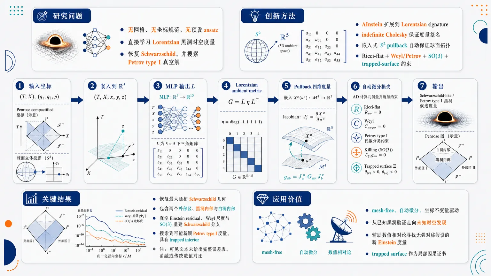
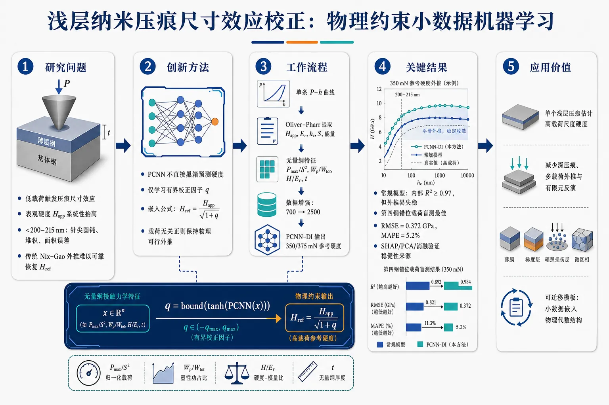
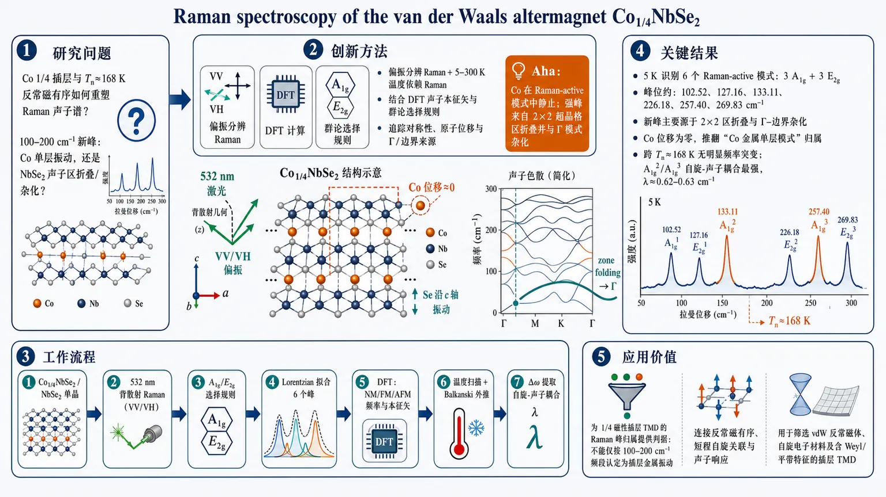
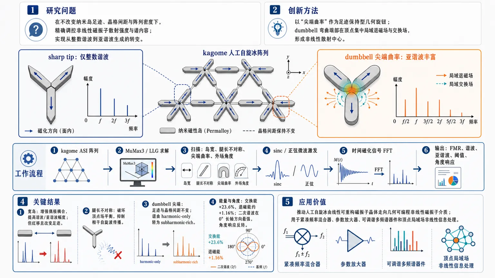
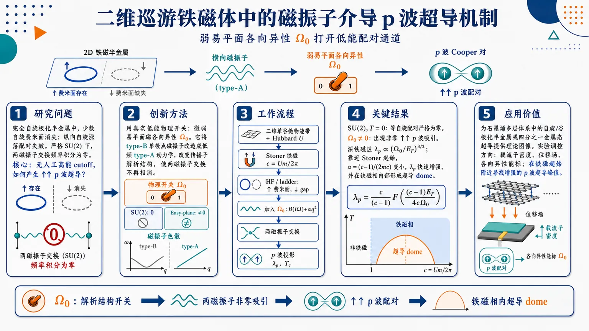
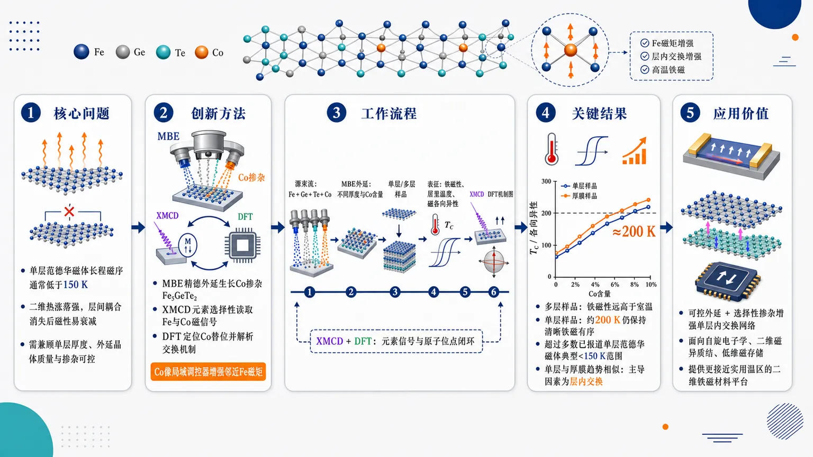
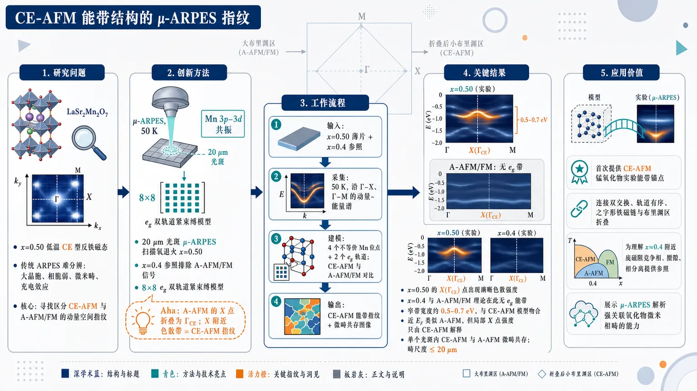
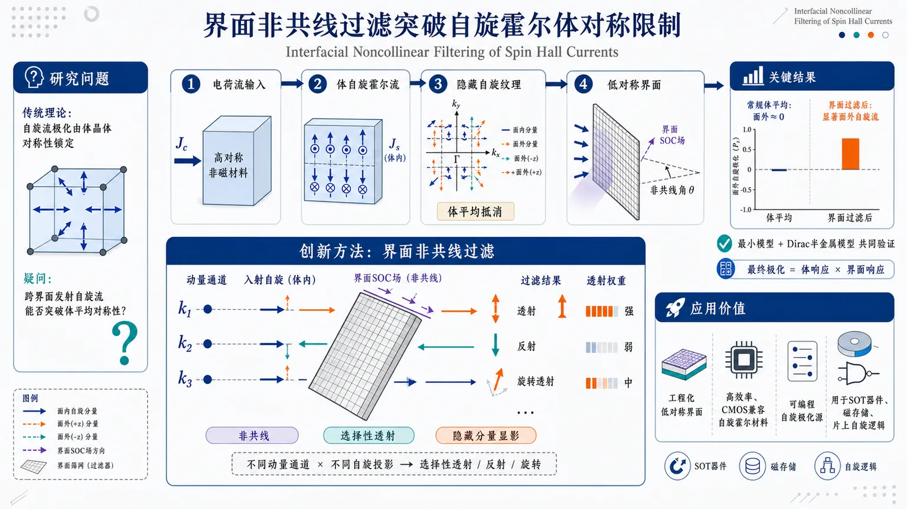
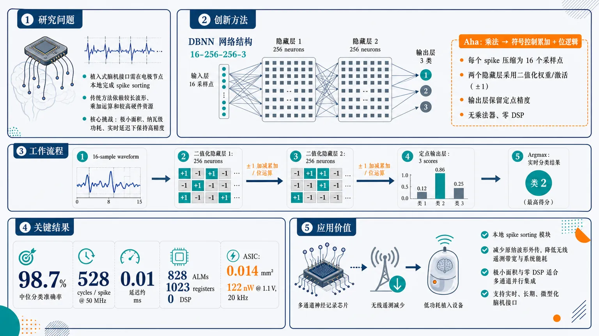
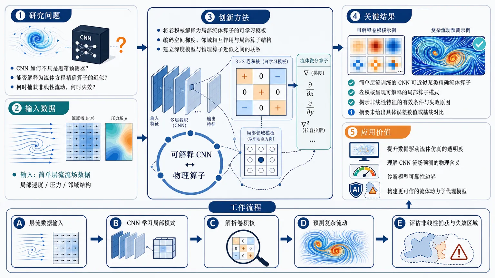

AI × Science 文献日报 2026/07/08
聚焦 AI × 物理 / 化学 / 材料交叉方向，自动过滤明显偏题的医学、教育与社会科学内容，并按主题重新排版，便于快速深读。
AI | 物理 | 化学 | 材料 | 交叉学科 | arXiv | 预印本追踪
原始候选 212 篇中，已剔除 0 篇明显偏离主线的内容，并从剩余 212 篇主线相关文献中精选 60 篇进入日报页，优先保留 AI × 物理 / 化学 / 材料交叉与关键计算方法工作。
核心关注（ML × ferro / 凝聚态）
8 篇今日进展不在 NbOI2、CrI3、CrSBr、BaTiO3 等具体铁电/二维磁体上刷新 DFT+U、equivariant GNN、MACE 或 NEP 势能面，而是把物理先验嵌入凝聚态计算流程。非厄米有限链工作把拓扑不变量的裁剪长度从经验参数转为由局域化长度支配的可学习量。Heusler 磁热论文把可解释描述符用于磁熵变筛选，CALPHAD-ML 则把热力学相稳定信息并入相预测。PINN、积分算子网络和强化学习量子纠错显示，约束型 ML 正从拟合性质转向控制误差、边界条件与非局部算子。
-
01有限非厄米链拓扑不变量收敛准则的机器学习预测Machine learning prediction of the convergence criterion for a topological invariant of finite non-Hermitian chains
📄 摘要：面向具有非厄米趋肤效应的有限链，极分解矩阵拓扑不变量需选取裁剪长度；该参数在相变附近受有限尺寸效应影响最强。作者指出所需裁剪长度由物理衰减/局域化长度控制，并用机器学习预测收敛准则，减少经验调参。
💡 亮点：把非厄米有限链拓扑不变量的裁剪长度与局域化长度联系起来。机器学习用于预测收敛条件，有助于在相变附近稳定判定趋肤体系拓扑。
📐 方法要点：用 ML 预测非厄米有限链拓扑不变量裁剪长度收敛准则。
🔗 相关工作关联：呼应非厄米趋肤效应、有限尺寸标度、极分解拓扑不变量。
💡 对你方向的启示：把经验裁剪参数学习化，可迁移到有限磁链与拓扑相变判据。
-
02流体动力学的可解释卷积神经网络框架An interpretable convolutional neural network framework for fluid dynamics
📄 摘要：针对数据驱动流体模型难解释的问题，作者用简单层流数据训练 CNN，使其表现为精确算子的近似。框架分析卷积核如何编码流场中的局部算子结构，解释模型何时能捕获非线性流动、何时失效。
💡 亮点：CNN 被约束并解析为流体动力学算子，而非单纯黑箱预测器。该做法把可解释性引入数据驱动流体建模，利于诊断模型可靠边界。
📐 方法要点：解析 CNN 卷积核如何近似流体局部微分算子。
🔗 相关工作关联：呼应可解释 CNN、算子学习、PDE 代理模型与湍流闭合。
💡 对你方向的启示：提示凝聚态场论代理模型需检查卷积核对应的物理算子。
-
03机器学习与物理约束网络校正钢中压痕尺寸效应Data-Efficient Indentation Size Effect Correction in Steels Using Machine Learning and Physics-Constrained Neural Network
📄 摘要：浅层纳米压痕会因压痕尺寸效应高估硬度，传统 Nix-Gao 依赖深压入线性区。作者基于三块 2–6.5 GPa 认证钢参考块的 700 余次压痕，构建数据高效流程，从浅层受尺寸效应影响的数据恢复高载荷参考硬度，并引入物理约束神经网络。
💡 亮点：只用浅层纳米压痕即可回推钢的高载荷参考硬度。物理约束网络绕开 Nix-Gao 对深压入线性区的依赖，适合薄膜和小体积相。
📐 方法要点：物理约束神经网络从浅压痕数据校正尺寸效应硬度。
🔗 相关工作关联：呼应 Nix-Gao 模型、小样本材料表征、力学性质反演。
💡 对你方向的启示：适合把铁电畴壁、磁弹耦合样品的局域测量偏差纳入约束学习。
-
04CALPHAD 引导的机器学习与数据增强加速相预测Accelerating phase prediction via CALPHAD-informed machine learning and data augmentation
📄 摘要：计算材料科学论文将 CALPHAD 热力学信息并入机器学习相预测，并配合数据增强扩展训练集。目标是在成分空间中更快判断相稳定性，降低纯数据驱动模型对大规模实验或计算标注的依赖。
💡 亮点：相预测模型不只学习数据分布，还吸收 CALPHAD 热力学先验。该策略适合多组元合金筛选中快速缩小候选成分范围。
📐 方法要点：CALPHAD 热力学先验结合数据增强加速相稳定预测。
🔗 相关工作关联：呼应相图机器学习、热力学数据库、主动学习合金设计。
💡 对你方向的启示：对多铁、磁热和形状记忆合金，可减少纯数据标注依赖。
-
05PINNIES：求解积分算子问题的高效物理信息神经网络PINNIES: An efficient physics-informed neural network framework for integral operator problems
📄 摘要：PINNIES 面向积分算子问题构建物理信息神经网络框架，发表于 Computer Physics Communications。方法把积分形式约束直接写入损失或网络求解流程，目标是提高非局部算子、积分方程类问题的计算效率与适用性。
💡 亮点：PINNIES 将 PINN 从微分方程场景扩展到积分算子问题。对含非局域核的物理模型，它给出更直接的神经求解框架。
📐 方法要点：PINNIES 将积分算子约束直接写入神经网络求解流程。
🔗 相关工作关联：呼应 PINN、Fredholm/Volterra 方程、非局部连续介质模型。
💡 对你方向的启示：适合处理长程库仑、偶极相互作用和退极化场等非局部问题。
-
06AInstein 神经网络求解数值黑洞度规Black Hole Black Boxes: Numerical Black Hole Metrics via AInstein Neural Networks
📄 摘要：AInstein 架构从黎曼 Einstein 方程扩展到 Lorentz 符号，用无监督 PINN 求解时空度规。作者通过恢复最大延拓 Schwarzschild 几何验证方法，并把 S2 作为嵌入全局处理，使网络在 R2 × R3 流形上学习环境度规以搜索任意黑洞解。
💡 亮点：AInstein PINN 被推广到 Lorentz 时空并重建 Schwarzschild 黑洞。把球面拓扑嵌入网络结构，为自动搜索数值黑洞度规打开路径。
📐 方法要点：AInstein 用无监督 PINN 学习 Lorentz 符号黑洞度规。
🔗 相关工作关联：呼应几何深度学习、Einstein 方程 PINN、流形坐标嵌入。
💡 对你方向的启示：强调把度规、坐标与约束同训，可借鉴于曲率诱导凝聚态模型。
-
07强化学习控制量子纠错Reinforcement learning control of quantum error correction
📄 摘要：Nature 论文把强化学习嵌入量子纠错控制，使量子计算机在运行中连续自校准。系统在计算过程中适应漂移并调整纠错策略，达到创纪录的逻辑错误率，同时增强对硬件参数漂移的鲁棒性。
💡 亮点：强化学习让量子纠错从静态校准转向在线自适应控制。创纪录逻辑错误率说明 AI 控制可直接改善容错量子计算硬件表现。
📐 方法要点：强化学习在线调控量子纠错策略并适应硬件漂移。
🔗 相关工作关联：呼应量子控制、表面码纠错、自校准实验与闭环优化。
💡 对你方向的启示：为量子材料测控中的漂移补偿和自适应脉冲优化提供范式。
-
08预测 Heusler 合金磁热效应的可解释机器学习模型Interpretable machine-learning model for predicting the magnetocaloric effect in Heusler alloys
📄 摘要：论文针对 Heusler 合金磁热效应建立可解释机器学习模型，使用材料描述符预测磁热响应。重点在于识别影响磁熵变或相关磁热指标的关键成分与物性特征，服务于磁制冷候选合金筛选。
💡 亮点：可解释模型把 Heusler 合金成分特征与磁热效应联系起来。它有助于在磁制冷材料搜索中同时获得预测和特征归因。
📐 方法要点：可解释 ML 用材料描述符预测 Heusler 合金磁热效应。
🔗 相关工作关联：呼应磁熵变预测、Heusler 合金筛选、特征重要性分析。
💡 对你方向的启示：可把成分、电性和磁结构描述符联用于磁制冷候选发现。
今日摘要
总览：今日条目集中在磁性量子材料与物理约束机器学习两条主线：Co₁/₄NbSe₂范德瓦耳斯交替磁体拉曼谱、Cr掺杂FeSb₂交替磁有序、NaMnAs室温反铁磁共振、Co掺杂Fe₅GeTe₂单层高温铁磁，以及LaSr₂Mn₂O₇的CE型反铁磁电子结构共同指向“自旋对称性—能带劈裂—集体激发”的实验判据。计算侧从CALPHAD约束相预测、物理信息神经网络求解弹性波和对流扩散方程、机器学习原子间势描述纳米晶硅热输运，延伸到SrTiO₃摩尔双层的深度学习哈密顿量、平带二维材料结构学习筛选和传统超导体生成式晶体重构基准。量子多体与器件主题包括表面码神经译码、量子核良性过拟合、短程自旋1/2链量子资源、腔调控分数量子霍尔激发能隙，以及HgBa₂CuO₄₊δ欠掺杂铜氧化物异常高准粒子热导。
热点：热点一：交替磁与反铁磁自旋电子学 → 用拉曼散射、微区角分辨光电子谱、室温反铁磁共振和非共线界面自旋霍尔流过滤来寻找无净磁矩体系中的动量依赖自旋劈裂与手征磁激发 → 典型工作包括Co₁/₄NbSe₂、Cr掺杂FeSb₂、NaMnAs、棋盘格弱耦合交替磁模型和非共线反铁磁畴壁的磁八极矩模型。热点二：二维范德瓦耳斯磁体与电场/压力可控磁相 → 通过层间堆垛、偶极—偶极相互作用、电场和外压调节各向异性、斯格明子相和居里温度 → 典型工作包括Co掺杂Fe₅GeTe₂外延单层、(Co₀.₅Fe₀.₅)₅GeTe₂压力磁性、压力诱导堆垛变化抑制范德瓦耳斯绝缘体铁磁性、二维钨—ⅢA族单层巨磁各向异性。热点三：物理约束机器学习从“拟合器”转向“可验证求解器/筛选器” → 将CALPHAD、质量守恒、积分算子、弹性波边界条件、声子输运和哈密顿量结构写入神经网络或算子学习框架 → 典型工作包括CALPHAD辅助相预测、质量守恒物理信息神经网络求解一维对流扩散、双材料弹性动力学物理信息框架、纳米晶硅机器学习势热输运、SrTiO₃摩尔双层深度学习哈密顿量和平带二维材料物理评分筛选。
今日文献
60 篇 · 20 含图深析-
01
📊 含图深析
📄 摘要：AInstein 架构从黎曼 Einstein 方程扩展到 Lorentz 符号，用无监督 PINN 求解时空度规。作者通过恢复最大延拓 Schwarzschild 几何验证方法，并把 S2 作为嵌入全局处理，使网络在 R2 × R3 流形上学习环境度规以搜索任意黑洞解。
💡 亮点：AInstein PINN 被推广到 Lorentz 时空并重建 Schwarzschild 黑洞。把球面拓扑嵌入网络结构，为自动搜索数值黑洞度规打开路径。
📖 展开分析 + 配图

研究问题如何让神经网络在不依赖网格、坐标规范或预设黑洞 ansatz 的情况下，直接学习 Lorentzian 黑洞时空度量；既能恢复最大延拓 Schwarzschild 几何，又能搜索带有 trapped interior 的一般 Petrov type I 真空 Einstein 度量。创新方法将 AInstein 扩展到 Lorentzian signature：MLP 学习 (R²×R³) 上的单一 ambient metric，用 indefinite Cholesky 保证 Lorentzian 度量签名，再通过嵌入式 (S²) pullback 得到四维黑洞时空；Aha 点是把球面拓扑一致性从“overlap loss 学出来”改为“嵌入结构自动保证”，并用 Ricci-flat、Weyl/Petrov 不变量、SO(3) Killing loss 与 trapped-surface 约束共同定位黑洞几何。工作流程输入 Penrose compactified 坐标 ((T,X)) 与球面 stereographic 坐标 ((q₁,q₂,p))；映射为嵌入点 ((T,X,x,y,z)inR⁵)；MLP 输出 5×5 下三角矩阵；经 (G=Lη L^T) 生成 ambient Lorentzian metric；用嵌入 Jacobian pullback 成四维度量；自动微分计算 Ricci、Weyl、Petrov speciality、Killing Lie derivative、trapping scalar (Ξ)；通过无监督损失训练；输出 Schwarzschild-like 或 Petrov type I 黑洞候选度量。关键结果方法可恢复最大延拓 Schwarzschild 几何，包括 Penrose 图中的两个外部区、黑洞内部与白洞内部；训练目标能用真空 Einstein residual、Weyl 曲率尺度和 SO(3) 对称性重建 Schwarzschild 分支；进一步搜索得到可能新颖的 Petrov type I Lorentzian Einstein metrics，并报告其具有真正 trapped interior，但可见文本未给出完整误差表、消融实验或传统数值方法定量对比。应用价值提供一种 mesh-free、自动微分、坐标不变量驱动的神经几何求解框架，可用于从已知黑洞解验证走向未知黑洞时空发现；有潜力辅助数值相对论寻找无强对称假设的新 Einstein 度量，并用 trapped surface 作为黑洞内部的局部因果证书。第一部分：核心概览 (Overview)
该研究把 AInstein 从黎曼 Einstein 度量扩展到 Lorentzian signature，用 Physics-Informed Neural Network (PINN) 直接学习黑洞时空度量。核心贡献在于：通过 Penrose compactification、嵌入式 (S²) pullback 架构、坐标不变量曲率损失 与 trapped-surface 约束，把 Schwarzschild 延拓几何恢复问题和一般 Petrov type I 黑洞解搜索统一到无监督神经几何框架中。其领域地位在于连接数值相对论、微分几何 PINN 与黑洞解发现，尝试从“验证已知解”推进到“搜索未知 Lorentzian Einstein metrics”。
---
第二部分：结构化快速回顾
《Black Hole Black Boxes: Numerical Black Hole Metrics via AInstein Neural Networks》（None，）
背景
Einstein 度量求解是几何分析与广义相对论的核心问题。传统数值相对论依赖坐标、规范、边界条件、网格或谱离散；AInstein/PINN 路线把度量表示为坐标的可微神经函数，并用自动微分计算 Ricci、Weyl 等几何张量。
方法
构造从 (R⁵→R¹⁵) 的 MLP，输出 (5×5) 下三角矩阵，通过 indefinite Cholesky parametrisation 得到 ambient Lorentzian metric (G_θ=L_θη L_θmathsf T)，再经 (S²subsetR³) 嵌入 pullback 得到四维度量。训练目标包括 vacuum Einstein residual、Weyl 标量约束、SO(3) Killing loss、Petrov speciality index、horizon curvature anchor 与 trapped-surface constraint。
结果
摘要层面给出两类结果：一是恢复 maximally extended Schwarzschild geometry；二是搜索到可能新颖的 Petrov type I Lorentzian Einstein metrics，并带有真正 trapped interior。提供正文片段尚未包含完整训练曲线、误差表、残差统计或 posterior certification 数值。
讨论
方法强调坐标不变量损失与拓扑一致性。与原 AInstein 的多 chart overlap loss 不同，(S²) 被全局嵌入 (R³)，两个 stereographic hemispheres 通过同一 ambient metric 自动一致。
局限
可见文本缺少完整实验结果、消融实验、误差分布、泛化测试、与传统数值相对论方法的定量对比。Petrov type I 新解的“novel”性质在摘要中仍使用 “potentially novel”，需要进一步解析不变量、边界条件、全局结构与数值稳定性。
结论
Lorentzian AInstein 架构为黑洞度量提供了一种 mesh-free、自动微分、几何不变量驱动的神经求解框架。Schwarzschild 恢复作为验证任务，一般 Petrov type I trapped-surface 搜索作为解发现任务，构成从已知黑洞重建到未知黑洞探索的技术路径。
---
第三部分：逐章节冷凝解析 (Section-by-Section Condensing)
Abstract
AInstein is extended from Riemannian to Lorentzian Einstein geometry
AInstein architecture 原本用于无监督求解 Riemannian Einstein equations，该研究把它推广到 Lorentzian signature，即广义相对论黑洞时空所需的伪黎曼度量类型。摘要明确写道：*"The AInstein architecture introduced an unsupervised neural method for solving the Riemannian Einstein equations on arbitrary manifolds."* 扩展目标是：*"This Physics Informed Neural Network approach (PINN) is extended here to Lorentzian signature"*。
Schwarzschild geometry is used as the validation benchmark
验证任务不是局部 Schwarzschild 外部区域，而是 maximally extended Schwarzschild geometry，即包含两个外部区域、黑洞内部、白洞内部的 Kruskal/Penrose 全局结构。摘要给出验证目标：*"validated by recovering the maximally extended Schwarzschild geometry"*。
Topology is built into the architecture through an embedded (S²)
球面拓扑不是通过多个 chart 的经验匹配获得，而是通过标准嵌入 (S²subsetR³) 内置进网络。网络实际学习的是 (R²×R³) 上的 ambient metric，再 pullback 到 (R²× S²)。核心表述为：*"The topology is built into the architecture by treating (S²) globally through its standard embedding"*，并且：*"the network learns an ambient metric on the manifold (R²×R³), where Penrose coordinates are chosen for (R²) and the metric on (S²) is obtained by pullback."*
Schwarzschild-targeted training uses vacuum, Weyl scalar, and SO(3) symmetry losses
Schwarzschild 恢复依赖三类约束：vacuum Einstein equation、quadratic Weyl scalar constraint、SO(3) symmetry。这些约束受到 Birkhoff–Jebsen theorem 启发：四维球对称真空解局部为 Schwarzschild。摘要写道：*"trained with the objective of recovering the Schwarzschild metric via losses encoding the vacuum Einstein equation, a quadratic Weyl scalar constraint, and the (SO(3)) symmetry of the resultant metric; directly motivated by the Birkhoff–Jebsen theorem."*
General black-hole search uses Petrov speciality and trapped-surface constraints
进一步目标从 Schwarzschild 的 Petrov type D 推广到 algebraically general Petrov type I。搜索目标包括 Petrov speciality index、horizon curvature anchor 与 trapped-surface constraint。摘要宣称：*"the objective is generalised to use the Petrov speciality index, a horizon curvature anchor, and a trapped‑surface constraint"*，最终结果是：*"finding potentially novel general-type Lorentzian Einstein metrics with a genuinely trapped interior."*
---
I Introduction
Einstein metric condition is compact but computationally hard
Einstein 度量定义为 Ricci 曲率处处与度量成比例：
[
Rμν=łambda gμν.
]
这里 (łambda) 是 Einstein constant；在广义相对论中对应 cosmological constant。原文给出定义：*"an Einstein metric is defined such that Ricci curvature is everywhere proportional to the metric itself"*，并写明：*"(Rμν=łambda gμν)"*。困难在于它是非线性二阶偏微分方程组：*"Although Equation 1 is concise, it represents a non-linear second-order system for the metric components."*
Global metric construction requires tensorial consistency across the manifold
局部 chart 中求得的 (gμν) 还必须拼接成全局光滑张量。全局问题不只是 PDE 求解，而是 chart compatibility 与 smooth tensor assembly。原文强调：*"The global problem also requires the local chart components to assemble into a single smooth tensor on the whole manifold."*
Traditional numerical relativity depends on formulations, gauges, boundaries, and discretisation
数值相对论通常通过选择 formulation、coordinates、gauge conditions、boundary data、mesh/spectral discretisation 来使 Einstein 方程可计算。原文概括为：*"this non-linear geometric problem is usually made tractable by turning the Einstein equations into a well-posed computational system after choosing a formulation, coordinates, gauge conditions, boundary data, and a mesh or spectral discretisation."*
Dynamical numerical relativity is built around the Cauchy problem
动态分支将 spacetime 分解为空间超曲面，初始数据满足 Hamiltonian and momentum constraints，再由 gauge-fixed Einstein equations 演化。原文写道：*"The dynamical branch of the field is built around the Cauchy problem, where the spacetime is foliated into spatial hypersurfaces, initial data are chosen subject to the Hamiltonian and momentum constraints, and the data are evolved by a gauge-fixed form of Einstein’s equations."*
ADM, BSSN, generalized harmonic, and moving-puncture methods define the modern baseline
传统发展脉络包括：ADM decomposition、BSSN formulation、generalized harmonic evolution with excision、moving-puncture methods。具体引用路径包括 ADM [2]、BSSN [51,7]、binary black-hole breakthrough [45]、moving punctures [10,6]。原文评价 BSSN：*"greatly improved the stability of three-dimensional evolutions relative to direct ADM evolution."* 对二元黑洞突破，原文写道：*"the first stable full evolution of a binary black-hole spacetime using generalized harmonic evolution and excision"*；moving-puncture 方法则让：*"long-term inspiral, merger, ringdown, and gravitational-wave extraction broadly practical."*
Stationary black-hole construction is elliptic boundary-value solving rather than time evolution
静态或稳态黑洞构造通常不是 Cauchy evolution，而是解 coupled elliptic boundary-value problem。边界条件编码渐近平坦/AdS 区域、轴、视界、共形边界或紧致方向。原文写道：*"Stationary black-hole construction is different in character, instead of evolving initial data one typically solves a coupled elliptic boundary-value problem for the metric"*。
Einstein–DeTurck is the standard gauge-fixed elliptic framework
Einstein–DeTurck formulation 为静态数值相对论和 Kaluza–Klein 黑洞提供系统框架。原文称其为：*"a systematic gauge-fixed elliptic framework for static numerical relativity and Kaluza–Klein black holes."* 该路径还扩展到：*"more general stationary vacuum black holes in Lorentzian signature"*。
PINN replaces grid/spectral data with differentiable neural metric functions
机器学习路线把度量表示为坐标的可微函数，自动微分计算几何张量，并把它们放入 loss。原文定义这一点：*"the metric is treated as a differentiable function of the coordinates by representing it with a (smooth) neural network, with geometric tensors computed by automatic differentiation and inserted directly into the objective"*。脚注明确：*"This is the Physics Informed Neural Network (PINN) formalism."*
AInstein originally solved Riemannian Einstein metrics with atlas subnetworks and overlap loss
原 AInstein 针对球面上的 Riemannian Einstein metrics。每个 chart 有单独 subnetwork，overlap 区域通过 transition maps 传递，并用 overlap loss 强制 tensor transformation law。原文写道：*"the manifold was represented by an atlas, each chart had its own subnetwork, points in overlap regions were passed through the relevant transition maps, and an explicit overlap loss enforced the tensorial transformation law for the metric."*
The present architecture changes global consistency by learning one ambient metric
新架构用嵌入代替多 chart overlap matching。核心变化包括 Lorentzian metric parametrisation、compactified Penrose-domain sampling、coordinate-invariant scalar losses、embedded treatment of topology。原文总结：*"The main changes are a Lorentzian metric parametrisation, compactified Penrose-domain sampling, coordinate-invariant scalar losses, and an embedded treatment of the topologically non-trivial part of the manifold."* 更关键的是：*"Rather than learning two independent sets of metric components and matching them with a loss term, the model learns a single ambient metric, with the two stereographic hemispheres being related analytically by pullback."*
---
II Theoretical Prerequisites
II.1 The Schwarzschild Problem
The computational manifold is (M=P× S²)
四维流形写作
[
M=P× S²,
]
其中 (P) 是二维 compactified Penrose domain，(S²) 是角向球面。重要细节是 product notation 只区分 causal coordinates 与 angular coordinates，不假定 product metric。原文明确：*"where it should be noted Equation 2 does not assume a product metric – the product notation only separates the causal coordinates from the angular coordinates."*
The later metric class is not restricted to diagonal Schwarzschild ansatz
尽管 Schwarzschild 是球对称的，后续考虑的度量不是简单的 Schwarzschild diagonal ansatz，而是一般四维 pullback metric。原文强调：*"the class of metrics considered later is a general symmetric four-dimensional pullback metric, not an ansatz restricted to the diagonal Schwarzschild form."*
Penrose coordinates compactify horizons into a finite computational domain
((T,X)) 是 Penrose coordinates。Penrose 图保留光锥结构，把无限远区域映到有限边界；event horizons 被置于有限计算域内部。原文解释：*"A Penrose diagram is a conformally compactified representation of spacetime, infinite regions are mapped to finite boundaries while the light-cone structure is preserved."* 选择 Penrose 坐标的动机是：*"Penrose coordinates are useful because they place the event horizons inside a finite computational domain."*
The compactified Schwarzschild extension is divided into four diamonds
四个区域定义为 (Bₘ̊ I,Bₘ̊ II,Bₘ̊ III,Bₘ̊ IV)，对应右外部、未来黑洞内部、左外部、过去白洞内部。边界函数为
[
τ_c⁻(X)=|X-c|-fracπ4,qquad
τ_c⁺(X)=-|X-c|+fracπ4.
]
四区间范围由式 (4) 给出，例如 (Bₘ̊ I) 满足 (0<X<π/2)，(Bₘ̊ II) 满足 (-π/4<X<π/4, |X|<T<π/4)。图注说明：*"The right and left diamonds are the two exterior regions (Bₘ̊ I) and (Bₘ̊ III), while (Bₘ̊ II) and (Bₘ̊ IV) are the future and past black-hole interior regions."*
Null horizons and singularities have simple locations
中央 diamond 中的 null horizons 是 (T=± X)，未来/过去 singularities 是 (T=±π/4) 且 (|X|<π/4)。原文写道：*"The null horizons are the diagonal lines (T=± X) in the central diamond, whilst the future and past singularities are the horizontal boundaries (T=±π/4) with (|X|<π/4)."*
The target Schwarzschild line element has conformal Penrose form
目标 Schwarzschild 度量写为
[
ds²⁼F(T,X)(-dT²⁺dX²⁾⁺r(T,X)²dØmega₂².
]
原文给出：*"the target Schwarzschild line element may be written as (ds²=F(T,X)(-dT²+dX²)+r(T,X)²dØmega₂²)"*。
The Penrose conformal factor is finite and nonzero at horizons
共形因子为
[
F(T,X)=frac32m³ e⁻r⁽T,X⁾/⁽²m⁾r(T,X)(o̧s²T-sin²X)².
]
关键性质是 horizon 处没有坐标奇异性；真正奇异性来自 (r→0)。原文写道：*"The conformal factor (F) is finite and non-zero at the horizons; the singular behaviour of the Schwarzschild solution is instead carried by (r(T,X)i̊ghtarrow 0) on the spacelike singularity."*
The angular metric is represented in stereographic coordinates
在 stereographic angular coordinates ((q₁,q₂₎) 下，单位球面 round metric 为
[
dØmega₂²⁼frac4(1+q₁²⁺q₂²⁾²(dq₁²⁺dq₂²⁾.
]
该表达式是后续 pullback 和 (S²) 嵌入的基础。
The areal radius uses Lambert-W branches across four Penrose regions
半径为
[
r=2m(1+Wₘₐₜₕcₐₗ B),
]
其中 (ḩi=o̧s 2T/o̧s 2X)，外部区域 (Bₘ̊ I,Bₘ̊ III) 用 (øperatornamearccothḩi)，内部区域 (Bₘ̊ II,Bₘ̊ IV) 用 (øperatornamearctanhḩi)。原文写道：*"Let (W) denote the real Lambert-(W) function"*，并给出：*"(r=2m(1+Wₘₐₜₕcₐₗ B))"*。
The equation solved remains the vacuum Einstein condition
虽然坐标和拓扑处理复杂，最终张量方程仍然是
[
Rμν=0.
]
原文收束为：*"The tensor equation to be solved remains the vacuum condition (Rμν=0)."*
---
II.2 Birkhoff’s Theorem and Scalar Invariants
Invariant constraints progressively restrict the solution space
标量不变量并不单独唯一确定任意度量；增加不变量数量可以逐步收缩可行解空间。原文明确：*"The key point here is not that any single scalar uniquely determines the metric in general, but rather the specification of increasing numbers of invariants constrains the space of possible solutions."*
---
II.2.1 Petrov Classes, Weyl Invariants, and Curvature Scales
Petrov classification is encoded through self-dual Weyl invariants
四维黑洞时空局部有 Petrov type。定义 self-dual Weyl tensor：
[
Cₐbcd=Cₐbcd-i,{}^star Cₐbcd.
]
原文写道：*"Any smooth region of a 4D classical black-hole spacetime has a local Petrov type."* 分类器来自复 speciality index：*"A classifier of the type may be defined through the complex speciality index."*
The complex Weyl invariants (I) and (J) set the speciality index
不变量定义为
[
I=frac132mathcal Cₐbcdmathcal Cabcd,qquad
J=frac1384mathcal Cₐb{}cdmathcal Ccd{}efmathcal Cₑf{}ab.
]
speciality index 为
[
mathcal S=frac27J²I³.
]
原文给出：*"The corresponding speciality index is (S:=frac27J²I³)"*，且定义域排除 (I=0)：*"is defined away from the conformally flat locus (I=0)."*
Schwarzschild has Petrov type D and (mathcal S=1)
Schwarzschild 是 Kerr 的 (a=0) 极限。在 Schwarzschild principal tetrad 中唯一非零 Newman–Penrose Weyl scalar 是
[
Ψ₂₌₋ₘ/r³.
]
因此
[
I=frac3m²r⁶,qquad J=fracm³r⁹,qquad mathcal Sₘ̊ Scₕw=1+0i.
]
原文写道：*"Schwarzschild is the (a=0) Kerr limit"*，并明确：*"(Sₘ̊ Scₕw=1+0i)."*
The Petrov discriminant tests algebraic speciality but is not a complete type-D classifier
Petrov discriminant 为
[
Δₘ̊ Pₑₜᵣₒᵥ=I³⁻²⁷J².
]
Schwarzschild type D 满足 (Δₘ̊ Pₑₜᵣₒᵥ=0)，但该条件还包括 type II；更退化的 III、N、O 有 (I=J=0)。原文强调：*"The implication is not reversible: (Δₘ̊ Pₑₜᵣₒᵥ=0) is the algebraically special condition and also includes type II"*，并补充：*"Thus the discriminant is a test for repeated principal null directions, not a complete type-D classifier."*
Petrov type I corresponds to nonzero discriminant
一般代数类型 Petrov type I 与非零 discriminant 相关。原文写道：*"Petrov type I is associated with a non-zero discriminant."* 这为后续搜索非 type-D 的一般黑洞度量提供了不变量目标。
The Kretschmann scalar fixes the Schwarzschild curvature scale
Kretschmann invariant 定义为
[
K=RₐbcdRabcd.
]
Schwarzschild 中
[
Kₘ̊ Scₕw=frac48m²r⁶.
]
因此无量纲组合 (Kr⁶/m²⁼⁴⁸) 是常数。原文说明：*"The Kretschmann invariant fixes the curvature scale of Schwarzschild giving partial information on the coordinate representation."*
A cubic curvature ratio provides an additional Schwarzschild-specific scalar check
定义
[
Jₘ̊ cᵤb=Rₐb{}cdRcd{}efRₑf{}ab.
]
Schwarzschild 中 (Jₘ̊ cᵤb=96m³/r⁹)，并且在 Weyl invariant 归一化下 (Jₘ̊ cᵤb=96øperatornameRe(J))。诊断量
[
h̊oₘ̊ Scₕw=-frac96øperatornameRe(J)|K|³/²=-frac1sqrt12.
]
原文说明：*"This ratio is simply an additional scalar check of the Schwarzschild curvature pattern, independent of the (areal) radius."*
---
II.2.2 Killing Vectors and Spherical Symmetry
Schwarzschild spherical symmetry is expressed by the (mathfrakso(3)) Killing algebra
Schwarzschild 解析解具有球对称性，其无穷小对称由 (S²) 上三个 rotation Killing fields 生成。原文写道：*"The analytic Schwarzschild solution is spherically symmetric."* 并指出：*"the Killing algebra of the round (S²) is (mathfrakso(3))"*。
The ambient Cartesian generators are standard angular-momentum vector fields
在 (S²subsetR³) 中，旋转生成元为
[
Jₓ₌₋zpartial_y+ypartial_z,quad
J_y=zpartialₓ₋ₓpartial_z,quad
J_z=-ypartialₓ₊ₓpartial_y.
]
原文称其为：*"the familiar angular-momentum vector fields"*。
Stereographic coordinates yield explicit Killing generators used in loss functions
通过 northern inverse stereographic map
[
x=frac2q₁1+|q|²,quad
y=frac2q₂1+|q|²,quad
z=frac1-|q|²1+|q|²,
]
得到 (ξₓ,ξ_y,ξ_z) 的显式 (q₁,q₂) 形式。例如
[
ξ_z=-q₂partialq_₁+q₁partialq_₂.
]
这些算子后续直接进入训练和验证。
Spherical symmetry is imposed through Lie derivative vanishing
度量在旋转下不变当且仅当
[
(mathcal Lξ_Ag)μν=0,qquad A=x,y,z.
]
原文写道：*"A metric is invariant under these rotations precisely when ((L_ξAg)μν=0)."* 该 Killing loss 既作为训练项，也作为 validation residual：*"the same operators are used both as a training loss and as validation residuals."*
Birkhoff–Jebsen theorem justifies targeted Schwarzschild search
四维球对称真空解局部必为 Schwarzschild；若 (łambda≠0)，对应 Kottler/Schwarzschild–de Sitter。原文写道：*"The Birkhoff–Jebsen theorem states that a four-dimensional spherically symmetric vacuum solution is locally Schwarzschild; for (łambda≠0) the corresponding solution is Kottler/Schwarzschild–de Sitter."*
The identification criteria are deliberately redundant and diffeomorphism-invariant
Ricci flatness + spherical symmetry 已足够定位 Schwarzschild 分支；non-degeneracy 防止塌缩度量；Kretschmann scale 固定质量参数。原文解释：*"These criteria are intentionally redundant."* 并强调：*"Since each condition is stated tensorially or through scalar curvature invariants, the combined identification is insensitive to the coordinates used to represent the metric – it is a diffeomorphism-invariant identification of the geometry as Schwarzschild."*
---
II.3 Spacetime Embedding
The (S²) factor uses two stereographic hemispherical charts only as coordinates
球面用 north/south 两个 stereographic chart 表示，但这只是坐标装置，不是两个独立几何对象。原文开头写道：*"The (S²) factor is represented by two stereographic hemispherical charts. This two-chart representation is only a coordinate device."*
Intrinsic coordinates include a chart label (p)
坐标写作
[
w=(T,X,q₁,q₂,p),
]
其中 (p=0) 是 northern chart，(p=1) 是 southern chart。定义 (s₀₌₊₁,s₁₌₋₁)，控制 stereographic embedding 的极点方向。
The embedding maps intrinsic coordinates into (R²× S²subsetR⁵)
嵌入为
[
W(w)=łeft(T,X,frac2q₁1+|q|²,frac2q₂1+|q|²,sₚfrac1-|q|²1+|q|²i̊ght).
]
原文解释：*"Equation 25 maps the four intrinsic coordinates in Equation 24 to (R²× S²subsetR⁵)."*
The embedding Jacobian supplies the pullback map for the metric
Jacobian (J^A{}_μ=partial W^A/partial w^μ) 明确给出，前两维为 identity block，后三维为 stereographic sphere embedding 的导数。后续四维度量由 ambient metric 通过该 Jacobian pullback 得到。
Both hemispheres induce the same round metric
flat Euclidean metric 在最后三维经 pullback 得到标准 round metric。(sₚ) 改变 (q=0) 对应的 pole，但 induced metric 不变。原文写道：*"The sign (sₚ) changes which pole is represented by (q=0), while the induced round metric is the same in both charts."*
Global consistency is built in rather than learned by overlap loss
两套 coordinates 定义同一个 embedded sphere，而不是两个先验独立 chart。原文明确对比原 AInstein：*"The two sets of coordinates therefore define a single embedded sphere, rather than two a-priori independent charts (which was the case in [29])."*
---
II.4 Trapped Surfaces
Black-hole character is causal, not merely curvature-based
Schwarzschild 不变量可识别已知解，但黑洞的定义性特征是 horizon 与 trapped surfaces。原文强调：*"the defining property of a black hole is causal rather than curvature-based: the presence of a horizon, and locally of trapped surfaces."*
Event horizons are global and teleological, so local training uses trapped surfaces
Event horizon 是 future null infinity 的因果过去边界，不能在有界域内逐点评估。原文写道：*"The event horizon is a global, teleological object, the boundary of the causal past of future null infinity, and cannot be evaluated pointwise on a bounded domain."* 因此使用 quasi-local trapped surface：*"The quasi-local notion of a trapped surface is therefore used, which is local and requires no symmetry."*
Null expansions diagnose trapped, marginal, untrapped, and anti-trapped surfaces
给定闭合 spacelike two-surface (Σ)，未来指向 null normals (ell,n) 满足 (g(ell,n)=-1)。null expansions 为
[
θₑₗₗ₌qμνnabla_μell_ν,qquad
θₙ₌qμνnabla_μ n_ν.
]
正常区域 (θₑₗₗ>0>θₙ)；future trapped surface 满足 (θₑₗₗ,θₙ<0)；(θₑₗₗ₌₀₎ 是 marginal/apparent horizon；(θₑₗₗ,θₙ>0) 是 anti-trapped/white-hole 情况。原文写道：*"The surface is (future) trapped when both expansions are negative, (θₑₗₗ,θₙ<0), so that even the nominally outgoing light is dragged inward."*
Penrose singularity theorem makes trapped surfaces a local black-hole certificate
在 null energy condition 下，闭合 trapped surface 迫使 geodesic incompleteness，并处于黑洞区域。原文写道：*"By the Penrose singularity theorem a closed trapped surface, together with the null energy condition (saturated in vacuum), forces geodesic incompleteness and lies within the black-hole region."* 因此 trapped surfaces 是：*"the standard local certificate of a black-hole interior."*
The natural candidate surfaces are (S²) fibres at fixed ((T,X))
流形 (mathcal P× S²) 自然给出固定 ((T,X)) 的 (S²) fibres。这些 fibre 的 induced metric 是 pullback metric 的 angular block，即使不假定对称性也可定义面积 (A=4π R²) 与 areal radius (R)。原文写道：*"The manifold Equation 2 supplies a natural family of such surfaces: the (S²) fibres at fixed ((T,X))."*
The scalar (Ξ=gμνpartial_μ Rpartial_ν R) provides differentiable trapping signal
定义
[
Ξ=gμνpartial_μ Rpartial_ν R,qquad
øperatornamesignΞ=-øperatornamesign(θₑₗₗθₙ₎.
]
(Ξ>0) 表示 untrapped，(Ξ=0) marginal，(Ξ<0) trapped 或 anti-trapped。原文写道：*"(Ξ>0) (spacelike (nabla R)) is untrapped, (Ξ=0) is marginal, and (Ξ<0) (timelike (nabla R)) is trapped or anti-trapped."*
In spherical symmetry (Ξ) reduces to the Misner–Sharp combination
球对称下
[
Ξ=1-frac2Mₘ̊ MSR,
]
Schwarzschild 中为 (1-2m/r)，在 (r<2m) 的内部为负。原文写道：*"for Schwarzschild equals (1-2m/r) and is negative precisely on the interior (r<2m)."*
For non-spherical metrics, trapped expansions remain the final certificate
Misner–Sharp mass 只在球对称下不变量定义，一般情形不可用；(Ξ) 是训练用 smooth scalar，而 (θₑₗₗ,θₙ) 用于 posterior certification。原文明确：*"the Misner–Sharp mass is only invariantly defined under spherical symmetry and is unavailable in general"*，并且：*"the individual expansions (θₑₗₗ,θₙ) – which alone distinguish a black hole from its time reverse – are reserved for the posterior certification."*
---
III AInstein Embedding Neural Networks
III.1 Warm up – Local Lorentzian Schwarzschild
A two-dimensional local Lorentzian problem isolates signature and curvature computation
预备实验使用单一 coordinate ball，维度设为 (d=2)，不使用 (S²) embedding。网络直接在 local coordinates (u=(u⁰,u¹⁾) 上表示 metric。原文写道：*"Before considering the embedded Schwarzschild problem, we study a local two-dimensional Lorentzian simplification."* 目的在于隔离复杂拓扑前先测试 Lorentzian signature 与 curvature calculation：*"This local architecture isolates the Lorentzian signature and curvature calculation from the additional global structure of (P× S²) later considered."*
The local metric uses indefinite Cholesky parametrisation
网络输出 (2×2) 下三角矩阵 (L_θ(u)) 的三个独立元素，度量为
[
gμν⁽θ⁾(u)=łeft(L_θ(u)η₍₂₎L_θ(u)mathsf Ti̊ght)μν,qquad
η₍₂₎=øperatornamediag(-1,1).
]
原文写道：*"the Lorentzian metric is obtained from an indefinite-Cholesky parametrisation"*。
The local network has four 128-wide linear layers with GELU
局部网络参数为四层、每层 128 neurons，并使用 GELU activations。GELU 的原因是需要 (C²) 光滑性来计算 metric derivatives。原文给出：*"The network has a sets of four 128 neuron-wide linear layers, and employs GELU activations; GELU allows derivatives to be (C²) smooth, as needed for metric derivatives."*
Only the Lorentzian Einstein condition is trained in the warm-up
该模式下禁用后续 Schwarzschild-specific losses，只对 (łambdain-1,0,1) 训练 Lorentzian Einstein condition。原文强调：*"all Schwarzschild losses later defined in Section III.4.3 are disabled."* 并写明：*"Only this Lorentzian Einstein condition is used for each of (łambdain-1,0,1)."*
---
III.2 Network Architecture
The central architecture is an MLP from (R⁵) to 15 outputs
主网络为
[
mathcal N_θ:mathbb R⁵→mathbb R¹⁵.
]
输入为 embedded point (W(w)=(T,X,x,y,z))，输出 (5×5) 下三角矩阵 (L_θ) 的 15 个独立元素。原文写道：*"The neural architecture is built using an internal multilayer perceptron (Nθ:R⁵łongrightarrowR¹⁵)."*
The ambient metric is Lorentzian by construction
ambient Lorentzian metric 定义为
[
G_θ=L_θη L_θmathsf T,qquad
η=øperatornamediag(-1,1,1,1,1).
]
下三角 parametrisation 同时保证对称性并减少独立输出。原文写道：*"The use of this lower-triangular matrix enforces the symmetric property of the metric under the below combination meaning there are fewer components to learn."*
The physical four-dimensional metric is the pullback of the ambient metric
四维 intrinsic metric 为
[
gμν⁽θ⁾(w)
=(G_θ)AB(W(w))J^A{}_μ(w)J^B{}_ν(w),
]
其中 (μ,ν=0,łdots,3)，(A,B=0,łdots,4)。该结构将 topology、chart compatibility 与 metric learning 合并。
Output bias initialisation places the model near flat ambient metric
输出层 bias 初始化使模型接近 flat ambient metric (η)。原文写道：*"The biases of the architecture’s output layer are initialised so that the model is initialised near the flat ambient metric (η)."* 在 sample distribution 标准差趋于 0 时恢复 flat Minkowski metric：*"In the limit that the standard deviation of the sample distribution tends to 0, one recovers the flat Minkowski space metric."*
Angular overlap loss is no longer needed
与 [29] 的分 chart overlap loss 不同，此处两个 hemispheres 来自同一个 ambient metric 的 push-forward/pullback，因此 angular agreement 内置。原文写道：*"Here both stereographic hemispheres are obtained by the push-forward of the same ambient metric through Equation 25, so their agreement is built into the parametrisation and no angular overlap loss is needed."* 任何 learned metric 自动满足 global consistency：*"any learnt metric is automatically globally consistent on the manifold."*
---
III.3 Data Generation
Penrose sampling maps disc samples into the compactified domain
为了采样 (mathbb R²× S²)，先在二维 disc 中采样，再映射到 compactified Penrose domain。该方法比 polygon rejection sampling 更高效，并可控制 radial density。原文写道：*"The Penrose sampler first draws a point in a 2-dimensional disc and then maps it to the compactified Penrose domain."* 优点是：*"more efficient than rejection sampling in the polygonal Penrose diagram, and gives direct control over the radial density of a sample."*
The auxiliary disc radius follows a Beta distribution
采样点 (z=h̊o u)，其中 (u) 为单位向量，(arg usimøperatornameUnif[0,2π))，半径
[
h̊o=Rₘₐₜₕcₐₗ Pb,qquad
bsimøperatornameBeta(αₘₐₜₕcₐₗ P⁻¹,αₘₐₜₕcₐₗ P).
]
(αₘₐₜₕcₐₗ P) 是 density-power hyperparameter。原文写道：*"(αP) is the density-power hyperparameter."*
Directional boundary scaling maps samples into the Penrose hexagon
定义
[
δ(h̊o)=fracπ4(1-h̊o),
]
以及三个方向边界尺度 (A(u),B(u),C(u))，最终
[
(T,X)=ell(u)u,qquad ell(u)=minA(u),B(u),C(u).
]
该映射把 disc 点压到 Penrose diagram 的可用区域。
Training avoids singular boundaries with (Rₕ̊o<1)
图示使用 (Rₕ̊o=0.85) 的 2000 个点。原文写道：*"A representative sample of 2000 points for (Rₕ̊ₒ=0.85) is shown in Figure 2"*。边界奇异性促使训练中使用 (Rₕ̊o<1)：*"the ill-defined nature of the singularity at the boundaries motivates this use of a (Rₕ̊ₒ<1)."*
Full diagram boundary occurs at (h̊o=1)
(h̊o=1) 到达完整 Penrose boundary，(h̊o=0) 收缩到中心。原文写道：*"At (h̊o=1), Equation 36 reaches the full diagram boundary; at (h̊o=0), it collapses to the centre."*
---
III.4 Training Objectives
Training objectives cover supervised benchmarking, Schwarzschild recovery, and Petrov type I searches
训练目标包括：已知目标的 supervised approximation、二维 Lorentzian calibration、Schwarzschild simulacrum、一般 Petrov type I 搜索，以及针对 trapped surface 的黑洞搜索。原文写道：*"the training objectives for supervised training against the known target solutions, and then four related problems are outlined."* 其中包括：*"constructing a simulacrum of the classic Schwarzschild black hole"*，以及：*"two general searches for Petrov type I solutions: the first a search agnostic to solution style, and the second specifically searching for black hole trapped surfaces."*
---
III.4.1 Supervised Network
The supervised model approximates known target metrics for initialisation and benchmarking
supervised 训练不是最终解发现目标，而是用于初始化与 benchmark。原文写道：*"The supervised model, where training instead approximates a known construction directly, is used for initialisation and benchmarking."*
The supervised wrapper returns the flattened intrinsic metric
base network 仍输出 ambient Cholesky vector，wrapper 应用 pullback 式 (32)，返回 flattened intrinsic metric。原文写道：*"The base network still outputs the ambient Cholesky vector, while a wrapper applies Equation 32 and returns the flattened intrinsic metric."*
The supervised loss is componentwise relative MSE with denominator regularisation
监督损失为
[
mathcal Lₘ̊ ₛᵤₚ
=frac116Nsumₐ₌₁Nsumμ,ν
frac(gμν⁽θ⁾(wₐ₎₋gμνm̊ tar(wₐ₎₎²
(gμνm̊ tar(wₐ₎₎²⁺¹.
]
分母加 (+1) 避免小目标分量导致相对误差爆炸。
Targets include flat Lorentzian identity and analytic Schwarzschild
目标 metric 可以是 (mathbb R²×mathbb R³) 上的 Lorentzian identity metric，或式 (5) 的 analytic Schwarzschild metric。原文写道：*"the target metric is either the Lorentzian identity metric on (R²×R³) (useful for a neutral initialisation), or the analytic Schwarzschild metric in Equation 5 (useful for benchmarking the general unsupervised search performance)."*
---
III.4.2 Unsupervised Local Lorentzian Network
The local Einstein error tensor is (Eμν=Rμν-łambda gμν)
对每个样本 (wₐ)，定义
[
Eμν(wₐ₎₌Rμν[g⁽θ⁾](wₐ₎₋łambda gμν⁽θ⁾(wₐ₎.
]
该项直接对应 Einstein metric equation。
The local Einstein loss contracts residuals with a Euclideanised inverse metric
局部损失为
[
mathcal LE,Lₒcₐₗ
=frac1Nsumₐ₌₁N
łeft|
Eμν
(g_E⁽θ⁾)μα
(g_E⁽θ⁾)νβ
Eαβ
i̊ght|w_ₐ.
]
这里 (g_E) 是用同一 vielbein 但把 (η) 换成 (δ) 得到的 Euclideanised metric。脚注解释：*"By this we mean (g_E) is obtained by the same vielbein as (g), but using (δ) as the flat metric, instead of (η)."*
The local runs train only this loss for three cosmological constants
训练 (łambdain+1,0,-1)。原文写道：*"The network described in Section III.1 is then trained with this (LE,Lₒcₐₗ) loss only, for (łambdain+1,0,-1)."*
---
III.4.3 Unsupervised Schwarzschild Network
The four-dimensional Schwarzschild and Petrov searches set (łambda=0)
四维 Schwarzschild 与 Petrov type searches 使用 vacuum equation (Rμν=0)，因此设 (łambda=0)。原文写道：*"For the four-dimensional Schwarzschild and general Petrov type searches, the vacuum equation is (Rμν=0), so (łambda=0) is set."* 脚注补充代码支持一般 (łambda)：*"Note the code also has functionality for general (łambda) search."*
The Schwarzschild Einstein loss uses curvature-weighted residual contraction
默认 Schwarzschild Lorentzian Einstein loss 为
[
mathcal LE,Scₕw
=frac1Nsumₐ₌₁N
frac1min(|K|,Kcₐₚ)+ϵ
łeft|
Eμν(g_E⁽θ⁾)μα
(g_E⁽θ⁾)νβ
Eαβ
i̊ght|w_ₐ.
]
原文说明它是：*"the inverse-metric contraction"*，且 (g_E) 保证 scalar well-defined：*"producing a well-defined scalar, since all objects involved are tensorial."*
The curvature weighting is capped at the horizon value
权重中 (Kcₐₚ=κ Kₕₒᵣ)，其中 (Kₕₒᵣ=0.75)。原文写道：*"uses (Kcₐₚ=κ Kₕₒᵣ) to cap this factor to the horizon value (Kₕₒᵣ=0.75)."* 分母中的 numerical guard 默认为 (ϵ=10⁻¹²)：*"Unless otherwise specified, (ϵ=10⁻¹²)."*
The Weyl invariant (I) is used to fix curvature scale independently of Ricci residuals
曲率尺度损失使用 quadratic Weyl invariant (I)，而不是完整 Kretschmann scalar。理由是非真空 residual 尚未消失时，Kretschmann 包含 Ricci contributions；用 (I) 可把 Ricci-flatness 与非 Ricci 曲率尺度分离。原文写道：*"Using (I) therefore decouples the scale-fixing term from the Einstein residual: (Lₘ̊ E) drives the Ricci tensor to zero, while the Weyl term fixes the non-Ricci curvature scale of the Schwarzschild branch."*
---
第四部分：深度理解与语言支持 (Understanding & Nuance)
1. 术语解析
Indefinite-Cholesky parametrisation
普通 Cholesky 分解常用于正定矩阵 (g=LLmathsf T)。Lorentzian metric 不是正定，而有 signature ((- + + +))。因此使用
[
g=Lη Lmathsf T
]
其中 (η=øperatornamediag(-1,1,łdots,1))。微妙点在于它不是“保证正定”，而是保证 固定 Lorentzian signature 与 metric symmetry。文中表达为 *"the Lorentzian metric is obtained from an indefinite-Cholesky parametrisation"*。
Pullback metric
Pullback metric 指 ambient space 上的度量 (GAB) 经嵌入 (W) 拉回到 intrinsic manifold：
[
gμν=GABfracpartial W^Apartial w^μfracpartial W^Bpartial w^ν.
]
微妙点在于网络并不直接学习 (S²) 上两个 chart 的 metric components，而是学习 (mathbb R²×mathbb R³) 上一个 ambient metric，再由几何映射自动得到球面度量。
Speciality index
[
mathcal S=27J²/I³
]
用于判断 Weyl tensor 是否 algebraically special。Schwarzschild/Kerr type D 给 (mathcal S=1)。但 (mathcal S=1) 或 (Δₘ̊ Pₑₜᵣₒᵥ=0) 不是完整 type-D 证明，因为 type II 也可能满足 algebraically special condition。文中精确提醒：*"the discriminant is a test for repeated principal null directions, not a complete type-D classifier."*
Trapped surface
Trapped surface 是闭合 spacelike two-surface，其两个未来 null expansions 都为负：(θₑₗₗ,θₙ<0)。这比“曲率很大”更接近黑洞内部的局部因果定义。微妙点是 (Ξ<0) 只能说明 trapped 或 anti-trapped，还需 expansions 的共同符号区分 black-hole interior 与 white-hole interior。
Teleological
event horizon 被称为 teleological，是因为它的定义依赖整个未来无穷远的因果结构，而非局部瞬时几何量。有限数值区域中无法直接逐点训练 event horizon，因此采用 quasi-local trapped-surface condition。
---
2. 疑难查证
为什么 Schwarzschild 验证不能只用 (Rμν=0)
(Rμν=0) 的解空间非常大，Minkowski、Schwarzschild、Kerr、引力波真空解等都满足。单独 Ricci-flatness 不足以指定目标几何。加入 SO(3) Killing loss 后，根据 Birkhoff–Jebsen theorem，四维球对称真空局部落到 Schwarzschild 分支；加入 Weyl/Kretschmann scale 后，可固定质量尺度；加入 non-degeneracy 可避免网络学到退化 metric。训练设计本质上是在真空 Einstein 解空间中用不变量和对称性“夹出” Schwarzschild。
为什么 (S²) 嵌入能替代 overlap loss
原 AInstein 的 atlas 方法需要在 chart overlap 区域强制
[
g⁽ⁱ⁾=fracpartial x⁽j⁾partial x⁽ⁱ⁾g⁽j⁾
fracpartial x⁽j⁾partial x⁽ⁱ⁾
]
这是一种学习到的兼容性。嵌入法让 north/south stereographic coordinates 都映到同一个 (S²subsetmathbb R³)，再从同一个 (G_θ) pullback。只要 (W) 和 Jacobian 正确，两个 chart 的 metric transformation law 自动成立。也就是说，全局一致性从 loss 层移动到了 architecture 层。
为什么用 (Ξ) 训练而不用直接训练 (θₑₗₗ,θₙ)
(Ξ=gμνpartial_μ Rpartial_ν R) 是 smooth scalar，计算稳定，适合作为 differentiable training signal。单个 expansions (θₑₗₗ,θₙ) 需要选择 future-directed null normals，并涉及 orientation/time direction 的一致判断，训练中更脆弱。但 (Ξ<0) 不能区分 future trapped 和 anti-trapped；因此训练用 (Ξ)，最终认证再计算 (θₑₗₗ,θₙ)。
为什么 Petrov type I 搜索比 Schwarzschild 恢复更难
Schwarzschild 由真空、球对称、曲率尺度、不变量关系强烈约束。Petrov type I 则是 algebraically general，意味着没有重复 principal null directions，(Δₘ̊ Pₑₜᵣₒᵥ≠0)。这类解空间更大，缺少强对称性支撑，训练更容易出现数值伪解、局部满足 residual 但全局结构不清晰的解。因此 posterior certification、边界分析和不变量诊断更加关键。
---
第五部分：创新评估与关联 (Synthesis & Novelty)
1. 创新性判断
从 Riemannian AInstein 到 Lorentzian black-hole geometry
近几年 AInstein 与相关 neural differential geometry 工作多集中在 Riemannian Einstein metrics、Calabi–Yau metrics、(G₂) metrics、hyperbolic spaces、minimal surfaces 等。该研究的新颖点是把 AInstein 的无监督几何 PINN 框架推进到 Lorentzian black-hole spacetime，需要处理非正定 signature、horizon、causal trapping、Penrose compactification 等 Riemannian 问题中不存在的结构。
用 embedded (S²) 架构解决拓扑一致性
过去 AInstein 依靠 atlas subnetworks 和 overlap loss 学习 chart compatibility。该研究把 (S²) 作为 embedded manifold 处理，网络学习单一 ambient metric，两个 stereographic hemispheres 由同一 pullback 自动统一。这解决了前人框架中 chart-overlap consistency 需要额外 loss、训练不稳定、误差可累积的问题。
把 Schwarzschild 恢复设计成 diffeomorphism-invariant identification
传统 supervised learning 容易学习某个坐标表达式，而不是几何本身。该研究通过 Ricci-flatness、Weyl invariants、Petrov diagnostics、Killing symmetry、Kretschmann scale 等张量或标量条件，减少坐标依赖。创新点不只是“拟合 Schwarzschild metric components”，而是用 invariant losses 在解空间中定位 Schwarzschild geometry。
从已知解重建推进到未知 Petrov type I 搜索
多数黑洞相关机器学习工作偏向 supervised prediction、波形建模、参数估计或已知背景上的 mode 学习。该研究尝试把神经网络作为 novel search method for arbitrary black hole solutions，尤其搜索 algebraically general Petrov type I Lorentzian Einstein metrics。这一步解决的是“如何不用预设强对称 ansatz 搜索黑洞解”的问题。
把 trapped-surface condition 纳入训练目标
黑洞不是单纯由大曲率定义；因果结构才是核心。将 (Ξ) 与 posterior null expansions 结合，把局部 trapped interior 纳入 neural metric search，是相对于只训练 (Rμν=0) 或曲率标量的一项关键创新。它尝试解决前人可能得到 Ricci-flat Lorentzian metric 却无法确认“黑洞性”的问题。
仍需定量结果支撑“potentially novel”
摘要中的 *"potentially novel general-type Lorentzian Einstein metrics"* 表明新解性质尚需谨慎。真正确立新颖性需要完整数值证据：Einstein residual 收敛、Petrov type I 稳定判定、trapped expansions 全域符号、边界/奇点结构、不同初始化鲁棒性、与 Einstein–DeTurck 或谱方法的交叉验证。当前可见材料给出了理论与架构创新，但完整实证强度依赖后续未提供章节。
-
02
📊 含图深析
📄 摘要：面向具有非厄米趋肤效应的有限链，极分解矩阵拓扑不变量需选取裁剪长度；该参数在相变附近受有限尺寸效应影响最强。作者指出所需裁剪长度由物理衰减/局域化长度控制，并用机器学习预测收敛准则，减少经验调参。
💡 亮点：把非厄米有限链拓扑不变量的裁剪长度与局域化长度联系起来。机器学习用于预测收敛条件，有助于在相变附近稳定判定趋肤体系拓扑。
📖 展开分析 + 配图
研究问题有限非厄米开链中，极化分解实空间拓扑不变量只有在裁去两端边界区域后才可靠；核心问题是如何不靠经验选择 crop-length，而是预测最小裁剪长度，使有限链的实空间 winding 收敛到真实点隙拓扑 winding，尤其处理相变附近强有限尺寸效应与非厄米趋肤边界污染。创新方法将最小裁剪长度 ℓ⋆(ε) 定义为监督学习目标，用随机森林分类器判断有限链是否存在有效裁剪窗口，用随机森林回归器预测 ℓ⋆/N；Aha 点是把机器学习特征设计成根结构导出的物理衰减长度：最近邻链用 x=N/ξ，纯 m-hop 链用 xₘ₌N/ξₘ，混合 1NN+2NN 链用最靠近单位圆的 grouped root channel，从“黑箱调参”变成“边界误差指数衰减长度”的可解释预测。工作流程输入有限链参数 N、hopping amplitudes、base energy E_B；计算 clean momentum-space winding 作为真值；对开链做极化分解 H−E_B=QP，得到局域 marker，并在裁去两端 ℓ 个 site 的中心窗口计算 w_PD(ℓ)；扫描 ℓ，找到满足 |w_PD(ℓ)−w|<ε 的最小 ℓ⋆；同时从特征多项式根 β 提取局域化长度、N/ξ、root-channel 等物理特征；训练随机森林完成 valid/invalid 分类与 ℓ⋆/N 回归；输出推荐 crop-length 与可靠的实空间拓扑不变量。关键结果最近邻 Hatano–Nelson 链中，仅 x=N/ξ 就主导有效裁剪判断，分类准确率 0.983±0.009，balanced accuracy 0.980±0.009，回归 R²=0.997±0.0004，特征重要性中 x=N/ξ 达 0.99；有效收敛约需 N≳10ξ。纯 m-hop 链中，回归 R²=0.997±0.002，整数 crop 精确率 90.09±3.50%，±1 site 内 98.16±0.94%，xₘ 重要性 0.94。混合 1NN+2NN 链中，sector-resolved R² 为 0.987–0.993，主导特征是最靠近单位圆的 grouped root channel。应用价值该研究为有限非厄米体系的拓扑诊断提供自动化、可解释的裁剪准则，可减少人为选择 crop-length 的主观性；适用于开边界有限链、长程 hopping、复杂根通道以及无平移对称或无序场景中的 real-space invariant 计算。它把有限尺寸效应、边界趋肤效应和容差 ε 统一到可预测的衰减长度图景中，有助于标准化非厄米拓扑相图与数值拓扑判定。第一部分：核心概览 (Overview)
有限非厄米链的极化分解实空间拓扑不变量依赖经验选择的crop-length，尤其在点隙拓扑相变附近受有限尺寸效应强烈影响。该研究把 crop-length 选择转化为可解释的监督学习问题，证明其主要由根结构导出的局域化长度/衰减通道控制：最近邻与纯长程 hopping 模型由单一长度标度决定，混合长程模型由最靠近单位圆的 grouped root channel 决定。随机森林在保持物理解释性的同时高精度预测有效裁剪长度，构成非厄米有限体系拓扑诊断的实用工具。
---
第二部分：结构化快速回顾
《Machine learning prediction of the convergence criterion for a topological invariant of finite non-Hermitian chains》（None，）
背景
非厄米体系具有复能谱、点隙拓扑与非厄米趋肤效应。有限开边界链无法直接依赖 Bloch 动量空间 winding，需要使用polar-decomposition real-space invariant。该不变量只有在排除边界贡献后才可靠，因此 crop-length (ell) 的选择成为核心技术瓶颈。
方法
把最小裁剪长度 (ellₛₜₐᵣ₍ϵ)=minell:Δ(ell)<ϵ) 的预测定义为监督学习问题。输入为有限链尺寸、hopping 参数、base energy 以及由特征多项式根得到的局域化长度；输出为是否存在有效 crop，或有效样本的 (ellₛₜₐᵣ/N)。机器学习模型使用 scikit-learn random forest 分类器与回归器。
结果
最近邻 Hatano–Nelson 链中，分类准确率达到 (0.983±0.009)，balanced accuracy 为 (0.980±0.009)，回归 (R²⁼⁰.997±0.0004)，最重要特征为 (x=N/ξ)，重要性 (0.99)。纯 (m)-hop 链中，回归 (R²⁼⁰.997±0.002)，整数 crop 精确率 (90.09±3.50%)，(±1) site 内达 (98.16±0.94%)。
讨论
(ellₛₜₐᵣ₎ 近似满足 (ellₛₜₐᵣₛᵢₘₑq C_ϵξ)，且 (C_ϵ) 随 (łog(1/ϵ)) 近似线性增长，符合边界修正 (Δ(ell)sim Ae⁻ell/ξ)。混合 (1NN+2NN) 模型中，多个根通道存在，但主导尺度仍是最靠近单位圆的 grouped channel。
局限
零 winding sector 未纳入混合模型回归；crop-length 预测依赖给定容差 (ϵ) 与训练分布；复杂 base-point 与更高阶 hopping 的完整数值结果在提供文本中未完全呈现；随机森林可解释性主要通过 feature importance 与物理特征设计实现，而非解析闭式解。
结论
有限非厄米链中实空间拓扑不变量的可靠收敛准则可由物理局域化长度系统化预测。机器学习并非黑箱替代拓扑理论，而是捕捉有限尺寸与边界修正，使 crop-length 选择从经验调参转变为可推广、可解释的物理预测。
---
第三部分：逐章节冷凝解析 (Section-by-Section Condensing)
Abstract
- Crop-length controls finite-chain topology recovery
极化分解矩阵不变量能够正确捕捉具有非厄米趋肤效应的有限非厄米链拓扑，但前提是选择合适的 crop-length parameter。核心困难是该参数通常依赖经验，且在相变附近最敏感；原始表述为 *"provided that an appropriate crop-length parameter is chosen"*，并强调 *"This parameter, which sets the cutoff used in the calculation of the invariant, is usually chosen empirically and becomes especially important near topological phase transitions, where finite-size effects are strongest."*
- Physical decay lengths determine the required crop-length
(ellₛₜₐᵣ₎ 的物理控制量是衰减/局域化长度。最近邻和纯长程 hopping Hatano–Nelson 型链中，crop-length 主要由单一 localization length 决定，并可由其标量倍数近似；原文证据为 *"the required crop-length is controlled by physical decay (localization) lengths"*，以及 *"For nearest-neighbor and pure longer-range hopping Hatano-Nelson-type chains, the crop-length is set mainly by a single localization length and is well approximated by a scalar multiple of that length."*
- General longer-range models require multichannel root structure
更一般的长程 hopping 模型不再只有单一尺度，而由特征多项式的多通道根结构控制。关键表述为 *"For more general longer-range hopping models, it is governed instead by a multichannel root structure of the characteristic polynomial."*
- Random forest captures finite-size and boundary corrections
随机森林回归不仅能预测数值 crop-length，还保留衰减长度解释，并吸收有限尺寸与近边界修正。原文给出 *"Random-forest regression captures finite-size and near-boundary corrections while preserving this decay-length interpretation."*
- Generalization across Hamiltonians, base energies, and disorder
训练后的预测器能推广到未见 Hamiltonian 与复 base energy，并在中等 hopping disorder 下保持稳定。核心证据为 *"Trained on one set of Hamiltonians, the predictor accurately generalizes to unseen Hamiltonians and complex base energies, reproducing crop-lengths across full phase diagrams."* 以及 *"predictions learned from clean nearest-neighbor hopping chains remain stable under moderate hopping disorder."*
---
I Introduction
- Non-Hermitian Hamiltonians describe effective open quantum systems
闭合量子系统要求 Hamiltonian 厄米，即 (H=H^dagger)，从而具有实本征值和正交本征矢；开放系统可通过 Lindblad 动力学或有效非厄米 Hamiltonian 描述。原文明确写道 *"Quantum mechanics restricts the Hamiltonian of a closed system to be Hermitian ((H=Hdagger)) with real eigenvalues and orthogonal eigenvectors"*，并指出 *"Systems coupled to an external environment can be dissipative and are not restricted to be Hermitian."*
- Complex spectra change topology relative to Hermitian systems
非厄米 Hamiltonian 的谱通常是复数，这改变了拓扑定义，并形成了非厄米体系的 38-fold symmetry classification。证据为 *"The eigenvalue spectra of non-Hermitian Hamiltonians are generally complex, which changes the notion of topology compared to the Hermitian case."* 以及 *"leading to a 38-fold symmetry classification."*
- Point gaps enable one-dimensional spectral winding
非厄米拓扑的核心是点隙：Bloch Hamiltonian (H(k)) 的复谱避开某个 base energy (E_B)。一维中，复能谱可绕 (E_B) 缠绕，winding number 定义为
[
w(E_B)=frac12π iint₀²πdk,partialₖłogdet[H(k)-E_B].
]
原文为 *"A central feature of non-Hermitian topology is the existence of point gaps"*，以及 *"In one dimension, this allows the complex spectrum to wind around (E_B)."*
- Hatano–Nelson model links winding to skin effect
最小模型是具有非互易最近邻 hopping 的 Hatano–Nelson model。周期边界下谱在复能平面形成 loop，非零 winding 对应开链中大量本征态向一侧边界指数局域，即非厄米趋肤效应。原文表述为 *"A minimal example is the Hatano-Nelson (HN) model: a one-band chain with non-reciprocal nearest-neighbor hopping"*，并说明 *"nonzero winding is associated with the exponential localization of an extensive number of open-chain eigenstates toward one boundary, namely the non-Hermitian skin effect."*
- Real-space invariants are necessary without translational symmetry
有限开边界系统或无平移对称的无序系统无法直接使用 momentum-space invariant，需要 real-space invariant。Polar-decomposition invariant (wₘ̊ PD) 在非平凡点隙相中趋近非零整数，并在平移不变极限复现 clean momentum-space winding。关键引述为 *"When a momentum-space description is not possible, for instance in finite open systems or in disordered systems without translational invariance, real-space invariants are needed to characterize the topology."* 以及 *"The real-space invariant reproduces the clean momentum-space winding number in the translationally invariant limit."*
- Polar decomposition defines the finite-chain local marker
对长度 (N) 的有限一维系统，实空间 Hamiltonian (H) 满足
[
H-E_B=QP,
]
其中 (P=[(H-E_B)^dagger(H-E_B)]¹/²) 为 positive semidefinite，(Q) 为 unitary part。局域 marker 为
[
dₙ₌[Q^dagger[Q,X]]ₙₙ=[X-Q^dagger XQ]ₙₙ.
]
原文写道 *"one writes the polar decomposition (H-E_B=QP)"*，并给出 *"where (P=[(H-E_B)dagger(H-E_B)]¹/²) is positive semidefinite and (Q) is the unitary part of the polar decomposition."*
- Crop-length removes edge-dependent contributions
实空间 invariant 通过中心窗口平均
[
wₘ̊ PD(ell)=frac1N-2ellsumₙ₌ₑₗₗ₊₁N⁻elldₙ,quad 0łeqell<N/2.
]
(ell) 固定 bulk window，并减少边界贡献。关键引述为 *"The crop-length parameter fixes the bulk window used in the trace and reduces edge-dependent contributions."*
- Minimum crop-length is defined by tolerance to exact winding
误差定义为
[
Δ(ell)=|wₘ̊ PD(ell)-w|,
]
exact (w) 由 clean momentum-space Hamiltonian 的 Eq. (1) 独立计算。给定 (ϵ)，最小 crop-length 为
[
ellₛₜₐᵣ₍ϵ)=minell:Δ(ell)<ϵ.
]
原文明确为 *"For a chosen tolerance (ϵ), the minimum crop-length is (ellₛₜₐᵣ(ϵ)=minell:Δ(ell)<ϵ)."*
- Machine learning problem definition is supervised and sample-based
每个 sample 是一个有限链实例，由 system size、hopping parameters 和必要时的 base energy 指定。输入为有限链 features，输出为是否能在允许 crop range 内达到容差，或所需 crop-length 数值。原文为 *"We treat the prediction of (ellₛₜₐᵣ) as a supervised machine-learning problem."* 以及 *"The input is a set of parameters (features) for a finite-sized chain, and the output is either a yes/no prediction ... or the numerical value of the required crop-length."*
- Implementation uses scikit-learn
所有机器学习计算使用 Python 包 scikit-learn。直接证据为 *"All machine-learning calculations are implemented using the Python package scikit-learn."*
---
II Hatano-Nelson model
- Nearest-neighbor HN Hamiltonian defines the baseline model
最近邻 Hatano–Nelson 链实空间 Hamiltonian 为
[
H=sumₙ₍J_R c^daggerₙ₊₁cₙ₊J_L c^daggerₙ cₙ₊₁),
]
其中 (J_R,J_L) 是左右非对称 hopping。原文为 *"where (cₙ^dagger) and (cₙ) are creation and annihilation operators on lattice site (n), and (J_R) and (J_L) denote the asymmetric hopping amplitudes towards the right and left, respectively."*
- Bloch spectrum is an ellipse and winding sign depends on hopping asymmetry
动量空间 Hamiltonian 为
[
H(k)=J_R e⁻ⁱk+J_L eⁱk.
]
谱在复能平面形成 ellipse，并围绕 (E_B=0) 顺/逆时针 winding。winding 为
[
w=+1quad(|J_L|>|J_R|),qquad w=-1quad(|J_R|>|J_L|).
]
证据为 *"The energy eigenvalues of this model describe an ellipse (closed loop) in the complex-energy plane"*，以及 *"With the convention in Eq. (8), the clean momentum-space winding is (w=+1,łdots;-1,łdots)."*
- Point-gap transition occurs at reciprocal hopping magnitude equality
相变发生于 (|J_R|=|J_L|)，此时 loop 穿过 (E_B=0)，点隙闭合。原文为 *"A phase transition between the two point-gapped phases occurs at (|J_R|=|J_L|), where the loop crosses (E_B=0) and the point gap closes."*
- Open chains exhibit boundary-dependent skin localization
开边界有限链中，hopping asymmetry 诱导非厄米趋肤效应。通过 summed probability density
[
m̊ SPD(n)=sum_α|ψ_α(n)|²
]
可见两种拓扑相的本征态分别指数局域在相反边界。原文为 *"this hopping asymmetry produces the non-Hermitian skin effect"*，以及 *"the two topological phases produce exponential localization of eigenstates at opposite ends of the chain."*
- Figure parameters benchmark real-space invariant
Fig. 1(b) 使用 ((J_R,J_L)=(1,0.6)) 展示 Bloch spectrum；Fig. 1(d) 用 (N=120)、(ell=10) 比较 (wₘ̊ PD) 与 exact (w)。原文图注为 *"Here ((J_R,J_L)=(1,0.6))"*，以及 *"Here (ell=10) and the chain length is (N=120)."*
- Crop-length prediction is split into classification and regression
每个 sample 为 ((N,J_R,J_L))。先判断是否存在 (Δ(ell)<ϵ) 的 valid crop，再对 valid samples 预测 (ellₛₜₐᵣ₎。原文为 *"A sample is labeled valid if (Δ(ell)<ϵ) for at least one allowed crop-length."* 以及 *"We use random-forest (RF) models: a classifier for the valid/invalid decision and a regressor for the prediction of (ellₛₜₐᵣ₎ on valid samples."*
- Localization length is derived from the transfer-root ansatz
单粒子振幅满足
[
Eψₙ₌J_Rψₙ₋₁+J_Lψₙ₊₁.
]
令 (ψₙproptoβⁿ)，得到
[
E=J_Rβ⁻¹+J_Lβ.
]
在 (E_B=0) 时，
[
J_Lβ²⁺J_R=0,qquad |β|=łeft|fracJ_RJ_Li̊ght|¹/².
]
原文解释为 *"the phase of (β) gives the oscillatory part, while (|β|ⁿ) gives the spatial envelope."*
- Density localization length equals inverse log hopping asymmetry
密度 profile 满足 (|ψₙ|²sim|β|²ⁿ)，因此
[
ξ=frac12|łog|β||=frac1|łog|J_R/J_L||.
]
标度变量为
[
x=N/ξ=N|łog|J_R/J_L||.
]
直接证据为 *"This motivates the dimensionless feature (x=N/ξ=N|łog|J_R/J_L||)."*
- Engineered features combine raw parameters and physical scales
最近邻特征集为
[
Fₘ̊ NN={N,J_R,J_L,J_L-J_R,|J_L-J_R|,J_L/J_R,|łog|J_R/J_L||,ξ,x=N/ξ}.
]
原文解释 *"engineered means that, in addition to the raw hopping parameters, we also provide physically motivated combinations such as the decay length and the scaling variable (x=N/ξ)."*
- Branch-aware 80/20 split avoids residue-class leakage
数据采用 80/20 train-test split，并按 finite-size branch 分开；最近邻 chain 的 branch 是 (Nbmod2)。原文为 *"we use an 80/20 train-test split"*，以及 *"for the nearest-neighbor chain, a branch is a fixed value of (Nbmod2)."*
- Classifier is highly accurate using only (x=N/ξ)
classifier 只使用 scaling variable (x=N/ξ)，valid/invalid accuracy 为
[
m̊ Acc.=0.983±0.009,qquad m̊ Bal. Acc.=0.980±0.009.
]
原文为 *"The classifier then predicts whether a valid crop exists with (m̊ Acc.=0.983±0.009) and (m̊ Bal. Acc.=0.980±0.009)."*
- Validity threshold is approximately (Ngtrsim10ξ)
一维 logistic diagnostic
[
Pₘ̊ ᵥₐₗᵢd(x)=frac11+exp[-(ax+b)]
]
显示 valid transition 主要由 (x=N/ξ) 组织；在 (ϵ=0.05) 时 transition 约为 (xsimeq10)，即链长需约为 localization length 的 10 倍。原文为 *"The fitted transition occurs at (xsimeq10), indicating that, for (ϵ=0.05), the chain length must be roughly an order of magnitude larger than the localization length, (Ngtrsim10ξ)."*
- Regression target is normalized crop-length
regression target 为
[
yᵢ₌₍ellₛₜₐᵣ/N)ᵢ.
]
性能以 (R²) 衡量；(R²⁼¹) 对应完美预测。原文为 *"The target ... is the normalized crop-length"*，以及 *"The (R²) score measures how much of the variation in the target is explained by the model."*
- Random-forest regressor reaches near-perfect prediction
最近邻回归结果为
[
R²⁼⁰.997±0.0004.
]
feature importance 中 (x=N/ξ) 占据 0.99，支配预测。原文为 *"The regressor predicts the normalized crop-length on the test sets with (R²⁼⁰.997±0.0004)"*，以及 *"dominated by the finite-size scaling variable (x=N/ξ), with importance 0.99."*
- Simple proportionality (ellₛₜₐᵣ₌C_ϵξ) captures main trend but misses near-transition finite-size upturn
对 Fig. 2(c) 的 fixed-size data，(ellₛₜₐᵣₘ̊ coⁿt=C_ϵξ) 后四舍五入得到的整数估计：精确匹配 (40.73%)，在 (±1) site 内 (87.90%)，在 (±2) sites 内 (91.53%)。原文为 *"the direct proportionality to (ξ) captures the main trend, but it is not the most accurate description close to the transition."*
- Finite-size fit improves crop-length prediction
近相变处使用
[
ellₛₜₐᵣₘ̊ coⁿt/N=F(x),qquad F(x)=fracax+b+c.
]
Fig. 2(c) 的拟合参数为
[
(a,b,c)=(2.329,-5.194,7.00×10⁻³).
]
整数预测精确率 (46.77%)，(±1) site 内 (90.73%)，(±2) sites 内 (98.39%)。原文为 *"This shows that the finite-size fit describes the near-transition regime better than the direct proportionality (ellₛₜₐᵣₚᵣₒₚₜₒξ)."*
- Tolerance dependence reveals exponential boundary correction
若边界贡献
[
Δ(ell)sim Ae⁻ell/ξ,
]
则 crop 条件给出
[
ellₛₜₐᵣ>ξłog(A/ϵ)=ξłog(1/ϵ)+ξłog A,
]
因此
[
C_ϵsimeqłog(1/ϵ)+m̊ const.
]
原文为 *"The approximately linear dependence can be understood from an exponentially decaying boundary contribution"*，并总结 *"one can read off the localization length directly from how the crop-length depends on the tolerance, without knowing the hopping amplitudes."*
---
III Pure m-hop Hatano–Nelson chains
- Pure (m)-hop model extends HN topology to longer hopping range
纯 (m)-hop Hamiltonian 为
[
Hₘ₌sumₙ₍J_R c^daggerₙ₊ₘcₙ₊J_L c^daggerₙ cₙ₊ₘ),
]
Bloch Hamiltonian 为
[
Hₘ₍ₖ₎₌J_R e⁻ⁱmk+J_L eⁱmk.
]
原文为 *"hopping occurs only between sites separated by (m) lattice spacings."*
- Spectrum winds (m) times around the base point
能谱仍为 ellipse，但 (k:0→2π) 时 loop 绕 (E_B=0) 缠绕 (m) 次。winding 为
[
w=+mquad(|J_L|>|J_R|),qquad w=-mquad(|J_R|>|J_L|).
]
原文为 *"the loop winds (m) times around the base point as (k) goes from 0 to (2π)"*。
- Real-space invariant recovers (± m)
有限开链中的 (wₘ̊ PD) 可复现相同整数 winding；Fig. 3(b–d) 展示 (m=2,3,4)。原文为 *"The same integer winding is recovered from the real-space polar-decomposition invariant (wₘ̊ PD) in finite open chains."*
- All (2m) roots share the same modulus
令 (eⁱk→β)，在 (E_B=0) 得到
[
J_Lβ²m+J_R=0,qquad β²m=-J_R/J_L.
]
因而有 (2m) 个根，且
[
|β|=łeft|fracJ_RJ_Li̊ght|¹/⁽²m⁾.
]
证据为 *"Thus there are (2m) roots, but all have the same modulus."*
- Localization length is enhanced by factor (m)
密度局域化长度为
[
ξₘ₌frac12|łog|β||=fracm|łog|J_R/J_L||.
]
相比最近邻 (m=1)，(ξₘ) 增大 (m) 倍。原文为 *"Compared with the nearest-neighbor case ((m=1)), the localization length is therefore enhanced by a factor of (m)."*
- Single length scale survives in pure (m)-hop chains
虽然 hopping range 更长，模型仍只有一个 localization length scale，因此适合检验最近邻 crop-length scaling 是否持续。原文为 *"For (m>1), the hopping range is longer, but the model still has only one localization length scale."*
- Scaling variable becomes (xₘ₌N/ξₘ)
关键 engineered feature 为
[
xₘ₌fracNξₘ=fracN|łog(J_R/J_L)|m.
]
直接引述为 *"The relevant engineered feature is (xₘ₌N/ξₘ₌N|łog(J_R/J_L)|/m)."*
- Feature set includes hopping range and residue-sensitive finite-size scale
纯 (m)-hop 特征集为
[
Fₘ₌{m,N,J_R,J_L,J_L-J_R,|J_L-J_R|,J_L/J_R,|łog|J_R/J_L||,ξₘ,xₘ₌N/ξₘ,N/m}.
]
train-test split 按 (Nbmod2m) 分支进行。原文为 *"For the pure (m)-th-neighbor chain the branch structure is organized by (Nbmod2m)."*
- Logistic valid-crop diagnostics collapse by (xₘ)
对 (m=1,2,3,4)，valid labels 用
[
Pₘ̊ ᵥₐₗᵢd(xₘ₎₌frac11+exp[-(aₘₓₘ₊bₘ₎]
]
拟合，Fig. 4(a) 标出 (Pₘ̊ ᵥₐₗᵢd=1/2) 阈值。原文为 *"Figure 4(a) shows one-feature logistic fits for the binary valid-crop labels for (m=1,2,3,4) as a function of (xₘ)."*
- RF regression remains highly accurate for pure (m)-hop dataset
在 (ϵ=0.05)、full engineered features 与 (Nbmod2m) branch-aware split 下，RF regressor 预测 (ellₛₜₐᵣ/N) 的
[
R²⁼⁰.997±0.002.
]
原文为 *"the random-forest regressor predicts the normalized crop-length with (R²⁼⁰.997±0.002)."*
- Integer crop predictions are nearly exact
将预测 crop-length 四舍五入为整数后，精确率为
[
90.09±3.50%,
]
(±1) site 内
[
98.16±0.94%,
]
(±2) sites 内
[
99.33±0.44%.
]
原文为 *"the prediction is exact for (90.09±3.50%) of the samples, within (±1) site for (98.16±0.94%) ... and within (±2) sites for (99.33±0.44%)."*
- Feature importance confirms (xₘ) dominance
feature importance 最大的是 (xₘ₌N/ξₘ)，数值为 0.94；hopping range (m) 次之，其余特征较小。原文为 *"the feature-importance analysis gives the largest importance to (xₘ₌N/ξₘ), with value 0.94."*
- Finite-size fit transfers from nearest-neighbor to pure (m)-hop models
Fig. 4(b–d) 使用 ((m,N)=(2,320),(3,480),(4,640))，保持 (N/m) 固定。连续估计为
[
ellₛₜₐᵣₘ̊ coⁿt=C_ϵξₘ,
]
近相变处仍用
[
ellₛₜₐᵣₘ̊ coⁿt/N=F(xₘ₎
]
并四舍五入。原文总结为 *"the crop-length picture from the nearest-neighbor chain carries over unchanged to pure (m)-hop chains, with (ξ) replaced by the single length (ξₘ)."*
---
IV Mixed (1m̊ NN+2m̊ NN) Hatano-Nelson chains
- Mixed model contains first- and second-neighbor non-reciprocal hopping
开链 Hamiltonian 为
[
H=sumₙłeft(JR₁c^daggerₙ₊₁cₙ₊JL₁c^daggerₙcₙ₊₁
+JR₂c^daggerₙ₊₂cₙ₊JL₂c^daggerₙcₙ₊₂i̊ght).
]
原文明确 *"where (JR₁) and (JL₁) are the first-neighbor hopping amplitudes ... while (JR₂) and (JL₂) are the corresponding second-neighbor hopping amplitudes."*
- Bloch spectrum is generally non-elliptic
Bloch Hamiltonian 为
[
H(k)=JR₁e⁻ⁱk+JL₁eⁱk+JR₂e⁻²ⁱk+JL₂e²ⁱk.
]
与纯模型不同，谱不再限制为简单 ellipse，复杂能谱 loop 依赖四个 hopping。原文为 *"The spectrum of Eq. (46) is no longer restricted to a simple ellipse."*
- No single right-left comparison labels all winding sectors
winding 仍由 (H(k)) 绕 (E_B=0) 的相位缠绕计算，但不存在类似 (|J_R|>|J_L|) 的单一判据区分所有 sector。原文为 *"there is no single right-left hopping comparison that labels all winding sectors."*
- Nonzero winding sectors analyzed are (-2,-1,1,2)
对 sample ((N,JR₁,JL₁,JR₂,JL₂))，计算 (wₘ̊ PD(ell)) 并与 exact clean winding 比较。非平凡 sectors 为
[
win-2,-1,1,2.
]
(w=0) 不纳入 regression，因为重点是非零 winding 的非平凡 crop-length problem。原文为 *"The (w=0) sector is not included in the regression analysis because we focus on nonzero winding sectors with a nontrivial crop-length problem."*
- Quartic root equation generates multiple decay channels
将 (eⁱk→β)，得到
[
H(β)=JR₁β⁻¹+JL₁β+JR₂β⁻²+JL₂β².
]
乘以 (β²)，在 (E=E_B=0) 解 quartic
[
JL₂β⁴⁺JL₁β³⁺JR₁β+JR₂=0.
]
原文为 *"This quartic equation has four roots, denoted (βᵢ)."*
- Root distance from unit circle defines decay exponent and length
每个根的衰减指数为
[
κᵢ₌|łog|βᵢ||,
]
对应密度衰减长度
[
ξᵢ₌frac12κᵢ.
]
(|βᵢ|<1) 从左边界衰减，(|βᵢ|>1) 对应从右边界衰减。原文为 *"the distance of a root from the unit circle (|β|=1) determines a decay scale."*
- Complex-conjugate roots are grouped into physical decay channels
实系数多项式的非实根成共轭对，具有相同模长，因此相同 (κᵢ,ξᵢ)。这些根被 group 成 distinct physical decay channels，并按
[
κₘ̊ cₕ,₁łeκₘ̊ cₕ,₂łeḑots
]
排序。原文为 *"This grouping avoids treating the two members of one conjugate pair as two independent decay scales."*
- Longest grouped channel is closest to the unit circle
grouped channel length 为
[
ξₘ̊ cₕ,ₐ=frac12κₘ̊ cₕ,ₐ,
]
因此 (ξₘ̊ cₕ,₁) 是最长 distinct grouped-channel length。原文为 *"Thus (ξₘ̊ cₕ,₁) is the longest distinct grouped-channel length."*
- Global and sector-resolved RF regressors separate universal scale from sector dependence
训练包括 all nonzero winding sectors 的 global model，以及固定 winding sector 内训练的 sector-resolved models。sector-resolved 的目的在于允许 (ellₛₜₐᵣ₎ 与 leading decay length 的关系随 winding sector 改变。原文为 *"The sector-resolved models allow the relation between (ellₛₜₐᵣ₎ and the leading decay length to vary between winding sectors."*
- Leading grouped channel dominates all nonzero sectors
Fig. 6 的预测显示所有非零 sectors 中，dominant feature 是最靠近单位圆的 grouped channel，即最小 (κₘ̊ cₕ,ₐ) 的通道。sector-resolved regression 的 (R²) 为
[
0.987,;0.990,;0.993,;0.989
]
分别对应 (w=-2,-1,1,2)。原文为 *"In all nonzero sectors, the dominant feature is the grouped channel closest to the unit circle."*
- Tolerance dependence obeys grouped-channel scaling
定义
[
C_ϵ=m̊ medianłeft(fracellₛₜₐᵣ₍ϵ)ξₘ̊ cₕ,₁i̊ght).
]
median 用于处理整数型 (ellₛₜₐᵣ₎ 和更宽 crop-length 分布。原文为 *"The median is used because (ellₛₜₐᵣ₎ is integer-valued and the mixed model has a broader distribution of crop-lengths than the pure hopping-range models."*
- (C_ϵ) is approximately linear in (łog(1/ϵ))
mixed model 满足
[
ellₛₜₐᵣ₍ϵ)approx C_ϵξₘ̊ cₕ,₁,qquad
C_ϵsimeq a|w|łog(1/ϵ)+b|w|.
]
拟合系数为
[
(a₁,b₁₎₌₍₁.001,-0.096),qquad
(a₂,b₂₎₌₍₁.001,0.493).
]
原文为 *"The sector dependence appears mainly in the fitted prefactor (C_ϵ), not in a different leading decay length."*
- Mixed model’s novelty is multichannel roots with one dominant grouped scale
与 pure (m)-hop 模型相比，mixed model 的 root equation 包含多个 distinct decay channels；grouping 后主导尺度仍可简化为最靠近单位圆的 channel。原文总结为 *"the mixed model differs from the pure (m)-hop models because the root equation contains several distinct decay channels."* 以及 *"After grouping conjugate roots, however, the dominant scale is again simple."*
---
V Complex base-point convergence
- Base energy is generalized from zero to arbitrary complex (E_B)
crop-length 问题从 (E_B=0) 推广到一般复 base point，且同时考虑 spectral loop 内外。原文为 *"We now extend the same question to general (E_BinC), both inside and outside the point-gapped spectral loop."*
- True winding is recomputed for every complex base point
对每个 (E_B)，真实 winding (w(E_B)) 仍由 Eq. (1) 计算。原文为 *"For each (E_B), the true value of the winding (w(E_B)) is computed using Eq. (1)."*
- Root-derived features are extended to complex base points
对纯 (m)-hop 模型，在 general (E_B) 下解
[
J_Rβ⁻m+J_Lβ^m-E_B=0.
]
乘以 (β^m)，令 (z=β^m)，得到二次方程
[
J_Lz²⁻E_Bz+J_R=0.
]
原文为 *"we construct the corresponding root features for general complex base point (E_B) by solving (J_Rβ⁻m+J_Lβ^m-E_B=0)."*
- Two (z)-solutions generate (2m) (β)-roots in two modulus groups
二次解为
[
z_±(E_B)=fracE_B±sqrtE_B²⁻⁴J_LJ_R2J_L.
]
每个 (z_±) 产生 (m) 个 (β^m=z_±) 的根，且同一组具有相同模长。原文为 *"Each solution (z_±) generates (m) roots of (β^m=z_±), all with the same modulus."*
- Provided text truncates before full complex-base results
提供文本在 *"Thus the"* 之后截断，complex base-point convergence 的后续数值实验、phase diagram 泛化、更高阶 hopping 测试、disorder robustness 以及结论章节未完整给出；因此无法从提供材料中提取其具体 (R²)、accuracy、样本规模、训练参数或 disorder 强度数值。
---
第四部分：深度理解与语言支持 (Understanding & Nuance)
1. 术语解析
- Point gap
字面是“点隙”，不是传统 Hermitian band gap。Hermitian gap 通常指能谱在实轴上分成 occupied/unoccupied bands；非厄米 point gap 指复能谱避开复平面中的某个基准点 (E_B)。原文表述 *"the eigenvalue spectrum ... in the complex-energy plane avoids a chosen base energy (E_B)"*。其拓扑意义来自复谱 loop 能否围绕该点 winding。
- Crop-length parameter
这里的 crop 不是图像裁剪，而是从有限链两端各去掉 (ell) 个 site，只在中心 bulk window 上平均 local marker。它的作用是减少边界与 skin modes 对 bulk invariant 的污染。原文为 *"fixes the bulk window used in the trace and reduces edge-dependent contributions."*
- Polar-decomposition real-space invariant
该术语指利用 (H-E_B=QP) 中的 unitary part (Q) 构造实空间 winding marker。微妙点在于 (Q) 来自非厄米矩阵的极化分解，而不是 Hermitian projector；因此适用于 point-gapped non-Hermitian topology。
- Localization length / decay length
二者在语境中近似等价，但强调角度不同：localization length 描述 eigenstate 或边界修正的空间局域尺度；decay length 强调从边界进入 bulk 时误差或振幅指数衰减的尺度。公式 (ξ=1/|łog|J_R/J_L||) 来自 (|β|ⁿ) 的 envelope。
- Grouped root channel
mixed hopping 模型中，一个特征多项式有多个根。若两个根是复共轭，它们模长相同、衰减率相同，不应视作两个独立物理通道。因此 grouped channel 是按相同 (κ=|łog|β||) 合并后的衰减通道。关键词 *"physical decay channels"* 强调这是物理等价性而非纯数学排序。
2. 疑难查证
- 为什么 (ellₛₜₐᵣ₎ 与 localization length 成正比？
(wₘ̊ PD(ell)) 的误差主要来自边界贡献。若边界影响以长度 (ξ) 指数衰减，则裁去 (ell) 个 site 后残差约为
[
Δ(ell)sim Ae⁻ell/ξ.
]
要满足 (Δ(ell)<ϵ)，需要
[
ell>ξłog(A/ϵ).
]
因而 (ellₛₜₐᵣ₎ 与 (ξ) 线性相关，且容差越严格，(łog(1/ϵ)) 越大，所需 crop 越长。
- 为什么靠近拓扑相变时 crop-length 变大？
相变处 point gap closes，HN 模型中 (|J_R|=|J_L|)，所以
[
ξ=frac1|łog|J_R/J_L||→infty.
]
物理上，skin localization 变弱，边界影响衰减得更慢；有限链中 bulk 与 boundary 更难分离，因此必须裁掉更长边界区域才可得到稳定 (wₘ̊ PD)。
- 为什么 mixed (1NN+2NN) 不能只看一个 (J_R/J_L)？
最近邻模型的特征方程只有一个模长尺度，所有根共享同一 (|β|)。mixed 模型的 quartic root equation
[
JL₂β⁴⁺JL₁β³⁺JR₁β+JR₂=0
]
有四个根，可能产生多个不同 (|βᵢ|)。不同根代表不同空间衰减通道，最慢衰减的通道，即最靠近单位圆的通道，控制最难消除的边界误差。
- 为什么随机森林不是纯黑箱？
输入 features 已经包含物理构造的 (ξ)、(x=N/ξ)、(ξₘ̊ cₕ,₁) 等变量。feature importance 显示最近邻模型中 (x=N/ξ) 的重要性达 0.99，纯 (m)-hop 模型中 (xₘ₌N/ξₘ) 的重要性达 0.94。模型主要是在物理主尺度基础上学习 finite-size corrections、integer rounding effects 与 near-boundary deviations。
---
第五部分：创新评估与关联 (Synthesis & Novelty)
1. 创新性判断
- 从经验 crop 选择转向可预测收敛准则
过去使用 polar-decomposition real-space invariant 时，(ell) 多为经验选择。该研究把 (ellₛₜₐᵣ₍ϵ)) 明确定义为监督学习 target，并用 exact momentum-space winding 作为标签基准，使“何时有限链 real-space invariant 可靠”成为可量化预测问题。
- 将 crop-length 与根导出的物理衰减长度建立定量关系
最近邻 HN 链中得出
[
ξ=1/|łog|J_R/J_L||,
]
纯 (m)-hop 链中推广为
[
ξₘ₌ₘ/|łog|J_R/J_L||.
]
这把机器学习 target 与非厄米 skin localization 的根结构直接连接，避免仅凭参数拟合。
- 提出 multichannel root interpretation for mixed longer-range hopping
对混合 (1NN+2NN) 模型，单一 hopping asymmetry 判据失效；通过 quartic root 的 grouped decay channels 识别主导尺度 (ξₘ̊ cₕ,₁)。这一点解决了更一般长程非厄米链中“哪一个长度控制 convergence”的问题。
- 高精度预测同时保留物理可解释性
最近邻回归 (R²⁼⁰.997±0.0004)，纯 (m)-hop 回归 (R²⁼⁰.997±0.002)，mixed sector-resolved (R²) 达 (0.987)–(0.993)。高性能来自 (x=N/ξ)、(xₘ₌N/ξₘ)、grouped root channel 等物理特征，而非完全不透明的大模型。
- 统一 finite-size、near-transition 与 tolerance effects
简单比例 (ellₛₜₐᵣₛᵢₘ C_ϵξ) 捕捉主趋势，finite-size fit
[
ellₛₜₐᵣ/N=a/(x+b)+c
]
改善 near-transition regime，且 (C_ϵsimłog(1/ϵ)) 给出容差依赖的物理解释。这比只报告某个固定 (ell) 下 invariant 是否收敛更具可迁移性。
- 潜在推动有限非厄米拓扑诊断标准化
有限开链、无序链、有限尺寸 conductance matrices 等场景中，动量空间 winding 不总是可用。可解释 crop predictor 为实际计算 (wₘ̊ PD) 提供自动化准则，有助于减少主观参数选择，并提高不同系统、不同尺寸之间拓扑判断的一致性。
-
03
📄 摘要：Nature 论文把强化学习嵌入量子纠错控制，使量子计算机在运行中连续自校准。系统在计算过程中适应漂移并调整纠错策略，达到创纪录的逻辑错误率，同时增强对硬件参数漂移的鲁棒性。
💡 亮点：强化学习让量子纠错从静态校准转向在线自适应控制。创纪录逻辑错误率说明 AI 控制可直接改善容错量子计算硬件表现。
📖 展开分析 + 配图
研究问题量子计算运行时硬件参数会缓慢漂移，传统预设、静态的量子纠错策略难以及时适配，导致逻辑错误率升高；核心问题是如何让量子纠错系统在运行过程中自动感知漂移、动态调整控制策略，并持续压低逻辑错误率。创新方法将强化学习代理嵌入量子纠错闭环控制中，把量子硬件状态与纠错反馈作为在线学习信号，让系统像“自校准控制器”一样边运行边试探、评估和更新纠错策略；Aha 点是用运行中的强化学习替代一次性固定参数，使纠错策略能随硬件漂移自适应演化。工作流程量子处理器产生含噪量子态与纠错测量信号 → 强化学习代理读取当前纠错表现和硬件漂移线索 → 选择或调整纠错控制动作与参数 → 系统执行新的纠错策略 → 根据逻辑错误率等反馈形成奖励 → 代理持续更新策略，循环实现在线自校准与动态纠错。关键结果该方法能够在量子计算过程中适应硬件参数漂移，自动调整量子纠错策略；论文声称实现了创纪录的逻辑错误率，并显著增强纠错系统在非稳定硬件环境中的鲁棒性，优于依赖固定参数的传统控制思路。应用价值为可扩展容错量子计算提供一种自适应控制范式，使未来量子芯片在噪声波动、器件老化和环境漂移下仍能维持低逻辑错误率；可作为量子纠错控制层的智能反馈模块，提升实际量子计算机长期稳定运行能力。核心概览
该论文属于量子纠错与强化学习控制方向，提出用强化学习在线自校准并动态优化量子纠错策略。
方法要点
- 将强化学习嵌入量子纠错控制流程，使系统在量子计算运行过程中持续调整策略。
- 通过在线自校准机制应对硬件参数漂移，而非仅依赖预先固定的纠错参数。
- 控制目标是降低逻辑错误率并提升量子纠错对漂移环境的鲁棒性。
- 具体强化学习算法、状态/动作设计、奖励函数和实验平台摘要未详述。
关键结果
- 系统能够在计算过程中适应硬件漂移并调整纠错策略。
- 论文称实现了“创纪录的逻辑错误率”。
- 方法增强了量子纠错对硬件参数漂移的鲁棒性。
- 具体逻辑错误率数值、对比基线和统计显著性摘要未详述。
创新性判断
- 可能的新颖点在于把强化学习用于量子纠错的在线闭环控制，而不只是离线优化或静态解码。
- 相比传统固定纠错策略，该工作强调运行中连续自校准和对硬件漂移的自适应。
- 若摘要表述准确，其贡献可能在于将机器学习控制与实际量子纠错性能提升结合，并达到当时领先的逻辑错误率。
- 但具体相对已有工作的差异、算法创新程度和实验规模，摘要未详述，仍需全文确认。
-
04
📊 含图深析
📄 摘要：作者提出 SNN 深度强化学习控制器，用于由形状记忆合金驱动的海星仿生多足软体机器人仿真。SMA 具有强非线性收缩响应，传统开环周期信号难以协调多自由度运动；SNN 控制器学习自主步态以适配执行器非线性。
💡 亮点：SNN 强化学习用于控制 SMA 多足软体机器人。神经形态控制替代手工周期信号，更适合强非线性软体执行器。
📖 展开分析 + 配图
研究问题如何让由形状记忆合金驱动的海星仿生多足软体机器人，在多自由度、强非线性执行器响应下，不依赖手工设定的开环周期信号，而能自主协调各足运动并形成有效步态。创新方法将脉冲神经网络作为神经形态控制器，并与深度强化学习结合，让控制器通过试错学习适应SMA执行器的非线性收缩特性；核心亮点是用“类脑脉冲控制”替代预设周期波形，自动生成多足软体机器人步态。工作流程输入SMA驱动多足软体机器人的仿真状态与运动反馈；SNN控制器产生脉冲式控制信号；信号驱动各SMA执行器收缩与释放；机器人在仿真环境中产生多足协调运动；强化学习根据运动效果更新控制策略，最终输出自主学习得到的步态控制器。关键结果仿真结果表明，SNN控制器能够学习生成自主步态，并能适配SMA执行器的强非线性响应；相较传统开环周期信号，该学习型控制框架更适合协调多自由度软体机器人运动，但摘要未给出具体定量性能提升。应用价值为SMA驱动软体机器人提供一种可学习、可适应的神经形态控制方案，可用于仿生多足机器人、柔性移动平台、复杂非线性执行器控制，以及未来低功耗类脑机器人控制系统设计。核心概览
论文提出一种基于脉冲神经网络（SNN）的深度强化学习控制器，用于仿真控制SMA驱动的海星仿生多足软体机器人自主学习步态。
方法要点
- 研究对象是由形状记忆合金（SMA）驱动的多足软体机器人仿真模型。
- 控制目标是协调多自由度运动并生成自主步态。
- 采用脉冲神经网络（SNN）作为控制器结构。
- 结合深度强化学习，使控制器通过学习适配SMA执行器的强非线性收缩响应。
- 论文将该方法与传统开环周期信号控制的问题背景相对照，但摘要未详述具体算法、网络结构、奖励函数或训练流程。
关键结果
- 摘要明确指出，SNN控制器能够学习自主步态。
- 该控制器被用于适配SMA执行器的非线性特性。
- 传统开环周期信号难以协调该类多自由度软体机器人运动，这是论文提出学习型控制器的主要动机。
- 摘要未详述定量性能指标、对比实验结果、收敛速度或仿真环境细节。
创新性判断
- 可能的新颖点在于将SNN深度强化学习用于SMA驱动的多足软体机器人步态控制，而非依赖预设开环周期信号。
- 相比传统软体机器人控制方法，该工作可能强调神经形态控制与非线性SMA执行器适配的结合。
- 若同方向已有SNN或强化学习软体机器人控制研究，则其创新性可能更多体现在“SMA驱动、多足海星仿生结构、SNN强化学习控制”的组合应用上；但摘要未提供足够信息判断其相对已有工作的实质突破程度。
-
05
📊 含图深析
📄 摘要：作者用 PINN 模拟双材料瞬态弹性动力波传播，控制方程为轴对称线弹性方程。算例采用钢–铝试样，代表分离式 Hopkinson 压杆构型；损失函数同时施加控制方程、边界/初始条件及界面连续条件。
💡 亮点：PINN 被用于钢–铝双材料中的瞬态弹性波传播。显式加入界面条件使其适合 Hopkinson 压杆等异质动力学问题。
📖 展开分析 + 配图
研究问题双材料钢–铝 SHPB 冲击构型中，弹性波穿过材料不连续界面时会发生阻抗失配、反射、透射和径向–轴向耦合；传统显式有限元虽精确但重复参数扫描成本高。核心问题是：如何用一个连续、可微、物理一致的代理模型，快速预测双材料系统任意时空点的瞬态位移、应力与应变波场。创新方法提出 PINN–显式有限元混合代理框架：神经网络输入空间–时间坐标 (r, x, t)，输出径向/轴向位移 (uᵣ, uₓ)；损失函数同时嵌入轴对称 Navier–Lamé 弹性动力方程、初始条件、边界条件、钢–铝界面位移/牵引连续条件，以及 ANSYS Explicit Dynamics 位移数据软约束。Aha 点是把“物理 PDE 残差 + 界面波条件 + 高保真 FEM 数据”合成一个可微代理，使网络不仅拟合位移曲线，还学习材料界面处的波反射与透射规律。工作流程输入钢–铝 SHPB 几何、材料参数和冲击速度；ANSYS Explicit Dynamics 生成高保真位移参考数据；PINN 接收 (r, x, t) 坐标并预测 uᵣ、uₓ；通过自动微分计算应变、应力、二阶时间导数和 PDE 残差；总损失联合约束 PDE、初始静止、轴对称/无牵引边界、冲击加载、界面连续和 FEM 位移数据；Adam 优化训练后，输出任意位置和时间的连续位移场，并进一步后处理得到面平均响应、应力–应变历程和未见时间预测。关键结果PINN 与 ANSYS 在钢输入端和铝输出端的轴向/径向位移历程高度一致，能捕捉波到达时间、峰值位移、弹性卸载和泊松耦合径向变形；在 200–400 μs 未见时间区间无需再训练仍能平滑预测轴向位移；截面面平均响应比节点响应更平滑且与有限元更一致；应力–应变验证中约 20 μs 的主压缩应力峰被准确捕捉，铝试样全程吻合较好，但钢后峰阶段存在过度平滑和振荡削弱。应用价值该框架可作为高应变率双材料结构的快速物理代理模型，减少重复显式有限元仿真，支持 SHPB 实验解释、冲击防护结构设计、多层材料界面波分析、航空航天异质固体动力学评估，以及未来的材料参数反演和优化设计。第一部分：核心概览（Overview）
该研究提出面向双材料弹性动力波传播的物理信息神经网络（PINN）代理框架，将轴对称 Navier–Lamé 方程、初始/边界/界面条件与 ANSYS Explicit Dynamics 高保真有限元数据统一嵌入损失函数，用于钢–铝 SHPB 构型中的瞬态位移、应力与应变预测。核心贡献在于把 PINN 从一般 PDE 求解推进到具有材料不连续、界面波反射/透射、径向–轴向耦合的异质固体冲击问题，并验证其对未见时间区间和修改材料属性的代理预测潜力。领域地位属于PINN + 显式有限元混合代理建模在高应变率固体力学中的应用拓展。
---
第二部分：结构化快速回顾
《A Physics-Informed Neural Network Framework for Elastodynamic Wave Propagation in Bimaterial Systems》（None，）
背景
瞬态弹性波传播是结构动力学、冲击工程、材料科学中的核心问题；双材料界面处的阻抗失配、波反射、波透射、应力重分布显著增加建模难度。传统有限元精度高，但参数扫描、优化和反问题需要大量重复仿真，计算代价高。
方法
构建轴对称线弹性控制方程，输入为空间–时间坐标 (r, x, t)，输出为径向和轴向位移 (uᵣ, uₓ)。PINN 损失函数包括 PDE residual、boundary condition、initial condition、interface condition、ANSYS displacement data。有限元参考解来自 ANSYS Workbench Explicit Dynamics，材料为钢–铝双材料 SHPB 试样。
结果
PINN 能较准确重现钢输入端和铝输出端的轴向/径向位移历程，捕捉波到达时间、峰值位移、弹性卸载、泊松耦合径向变形。对 200–400 μs 未见时间区间表现出较强时间泛化能力。面平均响应与有限元结果一致性更高。应力–应变验证中，约 20 μs 的主压缩应力峰被准确捕捉。
讨论
框架证明了 PINN 可作为连续、可微、物理约束代理模型，在无需重复有限元仿真的情况下预测任意空间位置和时间点的弹性动力响应。ANSYS 数据作为软约束增强了预测精度，PDE 残差保证物理一致性。
局限
钢材料后峰阶段的应力、应变和径向位移存在更明显偏差，尤其受到多次波反射、材料阻抗失配、长期外推误差累积影响。网络结构细节、训练点数量、学习率、损失权重、误差指标未充分披露；界面模型描述存在“partial interfacial slip”与“frictionless interface”的潜在不一致。
结论
PINN 与显式有限元结合可为异质固体中瞬态弹性波传播提供准确、高效的代理建模方案，适用于 SHPB、高速冲击、防护结构、多层材料和航空航天固体力学分析。
---
第三部分：逐章节冷凝解析（Section-by-Section Condensing）
Abstract
Physics-informed surrogate for bimaterial elastodynamics
该研究的核心对象是双材料系统中的瞬态弹性动力波传播，使用 PINN 将物理定律直接嵌入训练过程。摘要明确给出目标：*"This study presents a PINN-based framework for modeling transient elastodynamic wave propagation in bimaterial systems governed by the axisymmetric equations of linear elasticity."* 该框架不是纯数据拟合，而是用轴对称线弹性方程约束网络输出。
Steel–aluminum SHPB configuration
验证场景为代表 Split Hopkinson Pressure Bar（SHPB） 的钢–铝试样。摘要指出：*"A steel-aluminum specimen representative of a Split Hopkinson Pressure Bar configuration is considered"*。该构型包含冲击产生的压缩波、材料界面处的反射与透射，是高应变率实验中常见但数值复杂的问题。
Physics-informed loss with equations and constraints
控制方程、初始条件、边界条件和界面条件均进入损失函数。摘要写明：*"the governing elastodynamic equations, together with the corresponding initial, boundary, and interface conditions, are incorporated directly into the network through a physics-informed loss function."* 这意味着网络训练目标不仅是最小化位移误差，还要最小化弹性动力 PDE 残差和物理约束违背。
Finite-element validation and supplementary data
高保真有限元既用于验证，也作为训练软约束。摘要中的关键证据为：*"High-fidelity finite-element simulations performed using ANSYS Workbench Explicit Dynamics are used for validation and as supplementary data constraints during training."* 因此该方法属于PINN–FEM 混合代理建模，而非完全无数据 PINN。
Accurate reproduction of displacement, stress, and strain evolution
模型能预测波透射、波反射、轴向位移、径向位移、面平均响应、主导应力应变演化。摘要直接概括为：*"The proposed framework accurately predicts wave transmission and reflection across the bimaterial interface and reproduces axial and radial displacement histories, face-averaged responses, and the dominant stress and strain evolution with close agreement to the finite-element solutions."*
Generalization beyond training time and material settings
训练后的网络可预测未见时间点和修改材料属性。摘要中写明：*"The trained network further demonstrates the ability to predict wave responses at previously unseen time instants and for modified material properties without requiring additional finite-element simulations."* 这构成代理模型价值：一次训练，多点查询，减少重复显式动力学计算。
---
1 Introduction
Scientific machine learning enables mechanics PDE solving
研究背景建立在科学机器学习快速发展之上。引言开头指出：*"Recent advances in scientific machine learning ... have created new opportunities for solving complex partial differential equations arising in computational mechanics and mechanical engineering."* 这里的学术定位是将 PINN 置于计算力学 PDE 求解的新兴工具链中。
PINNs embed governing laws into training
PINN 的关键区别在于不只依赖数据，还直接约束物理方程。引言定义：*"Physics-Informed Neural Networks (PINNs) ... have emerged as a promising computational framework by embedding governing equations, initial and boundary conditions directly into the neural-network training process."* 这强调了governing equations、initial conditions、boundary conditions作为训练目标的一部分。
Forward and inverse problems from limited observations
PINN 不只适用于正问题，还可服务于反问题。引言指出：*"PINNs incorporate the underlying physical laws into the optimization procedure, enabling the solution of both forward problems governed by known equations and inverse problems in which unknown material properties or system parameters are inferred from limited experimental or numerical observations."* 该句为后续材料参数变化预测奠定基础。
Elastic wave propagation is central to high-rate mechanics
瞬态弹性波传播具有广泛工程意义。引言写明：*"Transient wave propagation in elastic solids plays a fundamental role in structural dynamics, impact engineering, and materials science."* 在 SHPB、冲击防护、多层结构中，波传播决定载荷传递和局部应力状态。
Heterogeneity increases wave-propagation complexity
异质材料的难点来自材料属性不连续和界面行为。引言中说：*"The problem becomes considerably more challenging in heterogeneous materials, where discontinuities in material properties and imperfect interfaces strongly influence wave propagation, stress redistribution, and energy transmission."* 这里的material discontinuities与imperfect interfaces正是双材料 PINN 的核心挑战。
Finite elements are accurate but expensive for repeated studies
传统有限元精度高，但重复计算成本高。引言明确指出：*"Although conventional finite-element methods provide highly accurate solutions for elastodynamic wave propagation, repeated simulations required for parametric studies, optimization, and inverse analysis are computationally expensive."* 代理模型动机由此产生。
Prior analytical and numerical studies remain limited
已有弹性波研究覆盖一维、层状结构、各向异性圆柱板、摩擦滑移、高速冲击和 SHPB 修正等方向。例如 Barzkar 和 Adibi 的工作被概括为：*"providing a common description of elastic and viscous wave propagation, although their formulation was limited to one-dimensional problems."* 这突出此前解析模型的维度限制。
Experimental SHPB foundations and dispersion correction are acknowledged
SHPB 实验基础来自 Bertholf 和 Karnes，近期 Shin 改进 Pochhammer–Chree 色散修正。引言写道：*"Experimental studies by Bertholf and Karnes ... established the theoretical foundation of Split Hopkinson Pressure Bar (SHPB) testing"*，并指出 Shin 的数值解可 *"improve dispersion correction for SHPB experiments."*
PINNs have expanded in mechanics but not sufficiently in heterogeneous elastodynamics
已有 PINN 应用于增材制造热模拟、复合板弯曲、神经网络–多重网格混合框架，但异质固体瞬态弹性动力波传播仍少。引言中的关键缺口为：*"relatively few studies have investigated PINN-based modeling of transient elastodynamic wave propagation in heterogeneous solids with realistic interface conditions."*
Specific gap: bimaterial interface transmission and reflection
最明确的新颖性定位是双材料界面的应力波透射/反射。引言指出：*"physics-informed formulations capable of accurately capturing stress-wave transmission and reflection across bimaterial interfaces while maintaining agreement with high-fidelity finite-element simulations remain limited."* 该句直接界定研究问题。
Proposed framework combines elastodynamics, interface conditions, and ANSYS validation
目标是建立双材料瞬态弹性动力 PINN 计算框架。引言总结为：*"the present study develops a physics-informed computational framework for transient elastodynamic wave propagation in bimaterial systems."* 并进一步说明使用 *"high-fidelity finite-element simulations performed using ANSYS Workbench Explicit Dynamics under loading conditions representative of Split Hopkinson Pressure Bar experiments."*
---
2 Methodology
2.1 Governing Equations
Navier–Lamé equations govern transient elastic waves
双材料试样遵循线性各向同性弹性体的 Navier–Lamé 方程。方程形式为
[
h̊ofracpartial²upartial t²=(łambda+μ)nabla(nablaḑotu)+μnabla²u
]
对应描述为：*"Transient wave propagation in the bimaterial specimen is governed by the Navier–Lamé equations for a linear, isotropic elastic solid."* 其中 ρ 为密度，λ、μ 为 Lamé 参数。
Axisymmetric displacement formulation matches SHPB geometry
为表示圆柱形 SHPB 试样，控制方程采用轴对称坐标系。原始表述为：*"To represent the cylindrical geometry of the Split Hopkinson Pressure Bar (SHPB) specimen, the governing equations are formulated in an axisymmetric coordinate system using the radial and axial displacement components"*。未知量为 uᵣ(r,x,t) 和 uₓ(r,x,t)。
Consistent displacement-based formulation across models
位移形式在解析模型、有限元模拟和 PINN 中保持一致。关键句为：*"This displacement-based formulation is employed consistently throughout the analytical model, the finite-element simulations, and the Physics-Informed Neural Network (PINN)."* 这种一致性减少了模型间变量映射误差。
Infinitesimal strain components include radial, hoop, axial, and shear strains
小变形假设下，非零应变分量包括
[
ǎrepsilonᵣᵣ=fracpartial uᵣpartial r,quad
ǎrepsilonθθ=fracuᵣr,quad
ǎrepsilonₓₓ=fracpartial uₓpartial x,quad
ǎrepsilonᵣₓ=frac12łeft(fracpartial uᵣpartial x+fracpartial uₓpartial ri̊ght)
]
原始依据为：*"Under the assumption of infinitesimal deformation, the non-zero strain components in cylindrical coordinates ... are"*。其中 εθθ = uᵣ/r 是轴对称圆柱问题中特有的环向应变项。
Lamé parameters derive from Young’s modulus and Poisson’s ratio
各向同性线弹性材料参数由 E 和 ν 给出：
[
łambda=fracEν(1+ν)(1-2ν),quad μ=fracE2(1+ν)
]
原始说明为：*"For an isotropic linear elastic material, the Lamé parameters are"*。这使钢和铝的材料差异可通过 E、ν、ρ 映射进 PDE。
Hooke’s law supplies Cauchy stress components
应力由小应变线弹性本构得到：
[
σᵣᵣ=łambda øperatornametr(ǎrepsilon)+2μǎrepsilonᵣᵣ
]
[
σθθ=łambda øperatornametr(ǎrepsilon)+2μǎrepsilonθθ
]
[
σₓₓ=łambda øperatornametr(ǎrepsilon)+2μǎrepsilonₓₓ
]
[
σᵣₓ=2μǎrepsilonᵣₓ
]
对应原文为：*"The corresponding Cauchy stress components are obtained from Hooke’s law."*
Axisymmetric momentum balance includes curvature terms
径向和轴向动量方程包含圆柱坐标的曲率贡献：
[
h̊o(x)uᵣ,ₜₜ=fracpartialσᵣᵣpartial r+fracpartialσᵣₓpartial x+fracσᵣᵣ-σθθr
]
[
h̊o(x)uₓ,ₜₜ=fracpartialσᵣₓpartial r+fracpartialσₓₓpartial x+fracσᵣₓr
]
关键描述为：*"Substituting Eq. (5) into the linear momentum equations yields the governing axisymmetric elastodynamic equations for radial and axial wave propagation."* 其中 (σrr − σθθ)/r 和 σrx/r 是轴对称项。
Automatic differentiation evaluates second-order time derivatives
PINN 中的二阶时间导数通过自动微分获得。原文写明：*"Within the PINN framework, the second-order temporal derivatives ... are evaluated using automatic differentiation."* 这避免了有限差分时间离散误差，并使 PDE 残差可直接反向传播。
Physics residuals enforce governing equations
径向和轴向残差分别为
[
Resᵣ₌ₕ̊o uᵣ,ₜₜ-łeft(fracpartialσᵣᵣpartial r+fracpartialσᵣₓpartial x+fracσᵣᵣ-σθθri̊ght)
]
[
Resₓ₌ₕ̊o uₓ,ₜₜ-łeft(fracpartialσᵣₓpartial r+fracpartialσₓₓpartial x+fracσᵣₓri̊ght)
]
原文说明其作用为：*"which are incorporated into the PINN loss function to ensure that the predicted displacement field satisfies the governing elastodynamic equations throughout the computational domain."*
---
2.2 Initial, Boundary, and Interface Conditions
Initial state is undeformed and at rest
初始位移和速度均为零：
[
u(x,0)=0,quad fracpartial upartial t(x,0)=0
]
原文给出：*"Initially, the specimen is assumed to be undeformed and at rest."* 这对应冲击加载前的静止状态。
Axisymmetry and traction-free boundaries define radial constraints
圆柱中心线 r = 0 施加轴对称条件，外圆柱表面为无牵引边界。原文表述为：*"Axisymmetry is imposed along the cylindrical centerline (r = 0), while the outer cylindrical surface is assumed to be traction-free."* 轴线处通常要求 uᵣ = 0，外表面径向/剪切牵引为零。
Impact velocity drives incident stress wave
入射杆端施加轴向冲击速度，透射杆远端设为无牵引。原文说明：*"At the incident-bar end, a prescribed axial impact velocity is applied to generate the stress wave, whereas the far end of the transmitted bar is treated as a traction-free boundary."* 这是 SHPB 中产生压缩波的数值加载方式。
Axial displacement continuity is enforced at interfaces
材料界面处施加轴向位移连续：
[
uₓ⁻ = uₓ⁺
]
原始句为：*"At material interfaces, continuity of the axial displacement is enforced."* 该条件保证界面两侧不会出现轴向开裂或穿透。
Frictionless interface eliminates shear traction
界面被设定为无摩擦，因此剪切牵引为零：
[
σᵣₓ=0
]
原文为：*"The interface is assumed to be frictionless; consequently, the shear traction vanishes."* 该假设简化了界面接触，不考虑切向摩擦耗能。
Axial normal stress continuity is weakly imposed
钢–钢和钢–铝界面上施加轴向正应力连续：
[
σₓₓ⁻⁼σₓₓ⁺
]
原文写明：*"continuity of the axial normal stress is imposed in a weak sense across both the steel–steel and steel–aluminum interfaces."* “弱意义”通常表示通过损失函数惩罚项而非强制解析满足。
All constraints enter PINN loss as penalties
初始、边界和界面条件均以惩罚项加入损失函数。原文概括为：*"These initial, boundary, and interface conditions are incorporated into the PINN loss function through corresponding penalty terms."* 这形成典型软约束 PINN，而非硬编码边界满足结构。
---
2.3 Finite-Element Model
ANSYS Explicit Dynamics provides high-fidelity reference
有限元模型由 ANSYS Workbench Explicit Dynamics 建立，用作 PINN 验证参考。原文说明：*"The finite-element model is developed in ANSYS Workbench Explicit Dynamics to provide a high-fidelity reference solution for validating the proposed Physics-Informed Neural Network (PINN)."*
All SHPB components are linear isotropic elastic
入射杆、试样、透射杆都采用线性各向同性弹性材料。原文给出：*"All components of the Split Hopkinson Pressure Bar (SHPB) assembly are modeled as linear, isotropic elastic materials."* 这与前述 Navier–Lamé 方程假设一致。
Steel material properties are explicitly specified
钢的材料参数为：Young’s modulus = 2.0 × 10⁵ MPa，Poisson’s ratio = 0.30，density = 7850 kg m⁻³。原文为：*"The incident and transmitted bars are constructed from steel with a Young’s modulus of 2.0 × 10⁵ MPa, a Poisson’s ratio of 0.30, and a density of 7850 kg m−3."*
Aluminum material properties are explicitly specified
铝的材料参数为：Young’s modulus = 71,000 MPa，Poisson’s ratio = 0.33，density = 2780 kg m⁻³。原文写明：*"the aluminum is assigned a Young’s modulus of 71,000 MPa, a Poisson’s ratio of 0.33, and a density of 2780 kg m−3."*
Material discontinuities enter through spatially varying fields
钢–铝界面处的材料不连续通过 ρ(x)、λ(x)、μ(x) 表示。原文指出：*"These material properties define the spatially varying fields ρ(x), λ(x), and μ(x) in the governing elastodynamic equations, enabling material discontinuities across the steel–aluminum interface while preserving displacement continuity."*
SHPB geometry is compact and explicitly defined
入射杆和透射杆长度各 50 mm，直径 10 mm；双材料试样总长 2.5 mm，直径相同。原文为：*"The incident and transmitted bars each have a length of 50 mm and a diameter of 10 mm, while the bimaterial specimen has a total length of 2.5 mm with the same diameter."*
Quarter-symmetry reduces computational cost
有限元采用三维四分之一对称模型。原文说明：*"Owing to geometric symmetry, a three-dimensional quarter-symmetry model is employed ... which substantially reduces the computational cost while remaining fully consistent with the axisymmetric formulation."* 这保留轴对称力学行为，同时减少网格规模。
Bars use 1.0 mm elements
入射杆和透射杆采用 1.0 mm 均匀单元尺寸。原文为：*"The incident and transmitted bars are discretized using a uniform element size of 1.0 mm, which provides sufficient resolution for one-dimensional axial wave propagation."*
Specimen interface uses refined 0.25 mm elements
为解析钢–铝界面附近陡峭梯度，试样采用 0.25 mm 精细单元。原文指出：*"the bimaterial specimen is discretized using a refined element size of 0.25 mm."* 该细化用于捕捉界面处应力波透射和反射。
Local refinement improves interface-wave resolution
局部加密在保持显式积分稳定性的同时提高界面解析能力。原文总结为：*"The locally refined discretization enables accurate resolution of stress-wave transmission and reflection at the material interface while maintaining numerical stability during explicit time integration."*
---
2.4 Physics-Informed Neural Network
PINN treats the elastodynamic system as a constrained space–time problem
控制方程和约束构成高维受限边值问题。原文描述为：*"The coupled axisymmetric elastodynamic equations, together with the prescribed initial, boundary, and interface conditions, constitute a high-dimensional constrained boundary-value problem for transient wave propagation in heterogeneous solids."*
Analytical solutions are generally intractable
由于材料异质性和界面条件，解析解通常不可得。原文指出：*"Owing to the heterogeneous material properties and interfacial constraints, obtaining analytical solutions is generally intractable."*
PINN serves as physics-constrained surrogate
PINN 被用作物理约束代理模型。原文为：*"a Physics-Informed Neural Network (PINN) is employed as a physics-constrained surrogate model."* 其目标不是替代物理，而是用神经网络近似满足物理方程的连续解场。
ANSYS displacement data act as soft constraints
ANSYS 位移数据作为软约束加入训练。原文写明：*"displacement data obtained from ANSYS Explicit Dynamics are incorporated as soft constraints to improve predictive accuracy while maintaining physical consistency."* 这兼顾数据贴合和物理一致性。
Trained PINN provides continuous displacement fields
训练后网络可在任意空间和时间点查询。原文指出：*"the trained PINN provides a continuous approximation of the displacement field throughout the space–time domain and can be evaluated at arbitrary spatial locations and time instants without requiring additional finite-element simulations."*
---
2.4.1 Network Architecture
Fully connected feed-forward network maps coordinates to displacements
网络结构为全连接前馈神经网络，学习
[
(r,x,t)i̊ghtarrow(uᵣ₍ᵣ,x,t),uₓ₍ᵣ,x,t))
]
原文为：*"The PINN is implemented as a fully connected feed-forward neural network that learns the nonlinear mapping."*
Inputs are radial coordinate, axial coordinate, and time
输入变量为 r、x、t。原文说明：*"where r, x, and t denote the radial coordinate, axial coordinate, and time, respectively."* 输出则是 uᵣ 和 uₓ。
Computational domain is explicitly bounded
计算域为
[
0łe rłe R,quad 0łe xłe Lₓ,quad 0łe tłe T
]
原文写明：*"The computational domain is defined by 0 ≤ r ≤ R, 0 ≤ x ≤ Lx, 0 ≤ t ≤ T."*
PINN output corresponds to ANSYS nodal displacement fields
网络预测的径向和轴向位移与 ANSYS 节点位移场对应。原文为：*"predicts the corresponding radial and axial displacement components, which directly correspond to the nodal displacement fields obtained from ANSYS Explicit Dynamics."*
Automatic differentiation computes derivatives for strain, stress, and residuals
所有空间和时间导数均由自动微分计算。原文说明：*"All required spatial and temporal derivatives are computed through automatic differentiation, allowing direct evaluation of strains, stresses, and governing-equation residuals without numerical differentiation."* 这对 PINN 的可微物理约束至关重要。
Adam optimizer minimizes total weighted loss
训练流程通过 Adam 优化器更新参数。图示描述中明确：*"The total weighted loss is minimized using the Adam optimizer to update the network parameters."* 但未给出学习率、批大小、迭代次数、层数和神经元数等关键超参数。
---
2.4.2 Physics-Informed Loss Function
Composite loss combines physics and data
总损失函数为
[
L=w_fLPDE+w_bLBC+wᵢLIC+w_ΓLIₙₜₑᵣfₐcₑ+w_dLDₐₜₐ
]
原文说明：*"The network parameters are obtained by minimizing a composite loss function consisting of physics-based and data-driven contributions."*
Loss components cover PDE, BC, IC, interface, and data
各项分别对应控制方程、边界条件、初始条件、界面条件和有限元位移数据。原文为：*"represent the loss contributions associated with the governing partial differential equations, boundary conditions, initial conditions, interface conditions, and finite-element displacement data, respectively."*
Weighting coefficients control relative importance
权重 wf、wb、wi、wΓ、wd 控制各损失项重要性。原文写明：*"The weighting coefficients ... control the relative importance of the corresponding loss terms during network training."* 但具体数值未披露，影响可复现性。
Collocation points span the space–time domain
所有损失项在时空配置点上评估。原文为：*"All loss terms are evaluated at collocation points distributed throughout the computational space–time domain."* 这些点是 PINN 无网格求解的基础采样单元。
PDE loss uses mean-squared normalized residuals
PDE 损失由内部配置点上控制方程归一化残差的均方值构成。原文指出：*"The PDE loss is defined as the mean-squared value of the normalized residuals over all interior collocation points."*
Piecewise material properties generate stress from network displacements
应力由网络预测位移与分段常数材料属性计算。原文说明：*"The stress components ... are computed from the network-predicted displacement field using the constitutive relations ... together with the piecewise-constant material properties corresponding to steel and aluminum."*
Boundary and interface penalties enforce physical constraints
初始条件约束 t = 0 的位移与速度，边界条件约束轴对称、无牵引边界和冲击加载，界面条件约束位移连续和牵引条件。原文为：*"Additional penalty terms enforce the prescribed initial, boundary, and interface conditions."*
Finite-element displacement histories anchor the learned solution
ANSYS 位移历史作为数据损失项进入训练。原文写明：*"displacement histories obtained from ANSYS Explicit Dynamics are incorporated into the loss function as soft constraints."* 数据包括钢和铝试样面上的径向位移以及中心线多个位置的轴向位移。
Data loss uses normalized mean-squared error
网络预测与有限元位移之间的差异通过归一化均方误差最小化。原文为：*"the discrepancy between the predicted and finite-element displacement fields is minimized using a normalized mean-squared error."*
---
2.4.3 Training Strategy
Adam optimizer performs loss minimization
网络参数通过 Adam 优化器优化。原文为：*"The network parameters are optimized by minimizing the total weighted loss function using the Adam optimizer."*
Collocation points are periodically resampled
训练中周期性重新采样内部配置点以改善覆盖并减少过拟合。原文指出：*"interior collocation points are periodically resampled during training to enhance spatial coverage and reduce overfitting."*
Progressive weighting improves convergence
采用渐进加权策略，先较低权重施加 PDE 残差，让网络先满足数据和边界条件，再逐步强化物理约束。原文为：*"A progressive weighting strategy is adopted in which the governing-equation residual initially receives a relatively small weight."*
Normalization improves conditioning
物理变量使用参考尺度归一化。原文写明：*"all physical variables are appropriately normalized using suitable reference scales to improve numerical conditioning and training stability."* 对弹性动力问题尤其重要，因为位移、应力、密度、时间尺度量级差异大。
Converged PINN is smooth and differentiable
收敛后 PINN 提供光滑可微的位移近似。原文为：*"After convergence, the trained PINN provides a smooth and differentiable approximation of the displacement field."* 这使应变和应力可通过导数连续获得。
Surrogate enables interpolation without repeated FEM
训练后的模型可在任意空间位置和时间点高效预测。原文总结为：*"enabling efficient interpolation and prediction at arbitrary spatial locations and time instants without repeated finite-element analyses."*
---
3 Results
3.1 Validation Against ANSYS Explicit Dynamics
Validation compares PINN against high-fidelity ANSYS
预测能力通过 ANSYS Explicit Dynamics 高保真有限元验证。原文写明：*"The predictive capability of the proposed Physics-Informed Neural Network (PINN) was evaluated by comparison with high-fidelity finite-element simulations performed using ANSYS Explicit Dynamics."*
Representative nodes include steel input face and aluminum output face
监测点位于钢输入面和铝输出面。原文为：*"Representative monitoring nodes located on the steel input face and aluminum output face were selected."* 这两个位置分别代表入射波输入和透射波输出。
Training uses axial and radial displacement histories
对应轴向和径向位移历史进入数据损失项。原文说明：*"The corresponding axial and radial displacement histories obtained from ANSYS Explicit Dynamics were incorporated into the data-loss term during training."*
Axial displacement agreement is excellent
图 4(a)、4(c) 中轴向位移高度一致。原文为：*"The axial displacement responses ... exhibit excellent agreement throughout the transient loading process."* PINN 捕捉了波到达、峰值和卸载。
Wave arrival time, peak displacement, and unloading are captured
关键波动特征被准确预测。原文给出：*"The PINN accurately captures the wave arrival time, peak displacement, and subsequent elastic unloading in both the steel and aluminum regions."*
Later-time aluminum discrepancies arise from complex reflections
铝输出面后期偏差较明显，原因是多次反射和阻抗失配。原文为：*"Minor deviations are observed at later times, particularly at the aluminum output face, where multiple wave reflections and material impedance mismatch produce increasingly complex wave interactions."*
Radial displacement captures Poisson coupling
径向位移历史也被准确重现，包含泊松效应导致的横向变形。原文写明：*"The network successfully captures the transient radial deformation associated with Poisson coupling, including the expansion, contraction, and overall temporal evolution of the displacement field."*
Aluminum radial response is more sensitive due to lower modulus
铝输出面径向后峰偏差来自低模量和高柔度。原文指出：*"Slight discrepancies appear after the peak response, especially at the aluminum output face, owing to its lower elastic modulus and higher compliance."*
Overall validation supports PINN as elastodynamic surrogate
总体上，PINN 对轴向和径向位移均与 ANSYS 高度一致。原文总结为：*"the proposed PINN demonstrates excellent agreement with the ANSYS Explicit Dynamics solutions for both axial and radial displacement histories."*
---
3.2 Generalization to Unseen Time Instants
Unseen time interval is 200–400 μs
时间泛化测试在未训练区间 200–400 μs 上进行。原文明确：*"the trained model was tested over an unseen time interval of 200–400 μs without additional training."*
No additional training is required
未见时间预测不进行额外训练。原文中的 *"without additional training"* 是代理模型泛化能力的核心证据。
Axial displacement remains accurate beyond training window
未见时间段内轴向位移仍与 ANSYS 一致。原文为：*"the PINN accurately reproduces the axial displacement histories throughout the unseen time interval."*
Smooth continuation indicates learned dynamics
预测曲线在训练窗口外保持平滑延续。原文说明：*"The predicted responses exhibit a smooth continuation beyond the training window, preserving the overall displacement evolution and demonstrating stable long-term prediction."*
Behavior suggests physics learning rather than interpolation
钢和铝节点均表现良好，表明网络学习到底层动力学而非单纯插值。原文为：*"indicating that the learned model successfully captures the underlying elastodynamic behavior rather than merely interpolating the training data."*
Radial displacement agrees well for aluminum
铝节点径向位移在整个预测区间一致性优秀。原文写明：*"Excellent agreement is observed for the aluminum node throughout the entire prediction interval."*
Steel radial response deviates near late unseen window
钢节点径向位移在未见时间末端出现更明显偏差，PINN 高估径向位移幅值。原文指出：*"For the steel node, however, a more noticeable deviation develops near the end of the unseen time window, where the PINN overestimates the magnitude of the radial displacement."*
Late-time errors stem from reflections and accumulated extrapolation errors
偏差可能来自后期波反射、阻抗失配和长期外推误差累积。原文解释为：*"This discrepancy is likely attributable to the increased sensitivity of the radial response to late-time wave reflections, material impedance mismatch, and the accumulation of prediction errors during long-term extrapolation."*
Continuous surrogate reduces repeated simulation cost
训练后可在任意位置和时刻高效评估。原文总结为：*"Once trained, the PINN provides a continuous surrogate model that can be efficiently evaluated at arbitrary spatial locations and time instants without additional finite-element simulations."*
---
3.3 Axisymmetric Face-Averaged Responses
Face-averaged validation targets SHPB-relevant quantities
面平均响应用于进一步验证，因为 SHPB 理论测量的是截面平均量。原文说明：*"Face averaging is employed because Split Hopkinson Pressure Bar (SHPB) theory assumes that the measured stress and strain represent cross-sectional average quantities."*
PINN and FEM use the same axisymmetric averaging
PINN 预测使用与有限元相同的轴对称平均后处理。原文为：*"the PINN predictions are post-processed using the same axisymmetric averaging procedure as the finite-element solution."*
Face average formula uses radial area weighting
圆截面面平均位移计算为
[
baru(x,t)=fracint₀^R u(r,x,t)r,drint₀^R r,dr
]
原文解释：*"The weighting factor r arises from the axisymmetric area element dA = 2πr dr."* 这避免简单径向均值造成面积权重错误。
Monte Carlo integration uses 2048 sampling points
积分用 Monte Carlo 数值计算，采样点数为 2048。原文给出：*"The integral is evaluated numerically using Monte Carlo integration with 2048 sampling points distributed according to a square-root radial distribution."*
Square-root radial distribution ensures uniform area coverage
采样采用平方根径向分布以保证圆截面面积均匀覆盖。原文为：*"distributed according to a square-root radial distribution to ensure uniform area coverage over the circular cross-section."*
Axial face-averaged histories agree excellently
钢输入面和铝输出面的轴向面平均位移高度一致。原文写明：*"The axial displacement histories ... exhibit excellent agreement for both the steel input face and the aluminum output face."*
PINN captures wave arrival and elastic response
轴向面平均结果捕捉波到达、位移演化和后续弹性响应。原文为：*"The PINN accurately captures the wave arrival, displacement evolution, and subsequent elastic response throughout the loading process."*
Radial face-averaged histories reproduce Poisson deformation
径向面平均结果再现泊松耦合横向变形。原文说明：*"The PINN successfully reproduces the transient radial deformation associated with Poisson coupling and captures the overall temporal evolution of the cross-sectional response."*
Averaging reduces local fluctuations and improves agreement
面平均响应比节点预测更平滑，与有限元一致性更好。原文指出：*"the face-averaged responses exhibit smoother behavior and improved agreement with the finite-element solutions because local numerical fluctuations are reduced through cross-sectional averaging."*
Late steel response still shows minor discrepancy
钢响应后期仍存在小偏差，原因是多次反射和阻抗失配导致复杂横向变形。原文为：*"Minor discrepancies remain during the late stages of the steel response, where multiple wave reflections and material impedance mismatch produce increasingly complex transverse deformation."*
---
3.4 Stress–Strain Validation
Stress–strain validation tests constitutive response beyond displacement
应力应变验证用于评估不仅是运动学位移，还包括本构响应和界面效应。原文指出：*"In addition to the kinematic response, this comparison evaluates the constitutive response, stress-wave transmission, and material-interface effects."*
Dominant compressive stress peak occurs at approximately 20 μs
钢和铝中主压缩应力峰约在 20 μs 出现。原文写明：*"both methods accurately capture the dominant compressive stress peak at approximately 20 μs, corresponding to the arrival of the first stress wave generated by the impact loading."*
Aluminum stress agreement is excellent throughout
铝试样应力在整个仿真中与 ANSYS 高度一致。原文为：*"Excellent agreement is observed for the aluminum specimen throughout the simulation."*
Steel post-peak stress is smoother in PINN
钢试样初始峰值被较好重现，但后峰阶段 PINN 更平滑，与有限元差异较大。原文指出：*"For the steel specimen, the initial peak is reproduced satisfactorily; however, larger discrepancies develop after the first wave passage, where the PINN predicts a smoother post-peak response than the finite-element solution."*
Post-peak discrepancy relates to reflections and interface interactions
差异与波反射、应力重分布和界面相互作用增强有关。原文解释为：*"These differences are likely associated with the increased influence of wave reflections, stress redistribution, and interface interactions during the later stages of the transient response."*
Initial transient strain peak is captured
钢和铝的初始瞬态应变峰均被准确预测。原文为：*"Both the PINN and ANSYS accurately predict the initial transient strain peak associated with the arrival of the compressive wave."*
Aluminum strain amplitude is larger because modulus is lower
铝应变幅值大于钢，因为铝的 Young 模量较低。原文写明：*"the aluminum specimen exhibits a larger strain amplitude than the steel specimen because its lower Young’s modulus results in greater deformation under comparable dynamic loading."* 对应参数为铝 71,000 MPa，钢 2.0 × 10⁵ MPa。
Steel post-peak strain relaxation is over-smoothed
钢试样后峰应变中，PINN 预测更快松弛、振荡更弱。原文为：*"For the steel specimen, the PINN captures the initial deformation accurately but predicts a more rapid post-peak strain relaxation with reduced oscillatory behavior compared with the finite-element solution."*
Dominant loading-stage behavior is accurate despite steel late discrepancies
整体上，主加载阶段应力和应变预测准确，铝全程一致性较高。原文总结为：*"the proposed PINN accurately reproduces the dominant stress and strain responses during the primary loading stage while maintaining excellent agreement for the aluminum specimen over the entire simulation."*
---
4 Conclusion
Integrated analytical–finite-element–PINN framework
结论部分概括了三层框架：解析控制方程、显式有限元、PINN。原文开头为：*"This study presented an integrated analytical, finite-element, and Physics-Informed Neural Network (PINN) framework for modeling transient wave propagation in a steel–aluminum bimaterial Split Hopkinson Pressure Bar (SHPB) specimen."*
Axisymmetric displacement-based elastodynamics are embedded into PINN
控制方程采用位移型轴对称线弹性，并嵌入 PINN。原文写明：*"The governing axisymmetric elastodynamic equations were formulated using displacement-based linear elasticity and embedded within a PINN framework."*
ANSYS provides high-fidelity training and validation reference
ANSYS Explicit Dynamics 为训练和验证提供参考解。原文为：*"ANSYS Explicit Dynamics provided high-fidelity reference solutions for training and validation."*
Transient displacement response is accurately reproduced
结论指出 PINN 准确重现双材料瞬态位移响应。原文为：*"The proposed PINN accurately reproduced the transient displacement response of the bimaterial system."*
Conclusion text is truncated after axial displacement statement
提供内容在 *"Excellent agreement with the finite-element results was obtained for the axial displacement histories at r"* 后中断，因此结论剩余细节、定量误差和最终展望无法完整确认。基于前文结果，可确认其结论重点包括：位移、面平均响应、应力应变主峰、未见时间泛化和减少重复有限元计算。
---
第四部分：深度理解与语言支持（Understanding & Nuance）
1. Physics-informed neural network（PINN）
学术含义：不是普通神经网络拟合数据，而是在损失函数中加入 PDE、初始条件、边界条件和界面条件，使网络输出尽量满足物理规律。
语境中的关键表达为 *"embedding governing equations, initial and boundary conditions directly into the neural-network training process."*
微妙差别：PINN 的“informed”不是指数据更丰富，而是指物理方程参与优化。
2. Elastodynamic wave propagation
学术含义：弹性体中由惯性和弹性恢复力共同决定的瞬态波动过程。与静力弹性不同，方程含有 ρ ∂²u/∂t² 惯性项。
语境中通过 Navier–Lamé 方程表达：*"Transient wave propagation in the bimaterial specimen is governed by the Navier–Lamé equations."*
微妙差别：elastodynamic 强调时间依赖和波速传播，不能用准静态平衡代替。
3. Bimaterial interface
学术含义：两种材料连接处，如钢–铝界面。这里材料参数 E、ν、ρ、λ、μ 不连续，导致波阻抗变化，引发反射和透射。
语境证据为 *"material discontinuities across the steel–aluminum interface while preserving displacement continuity."*
微妙差别：界面位移可以连续，但应力波仍会因阻抗失配发生反射；连续位移不等于材料均质。
4. Weak sense
学术含义：约束不是在解析形式上严格处处满足，而是通过积分、投影或损失函数惩罚项近似满足。
语境中出现于 *"continuity of the axial normal stress is imposed in a weak sense."*
在 PINN 中通常意味着将 σxx⁻ − σxx⁺ 的均方误差加入 loss，而不是构造天然满足该条件的网络输出。
5. Soft constraints
学术含义：约束以损失函数项形式加入，允许训练过程中存在小误差；与 hard constraints 相对，后者通过网络结构或变量变换保证严格满足。
语境中 ANSYS 位移数据被称为 *"soft constraints to improve predictive accuracy while maintaining physical consistency."*
微妙差别：软约束依赖权重选择；权重过低会约束不足，权重过高可能压制 PDE 物理项。
---
疑难查证：复杂概念深入解释
为什么双材料界面会产生反射和透射？
弹性波在材料中传播时，材料的密度和弹性模量决定波速和机械阻抗。钢和铝的参数差异明显：钢 E = 2.0 × 10⁵ MPa，ρ = 7850 kg/m³；铝 E = 71,000 MPa，ρ = 2780 kg/m³。当波从钢进入铝时，界面两侧必须满足位移和牵引条件，但两种材料对同一应力的变形响应不同，因此一部分能量进入铝形成透射波，另一部分返回钢形成反射波。
这解释了后期结果中频繁出现的 *"multiple wave reflections and material impedance mismatch"*。
为什么径向位移比轴向位移更难预测？
冲击加载主要沿轴向传播，轴向位移直接受入射压缩波控制；径向位移则主要来自泊松效应：材料被轴向压缩时横向膨胀或收缩。径向响应通常幅值更小、对界面反射更敏感，也更容易受到数值噪声和误差积累影响。
这对应结果中的现象：钢节点未见时间末端径向位移出现高估，原因为 *"increased sensitivity of the radial response to late-time wave reflections, material impedance mismatch, and the accumulation of prediction errors."*
为什么面平均响应比节点响应更平滑？
单个节点响应包含局部网格波动、局部反射、局部横向模态影响；SHPB 理论关心的是截面平均应力/应变。面平均相当于对截面上的局部波动做积分滤波，因此曲线更平滑、更接近一维杆理论测量量。
面积权重必须使用 r，因为圆环面积随半径增大而增加：
[
dA=2π r dr
]
这正是公式中出现 (int u(r,x,t)rdr) 的原因。
为什么 PINN 后峰阶段容易过度平滑？
PINN 通常倾向学习低频、平滑函数；后峰阶段存在多次反射、高频振荡、界面干涉和局部应力重分布，对网络表达能力、采样密度和损失权重更敏感。若 PDE 残差、数据点、网络容量或训练策略不足，PINN 会保留主趋势但削弱振荡。
应力–应变验证中的 *"smoother post-peak response"* 和 *"reduced oscillatory behavior"* 正是这种频谱偏置的表现。
---
第五部分：创新评估与关联（Synthesis & Novelty）
创新性判断
1. 从均质/简单 PDE PINN 推进到异质弹性动力界面问题
过去 2–5 年 PINN 在热传导、板壳、静力/准静力固体力学中应用较多，但对双材料瞬态弹性波传播，尤其是界面处反射/透射建模，研究相对不足。该工作明确针对这一缺口：*"relatively few studies have investigated PINN-based modeling of transient elastodynamic wave propagation in heterogeneous solids with realistic interface conditions."*
2. 将轴对称 Navier–Lamé 方程完整嵌入 PINN
区别于一维波动方程或标量 PDE，该框架处理 uᵣ 与 uₓ 的耦合位移场，包含环向应变 εθθ = uᵣ/r、剪切应变 εrx、曲率项 (σrr − σθθ)/r 和 σrx/r。这使模型更贴近圆柱 SHPB 实验，而不是简化的一维杆模型。
3. 显式有限元与 PINN 形成混合代理
ANSYS Explicit Dynamics 不仅用于事后验证，还作为位移软约束参与训练。这解决了纯 PINN 在高频波动、界面不连续和长时间外推中训练困难的问题。核心机制是：*"displacement data obtained from ANSYS Explicit Dynamics are incorporated as soft constraints."*
4. 面向 SHPB 的可观测量验证更贴近实验
不仅比较节点位移，还比较截面面平均响应，符合 SHPB 中应力和应变作为横截面平均量的假设。使用 2048 Monte Carlo sampling points 和轴对称面积权重，使验证量更具实验意义。
5. 展示未见时间预测能力
在 200–400 μs 未见时间区间内无需额外训练即可预测响应，证明其具备时间泛化潜力。该点对于减少重复显式动力学仿真具有实际价值：*"without additional finite-element simulations."*
---
解决的前人问题
- 有限元重复仿真成本高：训练后 PINN 可作为连续代理模型，在任意时空点快速查询。
- 双材料界面波传播难以解析：通过 PINN 处理材料参数分段不连续和界面条件。
- 纯数据模型物理一致性不足：PDE residual、BC、IC、interface penalties 保证物理约束。
- 纯 PINN 在复杂波动问题中训练困难：ANSYS 高保真数据作为软约束提高稳定性和精度。
- 节点响应不完全对应 SHPB 实验量：引入面平均位移响应，与实验测量假设更一致。
---
关键局限与后续改进方向
1. 缺少可复现训练细节
网络层数、每层神经元数、激活函数、学习率、训练轮数、配置点数量、损失权重具体数值均未充分给出。对于 PINN，缺少这些信息会显著影响可复现性。
2. 缺少定量误差指标
结果多使用 “excellent agreement”“minor deviations”等定性表达，缺少 RMSE、relative L2 error、峰值误差、到达时间误差等定量指标。
3. 钢后峰响应存在明显偏差
钢试样在后峰应力、应变和未见时间径向位移中出现过平滑和幅值误差，说明对多次反射、高频振荡和长期外推仍有限。
4. 界面条件表述存在潜在不一致
引言中出现 *"partial interfacial slip to account for frictional effects"*，而方法部分写明 *"The interface is assumed to be frictionless; consequently, the shear traction vanishes."* 两者物理含义不同：partial slip 暗示摩擦或有限切向约束，frictionless 则要求剪切牵引为零。
5. 材料属性泛化声称缺少充分结果支撑
摘要声称可预测 *"modified material properties"*，但提供内容中的结果章节主要展示钢–铝基准、未见时间、面平均和应力应变验证，缺少修改材料参数后的误差图表和系统性材料组合数据。
-
06
📊 含图深析
📄 摘要：浅层纳米压痕会因压痕尺寸效应高估硬度，传统 Nix-Gao 依赖深压入线性区。作者基于三块 2–6.5 GPa 认证钢参考块的 700 余次压痕，构建数据高效流程，从浅层受尺寸效应影响的数据恢复高载荷参考硬度，并引入物理约束神经网络。
💡 亮点：只用浅层纳米压痕即可回推钢的高载荷参考硬度。物理约束网络绕开 Nix-Gao 对深压入线性区的依赖，适合薄膜和小体积相。
📖 展开分析 + 配图

研究问题浅层纳米压痕在薄膜、微区相、辐照层等受限体积钢材料中不可避免，但低载荷会触发压痕尺寸效应，使表观硬度被系统性抬高；传统 Nix–Gao 校正必须依赖较深压入区间的线性外推，在接触深度低于约 200–215 nm 时受针尖圆钝、堆积和面积误差干扰，无法从单个浅层压痕可靠恢复高载荷参考硬度。创新方法提出小数据物理约束机器学习框架：不让神经网络直接黑箱预测硬度，而是只学习有界校正因子 q，并把输出嵌入 Nix–Gao 型硬度比公式 Hᵣₑf = Hₐₚₚ / sqrt(1+q)；同时用 Pmax/S²、Wp/Wtot、H/Er、深度坐标 t 等无量纲接触力学特征驱动校正，并加入同一材料校正硬度随载荷不变的正则项，使模型在小样本下仍保持物理可行外推。工作流程输入单条浅层载荷–位移 P-h 曲线，经 Oliver–Pharr 提取 Hₐₚₚ、Er、hc、S、能量项和几何量；构建无量纲接触力学特征，约 700 次钢压痕通过高斯噪声、会话级漂移和 MixUp 相边界混合增强到约 2500 行；PCNN 子网络预测 q，经过 tanh 与上下界约束后代入 Hₐₚₚ / sqrt(1+q)，输出校正后的 350/375 mN 高载荷参考硬度；再用内部测试、第四钢错位载荷盲测、SHAP/PCA 和消融分析验证。关键结果常规非线性模型在训练钢内部插值表现很高，R² ≥ 0.97，但外部钢和训练载荷范围外容易失稳；无量纲输入 PCNN-DI 在完全隔离的第四钢错位载荷盲测中表现最佳，达到 RMSE = 0.372 GPa、MAPE = 5.2%，并在超出训练载荷范围时保持平滑稳定；消融证明有界 Nix–Gao 型重构和载荷无关正则是泛化鲁棒性的主要来源。应用价值该方法让单个浅层纳米压痕也能估计接近高载荷尺度的钢硬度，减少对深压痕、多载荷外推和大量有限元反演的依赖，适合薄膜、微区相、梯度层、辐照损伤层等无法深压的材料表征；同时提供了一个可迁移模板：在小实验数据中嵌入已知物理代数结构，用于校正缺乏成熟解析模型的材料尺寸效应，但适用边界主要限于位错介导晶体塑性体系。第一部分：核心概览（Overview）
浅层纳米压痕的硬度常因压痕尺寸效应（ISE）被系统性高估，传统 Nix–Gao 线性外推依赖较深压入区间，在薄膜、微区相、辐照层等受限体积材料中失效。该研究提出一种面向钢的小数据、物理约束机器学习校正框架：用约 700 次实验压痕、物理启发增强和物理约束神经网络（PCNN），从单个浅层压痕直接恢复高载荷参考硬度。核心创新在于把硬度预测限制为 Nix–Gao 型有界重构 (widehatHᵣₑf=Hₐₚₚ/sqrt1+q)，并用无量纲接触力学特征学习校正项，在外部钢盲测中达到 RMSE = 0.372 GPa、MAPE = 5.2%，优于常规回归模型。
---
第二部分：结构化快速回顾
《Data-Efficient Indentation Size Effect Correction in Steels Using Machine Learning and Physics-Constrained Neural Network》（None，）
背景
浅层纳米压痕适合表征薄膜、微结构相和体积受限材料，但低载荷下的压痕尺寸效应会抬高表观硬度。传统 Nix–Gao 校正需要足够深的线性区，在约 (h_c gtrsim 200–215) nm 以下容易受针尖圆钝、堆积和测量几何误差干扰。
方法
训练集来自 3 个认证钢硬度块 E212、E426、E841，硬度范围约 2–6.5 GPa，总计约 700 次压痕。采用高斯噪声、系统漂移和 MixUp 相边界混合扩增到约 2500 行。基线模型包括 Ridge、Random Forest、XGBoost、前馈神经网络和瓶颈神经网络。核心模型 PCNN 学习有界校正因子 (q)，通过 (widehatHᵣₑf=Hₐₚₚ/sqrt1+q) 重构参考硬度。
结果
非线性模型在训练材料内部插值表现强，摘要报告 (R² ≥ 0.97)。外部第四钢样品采用错位载荷盲测，PCNN-DI 最佳，达到 RMSE = 0.372 GPa、MAPE = 5.2%，且在训练载荷范围外保持稳定；树模型在外推中出现结构性失败。
讨论
鲁棒性主要来自两点：有界 Nix–Gao 型重构限制了物理不可行输出，载荷无关正则项强制同一材料的校正硬度不随压入载荷波动。SHAP、PCA 和消融分析用于验证模型是否依赖接触力学特征而非数据捷径。
局限
模型被刻意施加到熔融石英上时出现系统性失败，说明训练得到的校正适用于位错介导的晶体塑性，不能直接推广到非晶材料、陶瓷、致密化或开裂主导体系。
结论
几百次实验压痕足以训练一个物理约束 ISE 校正器，使单个浅层压痕可恢复高载荷参考硬度。该框架为缺乏成熟解析尺寸效应模型的材料体系提供了可迁移的方法模板。
---
第三部分：逐章节冷凝解析（Section-by-Section Condensing）
Abstract
Shallow nanoindentation creates a systematic hardness inflation problem
浅层纳米压痕可表征薄膜、单相微区和受限体积材料，但低深度会激活 ISE，使测得硬度高于参考硬度。摘要明确指出：*"Shallow nanoindentation enables mechanical characterization of thin films, individual phases, and other volume-constrained materials, but the measured hardness is inflated by the indentation size effect (ISE)."* 这一定义直接把问题定位为：测量可行性与尺寸效应偏差之间的矛盾。
Classical Nix–Gao correction fails without a deep linear regime
传统 Nix–Gao 外推需要足够深的线性区，浅层实验无法满足。摘要给出核心失效条件：*"Classical corrections such as Nix–Gao require a sufficiently deep linear regime and fail when only shallow measurements are accessible."* 因此，受限体积材料中“只能浅压”的实验设定与“必须深压”的经典校正要求发生冲突。
The workflow combines physics-guided features, augmentation, and PCNN
方法由三部分组成：物理引导特征工程、物理动机数据增强、物理约束神经网络。摘要中概括为：*"This study presents a data-efficient workflow that recovers a high-load reference hardness directly from shallow, size-affected indentation data using physics-guided feature engineering, physically motivated data augmentation, and a physics-constrained neural network (PCNN)."* 目标变量不是绝对宏观硬度，而是实验可达的高载荷参考硬度。
Dataset contains over 700 indentations on three certified steels
训练数据规模为 3 个认证钢参考块、超过 700 次压痕，硬度范围 2–6.5 GPa。摘要证据为：*"Over 700 indentations on three certified steel reference blocks (2–6.5 GPa) were augmented with instrumental noise, session-level drift, and phase-boundary mixing."* 数据增强模拟三类实验扰动：仪器噪声、会话级漂移、相边界混合。
The PCNN reconstructs hardness through a bounded Nix–Gao-like form
PCNN 不直接回归硬度，而是学习有符号校正项 (q)，并用
[
widehatHᵣₑf=Hₐₚₚ/sqrt1+q
]
重构参考硬度。摘要写明：*"a PCNN that reconstructs hardness through the bounded Nix–Gao-like form (widehatHᵣₑf=Hₐₚₚ/sqrt1+q), where the signed correction (q) is learned from dimensionless contact-mechanics descriptors."* 这把模型输出限制在与 ISE 解析结构一致的硬度比形式中。
Dimensionless descriptors encode contact mechanics
输入特征重点包括 (Pₘₐₓ/S²)、(Wₚ/Wₜₒₜ)、(H/Eᵣ) 等无量纲或面积不敏感接触力学量。摘要列举：*"dimensionless contact-mechanics descriptors such as (Pₘₐₓ/S²), (Wₚ/Wₜₒₜ), and (H/Eᵣ)."* 这些特征分别反映结构柔度、塑性功比例和堆积倾向。
Blind validation uses a quarantined fourth steel with offset loads
泛化验证使用一个训练外第四钢样品，且载荷安排故意不同于训练载荷。摘要证据为：*"All models were evaluated on a quarantined fourth steel tested at loads offset from the training schedule."* 这使测试不只是材料外推，还包含载荷空间插值/外推。
Nonlinear models interpolate well but PCNN generalizes best
常规非线性模型在训练材料内部插值达到 (R² ≥ 0.97)，但外部盲测中只有物理约束模型保持可靠。摘要给出关键结果：*"Nonlinear models interpolated accurately within the training materials ((R²≥ 0.97)), but only the constrained formulation generalized."*
PCNN-DI achieves best blind performance
无量纲输入 PCNN 的外部钢盲测性能最佳：RMSE = 0.372 GPa、MAPE = 5.2%。摘要原文为：*"the dimensionless-input PCNN achieved the best blind performance (RMSE = 0.372 GPa, MAPE = 5.2%)."* 这表明减少原始量纲特征、强化物理尺度不变性提升了外推稳定性。
Tree-based models fail structurally beyond training loads
树模型在训练载荷之外无法稳定外推。摘要指出 PCNN *"remained stable beyond the training load range saving experimental variance, where tree-based models failed structurally."* 树模型的分段常数/分裂结构通常擅长插值，不擅长连续物理外推。
Ablation identifies bounded reconstruction and load-independence regularization as key
消融结果将鲁棒性归因于两类物理约束：有界重构和载荷无关正则。摘要写道：*"Ablation attributed this robustness to the bounded reconstruction and a load-independence regularizer."* 这说明性能提升并非单纯来自网络容量。
Fused silica failure defines the domain of applicability
熔融石英测试产生系统性失败，限定模型适用边界。摘要证据：*"Deliberate application to fused silica produced systematic failure, delimiting the trained model to dislocation-mediated crystalline plasticity."* 该结果反而强化了物理可解释性：模型学习的是钢中位错介导 ISE，而非通用仪器校正。
---
1 Introduction
IIT extracts hardness and reduced modulus from one load–displacement curve
仪器化压痕测试 IIT 通过连续记录载荷 (P) 与位移 (h)，用 Oliver–Pharr 方法同时提取硬度 (H) 和约化模量 (Eᵣ)。原文说明：*"By continuously recording the applied load ((P)) and resulting displacement ((h)), IIT enables the simultaneous extraction of hardness ((H)) and reduced elastic modulus ((Eᵣ)) from a single load-displacement curve, relying on the Oliver-Pharr method."*
High spatial resolution is IIT’s main advantage
IIT 的核心价值在于亚微米塑性区，可解析薄膜、梯度层、复杂合金中的单个相和离子辐照层。原文为：*"The principal advantage of this technique is its exceptionally high spatial resolution: by confining the indentation plastic zone to sub-micron volumes."* 这使 IIT 成为微纳尺度材料力学表征标准技术。
The same shallow confinement activates ISE
浅层低载荷测试既是微区表征的必要条件，也是 ISE 激活条件。原文指出：*"The very condition that makes IIT indispensable for characterizing constrained micro-volumes, testing at low loads and shallow contact depths, is the condition that activates a depth-dependent hardening phenomenon known as the Indentation Size Effect (ISE)."* 因此，微区分辨率与硬度真实性构成内在张力。
Apparent shallow hardness exceeds bulk hardness
ISE 导致浅层表观硬度高于宏观体硬度 (H₀)。直接证据为：*"the apparent hardness extracted from shallow micro-volume measurements is systematically elevated above the true macroscopic bulk hardness ((H₀))."* 这使不同尺度或不同载荷下的硬度无法直接比较。
ISE mechanism is material-dependent
ISE 普遍存在于晶体材料，但机制并不统一。原文强调：*"While the ISE is universally observed across crystalline materials, its governing mechanism is not universal."* 这排除了“单一通用校正公式”策略。
In steels, GND-mediated strain-gradient plasticity dominates
在常规金属合金和多相钢中，主导机制是应变梯度塑性（SGP）与几何必要位错（GNDs）。原文为：*"In conventional metallic alloys and multiphase steels, the dominant mechanism is Strain Gradient Plasticity (SGP): the geometrically self-similar Berkovich geometry imposes a plastic strain gradient scaling inversely with contact depth, requiring the generation of Geometrically Necessary Dislocations (GNDs)."*
Other materials have non-GND ISE mechanisms
纳米晶金属和高熵合金中，晶界塑性和晶格畸变会引入额外深度强化；陶瓷和共价材料中，开裂、致密化和相变会干扰。原文指出：*"In ceramics and covalently bonded materials, the ISE is further complicated by cracking, densification, and pressure-induced phase transformations at the contact."* 这解释了为什么熔融石英不应被钢模型正确校正。
Nix–Gao provides an analytical baseline for steels
多相钢被选中是因为具有明确的 Nix–Gao 解析基线。原文写道：*"For the multiphase steels were chosen for this study as the have a well-established analytical baseline in the form of Nix-Gao model."* 其基本关系为：
[
H²⁼H₀²łeft(1+frach^*h_ci̊ght)
]
其中 (H₀) 是深度无关体硬度，(h_c) 是接触深度，(h^*) 是特征长度。
Standard Nix–Gao correction requires linear (H²) versus (1/h_c)
经典校正通过绘制 (H²) 对 (1/h_c)，并外推到 (1/h_c→0) 得到 (H₀²)。原文为：*"The standard correction procedure, that involves replotting data as (H²) versus (1/h_c) and extrapolating the linear regime to (1/h_c i̊ghtarrow 0), recovers (H₀²) directly."*
Reliable linearization appears only above about 215 nm in the steel dataset
该钢数据中，可靠 Nix–Gao 线性区只在较深接触深度出现，阈值约 215 nm。原文证据：*"In the present steel dataset, reliable linearization was observed only for ((h_c gtrsim 215)) nm."* 浅于该深度时，针尖圆钝和堆积导致双线性偏离。
Manual exclusion of shallow points is incompatible with constrained-volume testing
传统实验处理会删除浅层点，但受限体积材料恰恰不能压得太深。原文指出：*"manual exclusion of shallow measurements, creates a methodological constraint that is irresolvable for constrained-volume characterization."* 该矛盾是该研究的主要应用动机。
Inverse FEA is rigorous but computationally expensive and non-unique
反演有限元可迭代拟合 (P-h) 曲线，但每次属性提取需要大量非线性有限元计算，并存在非唯一性。原文说明：*"the inverse problem requires hundreds of non-linear finite element evaluations per property extraction"*，且 *"distinctly different combinations of yield strength and strain-hardening parameters can produce virtually indistinguishable (P-h) curves."*
Machine learning can bypass iterative FEA but prior contact-mechanics models often rely on large synthetic datasets
机器学习可学习非线性映射，避免反复有限元计算。原文写道：*"Machine learning regression frameworks present a more tractable alternative for bypassing this iterative computational overhead."* 但接触力学中的主流模型常需数万条模拟曲线：*"frequently requiring tens of thousands of modeled curves to adequately constrain non-linear architectures."*
Small experimental datasets are a fundamental bottleneck
实验数据难以达到大模型训练规模，尤其是新材料和受限体积样品。原文将其称为：*"a “small data” dilemma that limits the routine experimental application of predictive machine learning in solid mechanics."* 该研究以约 700 条实验压痕作为小数据场景。
Physics-informed architectures reduce degrees of freedom
小数据问题可通过嵌入物理规律降低模型自由度。原文指出：*"the “small data” challenge can be overcome by restricting model degrees of freedom using established physical laws."* 这为 PCNN 的结构设计提供理论依据。
Unconstrained scalar hardness regression can violate physical constraints
普通回归器直接输出硬度标量，可能训练内拟合好但外推物理错误。原文写道：*"A further limitation of direct machine-learning regressors is that they usually predict hardness as an unconstrained scalar output."* 以及 *"often violate physical constraints when extrapolating."*
Embedding the hardness-ratio algebra saves model capacity
若模型任意学习从特征到硬度的映射，会浪费容量去重新发现已知接触力学关系。原文指出：*"part of its representational capacity is spent rediscovering well-established contact-mechanics relationships rather than learning the remaining material- and depth-dependent correction."* PCNN 的设计就是把已知结构固定下来，只学习剩余校正。
Study objective is direct recovery of high-load reference hardness from shallow experimental indentation
目标是从浅层、受 ISE 影响的实验压痕中恢复高载荷参考硬度。原文概括：*"developing a physics-constrained regression framework to extract size-effect-corrected high-load reference hardness directly from shallow, low-load experimental nanoindentation data."*
Benchmarking includes conventional ML, PCNN, Nix–Gao, external steel, SHAP, PCA, ablation, and fused silica control
方法路线完整包括 Ridge、Random Forest、XGBoost、前馈 NN、PCNN、截断 Nix–Gao、第四钢外部验证、SHAP、PCA、消融分析和熔融石英边界控制。原文列出：*"The framework is benchmarked against truncated Nix-Gao scaling on steels, evaluated on a quarantined external steel specimen tested at staggered loads, and analyzed using SHAP attribution, PCA and ablation analysis. Fused silica is used as a boundary control."*
---
2 Materials and Methods
2.1 Materials Preparation and Microstructural Characterization
Four steel specimens span elastoplastic and microstructural diversity
材料选择覆盖不同弹塑性行为和相组成。原文为：*"Four steel specimens were selected to span a representative range of elastoplastic behaviors and microstructural phase assemblages."* 这使模型不是只针对单一硬度或单一显微组织。
Training steels are certified hardness reference blocks
训练集由三个认证钢硬度参考块组成，具有国家计量溯源。原文证据：*"The primary training dataset comprises three certified steel hardness reference blocks, traceable to national metrology standards."*
Passport Vickers hardness values are 212 ± 11, 426 ± 22, and 841 ± 9 HV0.025
三个钢块的认证维氏硬度分别为 212 ± 11 HV0.025、426 ± 22 HV0.025、841 ± 9 HV0.025。原文写道：*"passport values of 212 ±11 HV0.025, 426 ± 22 HV0.025, and 841 ± 9 HV0.025."* 对应体硬度约 2–6.5 GPa。
Specimens are labeled E212, E426, and E841
命名直接来自硬度等级。原文为：*"These specimens are referred to hereafter as E212, E426, and E841, respectively."*
Passport values are verification values, not supervised targets
认证值不用作监督学习目标，因为它们也在浅层载荷下测得并受 ISE 影响。原文说明：*"The certified supplier values were used as verification, not as the supervised learning target variable, since the passport values were also done at shallow depth and affected by ISE."*
Hardness range spans ferritic/pearlitic to martensitic architectures
样品从软、高塑性的铁素体/珠光体，到硬的马氏体组织。原文为：*"This hardness range spans microstructures from a soft, high-plasticity ferritic/pearlitic phase, exhibiting pronounced elastoplastic pile-up, to a hard martensitic architecture with restricted plastic flow."* 这对堆积和 ISE 校正都很关键。
A fourth steel is fully quarantined for blind verification
第四钢块在任何训练前隔离，仅用于外部盲测，护照值约 (H₀ approx 6) GPa at 5 N。原文证据：*"A fourth independent reference block (passport value is (H₀approx 6 GPa at 5N)) was quarantined prior to any model training and reserved as a blind verification set."*
Fused silica is an instrumental boundary control
熔融石英用于仪器校准和边界控制。原文指出：*"A fused silica calibration specimen was used for nanoindentation system calibration and was included as instrumental boundary control."*
Fused silica lacks classical GND-mediated ISE
作为非晶材料，熔融石英不具有晶体金属中 GND 介导的经典 ISE。原文为：*"As an amorphous material, fused silica does not exhibit the classical GND-mediated indentation size effect characteristic of crystalline metals."* 其深度依赖主要来自致密化、几何、开裂或校准残差。
Specimens are mirror polished and finished with colloidal silica
所有金属样品机械抛光至镜面，并用胶体二氧化硅去除近表面 Beilby 层。原文写道：*"All metallic specimens were mechanically polished to a mirror finish, culminating in colloidal silica suspension to remove the near-surface Beilby layer."*
Composition and microstructure are checked by XRF, EDS, and SEM
成分用 Olympus Vanta C XRF 和 EDS 确认，压痕与组织用 SEM 分析；SEM/EDS 在 ThermoFisher Quattro S 上完成。原文为：*"Elemental compositions of all steel grades were confirmed by X-ray fluorescence (done on XRF Olympus Vanta C) and energy dispersive X-ray spectroscopy (EDS)."* 以及 *"SEM and EDS were done on ThermoFisher Quattro S in Skoltech’s Advanced Imaging Core Facility."*
---
2.2 Nanoindentation Protocol
All indentation experiments use Nanovea PB1000 with Berkovich diamond
实验设备为 Nanovea PB1000，压头为校准的 Berkovich 金刚石压头。原文：*"All instrumented indentation experiments were performed on a Nanovea PB1000 (Nanovea, USA) mechanical tester equipped with a calibrated Berkovich diamond indenter."*
Thermal drift must fall below 0.05 nm/s before testing
每次压痕前进行热平衡，位移漂移率低于 0.05 nm/s 后记录并线性扣除。原文证据：*"a thermal equilibration hold was maintained until the displacement drift rate fell below 0.05 nm/s."*
Load-controlled mode uses (dP/dt = 2Pₘₐₓ) mN/min
加载采用载荷控制，加载速率为 (dP/dt=2ḑot Pₘₐₓ) mN/min。原文为：*"Tests were conducted in load-controlled mode at a constant loading rate ((dP/dt= 2ḑot Pₘₐₓ) mN per minute) to ensure quasi-static deformation conditions."*
A 15-second dwell stabilizes time-dependent plastic displacement
到达峰值载荷后保持 15 s，避免卸载初段出现“鼻形”伪影。原文写道：*"Upon reaching each target peak load ((Pₘₐₓ)), a 15-second dwell period was applied before unloading."* 目的为防止 *"the upward curvature (“nose” artifact) in the initial unloading segment."*
Training steels are tested at seven peak loads
E212、E426、E841 的训练载荷为 5、10、20、50、100、200、350 mN。原文：*"a loading schedule of seven discrete peak loads was applied: 5, 10, 20, 50, 100, 200, and 350 mN."*
Load range spans ultra-shallow GND regime to near-plateau regime
5 mN 对应超浅层 GND 主导区，350 mN 接近 ISE 消散的平台区。原文为：*"from the ultra-shallow GND-dominated regime ((h_c << 100) nm at 5 mN) to the macroscopic plateau where the ISE is almost dissipated ((h_c >> 1 μm) at 350 mN)."*
Each load uses a 5×6 spatial grid per specimen
每个材料每个载荷执行 5×6 网格，即每载荷 30 次计划压痕；原文同时写作 *"yielding 35 tests per load per material"*，该处与 5×6 数量存在算术不一致。直接证据为：*"At each load level, a 5×6 spatial grid of indentations was executed per specimen, yielding 35 tests per load per material."*
Invalid indents are filtered by unloading fit quality and load-drop criteria
若卸载曲线幂律拟合 (R²<0.98)，或加载曲线出现超过 5% (Pₘₐₓ) 的不连续载荷下降，则剔除。原文证据：*"Indentations were excluded if the unloading segment deviated from a power-law fit ... with a coefficient of determination below (R² = 0.98), or if a discontinuous load drop exceeding 5% of (Pₘₐₓ) was present."*
Retention is 32–34 valid indents per load per specimen
过滤后每个材料每个载荷保留 32–34 个有效压痕。原文为：*"This criterion retained 32-34 valid indentations per load level per specimen."* 该数值与“5×6 网格”同样不完全一致，暗示原始排布或表述存在瑕疵。
Fourth steel uses staggered offset loads
外部钢样品载荷为 3、7、15、35、75、150、275、375 mN，故意避开训练载荷。原文：*"The independent fourth steel specimen was tested at a staggered set of peak loads (3, 7, 15, 35, 75, 150, 275, and 375 mN) deliberately offset from the discrete training load levels."*
Offset loads impose interpolation and extrapolation demands
该设计要求模型在载荷特征空间中连续泛化，而非记忆训练载荷。原文为：*"model evaluation on the hold-out specimen requires continuous inter-load interpolation across the feature space and extrapolation beyond the space, rather than direct recall of training-set load conditions."*
Fused silica uses five indents per load under the same protocol
熔融石英每个载荷执行 5 次压痕，协议相同。原文：*"The fused silica calibration standard was tested at five indentations per load level using the same protocol as for the training dataset."* 其目的为隔离针尖圆钝、柔度校准残差等仪器几何效应。
---
2.3 Data processing and feature engineering
Raw (P-h) curves are processed with Oliver–Pharr
原始载荷–位移数据用自定义 Python 程序按 Oliver–Pharr 方法处理。原文：*"Raw load-displacement (P–h) data were processed using custom Python routines following the Oliver-Pharr methodology."*
Stiffness is fitted from the upper 50–95% unloading segment
接触刚度 (S=dP/dh) 由卸载曲线上部 50–95% 区间拟合幂律 (P=α(h-h_f)^m) 得到。原文：*"the contact stiffness (S=dP/dh) was determined by fitting the upper 50–95% segment of the unloading curve to the power-law relation."*
Contact depth uses indentation-specific (ǎrepsilon)
接触深度计算为
[
h_c=hₘₐₓ-ǎrepsilon(Pₘₐₓ/S)
]
其中 (ǎrepsilon) 对每个压痕单独评估。原文：*"The contact depth was computed as (h_c= hₘₐₓ- ǎrepsilon(Pₘₐₓ/S)) here (ǎrepsilon) was evaluated individually for each indentation."*
Area function is calibrated on fused silica
投影接触面积 (A_c(h_c)) 来自熔融石英标准样校准。原文：*"the projected contact area (A_c) was obtained from the indenter area function (A_c(h_c)) calibrated on the fused silica standard."*
Hardness and reduced modulus follow Oliver–Pharr formulas
表观硬度为 (H=Pₘₐₓ/A_c)，约化模量为
[
Eᵣ₌₍sqrtπ/2)ḑot S/sqrtA_c
]
原文为：*"The apparent hardness (H = Pₘₐₓ/A_c) and reduced elastic modulus (Eᵣ = (sqrtπ/2)ḑot S/sqrtA_c) were extracted for each curve."*
Oliver–Pharr cannot correct pile-up because area comes from unloading stiffness
由于 (A_c) 完全由弹性卸载刚度推导，无法处理接触边缘的弹塑性堆积。原文：*"Because (A_c) is derived exclusively from the elastic unloading stiffness, the Oliver-Pharr procedure cannot account for elastoplastic pile-up at the contact periphery."*
Pile-up creates an additive hardness inflation distinct from GND ISE
低应变硬化微结构中，堆积导致接触面积偏差，抬高 (H)，其深度依赖不一定遵循 (1/h_c) GND 标度。原文：*"pile-up introduces a contact-area bias that is less directly tied to the (1/h_c) GND scaling ... inflating apparent (H) by an amount that is additive to, and physically distinct from, the depth-dependent GND-driven ISE."*
Physics-guided features prioritize area-invariant descriptors
为绕开面积偏差，特征工程优先使用不依赖 (A_c) 的描述符。原文明确：*"The physics-guided feature engineering described below is designed to bypass this artifact by prioritizing descriptors that are independent of (A_c)."*
Nix–Gao baseline uses (H²) versus (1/h_c)
分析基线为
[
H²⁼H₀²⁽¹⁺h^*/h_c)
]
并外推到 (1/h_c→0)。原文：*"Oliver-Pharr (H) and (h_c) values were used to construct the classical Nix-Gao linearization."*
Reliable linearization requires (h_c gtrsim 200) nm
经典 Nix–Gao 对浅层点不稳，通常需 (h_cgtrsim200) nm。原文：*"Reliable linearization requires (h_cgtrsim 200) nm; below this threshold, tip-apex rounding and pile-up artifacts produce systematic non-linearity."*
Feature vector contains load-geometric, energetic, and dimensionless descriptors
特征分三类：载荷几何量 (Pₘₐₓ,hₘₐₓ,h_c,S)；能量量 (Wₜₒₜ,Wₑₗ,Wₚ)；无量纲面积不变量 (Wₚ/Wₜₒₜ,H/Eᵣ,Pₘₐₓ/S²)。原文为：*"Physics-guided feature engineering was implemented ... with three categories of descriptors extracted from each (P-h) curve."*
(Wₚ/Wₜₒₜ) represents plastic energy partitioning
塑性指数 (Wₚ/Wₜₒₜ) 反映塑性流动与弹性恢复的能量分配。原文：*"the plasticity index (Wₚ/Wₜₒₜ) (energy partitioning between plastic flow and elastic recovery)."*
(H/Eᵣ) scales with pile-up propensity
硬度模量比 (H/Eᵣ) 用于表征堆积倾向。原文：*"the ratio (H/Eᵣ) (scales with pile-up propensity)."*
(Pₘₐₓ/S²) follows Joslin–Oliver scaling
由 (Hpropto Pₘₐₓ/A_c)、(Eᵣpropto S/sqrtA_c)，可得
[
Pₘₐₓ/S² propto H/Eᵣ²
]
原文为：*"The last quantity follows from the Joslin-Oliver relation ... (Pₘₐₓ/S² propto H/Eᵣ²)."*
Complete conventional ML feature vector contains 20 variables
完整输入为
[
{Pₘₐₓ,hₘₐₓ,h_c,S,A_c,H,Eᵣ,Wₜₒₜ,Wₑₗ,Wₚ,Wₚ/Wₜₒₜ,H/Eᵣ,Pₘₐₓ/S²,h_c/hₘₐₓ,h_f,h_f/hₘₐₓ,A,m,ǎrepsilon,R²}
]
原文完整列出：*"The complete input feature vector is: (X=...)"*
PCNN uses a second dimensionless feature frame
PCNN 使用不同特征框架，将 (Hₐₚₚ) 与校正网络输入分开。原文：*"For the physics-constrained NN model, a second feature frame was constructed ... designed to contain dimensionless contact-mechanics descriptors while keeping the apparent hardness (Hₐₚₚ) separate for the final physical reconstruction."*
Bounded depth coordinate maps shallow contacts toward 1
定义
[
t=frachₛh_c+hₛ
]
其中 (hₛ) 是训练集中正接触深度中位数。原文：*"Thus shallow contacts map toward (ti̊ghtarrow 1), while deeper contacts map toward (ti̊ghtarrow 0)."*
PCNN-DI feature frame contains twelve dimensionless descriptors
PCNN 无量纲输入包括 (t)、(Hₐₚₚ/Eᵣ)、(Wₚ/Wₜₒₜ)、(zJO)、几何比和若干对数归一化载荷/刚度量。原文列出：*"The physics-informed feature frame contained (X=t, Hₐₚₚ/Eᵣ, Wₚ/Wₜₒₜ, zJO, ...)."*
(zJO) is a dimensionless Joslin–Oliver compliance descriptor
定义
[
zJO=Eᵣ²⁽Pₘₐₓ/S²⁾/Hₐₚₚ
]
原文：*"Here (zJO=fracEᵣ²(Pₘₐₓ/S²)Hₐₚₚ), is a Joslin–Oliver-type dimensionless compliance descriptor."*
Material label is not used as a categorical predictor
材料标签不作为类别输入，只用于定义相对载荷坐标和载荷无关正则。原文：*"The material label was not supplied as a categorical predictor; it was used only to define this relative load coordinate and to construct the load-independence regularizer."*
Supervised target is high-load Oliver–Pharr hardness
训练钢目标为 (Hᵣₑf=H₃₅₀ₘN)，外部钢目标为 (Hᵣₑf=H₃₇₅ₘN)。原文：*"For the three training steels this target was defined as (Hᵣₑf=H₃₅₀ₘN), while for the external validation steel it was (Hᵣₑf=H₃₇₅ₘN)."*
Target is practical high-load reference, not exact macroscopic hardness
目标值不被假定为精确宏观硬度。原文强调：*"This target is not assumed to be an exact macroscopic hardness; it is a practical high-load reference within the accessible experimental load range."*
---
2.4 Physics-Informed Tabular Data Augmentation
Original experimental training dataset has approximately 700 indents
实验训练集约 700 次压痕，足以拟合解析模型或集成模型，但对神经网络存在过拟合风险。原文：*"The experimental training dataset comprised approximately 700 indentations, sufficient for analytical fitting or ensemble architectures but insufficient to constrain neural networks against overfitting."*
Train-test split precedes augmentation
先对原始实验数据做 90/10 划分，再只对训练集增强，避免测试污染。原文：*"The 90/10 train-test split was performed on the original experimental dataset prior to augmentation; all synthetic points were generated exclusively from training-set indentations."*
Augmentation expands training partition to about 2500 rows
三种增强顺序应用后训练集约 2500 行。原文：*"Three transformations were applied sequentially to the training partition, expanding it to approximately 2500 rows."*
Gaussian scatter uses (σ=0.03) normalized units
第一种增强为独立高斯噪声 (N(0,σ²⁾)，(σ=0.03)，约对应特征范围 1–3%。原文：*"At (σ = 0.03) in normalized units, equivalent to approximately 1–3% of the typical feature range."*
Gaussian scatter mimics instrumental precision and microstructural stochasticity
该噪声模拟仪器精度和局部微结构事件如 pop-ins。原文：*"this replicates the combined stochastic variance of instrumental precision and localized microstructural events such as pop-ins."*
Systematic multiplicative drift uses scale 0.02
第二种增强为每个特征列乘以 (N(1.0,0.02²⁾) 抽样的统一倍率。原文：*"A single multiplier per feature column, drawn from (N(1.0, 0.02²⁾), was applied uniformly across all rows of a copied partition."*
Drift simulates session-level tip blunting
2% 漂移模拟测试会话中的针尖磨损和深度/刚度读数方向性偏移。原文：*"This simulates session-level tip blunting, a coherent, directional shift in depth and stiffness readings accumulated over an extended testing campaign."*
MixUp interpolation uses (łambdasim Uniform(0.1,0.2))
第三种增强为 MixUp，按
[
widetildeX=(1-łambda)Xᵢ₊łambda Xⱼ
]
生成虚拟点，(łambdain[0.1,0.2])。原文：*"MixUp interpolation ((łambda sim Uniform(0.1,0.2)))."*
Low (łambda) reflects low probability of pure dual-phase boundary sampling
小混合比例对应压痕采到纯双相边界的概率低。原文：*"The restriction to low (łambda) reflects the low probability of sampling a pure dual-phase boundary relative to single-phase contact."*
Linear mixing approximates phase-boundary composite response
对 (Wₚ/Wₜₒₜ)、(Pₘₐₓ/S²) 等面积不敏感特征线性混合，可一阶近似相边界复合弹塑性响应。原文：*"Linear mixing of area-invariant features ... provides a first-order approximation of composite elastoplastic response at a phase boundary."*
PCNN augmentation is applied after constructing the physics-informed feature frame
PCNN 不对原始 (P-h) 量直接增强，而是在物理特征框架建好后增强。原文：*"For the PCNN, the same augmentation logic was applied after constructing the physics-informed feature frame rather than to the original raw load–displacement quantities."*
Augmented rows are robustness perturbations, not simulated indentation curves
增强数据不被解释为独立有限元或真实压痕曲线。原文明确：*"The augmented rows are interpreted as local robustness perturbations of the experimental feature distribution, not as independently simulated indentation curves."*
Held-out test set and fourth steel receive no augmentation
内部测试集和外部第四钢不增强。原文：*"No transformation was applied to the held-out test set or the independent fourth steel specimen."*
---
2.5 Conventional Machine Learning Architectures and Training Strategy
Five conventional regressors benchmark increasing capacity
比较模型包括 Ridge、Random Forest、XGBoost、标准前馈 NN、约束瓶颈 NN。原文：*"Five conventional regression architectures were implemented and benchmarked with increasing representational capacity."*
Ridge uses (α=1.0) as a linear baseline
Ridge 回归参数为 (α=1.0)，用于稳定强共线压痕特征中的系数。原文：*"Ridge Regression ((α = 1.0)) serves as a linear baseline."*
Feature collinearity is severe in indentation data
(Pₘₐₓ)、(hₘₐₓ)、(Wₜₒₜ)、(h_c) 随载荷共同缩放，造成强共线性。原文：*"the severe feature collinearity inherent to indentation data, where (Pₘₐₓ), (hₘₐₓ), (Wₜₒₜ), and (h_c) scale concurrently with load."*
Random Forest uses 100 trees and min leaf 2
随机森林参数为 100 棵树、无限深度、min samples leaf = 2。原文：*"Random Forest ((Nₑₛₜᵢₘₐₜₒᵣₛ=100), unconstrained depth, min samples leaf = 2)."*
XGBoost uses 100 estimators, learning rate 0.05, depth 6, subsample 0.8
XGBoost 参数为 100 棵树、(η=0.05)、max depth = 6、row subsample = 0.8，早停耐心 15 rounds。原文：*"XGBoost ((Nₑₛₜᵢₘₐₜₒᵣₛ=100), (η=0.05), max depth = 6, row subsample = 0.8) ... early stopping (patience = 15 rounds)."*
Neural networks use ReLU, Adam, and up to 10,000 iterations
两个前馈神经网络采用 ReLU 和 Adam，最多 10,000 iterations。原文：*"Two feed-forward Neural Network architectures were evaluated with ReLU activations and the Adam optimizer (up to 10,000 iterations)."*
Unconstrained NN architecture is 64-64
标准非线性基线为 64-64。原文：*"The unconstrained baseline (64-64) provides a standard non-linear mapping reference."*
Bottleneck NN architecture is 64-8-64
瓶颈结构为 64-8-64，中间层只有 8 个神经元。原文：*"The constrained architecture (64-8-64) introduces a narrow 8-neuron intermediate layer."*
The bottleneck forces compression of collinear load information
8 维潜空间迫使模型压缩 (Pₘₐₓ)、(Wₜₒₜ)、(hₘₐₓ) 等相关载荷信息。原文：*"constraining the representation to 8 latent dimensions is designed to force compression of collinear load-scaling information."*
Hyperparameters are selected by manual sweep, not automated search
超参数来自内部测试集手动扫描。原文：*"All hyperparameters were selected by manual sweep over the held-out internal test partition; no automated search was performed."*
Internal split yields approximately 2520 augmented training rows and 80 experimental test rows
90/10 划分后增强，得到约 2520 训练行和 80 个纯实验测试行。原文：*"yielding approximately 2,520 augmented training rows and 80 purely experimental test rows."*
Internal metrics measure interpolation, not true external generalization
内部测试包含训练中出现过的材料，因此主要衡量材料流形内插值。原文：*"Because the internal split contains indentations from materials present during training, it quantifies interpolation within the training material manifold."*
External generalization is assessed primarily on the fourth steel
真正泛化由第四钢验证。原文：*"Generalization is assessed primarily using the fourth steel specimen."*
Performance metrics are (R²), RMSE, and MAPE
性能指标为 (R²)、RMSE（GPa）、MAPE（%）。原文：*"Predictive performance was quantified by R², root mean square error (RMSE, GPa), and mean absolute percentage error (MAPE, %)."*
Conventional models directly regress (Hᵣₑf)
常规模型直接从输入特征回归高载荷参考硬度。原文：*"These conventional models directly regress (Hᵣₑf) from the input feature vector."* 这与 PCNN 的有界校正重构形成对照。
---
2.6 Physics Constrained Neural Network
PCNN constrains hardness prediction through Nix–Gao-like algebra
PCNN 将硬度预测限制为 Nix–Gao 型硬度比结构。原文：*"A physics-constrained neural network (PCNN) was implemented to constrain the hardness prediction through an Nix-Gao-like algebraic form."*
The network predicts (q), not (Hᵣₑf) directly
PCNN 输出有符号校正因子 (q)，再重构
[
widehatHᵣₑf=fracHₐₚₚsqrt1+q
]
原文：*"Instead of predicting (Hᵣₑf) directly, the model predicts a signed correction factor (q) and reconstructs the corrected hardness as (widehatHᵣₑf=Hₐₚₚ/sqrt1+q)."*
The algebra corresponds to a hardness-ratio relation
该重构等价于
[
Hₐₚₚ²/Hᵣₑf²⁼¹⁺q
]
原文：*"This corresponds to the hardness-ratio relation (Hₐₚₚ²/Hᵣₑf²=1+q)."*
Classical ISE implies positive (q)
对于经典 ISE，浅层表观硬度高于参考硬度，因此 (q>0)，(widehatHᵣₑf<Hₐₚₚ)。原文：*"For classical indentation size effects (q>0), giving (widehatHᵣₑf<Hₐₚₚ)."*
Signed corrections allow small upward corrections
实验数据中可能因面积误差、载荷散布、相边界采样或参考波动需要负 (q)。原文：*"Signed corrections were allowed because experimental Oliver–Pharr data can also require small upward corrections due to contact-area error, load scatter, phase-boundary sampling, or high-load reference variability."*
Correction is bounded with (qₘᵢₙ>-1)
约束
[
qₘᵢₙłe qłe qₘₐₓ,quad qₘᵢₙ>-1
]
保证平方根有限。原文：*"The correction was bounded according to (qₘᵢₙłeq qłeq qₘₐₓ, qₘᵢₙ>-1), which keeps the square-root reconstruction finite."*
Two PCNN variants compare full and dimensionless inputs
PCNN-FI 使用完整原始/派生特征，PCNN-DI 只用 12 个无量纲参数。原文：*"Two variants of this architecture were evaluated: PCNN-FI (Full Input) ... and PCNN-DI (Dimensionless Input)."*
(Hₐₚₚ) is excluded from the correction subnetwork input
表观硬度不作为校正子网络直接输入，只进入最终物理重构。原文：*"The apparent hardness (Hₐₚₚ) was not used as a direct neural input to the correction subnetwork; it entered only through the final physical reconstruction."*
Correction network architecture is (N→16→8→4→1)
网络结构为 (N→16→8→4→1)，PCNN-DI 中 (N=12)，PCNN-FI 中 (N=20)，激活函数为 SiLU。原文：*"The correction network had the architecture (Ni̊ghtarrow 16i̊ghtarrow 8i̊ghtarrow 4i̊ghtarrow 1), where the input dimension (N = 12) for the PCNN-DI, and (N = 20) for PCNN-FI, with SiLU activations."*
Raw output passes through (tanh) before scaling
若原始输出为 (g_θ)，则 (s=tanh(g_θ))，再按正负区间映射到 (q)。原文：*"If (g_θ) denotes the raw network output, the signed correction signal was (s=tanh(g_θ))."*
Piecewise scaling preserves differentiability and prevents unphysical corrections
正 (s) 乘 (qₘₐₓ)，负 (s) 乘 (|qₘᵢₙ|)。原文：*"The model therefore retains continuous differentiability while preventing unphysical hardness corrections."*
Training loss combines hardness, (q)-target, and load-independence terms
总损失为
[
L=L_H+łambda_qL_q+łambdaₗₒₐdLₗₒₐd
]
原文：*"Training minimized a composite loss (L=LH+łambdaqLq+łambdaₗₒₐdLₗₒₐd)."*
Hardness loss uses Smooth L1
(L_H) 为 (widehatHᵣₑf) 与 (Hᵣₑf) 之间的 Smooth L1 loss。原文：*"The hardness loss (L_H) was a Smooth L1 loss between (widehatHᵣₑf) and the high-load reference target (Hᵣₑf)."*
(q)-target is physically implied by (Hₐₚₚ/Hᵣₑf)
校正目标为
[
qₜₐᵣgₑₜ=(Hₐₚₚ/Hᵣₑf)²⁻¹
]
原文：*"The correction-factor loss used the physically implied target (qₜₐᵣgₑₜ=(Hₐₚₚ/Hᵣₑf)²⁻¹)."*
Load-independence penalizes within-material variance of corrected hardness
载荷无关项强制同一材料中校正硬度近似不随载荷变化。原文：*"The load-independence loss penalized the within-material variance of (widehatHᵣₑf)."* 数学形式为各材料组内方差平均。
Training hyperparameters are explicitly specified
最终 PCNN 使用 Adam，学习率 (10⁻³)，权重衰减 (10⁻⁵)，Smooth L1 (β=0.5)，(łambda_q=0.1)，(łambdaₗₒₐd=0.5)。原文：*"The final PCNN was trained using Adam optimizer with learning rate (10⁻³), weight decay (10⁻⁵), Smooth L1 parameter (β=0.5), (łambda_q=0.1), and (łambdaₗₒₐd=0.5)."*
External validation specimen is excluded from training and augmentation
第四钢不参与损失最小化和增强。原文：*"The external validation specimen was excluded from loss minimization and augmentation."*
---
2.7 Ablation Study
Ablation isolates each physics-informed PCNN component
消融研究用于区分 PCNN 中各物理组件的贡献。原文：*"An ablation study was performed to isolate the contribution of each physics-informed component of the PCNN."*
All variants share the same split and augmentation
所有变体使用相同训练/测试划分和同一物理特征框架增强。原文：*"All variants used the same training/test split and the same physics-informed feature-frame augmentation."*
Direct NN ablation removes bounded (q)-reconstruction
第一种变体直接预测 (Hᵣₑf)，不使用有界 (q) 重构。原文：*"a direct neural network that predicts (Hᵣₑf) without the bounded (q)-based reconstruction."*
Second ablation removes (q)-target loss
第二种变体保留 PCNN 结构但去除 (L_q)。原文：*"a PCNN without the (q)-target loss."*
Third ablation removes load-independence loss
第三种变体去除载荷无关正则。原文：*"a PCNN without the load-independence loss."* 摘要中已表明该项对外推鲁棒性关键。
Fourth ablation removes direct load and stiffness descriptors
第四种变体删除 (łog(Pₘₐₓ/Eᵣₕₛ²⁾)、(łog(Pₘₐₓ/Pₘₐₓ,gᵣₒᵤₚ))、(łog(S/Eᵣₕ_c))、(łog(Pₘₐₓ/Eᵣₕ_c²⁾)。原文：*"a PCNN without the direct load/stiffness descriptors..."*
Material-scale normalization descriptors are retained
(łog(Eᵣ/Eᵣ,ᵣₑf)) 和 (łog(Hₐₚₚ/Hₐₚₚ,ᵣₑf)) 被保留，因为它们代表材料尺度归一化而非直接载荷/刚度坐标。原文：*"were retained ... because they represent observable material-scale normalization rather than direct load/stiffness coordinates."*
Each variant is trained over five random seeds
每个消融变体训练 5 个随机种子，报告均值和标准差。原文：*"Each variant was trained over five random seeds, and the reported ablation metrics are the mean and standard deviation across seeds."*
---
2.8 Feature Attribution and Latent Space Analysis
Interpretability tests whether predictions follow contact mechanics
解释性分析用于确认模型不是利用数据集数值捷径。原文：*"To verify that model predictions reflect contact mechanics rather than dataset-specific numerical structure, model interpretability was evaluated using SHAP feature attribution and neural latent-space analysis."*
SHAP is computed for Random Forest, conventional NN, and PCNN
SHAP 用于随机森林、常规神经网络和 PCNN，背景分布为增强训练集。原文：*"SHapley Additive exPlanations feature attribution was computed for the Random Forest, the conventional Neural Network, and the PCNN models using the augmented training dataset as the background reference distribution."*
PCNN SHAP is evaluated on final corrected hardness
PCNN 的 SHAP 值针对最终预测 (widehatHᵣₑf)，而不是中间 (q)。原文：*"For the PCNN, SHAP values were evaluated for the final predicted corrected hardness (widehatHᵣₑf)."*
High SHAP weight on (Hₐₚₚ) is expected in PCNN
由于 (Hₐₚₚ) 明确进入物理重构，高 SHAP 权重不等于黑箱捷径。原文：*"Because (Hₐₚₚ) enters the physical reconstruction explicitly, high SHAP weight on (Hₐₚₚ) is expected and is not by itself interpreted as evidence of a black-box shortcut."*
Relevant interpretation is correction modulation by mechanics descriptors
关键不是硬度本身是否重要，而是校正是否由深度、载荷、刚度、能量等机械描述符一致调节。原文：*"The relevant interpretation is whether the learned correction is modulated by depth, load, stiffness, and energy descriptors in a mechanically consistent way."*
PCA examines hidden-layer structure unavailable to SHAP
SHAP 不揭示神经网络内部表征，PCA 用于分析潜空间。原文：*"Latent space was analyzed with PCA, since SHAP does not reveal how inputs are transformed within hidden layers."*
Bottleneck activations are extracted from the 64-8-64 network
从 64-8-64 网络的 8 神经元瓶颈层提取激活，得到 (n×8) 矩阵。原文：*"the 8-neuron bottleneck activations were extracted for the full experimental dataset ... yielding an ((n × 8)) activation matrix."*
---
第四部分：深度理解与语言支持（Understanding & Nuance）
1. 术语解析
Indentation size effect（ISE）
压痕尺寸效应指压痕越浅、测得硬度越高的现象。这里的关键不是普通测量误差，而是小尺度塑性中额外位错或几何约束造成的真实深度依赖强化。语境中 *"the measured hardness is inflated by the indentation size effect"* 表示浅层硬度被系统性抬高，不能直接当作体硬度。
High-load reference hardness
高载荷参考硬度不是严格的宏观硬度 (H₀)，而是在实验可达最高载荷下得到的实用参考值。文中明确 *"This target is not assumed to be an exact macroscopic hardness; it is a practical high-load reference."* 这一区分很重要：模型目标是把浅层压痕校正到 350/375 mN 的参考尺度，而非无限深度极限。
Physics-constrained neural network（PCNN）
物理约束神经网络不是简单把物理特征输入神经网络，而是在输出层硬性嵌入物理代数结构。这里的约束为 (widehatHᵣₑf=Hₐₚₚ/sqrt1+q) 和 (q>-1)。这比“physics-guided features”更强，因为模型无法输出违反平方根有限性和硬度比结构的结果。
Area-invariant descriptors
面积不敏感描述符指尽量不依赖 Oliver–Pharr 接触面积 (A_c) 的特征，如 (Pₘₐₓ/S²)、(Wₚ/Wₜₒₜ)。在堆积显著的钢中，(A_c) 可能被低估或偏置，导致硬度错误。面积不敏感特征可以减少堆积误差传播。
Load-independence regularizer
载荷无关正则项强制同一材料经校正后的参考硬度在不同压痕载荷下保持近似恒定。它不是普通 L2 正则，而是材料组内预测方差惩罚。物理含义是：若校正真正去除了 ISE，则校正硬度不应再随 (Pₘₐₓ) 系统变化。
---
2. 疑难查证
为什么 Nix–Gao 在浅层失效，但 PCNN 仍使用 Nix–Gao-like 结构？
Nix–Gao 的完整线性外推要求 (H²) 对 (1/h_c) 在足够深区域呈线性。浅层中，针尖圆钝、堆积、面积函数误差和局部微结构随机性会使该线性关系破坏，因此不能直接外推。
PCNN 没有强行假设 (q=h^*/h_c) 且线性依赖 (1/h_c)。它只保留更弱但更稳健的硬度比结构：
[
Hₐₚₚ²/Hᵣₑf²⁼¹⁺q
]
其中 (q) 由无量纲接触力学特征学习。换言之，Nix–Gao 的“外壳”被保留，具体深度依赖由数据学习。这种做法介于解析模型和黑箱模型之间。
为什么 (q) 可以为负？这是否违反 ISE？
经典 ISE 下浅层硬度偏高，确实应有 (q>0)。但实验 Oliver–Pharr 硬度还受到接触面积、相边界、载荷散布和参考硬度波动影响。某些浅层点可能因面积估计或局部组织导致 (Hₐₚₚ<Hᵣₑf)，此时需要小的“向上校正”，即 (q<0)。只要 (q>-1)，(sqrt1+q) 有定义，模型仍物理可计算。
为什么树模型训练内表现好却外推失败？
随机森林和 XGBoost 本质上依赖特征空间分裂。它们在训练载荷附近可以拟合复杂非线性，但对训练载荷之外的连续物理趋势缺少内置结构。第四钢使用 3、7、15、35、75、150、275、375 mN，故意错开训练的 5、10、20、50、100、200、350 mN，因此模型必须外推载荷–深度关系。PCNN 通过硬度比公式和载荷无关正则提供连续物理约束，避免树模型的分段结构崩溃。
为什么熔融石英失败是有价值结果？
熔融石英是非晶材料，不具有钢中的 GND 介导塑性。若钢训练的 PCNN 也能“成功”校正熔融石英，反而可能说明模型学到的是仪器伪相关或普适数值模式。系统性失败说明模型边界清晰：适用于位错介导晶体塑性，不适用于致密化、非晶剪切转变、开裂或相变主导材料。
---
第五部分：创新评估与关联（Synthesis & Novelty）
1. 创新性判断
From direct hardness regression to algebraically constrained correction
过去 2–5 年接触力学机器学习常见路线是直接从 (P-h) 曲线或特征预测模量、屈服强度、硬化指数或硬度。该研究的关键新意是：不让神经网络自由输出硬度，而是输出校正因子 (q)，再通过 Nix–Gao-like 结构重构硬度。这解决了小数据条件下黑箱回归外推不稳定的问题。
From large synthetic FEA datasets to few-hundred experimental indentations
许多纳米压痕 ML 工作依赖数万条有限元模拟曲线。该研究使用约 700 次真实实验压痕，通过物理增强扩充到约 2500 行，避免大规模 FEA 和反演非唯一性。创新点不在于使用神经网络本身，而在于将实验小数据、物理增强和输出约束组合成可实验室部署的流程。
Single shallow indentation correction is directly targeted
传统 Nix–Gao 校正依赖多个载荷点和深层线性区；该框架目标是从单个浅层压痕恢复高载荷参考硬度。对薄膜、微区相、离子辐照层等不能压深的材料尤其关键。
Dimensionless contact-mechanics descriptors improve blind generalization
PCNN-DI 只使用无量纲接触力学输入，并在外部钢盲测中达到 RMSE = 0.372 GPa、MAPE = 5.2%。这说明尺度归一化和面积不敏感特征比堆叠更多原始变量更利于跨材料/跨载荷泛化。
Load-independence regularization encodes the desired corrected state
载荷无关正则项把“校正后硬度应不随载荷变化”直接写入损失函数。这比仅靠监督标签更强，尤其适合小数据。消融结果将鲁棒性归因于该项和有界重构，说明创新来自物理结构设计，而非参数规模。
Boundary failure on fused silica provides domain validation
刻意在熔融石英上失败，给出了模型适用域：位错介导晶体塑性材料。这在机器学习材料论文中较少见，因为多数工作强调泛化成功，而这里用失败定义物理边界，增强了可信度。
Unresolved but important limitation
该框架尚未证明可直接迁移到纳米晶金属、高熵合金、陶瓷、非晶合金或强开裂材料。钢中 GND 主导 ISE 的物理结构清晰，因此是理想验证体系；更复杂材料可能需要改变 (q) 的物理特征、损失项或重构形式。
-
07
📊 含图深析
📄 摘要：计算材料科学论文将 CALPHAD 热力学信息并入机器学习相预测，并配合数据增强扩展训练集。目标是在成分空间中更快判断相稳定性，降低纯数据驱动模型对大规模实验或计算标注的依赖。
💡 亮点：相预测模型不只学习数据分布，还吸收 CALPHAD 热力学先验。该策略适合多组元合金筛选中快速缩小候选成分范围。
📖 展开分析 + 配图
研究问题如何在庞大的材料成分空间中，快速、可靠地判断不同成分对应的相稳定性，避免完全依赖大量昂贵的实验或高通量计算标注数据。创新方法将 CALPHAD 热力学计算提供的相平衡与稳定性知识作为物理先验注入机器学习模型，并结合数据增强扩展有限训练样本，形成“热力学知识引导 + 数据扩增”的相预测框架。工作流程输入材料成分信息与 CALPHAD 生成的热力学相稳定性线索；通过数据增强构造更丰富的训练样本；训练融合热力学信息的机器学习相预测模型；最终快速输出给定成分下的稳定相或相稳定性判断。关键结果该方法能够加速材料成分空间中的相稳定性预测，并通过引入 CALPHAD 信息和数据增强降低模型对大规模标注数据的依赖；具体精度提升、加速倍数和数据节省比例在提供内容中未详述。应用价值可用于快速筛选合金或多组元材料的候选成分，辅助构建相图、缩短材料设计周期，并为数据稀缺条件下的计算材料发现提供更高效的预测工具。核心概览
该文属于计算材料/材料信息学方向，利用 CALPHAD 热力学信息结合机器学习与数据增强，加速成分空间中的相稳定性预测。
方法要点
- 将 CALPHAD 提供的热力学信息融入机器学习相预测模型。
- 使用数据增强方法扩展训练集。
- 目标任务是在材料成分空间中快速判断相稳定性。
- 方法旨在减少纯数据驱动模型对大量实验或计算标注数据的依赖。
- 具体模型类型、特征构造、增强策略和训练流程摘要未详述。
关键结果
- 摘要明确指出，该方法可用于加速相稳定性判断。
- 摘要表明，引入 CALPHAD 信息与数据增强有助于降低对大规模标注数据的依赖。
- 是否在特定合金体系、相图区域或基准数据集上取得定量性能提升，摘要未详述。
- 预测精度、加速倍数、数据量减少比例等具体结果摘要未详述。
创新性判断
- 可能的新颖点在于将 CALPHAD 热力学知识作为先验信息引入机器学习相预测，而不是完全依赖数据驱动建模。
- 另一潜在创新是结合数据增强来缓解相预测中标注数据不足的问题。
- 该工作可能体现“物理/热力学知识引导的机器学习”思路，在材料相稳定性预测中提高数据效率。
- 以上创新性判断仅基于摘要，具体相较已有 CALPHAD-ML 融合方法的差异、优势和独创程度摘要未详述。
-
08
📊 含图深析
📄 摘要：论文针对 Heusler 合金磁热效应建立可解释机器学习模型，使用材料描述符预测磁热响应。重点在于识别影响磁熵变或相关磁热指标的关键成分与物性特征，服务于磁制冷候选合金筛选。
💡 亮点：可解释模型把 Heusler 合金成分特征与磁热效应联系起来。它有助于在磁制冷材料搜索中同时获得预测和特征归因。
📖 展开分析 + 配图
研究问题如何从 Heusler 合金的成分与物性描述符中，快速、可靠地预测其磁热效应强弱，并找出决定磁熵变等磁热响应的关键材料特征。创新方法提出可解释机器学习模型，将合金组成、元素性质和相关材料描述符转化为可学习特征，不仅输出磁热响应预测值，还通过特征重要性揭示哪些成分与物性因素主导 Heusler 合金的磁热效应。工作流程输入 Heusler 合金成分与物性数据，构建材料描述符特征表；训练机器学习模型学习描述符与磁热响应之间的映射；用可解释性分析筛选关键特征；最终输出候选合金的磁热效应预测和影响因素排序。关键结果模型能够用于预测 Heusler 合金的磁热响应，并识别影响磁熵变或相关磁热指标的关键成分和物性描述符，为高磁热性能合金的筛选提供数据驱动依据；具体精度和实验验证信息摘要未给出。应用价值该研究可作为磁制冷材料发现工具，用计算筛选替代大量试错实验，帮助研究者优先锁定具有潜在高磁热效应的 Heusler 合金，并理解其性能来源。核心概览
该论文构建可解释机器学习模型，用材料描述符预测 Heusler 合金磁热效应，面向磁制冷材料筛选。
方法要点
- 以 Heusler 合金为研究对象，建立机器学习预测模型。
- 使用材料描述符表征合金的成分与物性信息。
- 预测目标为磁热响应，摘要提到可能包括磁熵变或相关磁热指标。
- 强调模型可解释性，用于识别影响磁热效应的关键特征。
- 应用目标是辅助筛选潜在磁制冷候选合金。
关键结果
- 摘要明确指出模型可用于预测 Heusler 合金的磁热响应。
- 研究识别了影响磁熵变或相关磁热指标的关键成分与物性特征。
- 该方法可服务于磁制冷候选合金的筛选。
- 具体预测精度、数据规模、模型类型、对比基线和实验验证情况，摘要未详述。
创新性判断
- 可能的新颖点在于将“可解释机器学习”用于 Heusler 合金磁热效应预测，不仅追求预测性能，也关注关键描述符的物理含义。
- 相比仅做经验规律总结或黑箱预测的工作，该研究可能更强调成分—物性特征与磁热响应之间的可解释关联。
- 若其覆盖了较系统的 Heusler 合金数据并用于材料筛选，则可能具有材料发现方面的应用价值；但数据来源、模型细节和验证强度摘要未详述，因此创新性强弱仍需全文确认。
-
09
📊 含图深析
📄 摘要：周期一维对流–扩散方程中，Crank-Nicolson 等经典格式天然守恒质量，而普通 PINN 只约束局部 PDE 残差，长时间积分不保证全局质量守恒。作者检验该缺陷，并构建质量守恒 PINN 以维持输运问题的全局守恒量。
💡 亮点：普通 PINN 在周期对流–扩散方程中会丢失全局质量约束。加入质量守恒条件可提升长时间输运预测的物理一致性。
📖 展开分析 + 配图
研究问题标准 PINN 在一维周期对流–扩散方程长时间积分中只压低局部 PDE 残差，却无法保证全局总质量守恒，导致浓度场整体幅值逐渐下沉、平均浓度偏移和非物理质量漂移；核心问题是如何抑制这种零频全局质量模式漂移，并量化其在不同 Peclet 数与短/长时间尺度下对精度的影响。创新方法在 Vanilla PINN 的 PDE、初值、周期边界损失之外，加入一个软全局质量守恒惩罚项：用高斯求积计算每个时间切片的空间积分质量，并将其锚定到初始质量；Aha 点是把局部残差训练之外缺失的“总量守恒”显式变成损失景观中的零频全局锚点，防止浓度场整体伪耗散。工作流程输入一维周期区域中的高斯浓度脉冲、对流速度、扩散系数和 Peclet 数；用全连接 tanh 神经网络表示浓度场 c(x,t)；通过拉丁超立方采样生成内部点、初始点和边界点；自动微分计算 PDE 残差；高斯求积计算各时间片总质量；联合优化 PDE、初值、边界和质量损失，先 Adam 后 L-BFGS；输出长时间浓度分布、相对 L₂ 误差和质量守恒误差，并与解析周期高斯解和 Crank–Nicolson 基线比较。关键结果短时 T=5 s 下，质量惩罚不一定提升精度，在 Pe≤1 的扩散主导区可能轻微干扰局部 PDE 收敛；长时 T=100 s 下，Vanilla PINN 出现明显质量损失，扩散主导区损失约 14%–21%，对流主导区最高约 16%，L₂ 误差峰值达 2.06×10⁻¹；Mass-Penalty PINN 将质量偏差压到 0.08%–0.43%，L₂ 误差稳定在 10⁻³ 量级，相比 Vanilla PINN 长时精度提升约 9–67 倍，质量误差降低约 15–215 倍，训练时间仅增加 5.4%。应用价值为保守输运类 PINN 提供低成本的物理一致性增强方案，适合水质模拟、污染物迁移、空气质量预测等需要长期守恒的场景；虽然 Crank–Nicolson 在该基准上仍最精确，但 Mass-Penalty PINN 具备无网格、连续可微、快速推理和易结合反问题/参数识别的优势，可用于多查询仿真和保守系统的可靠神经求解。第一部分：核心概览
该研究针对一维周期对流–扩散方程中 PINN 长时间积分的全局质量漂移问题，系统比较 Vanilla PINN、Mass-Penalty PINN 与 Crank–Nicolson，覆盖 Pe = 0.01–20 与 T = 5 s / 100 s。核心贡献在于证明：短时质量惩罚未必提升精度，但长时可将相对 L₂ 误差降低约 9–67 倍、质量误差降低约 15–215 倍，且训练成本仅增加 5.4%，为保守输运问题中的 PINN 可靠性提供了明确证据。
---
第二部分：结构化快速回顾
《Mass-Conserving Physics-Informed Neural Networks For The One-Dimensional Advection-Diffusion Equation》（None，）
背景
对流–扩散方程是水质、污染物迁移、空气质量等输运问题的基础模型。传统 Crank–Nicolson 等数值格式天然较好保持守恒性，而标准 PINN 主要约束局部 PDE 残差，长时间积分中可能出现非物理质量漂移。
方法
构建周期一维 ADE，采用解析周期高斯解作为真值，比较 Vanilla PINN、Mass-Penalty PINN、Crank–Nicolson。Mass-Penalty PINN 在标准 PINN 损失中加入全局质量惩罚项，实验覆盖 7 个 Peclet 数：0.01、0.25、0.5、1、5、10、20，以及 T = 5 s 与 T = 100 s。
结果
短时 T = 5 s 下，质量惩罚在扩散主导区间不稳定地提升精度，甚至可能轻微阻碍局部 PDE 收敛；长时 T = 100 s 下，Vanilla PINN 出现显著质量损失，Mass-Penalty PINN 将质量偏差限制在 0.08%–0.43%，相对 L₂ 误差稳定在 10⁻³ 量级。
讨论
Vanilla PINN 的长时误差主要不是空间形状学习失败，而是零频全局质量模式漂移累积。质量惩罚提供了全局积分锚点，但仍是软约束，在 Pe ≥ 10 的强对流情况下可能与陡峭前沿解析产生优化竞争。
局限
质量约束不是硬约束；未使用自适应采样；只测试一维周期 ADE；对复杂几何、高维问题、非周期边界、强非线性守恒律的外推仍需验证。
结论
Mass-Penalty PINN 显著提升长时间保守输运模拟的物理一致性，代价很小；Crank–Nicolson 仍是该基准问题最精确的求解器，但 Mass-Penalty PINN 在反问题、参数识别、多查询推理中具有潜在优势。
---
第三部分：逐章节冷凝解析
Abstract
Mass conservation is the central physical constraint
对流–扩散方程被定位为输运现象的基础模型，核心物理约束是质量守恒。研究问题不是单纯求解 PDE，而是检验 PINN 是否能在长时间尺度上维持全局守恒量。原文明确指出：*"The advection-diffusion equation is a fundamental model of transport phenomena in which mass conservation is an essential physical constraint."*
Standard PINNs lack guaranteed global conservation
标准 PINN 通过局部 PDE 残差训练，但这种点态约束并不保证总质量等全局积分量长期保持。与之形成对照的是 Crank–Nicolson 等经典格式可通过离散构造保持守恒。关键表述为：*"Physics-Informed Neural Networks (PINNs) enforce only the local residual of the governing PDE and are therefore not guaranteed to conserve global quantities such as mass over long integration horizons."*
Mass-Penalty PINN adds a soft global conservation constraint
研究对象包括 Vanilla PINN、Mass-Penalty PINN、Crank–Nicolson。Mass-Penalty PINN 的核心修改是向标准 PINN 损失添加软质量守恒项。原文表述为：*"evaluate a Mass-Penalty PINN that augments the standard PINN loss with a soft mass-conservation constraint."*
Experimental range spans diffusion- to advection-dominated regimes
实验跨越多个 Peclet number，从扩散主导到对流主导，并比较短时与长时动力学。原文为：*"across a range of Peclet numbers spanning diffusion-dominated to advection-dominated regimes, and over two simulation horizons representing short-term and long-term dynamics."*
Long-term gains are large and quantified
短时阶段 Mass-Penalty PINN 不总是提升精度；长时阶段其优势显著。相较 Vanilla PINN，长时 L₂ 误差降低约 9–67 倍，质量误差降低约 15–215 倍。原文给出量化结论：*"for long-term simulations, the Mass-Penalty PINN reduces the relative L2 error and mass conservation error by factors of approximately 9-67 and 15-215, respectively."*
Accuracy degradation is mainly mass drift accumulation
Vanilla PINN 的长时误差主要来自质量漂移累积，不是单纯局部形状拟合失败。原文证据为：*"the accuracy degradation observed in Vanilla PINN is predominantly caused by the accumulation of mass drift over time."*
---
1 Introduction
ADE combines advection and diffusion in transport physics
Advection-Diffusion Equation, ADE 同时描述介质运动导致的对流输运与浓度梯度导致的扩散再分布。原文定义为：*"It combines the effect of advection, which transports a physical quantity through the motion of a fluid or medium, and diffusion which redistributes the quantity due to concentration gradients."*
Application domains include water, contaminant, and air-quality modeling
ADE 的应用被扩展到水质、污染物迁移、空气质量预测等典型工程科学场景。原文列举：*"This equation is widely applied in science and engineering fields, such as water quality modeling [1], contaminant transport [2], and air quality prediction [6]."*
Closed conservative systems require invariant total mass or energy
无内部源汇时，系统总质量或总能量应随时间保持常数。该物理事实构成后续质量惩罚项的理论基础。原文指出：*"For a system without internal sources or sinks, the total mass or energy contained within the domain should remain constant over time."*
Classical methods preserve conservation at the discrete level
有限体积法 FVM 被强调为离散层面保持守恒性质的经典方法；Crank–Nicolson, CN 因无条件稳定和二阶精度成为稳健基线。原文为：*"Classical numerical methods, particularly those rooted in the finite volume method (FVM), are designed to preserve these conservation properties at the discrete level."* 以及 *"the Crank-Nicolson (CN) method is highly regarded for its unconditional stability and second-order accuracy in both space and time."*
PINNs offer mesh-free continuous differentiable solvers
PINN 通过将控制方程嵌入神经网络损失函数，提供无网格 PDE 求解路径；借助自动微分 AD，可在任意点评估连续可微解。原文表述：*"Physics-Informed Neural Networks (PINN) introduced in 2019 by Raissi et al. represent a mesh-free approach to solving partial differential equations (PDEs) by embedding governing laws directly into the neural network loss function."* 以及 *"By leveraging automatic differentiation (AD), PINN can evaluate continuous, differentiable solutions at arbitrary points."*
Standard PINNs fail in conservative and advection-dominated regimes
标准 PINN 在对流主导或严格守恒系统中存在已知缺陷。Krishnapriyan 等显示 PINN 可能收敛到平凡或高度错误状态；Mamud 等显示地下水流中 Vanilla PINN 可获得局部准确解却破坏质量平衡。原文为：*"standard PINN suffer from critical limitations when applied to advection-dominated or strictly conservative systems."* 以及 *"Vanilla PINN achieves accurate solutions for groundwater flow but fails to maintain mass balance, particularly over long simulation times."*
Mass drift shifts the average concentration level
质量漂移会使解趋向错误平均浓度，导致长时精度退化。原文直接说明：*"This mass drift phenomenon causes solutions to converge toward an incorrect average concentration level, leading to significant accuracy degradation in long-time simulations."*
Known failure mechanisms include gradient pathologies and NTK imbalance
PINN 失败被关联到梯度病态和不同损失项收敛速率不均，后者可由 Neural Tangent Kernel, NTK 框架解释。原文指出：*"The root causes of these failures are often attributed to gradient pathologies and the unequal convergence rates of different loss terms, as explained through the Neural Tangent Kernel (NTK) framework."*
Existing conservative PINN variants remain insufficiently evaluated for ADE Peclet regimes
已有方法包括 cPINN、VPINN、finite volume-inspired neural networks、integral PINN、Godunov-Riemann informed networks、mass-preserving adaptive PINNs。但针对 ADE 的不同 Peclet 数区间，质量惩罚有效性尚未系统刻画。原文为：*"the systematic evaluation of mass penalty effectiveness across different Peclet number regimes has not been thoroughly investigated for the advection-diffusion transport."*
Experimental design targets seven Peclet numbers and two horizons
研究明确比较 CN、Vanilla PINN、Mass-Penalty PINN，用周期解析解评估，参数为 Pe = 0.01、0.25、0.5、1、5、10、20，时间为 T = 5 s 与 T = 100 s。原文给出：*"systematically evaluating three methods: Crank-Nicolson (CN), Vanilla PINN, and Mass-Penalty PINN against the periodic analytical solution across seven Peclet numbers (Pe = 0.01, 0.25, 0.5, 1, 5, 10, 20) at two simulation durations (T = 5 s and T = 100 s)."*
---
2 Methodology
2.1 Governing Equation
The governing PDE is the one-dimensional advection–diffusion equation
模型方程为一维 ADE：
[
fracpartial cpartial t+vfracpartial cpartial x=Dfracpartial²cpartial x².
]
其中 c 为浓度，v 为对流速度，D 为扩散系数。原文直接给出：*"This study models the 1D advection-diffusion equation."*
Peclet number measures advection-to-diffusion strength
Peclet number 定义为
[
Pe=fracvLD.
]
其物理意义是对流与扩散相对强度。原文说明：*"The relative strength of advective to diffusive transport is characterized by the dimensionless Peclet number."*
Regime classification follows Pe magnitude
当 Pe ≪ 1 时扩散主导；Pe ≫ 1 时对流主导；Pe ≈ 1 时两者贡献相近。原文为：*"Diffusion dominates for Pe≪1, advection dominates for Pe≫1, and both mechanisms contribute comparably near Pe≈1."*
---
2.2 Initial and Boundary Conditions
Initial condition is a Gaussian pulse
初始条件为以 x₀ 为中心的高斯脉冲：
[
c(x,0)=expłeft(-frac(x-x₀₎²4Dσ²i̊ght).
]
其中 σ 是初始宽度参数。原文为：*"The initial condition is a Gaussian pulse centered at x0 within a periodic domain [0,L]."*
Periodic boundary conditions enforce no flux loss through boundaries
边界满足
[
c(0,t)=c(L,t),quad fracpartial cpartial x(0,t)=fracpartial cpartial x(L,t).
]
这种设置使质量不会因边界处理离开区域。原文强调：*"Periodic boundary conditions ... are imposed so that no mass is allowed to leave the domain."*
Boundary design isolates method-induced conservation error
周期边界将质量守恒误差归因于求解方法本身，而非边界条件。原文证据为：*"isolating mass-conservation error as a property of the solution method rather than of the boundary treatment."*
---
2.3 Analytical Reference Solution
Reference solution uses method of images
解析真值采用镜像法 Method of Images，即周期化高斯核：
[
c(x,t)=sumₘ₌₋ᵢₙfₜyⁱⁿftyfracAσsqrtσ²+2Dt
expłeft(-frac(x-x₀₋ᵥₜ₊ₘL)²2(σ²+2Dt)i̊ght).
]
原文说明：*"Analytical solutions utilizing the Method of Images (periodized Gaussian kernels) were employed to objectively evaluate the PINN approaches."*
Analytical mass is exactly time-independent
解析总质量为
[
M(t)=Aσsqrt2π.
]
该表达式不依赖时间 t 或速度 v。原文为：*"which is independent of both time and the advection velocity."*
Analytical solution is a conservation-error ground truth
由于解析质量严格守恒，其可作为数值方案守恒误差的真值参照。原文明确写道：*"confirming that the analytical solution is exactly mass-conserving and can therefore serve as ground truth for evaluating conservation error in the numerical schemes."*
Crank–Nicolson is used as numerical baseline
除了解析解，高分辨率 Crank–Nicolson 解也用作成熟数值基线。原文为：*"Additionally, high-resolution Crank-Nicolson solutions were generated to serve as an established numerical baseline."*
CN discretization uses a tridiagonal update solved by Thomas algorithm
离散更新形式为三对角系统，并在每步由 Thomas algorithm 求解。参数为
[
α=vΔ t/(4Δ x),quad β=DΔ t/(2Δ x²⁾.
]
原文为：*"The resulting discrete update takes the tridiagonal form"*，以及 *"solved at each time step via the Thomas algorithm."*
Grid independence establishes Nx = 1000 as robust benchmark
网格独立性测试覆盖
[
Nₓ in 250,500,1000,1500,2000.
]
结论是 Nₓ = 1000 在全部 Peclet 数下保证 L₂ 误差低于 10⁻⁶。原文证据为：*"A grid-independence study is performed over Nx∈250,500,1000,1500,2000, and confirmed that spatial resolution of Nx=1000 guarantees an L2 error below 10−6 over all tested Peclet numbers."*
---
2.4 Physics-Informed Neural Network Formulation
The solution is represented by a fully connected neural network
浓度场由全连接神经网络
[
c_θ(x,t)
]
近似，参数 θ 包含权重和偏置。原文为：*"The concentration field is approximated by a fully connected neural network cθ(x,t) with parameters θ (weights and biases)."*
Tanh activation supports smooth automatic differentiation
网络使用 hyperbolic tangent activation function，因为其输出光滑且无限可微，适合自动微分计算 PDE 导数。原文为：*"using the hyperbolic tangent activation function to guarantee smooth, infinitely differentiable outputs suitable for automatic differentiation."*
Training points are sampled by Latin Hypercube Sampling
训练使用三类配点：内部点约束 PDE 残差、初始点约束初始条件、边界点约束周期边界条件；采样方法为 Latin Hypercube Sampling, LHS。原文为：*"evaluated at three sets of collocation points sampled via Latin Hypercube Sampling: interior points enforcing the PDE residual, initial-time points enforcing Eq. 3, and boundary points enforcing Eq. 4."*
Vanilla PINN minimizes PDE, IC, and BC losses
标准 PINN 损失包括 PDE residual loss、initial condition loss、boundary condition loss。原文为：*"The loss function for the Vanilla PINN minimizes the mean squared error of the PDE residual, initial condition, and boundary condition."*
Mass-Penalty PINN adds a global integral penalty
Mass-Penalty PINN 添加
[
Lₘ(θ)=frac1Nₜsumᵢ₌₁Nₜ|m(c_θ,tᵢ₎₋ₘ₍c₀₎|².
]
其中
[
m(c_θ,tᵢ₎₌ᵢₙₜØₘₑgₐc_θ(x,tᵢ₎,dx.
]
原文说明：*"an additional soft constraint is integrated into the total loss following the mass-preserving strategy."*
Mass integral is approximated by Gaussian Quadrature
质量积分用高斯求积 Gaussian Quadrature近似：
[
m(c_θ,tᵢ₎approxsumⱼ₌₁Nₓømegaⱼc_θ(xⱼ^q,tᵢ₎.
]
原文为：*"The integral is computed using Gaussian Quadrature."*
Total loss uses four weighted components
总损失为
[
L(θ)=łambdaICLIC
+łambdaBCLBC
+łambdaPDELPDE
+łambdaₘLₘ.
]
原文给出：*"The total loss function becomes."*
---
2.5 Training Procedure
Hyperparameter tuning determines robust PINN weights
预调参确定权重：
[
łambdaIC=100,quad łambdaBC=20,quad łambdaPDE=10,quad łambdaₘ₌₁₀.
]
原文为：*"Hyperparameter optimization established the optimal penalty weights at λIC=100, λBC=20, λPDE=10, and λm=10."*
LHS prevents clustering in the loss landscape
为避免损失景观中配点聚集，使用 Latin Hypercube Sampling。训练点数量为：20,000 个内部点、4,000 个初始条件点、4,000 个边界条件点。原文为：*"To prevent clustering in the loss landscape, the collocation points were sampled using Latin Hypercube Sampling (LHS), with 20,000 interior points, 4,000 initial condition points, and 4,000 boundary condition points."*
Network architecture is fixed at four hidden layers and 50 neurons each
网络结构为 4 个隐藏层，每层 50 个神经元。原文为：*"The network architecture was fixed at four hidden layers with 50 neurons per layer."*
Optimization uses Adam followed by L-BFGS
训练采用两阶段策略：先用 Adam 训练 10,000 epochs，学习率 10⁻³；再用 L-BFGS 训练 1,000 epochs 精化梯度收敛。原文为：*"Training utilized a two-stage strategy: 10,000 epochs of Adam optimization (learning rate 10−3) for rapid exploration, followed by 1,000 epochs of L-BFGS optimizer to refine gradient convergence."*
Computation runs on NVIDIA T4 GPU with PyTorch
实验平台为 NVIDIA T4 GPU 和 PyTorch。原文为：*"All computations were performed on an NVIDIA T4 GPU using PyTorch."*
---
2.6 Experimental Design
Seven Peclet numbers cover three transport regimes
测试 Pe = 0.01、0.25、0.5、1、5、10、20，覆盖扩散主导、过渡、对流主导。原文为：*"Seven Peclet numbers (Pe=0.01,0.25,0.5,1,5,10,20) are considered, spanning diffusion-dominated, transitional, and advection-dominated regimes."*
Two horizons separate early convergence and accumulated drift
短时 T = 5 s 用于观察早期时空收敛，长时 T = 100 s 用于观察守恒误差累积。原文为：*"a short-term horizon (T=5 s) probing early spatio-temporal convergence, and a long-term horizon (T=100 s) probing the accumulation of conservation error."*
Mass error is measured by relative deviation from initial mass
质量守恒误差定义为
[
Eₘₐₛₛ=frac|M(t)-M(0)||M(0)|.
]
原文为：*"Mass conservation is quantified by the relative mass error."*
Solution accuracy is measured by relative L2 error
解精度定义为
[
L₂₌frac|cₚᵣₑd-cᵣₑf|₂|cᵣₑf|₂.
]
原文为：*"solution accuracy is quantified by the relative L2 norm error against the analytical reference."*
---
3 Numerical Results
3.1 Short-Term Simulation Performance (T = 5 s)
Both PINNs capture short-term profiles adequately
短时 T = 5 s 下，两种 PINN 都能较好捕捉浓度分布，但不同流动区间表现不同。原文为：*"For short-term simulations, both PINN models capture the concentration profiles adequately, yet their performance diverges depending on the flow regime."*
Vanilla PINN slightly outperforms in diffusion-dominated short runs
在 Pe ≤ 1 的扩散主导区间，Vanilla PINN 精度略优，因为质量漂移尚未显著累积。原文为：*"In diffusion-dominated regimes (Pe≤1), the Vanilla PINN slightly outperforms the Mass-Penalty PINN in numerical accuracy, because mass drift has not aggressively accumulated."*
Mass penalty can hinder early local PDE convergence
质量损失项权重为 λₘₐₛₛ = 10，短时扩散主导下会成为竞争性优化目标，轻微阻碍网络逼近精确局部 PDE 解。原文为：*"the inclusion of the Lmass constraint with λmass=10 acts as a competing optimization objective that marginally hinders early convergence toward the exact local PDE solution."*
Mass-Penalty PINN improves short-term advection-dominated cases
在 Pe ≥ 5 的对流主导区间，快速质量位移更早暴露守恒误差，因此 Mass-Penalty PINN 获得较低 relative L₂ error 并严格维持全局质量。原文为：*"in advection-dominated regimes (Pe≥5), the rapid displacement of mass exposes conservation errors earlier."* 以及 *"the Mass-Penalty PINN provides a distinct advantage here, yielding lower relative L2 errors and strictly maintaining the global mass."*
---
3.2 Long-Term Simulation Performance (T = 100 s)
Long-term simulations reveal cumulative Vanilla PINN mass drift
长时 T = 100 s 结果显示，Vanilla PINN 的质量漂移会随时间累积，尤其在对流主导区间突出。原文为：*"The long-term simulations reveal the cumulative impact of mass drift in Vanilla PINN, particularly in advection-dominated regimes."*
Vanilla PINN loses 14%–21% mass in diffusion-dominated regimes
长时积分下，Vanilla PINN 在扩散主导状态损失约 14%–21% 初始质量。原文为：*"the Vanilla formulation loses approximately 14% to 21% of its initial mass in diffusion-dominated states."*
Vanilla PINN loses up to 16% mass in advection-dominated regimes
在对流主导状态下，Vanilla PINN 质量损失最高约 16%。原文为：*"and up to 16% in advection-dominated states."*
Fictitious mass dissipation causes amplitude underestimation
由于总质量非物理耗散，预测浓度振幅明显低估真实物理状态。原文为：*"Because the total mass dissipates fictitiously, the predicted concentration amplitudes severely underestimate the true physical states."*
Vanilla L2 error scales with mass loss and peaks at 2.06×10−1
Vanilla PINN 的 relative L₂ error 与质量损失近似成比例，峰值达到
[
2.06×10⁻¹.
]
原文为：*"The relative L2 error of the Vanilla PINN scales proportionally with this mass loss, peaking at 2.06 × 10−1."*
Mass-Penalty PINN constrains mass deviation to 0.08%–0.43%
加入质量惩罚后，质量偏差被严格限制在 0.08%–0.43%。原文为：*"The Mass-Penalty PINN restricts mass deviation strictly between 0.08% and 0.43%."*
Mass-Penalty PINN stabilizes final L2 error at 10−3 order
由于全局质量被锚定，最终 relative L₂ error 在全部流动区间稳定到 10⁻³ 量级。原文为：*"By forcibly anchoring the global mass, the final relative L2 error stabilizes on the order of 10−3 across all flow regimes."*
Long-term improvement reaches 9–67× in accuracy and 15–215× in mass error
相较 Vanilla PINN，Mass-Penalty PINN 长时精度提升 9–67 倍，质量误差降低 15–215 倍。原文为：*"The inclusion of this constraint improves the long-term accuracy by 9 to 67 times and reduces mass error by 15 to 215 times compared to the standard Vanilla approach."*
Diffusion-dominated long-time solutions become nearly homogeneous
扩散主导长时情况下，解析解逐渐趋向均匀分布，此时质量损失会直接导致平均浓度偏离真实值。原文为：*"In extended simulations where diffusion dominates, the analytical solution gradually approaches a homogeneous distribution."*
Final Vanilla L2 error nearly equals mass conservation error
扩散主导长时中，Vanilla PINN 的最终 L₂ error 几乎与质量守恒误差相同。原文为：*"the final L2 error of the Vanilla PINN is almost identical to its mass conservation error."*
---
3.3 Computational Efficiency
Mass integral backpropagation raises a computational-overhead concern
严格或半严格守恒深度学习常被质疑需要在反向传播中计算动态空间积分，带来额外开销。原文为：*"A frequent criticism of strictly constrained deep learning is the computational overhead required to calculate dynamic spatial integrals during backpropagation."*
Mass-Penalty PINN increases training time only by 5.4%
平均训练时间：Vanilla PINN 约 220.4 s，Mass-Penalty PINN 约 232.4 s。增加约 5.4%。原文为：*"the Mass-Penalty PINN required an average training time of 232.4 seconds, compared to 220.4 seconds for the Vanilla PINN."* 以及 *"This marginal 5.4% increase in training cost is highly favorable."*
Inference time remains almost unchanged
平均推理时间：Vanilla PINN 约 0.123 s，Mass-Penalty PINN 约 0.131 s。原文强调：*"inference time remains entirely unaffected at ≈0.13 seconds per evaluation."*
Crank–Nicolson is efficient for single forward runs but slower than trained PINN inference
CN 单次前向模拟约 3.03 s，而训练后的 PINN 单次评估约 0.13 s，可达约 25 倍推理速度优势。原文为：*"While the traditional Crank-Nicolson scheme remains highly efficient for single, forward simulation runs (≈3.03 seconds), the trained PINN evaluates solutions up to 25 times faster."*
PINN inference advantage matters in multi-query and inverse settings
训练后 PINN 在多查询、反问题、算子学习场景中更有优势。原文为：*"making it advantageous for multi-query scenarios and inverse modeling tasks, where operator learning frameworks like DeepONet or Fourier Neural Operators are also typically deployed."*
---
4 Discussion
Vanilla PINN degradation is mainly accumulated mass drift
长时保守系统中，Vanilla PINN 失效主要由累积质量漂移驱动，而非无法学习空间轮廓。原文为：*"the long-term simulation of Vanilla PINN in conservative systems is primarily driven by accumulated mass drift rather than an inability to learn the spatial profile."*
Pointwise residuals do not enforce global integral invariants
标准 PINN 损失依赖逐点 PDE 残差，无法自然约束总质量这类全局积分不变量。原文为：*"The standard PINN loss function relies on pointwise PDE residuals."* 以及 *"the network often fails to satisfy global integral constraints because the gradients associated with global mass are outweighed by the local PDE residuals."*
Mass penalty acts as a zero-frequency global anchor
质量惩罚项将全局质量固定到解析初始质量，等价于给损失景观加入零频全局锚点，抑制浓度场的伪耗散。原文为：*"The mass-penalty constraint effectively introduces a global, zero-frequency anchor into the loss landscape."* 以及 *"thereby preventing spurious dissipation of the concentration field."*
The constraint remains soft rather than exact
质量惩罚不是结构上保证守恒的硬约束，而是优化中的软惩罚。原文强调：*"It should be emphasized, however, that this remains a soft constraint."*
High Pe regimes show local-accuracy fluctuations
在 Pe ≥ 10 的强对流区间，中间训练阶段观察到局部精度小幅波动。原文为：*"In highly advection-dominated regimes (Pe≥10), we observed minor fluctuations in local accuracy during intermediate training phases."*
Soft mass penalty can conflict with steep advective fronts
软惩罚有时会干扰解析陡峭对流前沿所需的高梯度表示。该问题与神经网络谱偏置 spectral bias以及对流主导流形的 Kolmogorov n-width 有关。原文为：*"the soft penalty can occasionally interfere with the sharp gradients required to resolve steep advective fronts, a difficulty closely linked to the spectral bias of neural networks and the Kolmogorov n-width of advection-dominated manifolds."*
Future improvements include gPINNs and XPINNs
未来可用 Gradient-enhanced PINNs, gPINNs 强化导数层面的约束，也可用 Extended PINNs, XPINNs 将刚性对流前沿分离到不同子网络。原文为：*"Gradient-enhanced PINNs (gPINNs) could be utilized to enforce conservation on the derivatives of the solution, while domain decomposition techniques like Extended PINNs (XPINNs) could isolate the stiff advective fronts into separate sub-networks."*
Hard constraints are an important future direction
从软惩罚转向数学上保证输出质量守恒场的硬约束仍是重要方向。原文为：*"transitioning from soft penalties to hard constraints where the network architecture is mathematically guaranteed to output a mass-conserving field remains an important direction for future research."*
Adaptive sampling was not used but may improve robustness
该基线研究未采用自适应采样；将残差自适应加密与质量惩罚结合，可能将计算资源动态集中到强对流通量区域。原文为：*"although adaptive sampling strategies were not applied in this baseline study, combining residual-based adaptive refinement with the mass penalty constraint could dynamically direct computational effort to regions with strong advective flux."*
---
5 Conclusion
Mass conservation enforcement was the central investigated factor
研究对象是一维对流–扩散方程 PINN 中质量守恒约束的作用。原文为：*"This study investigated the effect of enforcing mass conservation in Physics-Informed Neural Networks for the one-dimensional advection-diffusion equation."*
Vanilla PINN suffers non-physical long-term mass drift
标准 Vanilla PINN 会累积非物理质量漂移，导致长时精度显著下降。原文为：*"the standard Vanilla PINN is susceptible to the accumulation of non-physical mass drift, leading to significant accuracy degradation during long-term simulations."*
Soft mass penalty reduces errors by up to 67× and 215×
软质量惩罚使相对 L₂ 误差最多降低 67 倍，质量守恒误差最多降低 215 倍。原文为：*"reducing the relative L2 error and mass conservation error by up to 67 and 215 times, respectively."*
Training-time increase is only 5.4%
质量惩罚带来的训练时间开销仅为 5.4%。原文为：*"while increasing the training time by only 5.4%."*
Global mass conservation improves physical consistency and reliability
全局质量守恒约束显著提升 PINN 解的物理一致性与长时可靠性。原文为：*"enforcing global mass conservation substantially improves the physical consistency and reliability of PINN solutions."*
Crank–Nicolson remains most accurate for this benchmark
在该基准问题上，Crank–Nicolson 仍是最精确求解器。原文明确指出：*"Although the Crank-Nicolson method remains the most accurate solver for this benchmark problem."*
Mass-Penalty PINN is promising for inverse and parameter-identification tasks
Mass-Penalty PINN 的优势在于无网格灵活性，适用于反问题与参数识别等 PINN 强项场景。原文为：*"the proposed Mass-Penalty PINN provides a promising mesh-free alternative for conservative transport problems, particularly in applications where the flexibility of PINNs is advantageous, such as inverse problems and parameter identification."*
---
第四部分：深度理解与语言支持
1. 术语解析
Mass drift
Mass drift 指数值解的总质量随时间非物理变化。这里不是边界流出导致的真实质量损失，因为边界是周期的；而是 PINN 优化误差累积导致积分量偏移。语境中 *"mass drift"* 与 *"non-physical mass drift"* 强调其违反守恒律，不是物理扩散。
Soft mass-conservation constraint
Soft constraint 是通过损失函数惩罚违反约束的行为，而不是从网络结构上强制满足约束。Mass-Penalty PINN 中
[
łambdaₘLₘ
]
降低质量偏差，但不能数学保证每个时间点质量精确等于初值。与 hard constraint 的差别是：硬约束通常通过构造解形式或网络架构使守恒恒成立。
Pointwise PDE residual
Pointwise PDE residual 是在离散配点上计算 PDE 左右两边不平衡程度。PINN 通常最小化这些点的残差平方。微妙之处在于：局部残差很小并不必然推出全局积分守恒，尤其当误差在空间中以低频偏置形式累积时。
Zero-frequency anchor
Zero-frequency 对应空间平均值或积分量，即傅里叶意义上的常数模态。质量就是浓度场的空间积分，属于全局低频量。质量惩罚提供 *"global, zero-frequency anchor"*，意思是约束浓度场的整体平均水平，防止整体幅值下沉。
Spectral bias
Spectral bias 指神经网络训练时倾向先学习低频、平滑成分，而较难学习高频或陡峭变化。对流主导问题中浓度前沿可能移动快、梯度陡，Mass-Penalty PINN 虽能固定总量，却可能不立即改善局部尖锐结构。
---
2. 疑难查证
为什么局部 PDE 残差小仍然会质量不守恒？
连续 PDE 本身蕴含守恒律，但 PINN 只是在有限配点上近似满足 PDE。若网络输出存在一个小的全局偏移，例如整体浓度幅值逐渐降低，局部导数残差可能仍不大，尤其在长时扩散趋于平滑时更明显。此时空间形状看似合理，但平均浓度错误，总质量持续偏离。
更形式化地看，质量为
[
M(t)=int_Ømega c(x,t),dx.
]
标准 PINN 主要约束
[
r(x,t)=cₜ₊ᵥcₓ₋Dcₓₓ
]
在采样点接近零。若优化没有显式约束
[
fracddtint_Ømega c(x,t),dx=0,
]
则残差误差在时间上的微小偏差会积分成显著质量漂移。长时间 T = 100 s 中 Vanilla PINN 的 14%–21% 或 最高 16% 质量损失正体现了这种累积效应。
为什么短时质量惩罚反而可能降低精度？
PINN 优化是多目标优化：同时满足 PDE、初值、边界、质量。短时扩散主导时，质量漂移尚未明显累积，局部 PDE 解的学习更关键。此时质量项
[
łambdaₘLₘ,quad łambdaₘ₌₁₀
]
会与局部残差、初值、边界约束争夺优化容量和梯度方向，导致早期收敛轻微变慢。因此 Pe ≤ 1、T = 5 s 下 Vanilla PINN 可能略优。
为什么长时扩散主导中 L₂ 误差几乎等于质量误差？
扩散主导长时解析解趋于均匀分布。若真实解近似为常数
[
cᵣₑfapprox bar c,
]
而 Vanilla PINN 因质量损失预测为
[
cₚᵣₑdapprox (1-ϵ)bar c,
]
则点态误差几乎是整体幅值误差。此时
[
frac|cₚᵣₑd-cᵣₑf|₂|cᵣₑf|₂
approx ϵ
=
frac|M(t)-M(0)||M(0)|.
]
这解释了长时扩散场中最终 L₂ error 与 mass conservation error 几乎相同。
---
第五部分：创新评估与关联
1. 创新性判断
Novelty lies in systematic Peclet-regime evaluation rather than inventing a new PINN family
质量惩罚思想本身并非全新；已有 mass-preserving adaptive PINN 用于 Cahn–Hilliard，cPINN、VPINN、finite-volume-inspired neural networks、integral PINN、Godunov-Riemann informed networks 也已关注守恒结构。新颖性主要在于：针对一维周期对流–扩散输运，系统评估软质量惩罚在不同 Peclet 数 与不同时间尺度下的作用。
具体实验覆盖 Pe = 0.01、0.25、0.5、1、5、10、20，横跨扩散主导、过渡、对流主导；同时设置 T = 5 s 与 T = 100 s，区分短时收敛和长时守恒漂移。这种二维实验设计直接回答了过去工作中较少量化的问题：质量惩罚何时有用、何时可能无益甚至略有干扰。
The key unresolved problem is long-horizon global conservation in standard PINNs
过去 2–5 年 PINN 研究已广泛揭示训练失败、梯度病态、NTK 不均衡、对流主导问题难学等现象；但局部 PDE 残差误差如何转化为长时间全局质量漂移，以及质量漂移对 L₂ 精度退化的定量贡献，仍缺少清晰基准证据。
该研究给出的关键量化结论是：Vanilla PINN 长时质量损失可达 14%–21% 或 最高 16%，L₂ 误差峰值 2.06×10⁻¹；Mass-Penalty PINN 将质量偏差压到 0.08%–0.43%，L₂ 误差稳定在 10⁻³，长时精度提升 9–67 倍，质量误差降低 15–215 倍。这些数据将“PINN 不守恒”从定性批评转化为跨 Peclet 区间的定量规律。
The study clarifies that conservation penalties are horizon-dependent
短时 T = 5 s 中，Mass-Penalty PINN 不总是更优；扩散主导 Pe ≤ 1 时 Vanilla PINN 甚至略优。长时 T = 100 s 中，质量惩罚优势显著。该结果修正了一个常见直觉：加入物理约束不必然在所有时间尺度上提高数值精度。其有效性取决于守恒误差是否已成为主导误差源。
The computational-cost result strengthens practical relevance
质量惩罚只增加 5.4% 训练时间，推理时间约 0.13 s 基本不变。相对 9–67 倍精度改善和 15–215 倍质量误差降低，这种成本–收益比很高。对于反问题、参数识别、多查询模拟，这使 Mass-Penalty PINN 比纯理论守恒修正更接近可用方案。
The work does not surpass classical solvers on benchmark accuracy
创新点不是击败 Crank–Nicolson。在该一维周期基准上，CN 仍最准确且单次前向模拟高效。Mass-Penalty PINN 的地位更适合作为保守输运问题中的无网格、可微、反问题友好替代方案，而不是传统数值方法的全面替代品。
-
10
📊 含图深析
📄 摘要：PINNIES 面向积分算子问题构建物理信息神经网络框架，发表于 Computer Physics Communications。方法把积分形式约束直接写入损失或网络求解流程，目标是提高非局部算子、积分方程类问题的计算效率与适用性。
💡 亮点：PINNIES 将 PINN 从微分方程场景扩展到积分算子问题。对含非局域核的物理模型，它给出更直接的神经求解框架。
📖 展开分析 + 配图
研究问题传统 PINN 多以微分方程残差为核心，难以高效处理积分算子、积分方程和非局部物理约束；本文关注如何把“积分形式的物理规律”直接转化为可训练的神经网络约束，用于求解非局部算子问题。创新方法提出 PINNIES 框架，将积分算子约束直接嵌入物理信息神经网络的损失函数或求解流程中；Aha 点在于不再把物理规律主要写成局部微分残差，而是把“全域积分关系、非局部相互作用、积分方程残差”作为网络学习的核心监督信号。工作流程输入积分方程或非局部算子模型、计算域与边界/初始条件；神经网络生成候选解；通过积分算子计算积分形式物理残差；将积分残差与条件约束组合为训练损失；优化网络参数；输出满足积分物理约束的近似数值解。关键结果论文明确构建了面向积分算子问题的物理信息神经网络框架，展示其可用于积分方程和非局部算子类问题；主要结论是该框架提升了 PINN 对积分形式约束问题的适用性，并以高效求解为目标，但摘要未给出具体精度数值、速度提升倍数或 benchmark 对比。应用价值可为含非局部相互作用的科学计算问题提供神经网络求解工具，例如积分方程建模、长程相互作用系统、非局部材料模型、辐射/传播类问题等；其价值在于把 PINN 的应用范围从局部微分方程扩展到积分算子驱动的物理系统。核心概览
本文提出 PINNIES，一个面向积分算子/积分方程问题的高效物理信息神经网络框架，通过将积分形式约束直接融入训练损失或求解流程，服务于非局部算子问题的数值求解方向。
方法要点
- 将积分形式的物理约束直接嵌入 PINN 的损失函数或网络求解流程。
- 面向非局部算子与积分方程类问题设计，而非仅针对传统微分方程形式。
- 目标是提升积分算子问题中 PINN 方法的计算效率与适用范围。
- 具体网络结构、积分离散方式、训练策略与误差评估方法摘要未详述。
关键结果
- 摘要明确指出 PINNIES 构建了一个用于积分算子问题的物理信息神经网络框架。
- 该框架旨在提高非局部算子和积分方程类问题的计算效率。
- 该框架被描述为具有更好的适用性，可用于积分形式约束问题。
- 摘要未详述具体 benchmark、数值精度、速度提升倍数或与其他方法的定量比较。
创新性判断
- 可能的新颖点在于：将 PINN 从常见的微分方程约束扩展到积分算子/积分方程约束，并直接以积分形式纳入物理信息学习框架。
- 相比标准 PINN 通常依赖微分残差，这一工作可能更适合处理非局部相互作用或积分型物理模型；但具体优势范围摘要未详述。
- “高效”可能来自对积分约束求解流程的专门设计，但摘要未说明具体加速机制，因此只能判断其创新性集中在积分算子问题的 PINN 框架化处理上。
-
11
📊 含图深析
📄 摘要：面向油–水–气三相流纯液体密度测量，作者用物理信息机器学习从科里奥利质量流量计读数和实验相密度预测水液比 WLR，再估计纯液体密度。方案替代双伽马仪，避免辐射设备的成本、监管和安全问题。
💡 亮点：WLR 由科里奥利流量数据和相密度通过物理信息模型估计。该方法针对三相流计量，减少对双伽马辐射仪表的依赖。
📖 展开分析 + 配图
研究问题在油–水–气三相流中，如何不依赖双伽马等辐射设备，仅利用科里奥利质量流量计读数和相密度信息，准确估计水液比 WLR，并进一步得到纯液体密度。创新方法提出物理信息机器学习框架，把科里奥利流量测量值、实验相密度与多相流物理约束结合起来；核心 Aha 点是用“非辐射传感器 + 物理约束模型”替代传统双伽马辐射测量，实现水液比与纯液体密度的间接估计。工作流程输入科里奥利质量流量计读数和油、水、气相密度 → 将物理变量/约束嵌入机器学习模型 → 预测油–水–气三相流中的水液比 WLR → 基于预测 WLR 计算纯液体密度 → 输出非辐射的液体组成与密度估计结果。关键结果该方法能够从科里奥利流量测量和相密度信息中预测水液比 WLR，并进一步估计纯液体密度；论文摘要强调其可作为双伽马仪替代方案，但未给出具体误差、精度提升、数据规模或对比实验数值。应用价值为油气生产和多相流计量提供一种无辐射、低监管负担、低安全风险的液体组成测量方案，可减少双伽马仪带来的设备成本、许可管理和辐射安全问题。核心概览
该论文属于多相流测量与物理信息机器学习方向，提出利用科里奥利质量流量计读数和实验相密度预测油–水–气三相流中的水液比，并进一步估计纯液体密度，以替代双伽马辐射测量方案。
方法要点
- 使用物理信息机器学习方法，将物理约束或物理变量引入水液比 WLR 估计。
- 输入信息包括科里奥利质量流量计读数以及实验获得的相密度。
- 先预测水液比 WLR，再基于 WLR 估计纯液体密度。
- 应用场景是油–水–气三相流中的纯液体密度测量。
- 目标是替代双伽马仪等辐射式测量设备，降低成本、监管和安全负担。
关键结果
- 摘要明确称该方案可用于从科里奥利流量测量和相密度预测水液比 WLR。
- 摘要明确称进一步可估计纯液体密度。
- 摘要明确指出该方法可作为双伽马仪的替代方案，避免辐射设备带来的成本、监管和安全问题。
- 具体预测精度、误差指标、数据规模、工况范围和对比实验结果摘要未详述。
创新性判断
- 可能的新颖点在于将物理信息机器学习用于三相流中水液比估计，并与科里奥利质量流量计读数结合，用非辐射方式估计纯液体密度。
- 相比依赖双伽马仪的传统方案，其潜在创新价值在于减少或取消辐射测量设备，同时保留对 WLR 和纯液体密度的估计能力。
- “物理信息”的具体形式、模型结构、约束方程或训练策略摘要未详述，因此其方法学创新程度无法仅凭摘要准确判断。
- 相对已有非辐射多相流测量方法的性能优势、适用边界和泛化能力，摘要未提供充分信息，仍需全文验证。
-
12
📊 含图深析
📄 摘要：偏振分辨 Raman 结合 DFT 研究 Co1/4NbSe2 的晶格动力学与交替磁序影响。识别出 6 个 Raman 活性声子；Co 插层通过 NbSe2 声子的区折叠重构振动谱，产生混合 Γ 点与区边界特征的模式，但对称性禁止 Co 原子参与 Raman 活性模式。
💡 亮点：Co1/4NbSe2 中的 Raman 模式主要来自 NbSe2 声子折叠与杂化。结果给出范德华交替磁体中插层诱导晶格重构的清晰指纹。
📖 展开分析 + 配图

研究问题在新型范德华反常磁体 Co₁/₄NbSe₂ 中，Co 的 1/4 插层和 Tₙ≈168 K 的反常磁有序如何重塑 Raman 声子谱？100–200 cm⁻¹ 新峰究竟是 Co 金属单层振动，还是 NbSe₂ 声子的区折叠与杂化？创新方法将偏振分辨 Raman、5–300 K 温度依赖 Raman 与 DFT 声子本征矢/群论选择规则结合，直接追踪每个峰的对称性、原子位移和 Γ/zone-boundary 来源；Aha 点是证明 Co 原子在所有 Raman-active 模式中静止，强峰不是 Co 振动，而是 2×2 Co 超晶格把 Nb/Se 边界声子折叠到 Γ 点并与原 Γ 模式杂化。工作流程输入 Co₁/₄NbSe₂ 单晶与母体 NbSe₂ → 532 nm 背散射 Raman 测量 VV/VH 偏振谱 → 用选择规则区分 A₁g 与 E₂g 模式 → 用 Lorentzian 拟合提取 6 个峰位 → DFT 计算 NM/FM/AFM 声子频率与本征矢 → 标记 Γ 模式和折叠 zone-boundary 模式 → 进行 5–300 K 温度扫描 → 用 170–300 K Balkanski 非谐模型外推低温背景 → 由 Δω=ωfit−ωexp 提取自旋-声子耦合 λ。关键结果实验在 5 K 识别 6 个 Raman-active 模式：3 个 A₁g 与 3 个 E₂g，频率约为 102.52、127.16、133.11、226.18、257.40、269.83 cm⁻¹；多数新峰来自 2×2 超晶格导致的区折叠和 Γ–边界模式杂化。Co 位移在 Raman-active 模式中为零，推翻“Co 金属单层模式”归属。跨越 Tₙ≈168 K 无明显频率突变，但 A₁g² 与 A₁g³ 出现最强自旋-声子耦合，λ≈0.62–0.63 cm⁻¹，因为 Se 沿 c 轴朝静止 Co 位点运动。应用价值为 1/4 磁性插层 TMD 的 Raman 峰归属提供新判据：不能按 100–200 cm⁻¹ 频段简单认定为插层金属振动，必须看对称性和本征矢。该研究把反常磁有序、短程自旋关联和声子响应连接起来，可用于筛选和诊断其他 vdW 反常磁体、自旋电子材料及含 Weyl/平带特征的插层 TMD。第一部分：核心概览 (Overview)
Co₁/₄NbSe₂ 的拉曼研究揭示了 1/4 磁性插层 TMD 反常磁体中晶格动力学的两个关键事实：Co 的 2×2 超晶格通过区折叠与 Γ–zone-boundary 模式杂化重构声子谱，但 Co 原子本身不参与任何 Raman-active 模式；跨越 Tₙ≈168 K 无显著频率突变，却在特定 A₁g 模式中出现自旋-声子耦合。该工作澄清了“金属单层振动模式”的常见误判，并把反常磁有序与 TMD 声子响应直接联系起来。
---
第二部分：结构化快速回顾
《Raman spectroscopy of the van der Waals altermagnet Co₁/₄NbSe₂》（None，）
背景
磁性插层 TMD 可产生 FM、AFM、螺旋磁、非共面 AFM 与 altermagnetism。Co₁/₄NbSe₂ 是新近发现的 vdW 反常磁体，但反常磁有序如何影响晶格振动仍缺乏实验约束。
方法
采用 偏振分辨 Raman 光谱、5–300 K 温度依赖 Raman 与 DFT 声子计算。样品为化学气相输运生长的单晶，532 nm 激光、300 μW、600 s 积分、背散射几何；DFT 使用 VASP、PAW、GGA-PBE/r2SCAN、600 eV 截断、8×8×4 k 网格。
结果
实验识别出 6 个 Raman-active 模式：3 个 A₁g 与 3 个 E₂g。Co 插层导致 NbSe₂ 声子谱显著重构；新增峰主要源于 2×2 Co 超晶格造成的区折叠与 Γ–Z.B. 杂化。对称性排除了 Raman-active Co 振动。
讨论
跨越 Tₙ≈168 K 未见大突变，说明长程 AM 转变对声子频率影响温和，可能因准一维 Co 链中存在短程自旋关联。A₁g² 与 A₁g³ 模式因 Se 沿 c 轴向 Co 位点运动，表现出最大自旋-声子耦合，λ≈0.62–0.63 cm⁻¹。
局限
只观测到群论预测的 28 个 Raman-active 模式中的 6 个；E₁g 模式受背散射几何限制不可见；弱峰如 E₂g¹ 误差较大；自旋-声子耦合常数依赖有效局域自旋 S=3/2 近似。
结论
Co₁/₄NbSe₂ 的 Raman 谱由插层诱导的结构对称性降低、区折叠、模式杂化与磁性相关相互作用共同决定。1/4 插层化合物中 100–200 cm⁻¹ 峰不应归因于 Co 单层振动，而应归因于 Nb/Se 声子模式的折叠与杂化。
---
第三部分：逐章节冷凝解析 (Section-by-Section Condensing)
Abstract
Intercalation reconstructs the phonon spectrum
Co 插层显著改变 Co₁/₄NbSe₂ 的晶格动力学，偏振分辨 Raman 与 DFT 共同识别出 6 个 Raman-active phonons。核心机制是 NbSe₂ 声子的区折叠，使原本位于 zone boundary 的模式被折叠到 Γ 点并与原 Γ 点模式杂化。摘要明确给出：*"Polarization-resolved Raman spectroscopy, supported by density-functional theory, enables identification of six Raman-active phonons."*；并进一步指出：*"Co intercalation drives a substantial reconstruction of the vibrational spectrum through zone folding of NbSe₂ phonons, producing hybridized modes with mixed zone-center and zone-boundary character."*
Co atoms are symmetry-forbidden in Raman-active modes
尽管 Co 插层重塑了 Raman 谱，Co 原子不参与 Raman-active 模式，原因不是动力学偶然性，而是对称性禁戒。这一点与 1/3 插层化合物形成鲜明对比，后者的插层原子模式可进入 Raman 谱。摘要中的关键判断为：*"Despite this, Co atoms do not participate in any Raman-active modes by symmetry, which is in marked contrast to related 1/3 compounds where intercalant modes do contribute to the Raman spectrum."*
No discontinuity at the altermagnetic transition
跨越 altermagnetic transition 的温度依赖 Raman 未显示明显突变，说明声子频率没有在 Tₙ 附近发生一级式或强烈二级式异常。该现象被解释为准一维 Co 链中的短程自旋关联在转变温度以上仍然存在，削弱了长程有序建立时的突变性。摘要表述为：*"Temperature-dependent Raman measurements across the altermagnetic transition show no discontinuities, which is consistent with short-range spin correlations in the quasi-one-dimensional Co chains."*
A₁g modes reveal spin-phonon coupling
虽然没有大突变，A₁g 对称性模式仍显示自旋-声子耦合迹象。原因在于 A₁g 模式含有明显的 out-of-plane Se displacements，可通过 Se–Co 相对位移间接感知 Co 磁有序。摘要中直接给出：*"However, we find evidence for spin-phonon coupling in A₁g symmetry modes owing to their out-of-plane Se displacements."*
---
1 Introduction
Magnetically intercalated TMDs form a tunable magnetic platform
磁性原子插层 TMD 提供高度可调的 vdW 磁性平台。V、Cr、Mn、Fe、Co、Ni 可插入 TaS₂、TaSe₂、NbSe₂、NbS₂ 的 vdW 间隙并形成多类磁相，包括 FM、AFM、chiral helimagnetism、noncoplanar AFM、AM。原文概括为：*"Intercalated transition metal dichalcogenides (TMDs) provide a versatile platform for achieving tailored magnetic phases."* 并列举：*"Monolayers of V, Cr, Mn, Fe, Co and Ni can order within the van der Waals (vdW) gap of TaS₂, TaSe₂, NbSe₂, and NbS₂, resulting in ferromagnetism (FM), antiferromagnetism (AFM), chiral helimagnetism, noncoplanar AFM, and altermagnetism (AM)."*
Altermagnetism combines compensated magnetism with spin-polarized bands
反常磁性（altermagnetism, AM）具有看似铁磁的电子结构特征，例如自旋极化能带和强各向异性，但实空间自旋排列为 AFM，因此无净磁矩。关键物理特征是补偿磁结构与时间反演对称性破缺并存，从而产生动量空间中交替的非相对论自旋劈裂。原文表述为：*"Systems hosting AM order have a FM-like electronic band structure (spin polarized electronic bands and strong anisotropy) but with no net magnetization due to AFM spin ordering."*；机制句为：*"AM materials exhibit a compensated magnetic structure, resulting in zero net magnetization while still breaking time-reversal symmetry, which ultimately leads to an alternating non-relativistic spin splitting in momentum space."*
AM is technologically attractive for spintronics
AM 的应用潜力来自同时具备自旋极化电流和零净磁化：前者有利于自旋电子操控，后者降低杂散场并支持高频低能耗器件。相关表述为：*"Potential applications of AM in spintronic devices are generating considerable excitement"*，并指出：*"the combination of spin-polarized currents and zero net magnetization could lead to powerful low-energy, high-frequency computing technologies."*
Co₁/₄NbSe₂ is part of a new AM family
MnTe 与 CrSb 已是代表性 AM 材料，但磁性插层 TMD 提供新的可调平台。Co₁/₄NbSe₂ 已被发现具有 AM，其他插层 TMD 还被预测可同时承载平带与 Weyl 费米子等拓扑特征。原文写道：*"Numerous materials, most notably MnTe and CrSb, are proven AMs."*；对于 Co₁/₄NbSe₂：*"Recently, AM has been discovered in the intercalated TMD Co₁/₄NbSe₂"*；并补充：*"many other compounds have been predicted to be AMs that simultaneously host novel electronic topological features such as flat bands and Weyl fermions."*
Lattice-mode consequences of AM remain underexplored
AM 对电子与磁性质影响已有大量研究，但对 TMD 晶格模式的影响明显不足。该研究空白被直接描述为：*"While the impact of AM on the electronic and magnetic properties of materials has been intensively studied, there is comparatively little work on the influence of AM on TMD lattice modes."*
Previous Raman assignments in intercalated TMDs contain unresolved confusion
已有 1/3 与 1/4 插层 2H TMD 的 Raman 研究确认会出现新模式，尤其是 100–200 cm⁻¹ 区间的 A₁ 或 A₁g 模式；但这些峰如何获得 Raman 强度仍存在争议。原文指出：*"These works confirm the existence of new modes including a prominent A₁ (A₁g) symmetry mode for 1/3 (1/4) doping between 100–200 cm⁻¹, depending on the intercalant."*；争议核心为：*"there is still substantial confusion about the mechanism through these new peaks acquire spectral weight."*
Zone folding explains new Raman modes but not automatically their intensity
1/3 插层使原胞三倍化，1/4 插层使原胞四倍化；这会产生区折叠，将 zone-boundary 声子带到 Γ 点，因此可能成为 Raman-active。原文直接给出：*"The tripling (quadrupling) of the original unit cell will give rise to new Raman modes because of zone-folding, which brings zone-boundary modes to the Γ point."* 但新峰强度机制仍未完全澄清。
The “metal-monolayer mode” label is physically problematic
文献中常将 100–200 cm⁻¹ 的 A₁/A₁g 模式标记为磁性插层金属单层模式，但该称呼在本体系中被判定为错误。逻辑误区是：若 zone-boundary 模式很弱，则强低能 A₁/A₁g 峰必然来自磁性插层原子；但结构事实显示 chalcogen–intercalant 距离小于母体 vdW gap，意味着键合作用并不弱。原文先概括错误推理：*"Some assume that boundary modes are weak and therefore the dominant low-energy A₁ (A₁g) mode must be related to the magnetic intercalants."*；再指出称呼问题：*"This has not prevented many authors from labeling the A₁ (A₁g) phonons “metal-monolayer modes”."*；并明确评价：*"While such designation is incorrect, the mechanism behind the strength of zone-boundary modes remains unclear."*
The central study targets intercalation-induced vibrational reconstruction and AM-related spin-phonon coupling
研究目标是用温度依赖 Raman 与 DFT 解析 Co₁/₄NbSe₂ 中 Co 插层与 AM 有序对振动性质的影响。关键发现包括：Co 模式非 Raman-active；2×2 超晶格导致区折叠；折叠模式与 Γ 点模式杂化；Tₙ=168 K 附近无大突变；A₁g 模式存在自旋-声子耦合。原文给出工作定位：*"Here we explore the impact of intercalation on the vibrational properties of Co₁/₄NbSe₂, a recently discovered AM, using temperature-dependent Raman spectroscopy and density functional theory (DFT)."*；结论预告为：*"we find evidence for spin-phonon coupling in A₁g symmetry modes."*
---
2 Methods
2.1 Experimental Details
Single crystals were grown by iodine-assisted chemical vapor transport
Co₁/₄NbSe₂ 单晶采用化学气相输运生长，输运剂为碘，设备为单区水平管式炉。原文方法句为：*"Single crystals of Co₁/₄NbSe₂ were grown by chemical vapor transport using iodine as the transport agent in a single zone horizontal tube furnace."*
Polycrystalline precursor synthesis used high-purity Co, Nb, and Se at 950 °C for 5 days
前驱体由化学计量比 Co、Nb、Se 制备，试剂纯度分别为 Co 粉 99.998%、Nb 粉 99.8%、Se 块 99.9995%；在抽真空石英安瓿中 950 °C 加热 5 天。原文细节为：*"a polycrystalline sample was prepared by heating stoichiometric amounts of cobalt powder (Alfa Aesar 99.998%), niobium powder (Alfa Aesar 99.8%), and selenium pieces (Alfa Aesar 99.9995%) in an evacuated silica ampule at 950 °C for 5 days."*
Crystal growth used 2 g precursor and 0.3 g iodine at 900 °C for 14 days
随后将 2 g 多晶粉末与 0.3 g iodine 放入内径 14 mm、长度 10 cm 的熔融石英管，抽真空封管，在炉中心热区 900 °C 保持 14 天。该过程获得多个形貌良好的片状单晶。原文为：*"2 g of the powder was loaded together with 0.3 g of iodine in a fused silica tube of 14 mm inner diameter."*；并写明：*"the temperature of the hot zone (center) was kept at 900 °C for 14 days."*；产物描述为：*"This yielded several distinct, well-faceted Co₁/₄NbSe₂ single crystals with a flat plate-like morphology."*
Bulk flakes were selected to minimize NbSe₂ oxidation artifacts
晶体在空气中机械剥离并转移到 p-type Si/285 nm SiO₂ 衬底。由于 NbSe₂ 在环境中易氧化，分析集中在 bulk crystals，以降低氧化影响。原文为：*"The crystals were then mechanically exfoliated in air and transferred onto a p-type silicon wafers with a 285 nm SiO₂ layer."*；限制理由为：*"Since NbSe₂ is known to oxidize rapidly in ambient conditions we restrict our attention to bulk crystals where this effect is limited."*
---
2.2 DFT calculations
DFT calculations used VASP with crystallographic symmetry tools
Co₁/₄NbSe₂ 的结构与磁性计算使用 VASP，并借助 ISOTROPY software suite 与 Bilbao Crystallography Server 进行分析。原文为：*"The structural and magnetic calculations of Co₁/₄NbSe₂ were performed using the Vienna ab initio simulation package (VASP) and analyzed with the aid of the ISOTROPY software suite and Bilbao Crystallography Server."*
PAW potentials and both GGA-PBE and r2SCAN functionals were used
计算采用 PAW 势，交换关联泛函使用 GGA-PBE 与 r2SCAN meta-GGA 两种版本，以检验结论对泛函选择的稳健性。原文为：*"The projector augmented wave (PAW) potentials with the generalized gradient approximation (GGA) exchange-correlation potential in the Perdew–Burke–Ernzerhof as well as r2SCAN version were used in all calculations."*
Numerical settings were 600 eV cutoff and 8×8×4 k-point sampling
VASP 能量截断为约 600 eV，k 点网格为 8×8×4。原文参数为：*"The energy cutoff in VASP was Ecutoff ≈ 600 eV and 8×8×4 k-point sampling was used in the calculations."*
Spin-orbit coupling was neglected because lattice effects are weak
计算未包含自旋轨道相互作用，理由是其对这些材料晶格性质的影响较弱。原文为：*"The spin-orbit interaction was not included in the calculations, as its effect on lattice properties in these materials is rather weak."*
Calculated Co magnetic moment was 1.3 μB before full relaxation and 1.2 μB after relaxation
基于实验晶体结构、固定晶格参数并仅弛豫内部坐标时，Co 磁矩为 1.3 μB；完全结构弛豫后，包括晶格参数与内部坐标均优化，Co 磁矩收敛到 1.2 μB。原文为：*"The calculated magnetic moment on Co is 1.3 μB for a structure based on the experimental crystallography of Ref. [33], with the lattice parameters fixed to the experimental values and only the internal atomic coordinates relaxed."*；进一步为：*"After a subsequent full structural relaxation, in which both the lattice parameters and the internal coordinates are optimized, the moment converges to 1.2 μB."*
---
2.3 Raman Spectroscopy
Temperature-dependent Raman was performed from 5 to 300 K
样品置于闭循环氦低温恒温器中，Raman 测量覆盖 5–300 K，采用 backscattering geometry。原文为：*"Samples were loaded into a closed cycle helium cryostat for temperature dependent Raman spectroscopy."*；测温范围为：*"We measured spectra between 5 and 300 K in a backscattering geometry."*
Optical configuration used 532 nm excitation, 40× objective, NA=0.6, and 300 μW power
激发光为 532 nm，经 40× objective 聚焦，数值孔径 NA=0.6；入射功率保持 300 μW，该功率在物镜前测量。原文为：*"using a 532 nm excitation laser focused through a 40× objective (NA = 0.6)."*；功率条件为：*"The incident laser power was maintained at 300 μW (measured before the objective)."*
Each Raman spectrum used 600 s integration and LN₂-cooled CCD detection
每条谱线积分时间 600 s，散射光经同一物镜收集后进入成像光谱仪，并由 LN₂-cooled CCD 探测。原文为：*"each spectrum was collected with an integration time of 600 s."*；探测链路为：*"Scattered photons were collected through the same objective and directed to an imaging spectrograph equipped with a LN2-cooled charge-coupled-device."*
Polarization resolution was achieved with an analyzer before the spectrometer
偏振分辨测量中，在物镜与光谱仪之间插入分析器，以区分 VV 与 VH 几何。原文为：*"For polarization-resolved measurements an analyzer is inserted between the objective and the spectrometer."*
---
3 Results
Parent NbSe₂ has a 2H trigonal-prismatic layered structure
2H-NbSe₂ 中 Nb 被 Se 以三角棱柱构型配位，晶胞含两个对称等价但层位置不同的 Nb 原子位点。下层 Nb 位于分数坐标 (1/3, 2/3, 1/4)，上层 Nb 位于 (2/3, 1/3, 1/4)；Se 位于 Nb 上下方，层沿 c 轴堆叠，空间群为 P6₃/mmc。原文为：*"2H-NbSe₂ features a layered structure in which niobium (Nb) atoms are coordinated by selenium (Se) atoms in the trigonal-prismatic geometry."*；并给出坐标：*"In the lower layer, the Nb atoms are positioned at fractional coordinates (1/3,2/3,1/4), while in the upper layer the Nb atoms are similarly positioned at (2/3,1/3,1/4)."*；空间群句为：*"resulting in a structure with space group symmetry P6₃/mmc."*
Co intercalation creates a commensurate 2×2 superlattice without changing interlayer distance
Co 插层后，Co 原子与 1/4 的 Nb 原子配位，位于 vdW gap 中，形成与 Nb 子晶格相称的 2×2 超晶格。计算和实验均显示层间距几乎不变。原文为：*"Upon intercalation Co atoms coordinate with 1/4 of the Nb atoms, fitting in the vdW gap between the layers and creating a commensurate 2×2 superlattice."*；并强调：*"Both calculations and experiment indicate that the interlayer distance is essentially unchanged."*
The 2×2 Co superlattice causes zone folding
Co 超晶格沿两个面内方向加倍原胞，从而缩小布里渊区并将 zone-boundary 模式折叠到 Γ 点。原文为：*"The Co superlattice doubles the unit cell in each direction and therefore drives zone-folding in reciprocal space, bringing zone boundary modes to the Γ point."*
NbSe₂ shows two accessible Raman modes at 5 K
5 K 下 NbSe₂ 理论 Raman-active 模式为 2E₂g + E₁g + A₁g，实验观察到两个：A₁g = 228 cm⁻¹ 与 E₂g = 237 cm⁻¹。E₁g 由于需要激光偏振沿 c 轴而在当前几何不可见；另一个 E₂g shear mode ≈26 cm⁻¹ 也未观察到。原文为：*"The parent compound, NbSe₂, exhibits four Raman active modes, 2E₂g+E₁g+A₁g, of which we observe two: an A₁g mode at 228 cm⁻¹ and an E₂g mode at 237 cm⁻¹."*；几何限制为：*"The E₁g is not accessible in our experimental geometry as it requires the laser polarization to be oriented along the c axis."*；低频缺失为：*"The second E₂g mode, corresponding to a shear vibration at ∼26 cm⁻¹, is not visible in our experiment."*
Co₁/₄NbSe₂ Raman spectrum is dramatically different from NbSe₂
尽管 Co 插层不改变 vdW gap 大小，Co₁/₄NbSe₂ 的 Raman 谱与 NbSe₂ 明显不同。群论预测 28 个 Raman-active 模式，表示为 4A₁g + 5E₁g + 7E₂g；实验分辨出 6 个峰，只有一个接近 NbSe₂ 的 A₁g 能量。原文评价为：*"Amazingly, the Raman spectrum of Co₁/₄NbSe₂ is quite distinct from NbSe₂ despite Co intercalation not changing the size of the vdW gap."*；预测为：*"Symmetry considerations predict the presence of twenty eight Raman active modes: 4A₁g+5E₁g+7E₂g."*；观测为：*"Of these, we detect six well-resolved Raman peaks, only one of which appears to be close in energy to the A₁g peak in NbSe₂."*
Polarization selection rules distinguish A₁g and E₂g modes
在沿 c 轴入射和收集的背散射几何中，光偏振位于 basal plane。VV 共偏振几何下 A₁g 与 E₂g 可见，E₁g 不可见；VH 交叉偏振几何下仅 E₂g 可见。因此，VV 中存在而 VH 中消失的峰归为 A₁g；VV 与 VH 均存在的峰归为 E₂g。原文写道：*"This implies that E₂g is visible in VV and VH whereas A₁g is only visible in VV."*；并指出：*"E₁g modes are not accessible in the backscattering measurement geometry."*
Six observed modes consist of three A₁g and three E₂g peaks
对 5 K 偏振 Raman 谱用 Lorentzian 函数拟合，提取出 3 个 A₁g 与 3 个 E₂g 模式，占群论预测 28 个 Raman-active 模式中的 6 个。原文为：*"Fitting the spectra to a sum of Lorentzian functions enables extraction of the mode frequencies which are reported in Table 1 along with the corresponding mode symmetry."*；结果句为：*"We observe three A₁g and three E₂g modes which accounts for six of the twenty eight Raman active modes predicted by group theory."*
Experimental 5 K mode frequencies are 102.52, 127.16, 133.11, 226.18, 257.40, and 269.83 cm⁻¹
实验模式频率分别为：E₂g¹ = 102.52 cm⁻¹，E₂g² = 127.16 cm⁻¹，A₁g¹ = 133.11 cm⁻¹，A₁g² = 226.18 cm⁻¹，E₂g³ = 257.40 cm⁻¹，A₁g³ = 269.83 cm⁻¹。表 1 标题提供上下文：*"Comparison between DFT-calculated Raman mode frequencies (cm⁻¹) of Co₁/₄NbSe₂ in NM, FM, and AFM phases with 5 K experimental data."*
Most observed modes originate from folded zone-boundary modes
模式来源标注显示：E₂g¹、E₂g²、A₁g¹、A₁g³ 主要与 zone-boundary 模式相关；A₁g² 与 E₂g³ 主要接近 NbSe₂ Γ 点模式。表格说明为：*"The connection to NbSe₂ Z.B. and Γ point is indicated in the symmetry column."* 具体标注包括 E₂g¹ (Z.B.)、E₂g² (Z.B.)、A₁g¹ (Z.B.)、A₁g² (Γ)、E₂g³ (Γ)、A₁g³ (Z.B.)。
DFT supports Γ–zone-boundary hybridization
DFT 表明 Co 插层产生的 2×2 超晶格将 Z.B. 声子折叠到 Γ 点，并与原 Γ 点模式强烈杂化，解释新增谱峰。原文为：*"The intercalated Co atoms form a 2×2 superlattice that is commensurate with the Nb atoms, leading to the folding of zone-boundary (Z.B.) phonon modes to the Γ point of the reduced Brillouin zone."*；杂化句为：*"Upon folding, these Z.B. modes strongly hybridize with the intrinsic Γ-point modes, giving rise to the spectral features observed."*
Folded and hybridized modes show alternating-phase Nb motion and Se out-of-plane components
DFT Γ 点分支 A₁g¹、A₁g²、A₁g³、E₂g¹、E₂g²、E₂g³ 显示双倍实空间周期的 Nb 反相位移，并含有限的 Se 面外位移，这是区折叠和模式混合的指纹。原文为：*"the computed Γ-point branches A₁g¹, A₁g², A₁g³ and E₂g¹, E₂g², E₂g³ display alternating-phase Nb displacements with doubled real-space periodicity and finite Se out-of-plane components"*；并解释为：*"which are clear fingerprints of zone folding and mode mixing."*
A₁g² resembles the NbSe₂ Γ-point breathing mode
在 A₁g 族中，A₁g² 最接近 NbSe₂ 的 A₁g(Γ) breathing mode；而 A₁g¹ 与 A₁g³ 混合更强，含主导 Se z 方向运动与显著反相面内 Nb 振荡。原文为：*"Within the A₁g family, A₁g² most closely resembles the NbSe₂ A₁g(Γ) breathing mode."*；对另外两个模式：*"the complementary A₁g¹ and A₁g³ modes exhibit the strongest mixing, combining dominant Se z motion with sizable alternating in-plane Nb oscillations."*
The low-frequency A₁g¹ peak is intense because folded Z.B. character couples strongly to Co sites
低频 A₁g¹ 原本是 Z.B. 模式，经区折叠激活；其强 Raman 强度来自与 Co 位点的强耦合，而非 Co 本身振动。原文为：*"The low-frequency A₁g¹ mode, formerly a Z.B. mode and activated by zone folding, shows the highest intensity due to its strong coupling with Co sites."*
E₂g¹ and E₂g² are folded Z.B. E-type modes, while E₂g³ only approximately derives from Γ
E₂g¹ 与 E₂g² 主要是折叠的 zone-boundary E 型模式，通过对称性降低获得 Raman 活性；E₂g³ 可近似视为来自 2H-NbSe₂ 的 E₂g(Γ)，但 Co 诱导的 2×2 超晶格势会引入 Se z 分量和 Nb 反相位移，因此对应关系并不严格。原文为：*"For the E₂g family, E₂g¹ and E₂g² are predominantly folded Z.B. E-type modes that gain Raman activity through symmetry lowering."*；并指出：*"only E₂g³ can be regarded as originating from the E₂g(Γ) mode of 2H-NbSe₂."*；限制为：*"even this correspondence is approximate due to the Co-induced 2×2 superlattice potential."*
Raman-active modes involve only Nb and Se, not Co
对称性分析显示所有 Raman-active 模式均只含 Nb 与 Se 位移，Co 位移为零。这是对“插层金属单层振动”解释的直接反驳。原文为：*"Symmetry analysis shows that all Raman-active modes of Co₁/₄NbSe₂ arise exclusively from displacements of Nb and Se, with no displacement of Co."*
The conventional intercalant-superlattice interpretation fails for 1:4:2 stoichiometry
文献常认为 120–200 cm⁻¹ 频段存在插层磁性单层的面内/面外超晶格振动，但对 Co₁/₄NbSe₂ 这样的 1:4:2 stoichiometry，不存在真正的 Co 单层振动 Raman 模式。最接近的 Co 超晶格振动是 133 cm⁻¹ 的 IR-active E₂u 模式，仍含 Nb 与 Se 振动。原文对比为：*"This is in contrast to the conventional viewpoint in the literature where intercalated magnetic monolayers exhibit in-plane and out-of-plane superlattice vibrations in the frequency range of 120 - 200 cm⁻¹."*；关键否定为：*"for the 1/4 compound no true Co monolayer vibrational modes exist."*；最接近模式为：*"The closest computed mode is an IR-active E₂u mode at 133 cm⁻¹, which still involves vibrations of both Nb and Se atoms."*；结论为：*"Our results therefore refute the assignment of intercalate superlattice modes, at least for 1:4:2 stoichiometry compounds."*
Magnetic state affects calculated phonon frequencies, but FM surprisingly matches experiment best
DFT 分别计算 NM、FM、AFM 状态下 Raman 模式，AFM 自旋序与 AM 实空间自旋序相同。三类计算总体与实验合理一致，但个别模式偏差明显。NM 除 E₂g¹ 外均在 5 cm⁻¹ 内；FM 整体最佳但 A₁g² 大幅失配；AFM 最差，A₁g¹ 偏差 17 cm⁻¹。原文为：*"We have examined this via DFT calculations of Co₁/₄NbSe₂ Raman modes for the non-magnetic (NM), FM, and AFM state, the latter of which has the same spin ordering as the AM state."*；NM 评价为：*"NM frequencies are within 5 cm⁻¹ for all modes other than E₂g¹ where it exhibits a significant discrepancy."*；FM/AFM 评价为：*"The FM case gives the best overall agreement with the data, other than a large mismatch with A₁g², while the AFM case exhibits the worst agreement with the A₁g¹ mode being off by 17 cm⁻¹."*
The AFM calculation mismatch is robust to functional choice
AFM 结果并未因交换关联泛函更换而改善，说明该异常不是 PBE 单一泛函误差。原文为：*"We verified that these conclusions are robust with respect to the choice of exchange-correlation functional (GGA-PBE and meta-GGA r2SCAN; see Methods)."*；并指出反直觉性：*"It is curious that the AFM calculations give the least accurate values while the FM calculations give the closest agreement with experiment despite Co₁/₄NbSe₂ occupying an AM phase with real space AFM order."*
Temperature-dependent Raman tracks modes from 5 to 300 K across Tₙ≈168 K
温度依赖 Raman 覆盖 5–300 K，跨越 Néel temperature Tₙ≈168 K。所有模式随温度升高出现预期红移，主要源于晶格膨胀和非谐效应。原文为：*"To understand the impact of the AM transition on vibrational modes, we perform temperature-dependent Raman measurements across the AM transition, which occurs at the Néel temperature Tₙ≈168 K."*；温度演化描述为：*"Figure 3 presents the temperature evolution of the Raman spectra from 5 K to 300 K, documenting the expected redshift of all modes due to lattice expansion."*
Mode frequencies were extracted by fitting six Lorentzians and averaging three bulk flakes
每个温度谱用 6 个 Lorentzian 函数拟合，获得每个模式频率。为处理样品差异，结果来自 3 个独立 bulk flakes 的平均。原文为：*"By fitting each spectrum to a sum of six Lorentzian functions, we extract the temperature dependence of each mode."*；统计处理为：*"We average results taken on three separate bulk flakes to account for sample variations."*
No large Raman frequency discontinuity appears at Tₙ
所有 Raman 模式在 Tₙ 附近未出现大频率不连续，这与其他磁性插层 TMD 中的明显异常不同。初步看似自旋-声子耦合较弱。原文为：*"We find the Raman mode frequencies do not exhibit large discontinuities at Tₙ in contrast to several other TMD magnetic intercalates."*；解释为：*"At first glance this suggests weak spin-phonon coupling, despite the significant impact of Co intercalation on the Raman spectrum of Co₁/₄NbSe₂."*
Spin-phonon coupling was quantified from deviations from high-temperature anharmonic fits
声子频率温度依赖受光学声子衰变、热膨胀与自旋关联共同影响。自旋-声子贡献用低温实验频率相对于非磁性高温拟合外推值的偏差定义：
Δω ≡ ωfit(5 K) − ωexp(5 K) = λ⟨Si·Sj⟩。原文给出：*"This difference is expected to arise from spin-phonon correlations occurring in magnetic state given by, Δω≡ωfit(5 K)−ωexp(5 K)=λ⟨Si⋅Sj⟩."*
Sigmoid-Boltzmann fitting was rejected because it was noise-sensitive
常见方法是在非磁温区用 sigmoid–Boltzmann 函数拟合并外推，但该方法在此数据中对噪声高度敏感，除非人为约束。原文为：*"We attempted this analysis but found that the sigmoid-Boltzmann function is highly susceptible to noise in the data unless artificially constrained."*
Balkanski anharmonic model was used for the 170–300 K paramagnetic range
替代方法采用 Balkanski 模型拟合高温非磁/顺磁区 170–300 K：
ωm(T)=ω0m + A(1 + 2/(eˣ−1))，其中 x=ℏω0m/(2kBT)。该模型描述光学声子衰变为声学声子并导致 Raman 模式温度依赖。原文为：*"we employed an alternative model put forward by Balkanski to fit the high-temperature NM data"*；模型解释为：*"This formulation accounts for the decay of optical phonons into acoustic phonons and the resulting influence on the temperature dependence of Raman-active modes."*；拟合温区为：*"We have fit all six Raman-active modes to Eq.(6) in Fig. 4 over the NM temperature range: 170 K - 300 K."*
Balkanski fits are excellent at high temperature and reveal low-temperature magnetic deviations
高温顺磁区拟合效果优良；向 0 K 外推后，若实验频率与拟合值存在显著差异，该差异被解释为磁性态中自旋-声子耦合导致的 Δω。原文为：*"The fits are excellent over the high temperature range as expected since Co₁/₄NbSe₂ is in a paramagnetic state."*；并指出：*"Extrapolating the high-temperature fit to 0 K reveals that, for several Raman-active modes, there is a significant deviation from the experimental frequencies."*
Effective spin S=3/2 was used despite itinerant Co 3d character
中子散射给出的 Co 有序磁矩为 1.34 μB per Co atom，低于完全局域 Co²⁺ 预期的 3/2，反映 Co 3d 电子的 itinerant 特性及其与 NbSe₂ 主体杂化。尽管如此，自旋-声子耦合模型中采用 Si=Sj=3/2 作为有效局域自旋近似。原文为：*"Prior neutron scattering measurements by members of our collaboration have determined that the magnetic moment is 1.34 μB per Co atom."*；物理解释为：*"The reduced magnetic moment obtained from neutron diffraction reflects the itinerant character of the Co 3d electrons and their hybridization with the NbSe₂ host lattice."*；近似依据为：*"the use of an effective localized spin Si=Sj=3/2 provides a reasonable approximation for describing magnetic interactions within the framework of conventional spin-phonon coupling models."*
Spin-phonon coupling constants were calculated as λ=Δω/2.25
采用 Si=Sj=3/2，则 ⟨Si·Sj⟩ 近似对应 2.25 的量级，λ 由 Δω/2.25 得到。原文为：*"With this assumption, we extract the spin phonon coupling constant λ for each mode from Δω/2.25."*
Largest spin-phonon coupling occurs in A₁g² and A₁g³
表 2 给出 5 K 下 Δω 与 λ：
- E₂g¹：Δω = 0.66 cm⁻¹，λ = 0.29 cm⁻¹
- E₂g²：Δω ≈ 0，λ ≈ 0
- A₁g¹：Δω = 0.17 cm⁻¹，λ = 0.08 cm⁻¹
- A₁g²：Δω = 1.40 cm⁻¹，λ = 0.62 cm⁻¹
- E₂g³：Δω = 0.24 cm⁻¹，λ = 0.10 cm⁻¹
- A₁g³：Δω = 1.42 cm⁻¹，λ = 0.63 cm⁻¹
原文总结为：*"The largest values are observed for the A₁g² and A₁g³ modes."*；并指出：*"the results are highly mode dependent."*
E₂g¹ spin-phonon signal is uncertain because the peak is weak
E₂g¹ 也可能显示自旋-声子耦合，但因该峰强度弱，频率误差条较大，结论存疑。原文为：*"The E₂g¹ mode also seems to show signs of spin-phonon coupling, however the error bars for the frequency are large owing to the weak intensity of this feature and so this result may be questionable."*
Spin-phonon coupling is controlled by phonon eigenvectors rather than Co motion
所有 Raman-active 模式中 Co 静止，因此耦合只能通过 Se 原子相对于 Co 的位移间接发生。E₂g 模式主要为面内振动，A₁g 模式含显著 Se 沿 c 轴位移。原文为：*"for all Raman-active modes the Co atoms are stationary."*；机制句为：*"Therefore, couping can only occur indirectly between the Co and the Se atoms if the latter has significant displacement along the c axis into the vdW gap."*；模式区别为：*"all E₂g modes have predominantly in-plane character while the A₁g modes have significant displacement of the Se atoms along the c axis."*
A₁g² and A₁g³ couple strongly because Se moves toward stationary Co atoms
A₁g² 与 A₁g³ 中 Se 原子朝静止 Co 原子运动，因此对 Co 磁有序变化敏感；A₁g¹ 中 Se 朝 Nb 层运动，因此耦合较弱。这与实验中 A₁g²/A₁g³ 的大 λ 值一致。原文为：*"For A₁g² and A₁g³ the Se atoms move towards the stationary Co atoms whereas for A₁g¹ the Se atoms move towards the Nb layer."*；推论为：*"Therefore, the A₁g² and A₁g³ modes should be sensitive to the change in the magnetic ordering of the Co atoms while the A₁g¹ mode is not."*；一致性判断为：*"This intuition is consistent with our experimental results, providing a clear connection between spin-phonon coupling and atomic displacements."*
Small changes at Tₙ imply short-range spin correlations above the transition
ω(T) 在 Tₙ 附近只有小变化而非大突变，说明长程 AM 有序出现之前已有局域或短程自旋有序，因此相变对声子频率的附加影响较平滑。原文为：*"The presence of a small change in the behavior of ω(T) at Tₙ rather than a large discontinuity suggests that short-range spin correlations persist above the phase transition despite the absence of long-range AM order."*
---
4 Conclusion
Co intercalation and AM order jointly modify Co₁/₄NbSe₂ lattice modes
温度依赖 Raman 与 DFT 结合揭示 Co 插层和 AM 有序对 Co₁/₄NbSe₂ 振动模式的影响。结论开篇为：*"we have combined temperature-dependent Raman spectroscopy with DFT calculations to understand how Co intercalation and AM order modify the vibrational modes of Co₁/₄NbSe₂."*
2×2 Co ordering increases Raman-active modes via zone folding and Γ–Z.B. hybridization
Co 原子形成 2×2 超晶格，通过区折叠增加 Raman-active 模式数量，并引起 Γ–Z.B. mode hybridization。原文为：*"The ordering of the Co atoms in a 2×2 superlattice increases the number of Raman active modes through zone folding and Γ-Z.B. mode hybridization."*
100–200 cm⁻¹ modes in 1/4 compounds are not Co superlattice vibrations
1/4 插层化合物中所有 Co 振动均 Raman inactive，因此 100–200 cm⁻¹ 特征不应归为磁性原子超晶格模式，而应归因于区折叠和模式杂化。原文为：*"despite a common interpretation of modes in the 100 - 200 cm⁻¹ range as arising from the magnetic atom superlattice, in 1/4 intercalation compounds all Co vibrations are inactive and these features actually arise from zone-folding and mode hybridization alone."*
Spin-phonon coupling appears in A₁g modes with Se displacement toward Co
温度依赖 Raman 显示两个 A₁g 模式存在自旋-声子耦合，这些模式中 Se 原子朝 Co 原子位移，表明声子通过 Se–Co 几何调制间接耦合 AM 超晶格。原文为：*"Temperature-dependent Raman measurements reveal spin-phonon coupling in two A₁g modes where Se atoms are displaced toward the Co atoms."*；进一步为：*"This suggests an indirect interaction between phonons and the AM superlattice which is sensitive to the phonon eigenvectors."*
Lack of large Tₙ discontinuity supports persistent local spin order
没有显著 Tₙ 突变与相变以上仍存在局域自旋有序一致。原文为：*"The lack of a substantial discontinuity at Tₙ is consistent with local spin ordering persisting above the phase transition."*
The conclusions generalize to other intercalated-TMD AM systems
这些结果说明插层与磁性对称性破缺都会强烈改写 Co₁/₄NbSe₂ 的 Raman 谱，并澄清 1/4 化合物中模式来源的误解。相关直觉可推广至其他插层 TMD 反常磁体系。原文总结为：*"These results show that intercalation and magnetic symmetry breaking both strongly modify the Raman spectrum of Co₁/₄NbSe₂ and clarify misunderstandings about mode origin in 1/4 compounds."*；推广句为：*"We expect the intuition derived from this study to be broadly applicable to other AM systems derived from intercalated TMDs."*
---
第四部分：深度理解与语言支持 (Understanding & Nuance)
1. 术语解析
#### Altermagnetism
Altermagnetism 不是普通 AFM，也不是弱 FM。它的关键是：实空间自旋补偿、总磁矩为零，但动量空间电子带出现类似 FM 的自旋极化劈裂。文中定义强调 *"FM-like electronic band structure"* 与 *"no net magnetization"* 的并存。中文可译为反常磁性或交替磁性。微妙点在于：AM 的“反常”不在净磁矩，而在非相对论自旋劈裂可在零净磁矩材料中出现。
#### Zone folding
Zone folding 指超晶格扩大实空间原胞后，倒空间布里渊区缩小，原先位于 zone boundary 的声子被折叠到 Γ 点。Raman 通常只探测接近 Γ 点的 q≈0 激发，因此折叠可让原本 Raman 不可见的边界声子变得可见。文中 *"bringing zone-boundary modes to the Γ point"* 是最关键的语义。
#### Γ–Z.B. mode hybridization
Γ–Z.B. mode hybridization 比单纯 zone folding 更强：折叠后的边界模式不仅“搬到”Γ 点，还与原本 Γ 点模式混合，导致本征矢、频率、强度都改变。文中 *"hybridized modes with mixed zone-center and zone-boundary character"* 表明观测峰不能简单归类为“纯 Γ 模式”或“纯边界模式”。
#### Raman-active modes
Raman-active modes 是满足晶体对称性与 Raman 张量选择规则的声子模式。某个原子即便存在振动，也不一定 Raman-active；某个 Raman-active 模式也不一定包含所有原子的位移。本文核心之一正是：Co 插层极大改变 Raman 谱，但 Co 位移在 Raman-active 模式中为零。
#### Spin-phonon coupling
Spin-phonon coupling 指磁性自旋关联改变声子频率、线宽或强度；也可理解为声子位移改变磁交换路径，反过来磁有序改变晶格振动势能面。文中用 Δω = λ⟨Si·Sj⟩ 量化，λ 越大说明该声子模式越能感知磁性关联。
---
2. 疑难查证
#### 为什么 Co 不动，却能影响 Raman 谱？
Co 形成 2×2 周期势，即使 Co 原子在 Raman-active 模式本征矢中静止，它仍改变晶体的空间周期和对称性。周期改变会使布里渊区缩小，导致 NbSe₂ 的 zone-boundary 声子折叠到 Γ 点；对称性降低还会允许这些模式获得 Raman 强度。换言之，Co 的作用类似“重新定义晶体周期的静态势场”，而不是“作为振动质量参与 Raman 模式”。
#### 为什么 100–200 cm⁻¹ 峰不是 Co 金属单层模式？
判断一个峰是不是 Co 模式不能只看频率范围。必须看声子本征矢和对称性选择规则。DFT 和群论显示 Co₁/₄NbSe₂ 所有 Raman-active 模式均只含 Nb/Se 位移。即便 133 cm⁻¹ 附近存在接近 Co 超晶格振动的模式，它是 IR-active E₂u，不是 Raman-active，而且仍包含 Nb/Se 运动。因此“100–200 cm⁻¹ = 金属单层振动”的经验标签在 1/4 化合物中失效。
#### 为什么 Tₙ 附近没有大突变却仍说有自旋-声子耦合？
强自旋-声子耦合不一定表现为 Tₙ 处尖锐跳变。若相变以上已有短程自旋关联，声子频率会在较宽温区逐渐偏离纯非谐行为，而不是在 Tₙ 瞬间突变。本文采用高温顺磁区 Balkanski 非谐模型外推到低温，比较外推频率与实验频率的差值 Δω；A₁g²/A₁g³ 的 Δω≈1.40/1.42 cm⁻¹ 明显大于其他模式，因此支持模式选择性的自旋-声子耦合。
#### 为什么 A₁g 比 E₂g 更容易显示自旋-声子耦合？
E₂g 模式主要为面内振动，较少调制 Se–Co 距离；A₁g 模式含 Se 沿 c 轴的面外振动，能直接改变 Se 与 vdW gap 中 Co 的相对距离。磁交换路径和 Co–Se 杂化对这种距离变化敏感，因此 A₁g²/A₁g³ 表现出更大 λ。关键不是模式标签本身，而是本征矢中 Se 是否朝 Co 位点运动。
---
第五部分：创新评估与关联 (Synthesis & Novelty)
1. 创新性判断
#### 首次系统解析 vdW 反常磁体 Co₁/₄NbSe₂ 的 Raman-active 声子谱
过去 2–5 年内，AM 研究集中在 MnTe、CrSb 及若干 TMD 插层体系的电子结构、自旋劈裂和拓扑态；Co₁/₄NbSe₂ 的 AM 已被发现，但其晶格动力学响应缺乏系统实验。该工作用偏振 Raman + DFT 将 6 个可观测模式逐一赋予 A₁g/E₂g 对称性和 Γ/Z.B. 来源，补足了 AM 体系中声子层面的信息。
#### 澄清 1/4 插层 TMD 中“metal-monolayer mode”的误判
近年磁性插层 TMD Raman 文献常将 100–200 cm⁻¹ 的强峰解释为插层金属单层振动。该工作通过对称性与 DFT 本征矢直接证明：在 Co₁/₄NbSe₂ 中，Raman-active 模式没有 Co 位移；这些峰来自 Nb/Se 模式的区折叠和杂化。该结论不仅修正单个材料的谱峰指认，也影响整个 1/4 stoichiometry intercalated TMD 家族的 Raman 解释框架。
#### 把区折叠与模式杂化从“存在”推进到“定量模式归属”
区折叠作为概念并不新，但本文的进步在于结合偏振选择规则、DFT 频率和本征矢，将具体峰指认为 E₂g¹(Z.B.)、E₂g²(Z.B.)、A₁g¹(Z.B.)、A₁g²(Γ)、E₂g³(Γ)、A₁g³(Z.B.)，并指出 Γ 模式也被 Co 超晶格势混合而不再是纯母体模式。这比简单说“超晶格导致新峰”更精确。
#### 发现 AM 体系中模式选择性的自旋-声子耦合
跨 Tₙ≈168 K 未见大突变，容易被误判为无自旋-声子耦合。该工作通过高温非谐模型外推，提取 Δω 和 λ，发现 A₁g² λ≈0.62 cm⁻¹、A₁g³ λ≈0.63 cm⁻¹，显著高于多数 E₂g 模式。创新点在于把耦合强弱与声子本征矢中 Se 是否朝 Co 位点运动联系起来，建立了可迁移的物理判据。
#### 提出短程自旋关联解释无突变 Raman 行为
其他磁性插层 TMD 常在磁转变处出现明显 Raman 异常；Co₁/₄NbSe₂ 中无大突变但有低温偏离，说明 Tₙ 以上可能存在短程自旋关联，尤其与准一维 Co 链相关。这为理解 vdW AM 的磁涨落和局域有序提供了声子证据。
#### 对未来 AM-TMD 材料筛选具有方法学价值
该工作表明，评价插层 AM 材料的 Raman 谱不能仅依赖峰位经验归属，必须结合：
- 偏振选择规则；
- 群论 Raman 活性；
- DFT 本征矢；
- 高温非谐背景扣除；
- 声子位移与磁性原子几何关系。
这一框架可用于其他 1/4 插层 TMD AM 候选物，尤其是被预测含 flat bands、Weyl fermions 或非相对论自旋劈裂的材料。
-
13
📊 含图深析
📄 摘要：作者用微磁模拟研究 kagome 人工自旋冰在强微波驱动下的非线性磁振子响应。通过调控顶点偶极相互作用，试图独立调节非线性散射，避免岛长、宽和长宽比同时改变占地面积、间距和形状各向异性而混淆线性谱与晶格密度。
💡 亮点：顶点偶极控制被用于分离人工自旋冰的非线性散射调控。该策略有利于可重构磁振子器件中独立设计线性谱和非线性响应。
📖 展开分析 + 配图

研究问题如何在 kagome 人工自旋冰中，不改变纳米岛足迹、晶格间距和阵列密度的前提下，精确调控非线性磁振子散射的强度与谱内容，尤其是从整数谐波到亚谐波生成的转变。创新方法提出“尖端曲率”作为足迹保持型几何调控旋钮：将纳米岛尖端设计为 dumbbell 形弯曲端部，在顶点处集中局域退磁场与交换场，把弯曲端部变成非线性散射中心；相比增大岛宽或改变腿长，该方法不扩大器件占地、不缩短岛间距，却能触发亚谐波丰富谱。工作流程构建 kagome 人工自旋冰纳米岛阵列 → 用 MuMax3 求解 LLG 方程 → 分别扫描岛宽、单腿长度不对称、尖端曲率和外场角度 → 施加 sinc 或正弦微波场激发磁化进动 → 对时间磁化信号做 FFT → 比较铁磁共振峰、整数谐波、亚谐波、参数激发阈值和角度响应。关键结果宽岛增强偶极耦合并提高谐波/亚谐波幅度，但会造成共振红移和足迹变化；腿长不对称破坏顶点场平衡，抑制相干自旋波传播。dumbbell 尖端在不改变足迹和晶格间距下，使谱从 sharp tip 的 harmonic-only 转为 subharmonic-rich；边缘曲率使交换能增加约 23.6%，退磁能仅变约 1.16%。第二谐波角度响应在 dumbbell 与普通几何之间反转，dumbbell 在 0° 长轴方向最强。应用价值为人工自旋冰从线性可重构磁振子晶体发展为可几何编程的非线性磁振子介质提供设计原则，可用于紧凑型频率混合器、参数放大器、可调谐多频谱磁振子器件和基于顶点局域场工程的非线性信息处理。第一部分：核心概览
该研究将尖端曲率确立为 kagome 人工自旋冰中调控非线性磁振子散射的独立几何自由度。相较传统的岛宽、长度、长宽比调控，尖端曲率可在不改变岛足迹、晶格间距和总体体积的条件下增强局域退磁场与交换场，引发从整数谐波主导到亚谐波丰富谱的转变。该工作把 ASI 从线性可重构磁振子晶体推进到可几何设计的非线性磁振子介质。
---
第二部分：结构化快速回顾
《Engineering nonlinear magnon scattering in artificial spin ice via vertex dipolar control》（None，）
背景
人工自旋冰由相互作用纳米磁岛构成，具备可重构磁振子功能。既有研究多集中于线性本征频率、微态读出和模式杂化；非线性多磁振子散射虽已被实验证明，但如何通过几何精确控制其强度与谱内容仍未解决。
方法
采用 MuMax3 微磁模拟求解 LLG 方程，研究 kagome ASI 中不同岛宽、单腿长度不对称和尖端曲率 / dumbbell tip 对铁磁共振、谐波、亚谐波和角度响应的影响。材料参数为 Permalloy：(Mₛ₌₈₀₀) kA/m，(A=13) pJ/m，(α=0.01)。
结果
宽岛增强偶极相互作用并提高谐波 / 亚谐波幅度，但同时改变足迹与本征频率；不对称腿破坏顶点场平衡并抑制相干动力学。dumbbell-shaped tips 通过局域增强退磁场与交换场，使谱从 harmonic-only 转向 subharmonic-rich，且不改变晶格密度。
讨论
尖端曲率比宽度和长度更适合作为足迹保持型非线性调控旋钮。第二谐波的角度依赖在 sharp 与 dumbbell 几何之间发生反转，可作为实验可检验指纹。
局限
结果主要来自数值模拟；未给出热涨落、制造误差、边缘粗糙度、实验噪声、实际纳米加工偏差对亚谐波阈值和角度响应的影响。
结论
通过顶点偶极场和尖端曲率工程，可在 kagome ASI 中实现非线性磁振子散射的可设计调控，为可重构频率混合、参数放大和非线性磁振子器件提供几何设计原则。
---
第三部分：逐章节冷凝解析
Abstract
Curvature isolates nonlinear control from footprint effects
核心贡献是识别edge curvature / tip curvature 为一种可在不改变岛体积、晶格间距、足迹的情况下调控非线性散射的几何自由度。传统几何参数如长度、宽度和长宽比会同时改变多个物理量，导致非线性响应难以与线性谱分离。摘要明确指出：*"the commonly used geometric control parameters such as island length, width, and aspect ratio simultaneously modify the island footprint, inter island dipolar spacing, and shape anisotropy"*，因此 *"making it difficult to tune the nonlinear response independently of the linear spectrum and lattice density"*。
Sharp and dumbbell tips generate qualitatively different nonlinear spectra
尖锐端岛主要产生整数谐波，而 dumbbell-shaped tips 使谱向亚谐波丰富状态转变。机制在于曲率端部集中局域退磁场和交换场。原文给出直接对比：*"Sharp tipped islands predominantly generate integer harmonics, whereas dumbbell shaped tips produce a transition toward subharmonic rich spectra"*，并进一步说明这种转变来自 *"concentrating demagnetizing and exchange fields near the island ends without changing the overall island volume or lattice spacing"*。
Subharmonic onset has a curvature-controlled threshold
通过扫描曲率和驱动参数空间，研究识别出亚谐波出现阈值随尖端曲率连续变化。摘要中的关键表述是：*"By mapping the curvature and drive parameter space, we identify a continuous threshold for subharmonic onset controlled by tip curvature."* 这表明亚谐波不是偶然数值现象，而是受几何曲率连续调节的非线性动力学转变。
Angular second-harmonic reversal gives an experimental fingerprint
第二谐波强度随外场角度的变化在 sharp 与 dumbbell 几何之间发生反转，构成可由 broadband FMR 测量的实验指纹。原文指出：*"the angular dependence of the second harmonic amplitude reverses between sharp and dumbbell geometries"*，并强调其可观测性：*"providing an experimentally accessible signature of curvature localized nonlinearity."*
Width and asymmetry are useful but not footprint preserving
宽度和腿长不对称也会改变谐波强度，但无法避免足迹—耦合—本征谱的耦合权衡。摘要写道：*"Width and leg length asymmetry can also modify harmonic amplitudes, but they do not remove the intrinsic trade off between footprint and coupling."* 因此，论文将曲率定位为优于传统几何调参的设计变量。
---
I Introduction
Artificial spin ice is a reconfigurable magnonic crystal
人工自旋冰 ASI 是由几何受挫纳米磁体组成的二维阵列，可模拟水冰中的受挫行为，并作为可重构磁振子晶体。开篇定义为：*"Artificial spin ice (ASI) is a two-dimensional lattice of interacting nanomagnets (“macrospins”) that mimics the frustration observed in water/ice"*。其磁微态决定自旋波传播，原文指出：*"the underlying microstate governs spin-wave propagation, enabling ASI to function as a tunable magnonic crystal"*。
ASI geometry offers broad design space
ASI 的优势在于几何可塑性极强，可通过现代纳米加工实现复杂结构。文中强调：*"A key advantage of ASI is its ability to create an enormous variety of geometries, limited primarily by current nanofabrication techniques"*，并指出相关能力已扩展到 *"complex three-dimensional structures"*。这为通过几何设计调控磁振子动力学奠定基础。
Earlier ASI dynamics mostly focused on linear modes
既有 square 与 kagome ASI 研究主要关注与子晶格宏自旋共振相关的体模式和线性谱，采用 Brillouin light scattering、微磁模拟和形状各向异性修改等方法。原文写道：*"Previous studies of square and kagome ASIs have examined bulk resonance modes tied to each sublattice’s macrospin resonance"*，并列出方法：*"using techniques like Brillouin light scattering, micromagnetic simulations, and deliberate shape-anisotropy modifications"*。
Topological defects and vertex regions reshape local magnon modes
ASI 中的拓扑缺陷和顶点区域会重塑局域模式。文中指出：*"topological defects formed during switching can reshape local magnon modes"*，并提到已识别出一种特殊模式：*"a distinct vertex localized mode arising from direct exchange between neighboring macrospins has been identified."* 这说明顶点局域物理对磁振子谱具有重要影响。
Dynamic dipolar coupling remains less explored
尽管微态影响 ASI 动力学已被认识，偶极耦合在塑造动态模式中的作用仍研究不足。原文明确给出知识缺口：*"Although it’s known that dynamic behavior depends on the ASI microstate, the role of dipolar coupling in shaping these dynamics has been less explored."* 这一缺口直接关联本研究的“vertex dipolar control”。
Bicomponent square ASI showed dipolar mode hybridization
近期双组分 square ASI 显示，强动态偶极耦合可在子晶格模式简并时导致模式杂化和反交叉。原文写道：*"significant dynamic dipolar coupling can cause mode hybridization and anticrossings when sublattice modes become degenerate"*，且 *"rotating the applied field can tune this degeneracy"*。这为用外场角度调控谱结构提供背景。
Microstate access remains slow or stochastic
实际器件面临可靠访问多样微态的困难。现有方法如 AC 退磁、旋转场序列、MFM 针尖诱导翻转存在随机性或速度问题。文中指出：*"Current approaches (AC demagnetization, rotating-field sequences, or MFM-tip-induced reversal) are either stochastic or too slow for practical devices."*
Aspect-ratio engineering trades degeneracy for deterministic control
Shen 等提出改变不同子晶格的纳米线长宽比或形状各向异性，以牺牲部分简并性换取不同矫顽场带来的确定性微态控制。原文表述为：*"altering nanowire aspect ratios or shape anisotropy across sublattices trading away some degeneracy in order to gain deterministic microstate control through differing coercive fields"*。这类方法虽有效，但仍依赖改变足迹和各向异性。
Most ASI magnon experiments remain linear-frequency probes
大量理论和实验进展仍集中在线性本征频率。原文指出：*"most detected modes have been limited to the system’s linear eigenfrequencies"*，常用手段包括 *"microwave absorption measurements (using stripline antennas) or Brillouin light scattering of thermally populated magnons"*。
Nonlinear magnon scattering is central to frequency mixing and amplification
三磁振子、四磁振子等非线性过程包含磁振子相干性信息，并构成频率混合与参数放大的基础。文中说明：*"Nonlinear processes such as three- and four-magnon scattering, which carry information about magnon coherence and lie at the heart of frequency mixing and parametric amplification"*。这些过程此前主要在连续铁磁薄膜和单个纳米结构中研究。
Lendinez et al. opened nonlinear ASI experiments
Lendinez 等在 ASI 中实验证明强微波驱动下存在非线性多磁振子散射。文中写道：*"Lendinez et al. ... experimentally demonstrated nonlinear multi-magnon scattering in ASI under strong microwave drive"*，并显示 ASI 支持 *"rich harmonic and subharmonic generation"*。这使 ASI 被定位为 *"a genuinely nonlinear magnonic medium"*。
The central open question is geometric control of nonlinear spectra
前人证明了非线性存在，但尚未解决如何通过几何控制非线性强度和谱内容。原文提出核心问题：*"how can the strength and spectral content of these nonlinear processes be controlled by geometry?"* 该问题构成全文的直接动机。
Traditional geometric knobs are intrinsically entangled
岛长、宽、长宽比会同时改变足迹、岛间偶极距离和形状各向异性。原文指出：*"The geometric knobs explored to date in ASI, namely island length, width, and aspect ratio, all share an intrinsic limitation"*，具体限制为 *"they simultaneously vary the island footprint, the inter island dipolar spacing, and the shape anisotropy."*
Changing volume enhances coupling but also shifts spectra
增大岛体积可增强偶极耦合，但也缩小岛间间距并移动线性本征频率。文中写道：*"Increasing island volume to enhance dipolar coupling, for instance, also reduces inter element separation and shifts the linear eigenfrequencies"*，导致 *"the nonlinear response cannot be tuned independently of the linear spectrum or the lattice density."*
Tip curvature is proposed as a footprint-preserving knob
尖端曲率被提出为能够调控非线性散射且不改变足迹或晶格间距的几何自由度。原文明确表示：*"we propose and demonstrate that tip curvature provides exactly such a knob."* 该判断建立在此前未识别出类似自由度的背景上：*"A geometric degree of freedom that modifies nonlinear scattering without altering footprint or lattice spacing has not been identified, to the best of our knowledge."*
The simulation program compares width, leg symmetry, and curvature
研究系统改变 kagome ASI 的纳米岛宽度、腿对称性、边缘曲率，考察铁磁共振和高阶谐波生成。原文概括为：*"Using micromagnetic simulations of kagome ASI, we systematically vary nano island width, leg symmetry, and edge curvature to study their impact on ferromagnetic resonance and higher order harmonic generation."*
Wider islands increase nonlinear response but confirm the trade-off
宽纳米岛由于更大偶极相互作用体积支持更强非线性自旋波响应。原文写道：*"wider nano islands, with increased dipolar interaction volume, support stronger nonlinear spin wave responses"*。但宽度改变同时影响足迹和耦合，因此 *"confirming, rather than circumventing, the limitation noted above."*
Leg asymmetry suppresses coherent dynamics
通过延长一个顶点腿引入几何不对称会造成偶极场不平衡，降低谐波内容。文中指出：*"geometrical asymmetries introduced by elongating one leg of the vertex create imbalanced dipolar fields that suppress coherent dynamics and reduce harmonic content."*
Dumbbell tips act as localized nonlinear sources
dumbbell-shaped tips 通过在岛端集中退磁场和交换场形成局域非线性源。原文总结为：*"Dumbbell tips concentrate demagnetizing and exchange fields at the island ends and act as localized sources of nonlinearity"*，产生 *"a qualitative transition from harmonic only spectra in sharp tipped islands to subharmonic rich spectra in dumbbell tipped islands"*。
Angular response is a falsifiable experimental signature
外加激发场角度提供可检验的机制指纹。原文写道：*"the angle of the applied excitation field provides a distinctive experimental fingerprint of this mechanism"*，具体为 *"the angular dependence of the second harmonic amplitude inverts between sharp and dumbbell geometries"*，并可由 *"broadband ferromagnetic resonance measurements"* 访问。
---
II Simulation Details
Kagome ASI nanoislands are elongated rounded rectangles or ovals
模拟对象为 kagome 结构纳米岛，形状类似拉伸的圆角矩形或椭圆。原文描述：*"We simulate the resonance spectrum of ASI by constructing the kagome structured nano islands"*，这些岛 *"have elongated shapes, resembling rounded rectangles or ovals that have been stretched"*。
Geometric ranges cover width, length, and fixed thickness
系统考察的宽度范围为 (20<w<110) nm，长度范围为 (260<l<310) nm，厚度固定为 (15) nm。原文给出：*"widths ranging from (20<w<110) nm and length from (260<l<310) nm, keeping the thickness at a constant (15) nm."* 这构成宽度、长度不对称与曲率研究的几何基础。
MuMax3 solves the LLG equation
磁化动力学由 MuMax3 求解 Landau–Lifshitz–Gilbert 方程。原文写道：*"we adopt MuMax3 that numerically solves the Landau–Lifshitz–Gilbert (LLG) equation"*，方程为
[
fracpartialbmmpartial t
=
-γbmm×bmHₑff
+
αbmm×fracpartialbmmpartial t.
]
其中有效场定义为 *"(bmHₑff=-δ E/δbmM)"*。
Energy terms include exchange, demagnetization, and Zeeman contributions
模拟能量密度包含交换能、退磁能和 Zeeman 能。原文明确说明：*"In our simulations, the energy density includes exchange, demagnetization, and Zeeman contributions."* 这三个项分别控制局域磁化梯度、长程偶极相互作用和外场耦合。
Material parameters correspond to Permalloy
除非另有说明，材料为 Permalloy。参数为 (Mₛ₌₈₀₀) kA/m，(A=13) pJ/m，(α=0.01)。原文写道：*"we have used Permalloy material ... (Mₛ₌₈₀₀) kA/m, (A=13) pJ/m, and (α=0.01)"*。
Discretization and sample size are explicitly specified
数值网格尺寸为 (2.5×2.5×1 nm³)，模拟样品尺寸为 (1250×1250×15 nm³)。原文给出：*"the cell size being (2.5× 2.5× 1 nm³) and the sample size (1250× 1250× 15 nm³)"*。该网格足以解析 15 nm 厚度内的多层单元和纳米尺度端部曲率。
---
III Results
ASI geometry and aspect ratio are used while preserving macrospin behavior
ASI 能支持多种几何构型，且可通过改变同类几何的长宽比调控性质，但需保持单岛近似宏自旋行为。原文指出：*"The properties of ASI can be configured not only by using different geometries but also by changing the aspect ratio of the similar geometries"*，并强调：*"it is beneficial to ensure that each nano island maintains macrospin behavior."*
Hysteresis simulations verify macrospin-like behavior
磁滞回线用于验证纳米岛是否近似宏自旋，并提取矫顽力和剩磁。原文写道：*"hysteresis loop simulations are commonly performed to verify that each nano-island behaves approximately as a macrospin"*，且 *"Magnetic properties such as coercivity and remanence can be highlighted by the study of hysteresis loop simulation."*
Increasing width narrows the hysteresis loop and lowers coercivity
当纳米岛宽度从 (50) nm 增至 (110) nm，磁滞回线变窄，说明窄岛具有较高矫顽力，宽岛具有较低矫顽力和更强偶极耦合潜力。原文给出：*"An increase in the width of the nano islands from 50 to 110 nm appears to result in narrowing of the hysteresis loop"*，并解释为 *"the narrow nano islands exhibit high coercivity while the wide ones have lower coercivity, indicating the potential for high dipolar coupling for wide nano islands."*
Resonance spectra are excited by sinc microwave pulses
自旋波共振谱通过 sinc 微波磁场扰动平衡磁化获得。驱动形式为
[
h(t)=h₀,sinc[2π f_c(t-t₀₎]hatx.
]
原文写道：*"The spin wave resonance spectrum is obtained by perturbing the equilibrium magnetization ... with a microwave magnetic field (h(t)=h₀,sinc[2π f_c(t-t₀₎]hatx)"*。
Initial and excitation conditions are quantitatively defined
初始磁化为 (m=(1,0,0))，无外偏置场求基态；激发参数为 (f_c=50) GHz，(h₀₌₂₀) mT，(t₀₌₁) ns；总模拟时间为 10 ns，每 9.1 ps 记录一次数据。原文给出：*"The initial magnetization of the nano-islands is (m=(1,0,0))"*，*"the ground state was determined without applying any external bias field"*，以及 *"excited under (f_c=50) GHz and (h₀₌₂₀) mT with an offset of (t₀₌₁) ns"*。
Microwave excitation creates edge and bulk standing spin-wave modes
微波激发产生驻立自旋波，共振模式既可局域在边缘，也可位于岛内部。原文描述：*"The microwave excitation generates standing spin waves, with resonance modes localized at the edges of the nano islands as well as a distinct resonance mode within their interiors"*，并定义：*"These modes are referred to as edge or bulk modes, respectively."*
Increasing width red-shifts resonance peaks
宽度改变显著改变 kagome ASI 的共振谱，峰位向低频移动。原文写道：*"the variation of the width of nano islands changes the resonance spectra"*，且 *"The resonance peaks shift to the lower frequencies"*。机制被解释为有效场降低：*"suggesting a decrease in effective field as a result of an increase in the dipolar field by the increase in the volume of kagome ASI."*
Mode X and mode Y frequencies decrease with width
表 1 给出 (w=50,80,110) nm、固定长度 (l=260) nm 下模式 X 和 Y 的频率。模式 X 分别出现在 9.7、7.9、6.76 GHz；模式 Y 分别出现在 10.8、9.2、7.9 GHz。图注写道：*"mode x ... appear at frequencies 9.7 GHz, 7.9 and 6.76 GHz while ... mode y appear at 10.8 GHz, 9.2 GHz and 7.9 GHz for the width of 50, 80, and 110nm respectively."*
Dipolar fields dominate nonlinearity in non-connected ASI
在非连接纳米岛系统中，长程偶极场可能是非线性的主导来源，而非交换场。原文指出：*"In a non-connected system the dipolar fields can be the dominant source of nonlinearity due to its long-range interactions between the magnetic moments as oppose to exchange fields."* 这为后续“vertex dipolar control”提供物理基础。
Three geometries isolate width and asymmetry effects
非线性散射研究使用 thin、wide 和 asymmetric 三类纳米岛。原文说明：*"we used three different types of nano islands, i.e., thin, wide, and asymmetric."* 不对称 kagome ASI 通过延长一个纳米岛实现：*"The asymmetry in the kagome ASI is achieved by increasing the length of one of the nano islands."*
Leg asymmetry tunes vertex degeneracy through competing dipolar interactions
延长一个腿可改变相邻纳米磁体之间竞争偶极相互作用，从而调节基态顶点简并。原文写道：*"This allows to tailor the vertex degeneracy of the ground state by controlling the competing dipolar interactions between the neighboring nanomagnets."*
Synthetic MFM reveals symmetric wide vertices and distorted asymmetric vertices
表 2 包含几何图、synthetic MFM 和弛豫态。宽几何呈现更清晰且对称的顶点态，说明偶极场更强且更均匀。原文写道：*"the wide geometry exhibits more distinct and symmetric vertex states, indicative of stronger and more uniform dipolar fields."* 相比之下，不对称几何中延长腿使磁极几乎重叠：*"the elongated leg in the asymmetric kagome ASI causes the poles to nearly overlap."*
Volume increase enhances dipolar fields and nonlinearity
增大 kagome ASI 体积增强偶极场并放大系统非线性。原文直接表述：*"Increasing the volume of kagome ASI enhances dipolar fields, thereby amplifying the nonlinearity of the system."* 这解释了宽岛为何在 Fig. 3 中具有最强非线性响应。
Asymmetry disrupts coherent collective precession
窄岛和不对称几何的 tip charge contrast 类似，但顶点对称性差别显著。窄几何保持对称构型；不对称设计引入受挫和不平衡，抑制相干磁化动力学。原文指出：*"Narrow geometries maintain symmetric configurations, whereas asymmetric designs introduce frustration and imbalance, suppressing coherent magnetization dynamics."* 机制是相干进动需要场平衡：*"Coherent dynamics require symmetric, balanced dipolar fields."*
Asymmetric dipolar configurations impede spin-wave propagation
不对称破坏三个顶点腿之间的平衡，产生非均匀内场和畸变顶点态，从而阻碍自旋波传播。原文写道：*"asymmetry disrupts the equilibrium among the three vertex legs, generating nonuniform internal fields and distorted vertex states"*，并总结：*"These asymmetric dipolar configurations impede coherent spin-wave propagation."*
Sinusoidal strong drive generates harmonics and subharmonics
Fig. 3 使用正弦驱动
[
h(t)=h₀sin(2π ft)hatx
]
其中 (f=7) GHz，(h₀₌₂)–10 mT；每次运行积分 10 ns，每 4.46 ps 采样。原文给出：*"under a sinusoidal drive (h(t)=h₀sin(2π ft)hatx) with (f=7) GHz and (h₀₌₂–10) mT"*，并说明 *"Each run was integrated for 10 ns with the magnetization sampled every 4.46 ps."*
Wide islands yield the largest harmonic and subharmonic amplitudes
Fig. 3(a)–(f) 显示驱动产生整数谐波和亚谐波，宽岛响应最强。原文写道：*"the drive generates both integer harmonics and subharmonics of (f)"*，并解释：*"the wide nano islands exhibit the highest harmonic and subharmonic amplitudes as a result of their dominant dipolar fields."*
Thin and asymmetric islands show negligible subharmonics
薄岛和不对称岛的亚谐波幅度可忽略。原文指出：*"In contrast, subharmonic amplitudes in thin and asymmetric nano islands are negligible."* 这说明较弱偶极体积或破坏顶点相干性都会抑制亚谐波生成。
Parametric excitation probes mode X through half-frequency response
为激发共振谱中的 mode X，施加频率 (f=2f_X) 的场，观察亚谐波响应。这对应参数泵浦或 Suhl instability。原文写道：*"we performed dedicated parametric excitation in which the applied field at (f=2f_X) to probe the subharmonic response of the previously identified mode X"*，且 *"indicative of parametric (parallel) pumping or the Suhl instability."*
Mode X parametric excitation frequencies scale with width
对于 (w=50,80,110) nm，mode X 的频率为 (9.7,7.9,6.76) GHz，因此泵浦频率为 (19.4,15.8,13.4) GHz。原文给出：*"The excitation of mode X under (f=19.4,;15.8,;13.4) GHz for the 50, 80 and 110 nm islands, respectively"*。
Parametric threshold decreases with increasing width
激发 mode X 所需场强随宽度增加而降低：50 nm 为 75 mT，80 nm 为 40 mT，110 nm 为 30 mT。原文写道：*"the applied field strength i.e., (h₀₌₇₅,;40,;30;mT for 50, 80 and 110 nm) required for the parametric excitation of mode X varies among the nano-islands"*。图注进一步解释：*"The 110 nm islands thus reach the largest, most spatially coherent amplitude at the smallest drive"*。
Dumbbell tips enhance nonlinearity through edge-localized fields
表 3 显示尖端形状提供额外非线性增强机制。退磁场集中在边缘，因此将尖端圆化为 dumbbell shape 可增强边缘局域退磁场和交换场。原文写道：*"rounding the tips into a dumbbell shape amplifies edge-localized demagnetizing fields and exchange fields"*，并且 *"alters the local anisotropy landscape, and strengthens dipolar coupling between neighboring tips."*
Curvature strengthens tip–tip interaction without footprint expansion
dumbbell tip 的关键优势是不增大整体足迹，也不缩小岛间距。原文强调：*"Crucially, this increases tip–tip interaction strength without enlarging the overall island footprint or reducing inter-element spacing"*，并称其为 *"a practical route to compact, strongly coupled arrays that remain fabrication-friendly."*
Curved tips act as localized scattering centers
弯曲尖端作为局域散射中心促进模式混合，并将能量转移至高阶模式。原文写道：*"The curved tips also function as localized scattering centers, promoting mode mixing and enabling greater transfer of energy into higher-order modes."* 这解释了曲率增强亚谐波和高阶响应的动力学机制。
Curvature changes exchange energy much more than demagnetization energy
Fig. 5 定量显示边缘半径变化对能量的影响。退磁能从 (1.5245×10⁻¹⁶) J 增至 (1.5422×10⁻¹⁶) J，仅变化约 1.16%；交换能从 (1.1580×10⁻¹⁷) J 增至 (1.4307×10⁻¹⁷) J，变化约 23.6%。原文给出：*"the relaxed-state demagnetization energy changes modestly from (Eₘ̊ dₑₘₐg=1.5245× 10⁻¹⁶) J to (1.5422× 10⁻¹⁶) J ((approx 1.16%))"*，而 *"the exchange energy rises substantially from (Eₘ̊ ₑₓcₕ=1.1580× 10⁻¹⁷) J to (1.4307× 10⁻¹⁷) J ((approx 23.6%))."*
Magnetostatic redistribution and local gradients explain subharmonic transition
退磁能近似不变说明杂散场重新分布，而交换能显著增加说明圆化尖端附近磁化梯度增强。原文解释：*"The near-constant total magnetostatic energy indicates a redistribution of stray fields"*，而 *"the large increase in exchange energy signals enhanced local magnetization gradients near the rounded tips."* 这些效应共同导致从谐波主导到亚谐波出现：*"consistent with the observed transition from predominantly harmonic emission in the sharp kagome islands to the appearance of subharmonics in the dumbbell geometry."*
Edge-radius spectra show harmonic-to-subharmonic transition
Fig. 6(a) 给出 dumbbell-shaped 纳米岛随 edge radius 变化的 FFT 幅度谱，显示谐波和亚谐波生成。参数为 (Mₛ₌₈₀₀) kA/m，(A=13) pJ/m，(α=0.01)，驱动为 (h₀sin(2π ft)hatx)，(fₐₚₚ=7) GHz，(h₀₌₂) mT。原文写道：*"the FFT amplitude spectra are shown as function of edge radius for dumbbell-shaped nano islands, highlighting the generation of harmonics and subharmonics"*，并列出 *"(fₐₚₚ=7) GHz and (h₀₌₂) mT."*
Increasing edge radius produces clear subharmonic generation
随着边缘半径增加，谱从主要谐波响应转变为清晰亚谐波生成。原文指出：*"As the edge radius increases, the spectrum changes from mostly harmonic response to clear subharmonic generation."* 物理原因是：*"rounding the tips concentrates demagnetizing and exchange fields near the island ends, creating a localized nonlinear region."*
Curvature is footprint-preserving nonlinear control
Fig. 6(a) 的关键结论是更强非线性响应可在不改变足迹或晶格间距的情况下实现。原文明确写道：*"this stronger nonlinear response appears without changing the island footprint or lattice spacing, so curvature acts as a footprint preserving control knob."*
Drive-amplitude map shows harmonics and subharmonics above 2 mT
Fig. 6(b) 研究 (fₐₚₚ=9) GHz 下场强影响，显示谐波与亚谐波在超过 2 mT 后稳定存在。原文写道：*"the effect of applied field strength is illustrated for (fₐₚₚ=9) GHz"*，并总结：*"harmonics and subharmonics are consistent above 2mT drive amplitude."*
Kagome ASI contains three easy-axis sublattices separated by 120°
单个纳米岛具有由形状各向异性决定的单一几何易轴；kagome ASI 中三子晶格的面内易轴相隔 (120ⁱ̧rc)。原文写道：*"The nano islands possess a single geometric easy axis"*，并指出：*"In a kagome ASI the islands form three sublattices, so the array has three in-plane easy-axis directions separated by 120°."*
Rotating the applied field changes sublattice coercivity
旋转外场改变其在各岛易轴上的投影，因此改变不同子晶格有效翻转场和矫顽力。原文表述：*"rotating the applied field changes its projection onto each island’s easy axis and therefore alters the effective switching field (coercivity) of different sublattices."*
Curvature amplifies angular sensitivity
边缘曲率改变局域退磁场和交换场，使外场角度敏感性增强。原文写道：*"This sensitivity is amplified when the island edge curvature (edge radius) is varied, since sharper or more rounded tips modify local demagnetizing and exchange fields."*
Hysteresis loops map the static energy landscape relevant to nonlinear scattering
Fig. 7(a) 的磁滞回线不仅反映静态翻转，也映射决定非线性磁振子相互作用的能量景观。原文指出：*"These hysteresis loops are crucial as they maps the static energy landscape defining anisotropy, effective fields, and symmetry-breaking conditions that governs the nonlinear magnon interactions responsible for frequency multiplication."*
At 0° the switching is nearly simultaneous
当外场为 (0ⁱ̧rc) 时，所有岛相对于场方向对称，几乎同时翻转，磁滞回线出现单个大跳变且无台阶。原文写道：*"At (0ⁱ̧rc) applied field, all islands are symmetric with respect to the field direction, so they switch almost simultaneously, giving a single large jump in the hysteresis loop with no steps."*
Off-axis fields generate sequential sublattice reversal
非零角度打破对称性，不同子晶格经历不同有效场并在不同时刻反转，从而产生台阶。原文写道：*"For other angles, the symmetry is broken, so different sublattices of islands experience different effective fields and reverse at different times"*，并指出 *"This sequential reversal produces steps in the hysteresis loop."*
Second-harmonic angular response differs among thin, wide, and dumbbell islands
Fig. 7(b) 比较固定长度 260 nm 的 wide、thin、dumbbell 纳米岛在 (7) GHz、(10) mT 激发下第二谐波幅度随角度变化。原文图注给出：*"normalized amplitudes of the 2nd harmonics under a 7 GHz, 10 mT excitation plotted as a function of the excitation angle."*
Dumbbell geometry peaks at 0°
dumbbell 岛在 (0ⁱ̧rc) 达到最大谐波幅度，其中 (0ⁱ̧rc) 对应外场沿岛长轴 (hatx)。原文写道：*"Here (0ⁱ̧rc) corresponds to the applied field along the island long axis ((hatx))"*，并指出：*"The dumbbell geometry reaches its largest harmonic amplitudes at (0ⁱ̧rc)."*
Thin islands increase toward 90° because transverse torque grows
薄高长宽比岛随角度从 (0ⁱ̧rc) 到 (90ⁱ̧rc) 单调增强，原因是偏离长轴会增大横向力矩，使进动角更大。原文写道：*"thin islands increase monotonically from (0ⁱ̧rc) to (90ⁱ̧rc)"*，并解释：*"rotating the field away from the long axis increases the transverse torque on the magnetization, producing larger-angle precession and stronger harmonic generation."*
Wide islands peak near 40° due to torque–dipolar balance
宽岛在约 (40ⁱ̧rc) 出现非单调最大值。原文指出：*"wide islands exhibit a non-monotonic maximum near (approx 40ⁱ̧rc)"*，并解释为：*"at (sim 40ⁱ̧rc) the applied field geometry best balances the transverse torque and the dipolar bias among the three vertex legs, producing the strongest collective excitation."*
Dumbbell angular maximum reflects efficient excitation of curved tips
dumbbell 岛的 (0ⁱ̧rc) 最大响应来自长轴外场高效耦合到弯曲端部局域动力学。原文写道：*"Dumbbell islands concentrate demagnetizing fields at their curved ends; a field aligned with the long axis therefore most efficiently excites the localized edge dynamics associated with those ends."*
Field orientation is a nonlinear scattering control knob
外场方向可有效调节非线性散射效率。原文总结：*"the applied-field orientation provides an effective knob to tune the efficiency of nonlinear scattering in these lattices."* 这与曲率几何调控互补。
Angle–frequency map confirms symmetry-dependent subharmonic generation
Fig. 8 针对 dumbbell-shaped 纳米岛，参数为 (α=0.01)，(f=7) GHz，(R=112) nm，(h₀₌₂) mT，显示亚谐波生成具有角度依赖。原文写道：*"These graph were computed for (α=0.01), ... (f=7) GHz, (R=112) nm, and (h₀₌₂) mT."* 结果为：*"Angle dependence of subharmonic generation is evident"*。
Subharmonic branches occupy finite angular windows
亚谐波分支只在有限角度窗口出现，证明非线性激发不仅依赖频率，还依赖对称性。原文指出：*"The appearance of subharmonic branches over a finite angular window confirms that the nonlinear excitation is not only frequency dependent but also symmetry dependent."* 图注也写道：*"Subharmonic branches appear over a finite angular window."*
---
IV Summary
Vertex-level dipolar tuning controls nonlinear magnon scattering
总结部分将核心结论归纳为通过 ASI 几何实现顶点级偶极调控。原文写道：*"This work shows that the geometry of artificial spin ice can be used to control nonlinear magnon scattering through vertex level dipolar tuning."*
MuMax3 simulations compare width, asymmetry, and curvature
研究使用 MuMax3 研究不同宽度、腿长不对称和边缘曲率的 kagome ASI。原文表述：*"Using MuMax3 simulations, we studied kagome ASI structures with different nanoisland widths, leg asymmetry, and edge curvature."*
Wider nanoislands strengthen nonlinear harmonic signals
宽岛支持更强偶极耦合并产生更大非线性谐波信号。原文总结：*"wider nanoislands support stronger dipolar coupling and produce larger nonlinear harmonic signals than narrower ones."*
Leg asymmetry distorts vertices and modifies nonlinear response
不对称腿长扭曲顶点构型并增加磁受挫，改变谐波和亚谐波响应。原文写道：*"asymmetric leg lengths distort the vertex configuration and increase magnetic frustration, which changes both the harmonic and subharmonic response."*
Dumbbell curvature enhances tip-localized fields and higher-order modes
增加边缘曲率形成 dumbbell-shaped 纳米岛，增强尖端局域退磁场并促进高阶模式激发。原文写道：*"dumbbell shaped nanoislands, obtained by increasing edge curvature, enhance tip localized demagnetizing fields and promote higher order mode excitation."*
Static field orientation tunes coercivity and spectral content
静态外场方向显著影响矫顽力和谱内容，是另一个非线性散射控制参数。原文指出：*"the orientation of the static applied field strongly affects coercivity and spectral content, making it another useful control parameter for nonlinear scattering."*
Edge curvature emerges as the most effective design knob
多种几何路径均可调控 ASI 磁振子响应，但边缘曲率尤其有效。原文总结：*"these results demonstrate several geometric routes for tuning magnonic response in ASI, with edge curvature emerging as a particularly effective design knob."*
---
第四部分：深度理解与语言支持
1. 术语解析
#### Footprint-preserving control knob
footprint 指纳米岛在平面中占据的几何面积或器件布局尺寸；control knob 指可调设计参数。组合起来表示：不改变器件占地、岛间距离和阵列密度的调控手段。这里的尖端曲率就是 footprint-preserving knob，因为它主要改变端部局域场，而不是改变岛整体长度或晶格常数。
#### Subharmonic-rich spectra
subharmonic 是驱动频率的分数频率响应，例如 (f/2)、(f/3) 等；subharmonic-rich spectra 表示谱中出现多个明显的分频成分。它通常意味着系统进入强非线性、参数激发或多磁振子散射状态，而不只是简单线性共振或整数倍频。
#### Vertex dipolar control
vertex 是 kagome ASI 中三个纳米岛端部相互靠近的顶点区域；dipolar control 指通过调节这些端部磁荷与杂散场控制相互作用。该表达强调调控对象不是单个孤立岛，而是顶点处多岛之间的偶极场分布、对称性和局域非线性。
#### Localized scattering centers
在连续介质中散射中心通常是缺陷、边界或局域势垒；在这里，dumbbell tips 通过局域增强退磁场和交换场，成为自旋波模式混合的源头。localized 强调非线性并非均匀分布在整个岛中，而集中在弯曲尖端附近。
#### Suhl instability
Suhl instability 是磁化进动在强微波驱动下发生的参数不稳定性，常表现为泵浦频率 (2f) 激发频率 (f) 的自旋波模式。文中用 (f=2f_X) 激发 mode X 的亚谐波响应，正是典型参数泵浦逻辑。
---
2. 疑难查证
#### 为什么宽岛会增强非线性，但不是理想设计旋钮？
宽岛体积更大，端部磁荷和长程偶极场更强，因此谐波和亚谐波幅度增强。但宽度增加同时改变三件事：
- 岛足迹变大；
- 岛间有效间距变小；
- 形状各向异性降低，本征频率红移。
因此无法判断非线性增强到底来自更强偶极耦合、改变的线性谱，还是改变的阵列密度。这就是传统几何参数的“耦合混杂”问题。
#### 为什么尖端曲率能在不改变足迹的情况下增强非线性？
尖端曲率改变的是端部局域几何边界。磁体端部本来就是磁荷、退磁场和交换梯度最强的位置。将尖端设计成 dumbbell shape 后，磁化在端部附近更剧烈弯曲，局域交换能显著增加；同时退磁场发生重新分布。文中的能量数据说明这一点：退磁能只变约 1.16%，交换能却增加约 23.6%。这意味着主要增强发生在局域磁化梯度，而不是整体磁静能规模。
#### 为什么亚谐波代表更强非线性？
线性系统只能在驱动频率附近或本征频率处响应，不会自发产生 (f/2) 这类分频成分。亚谐波出现通常意味着能量从驱动频率通过多磁振子过程转移到低频模式，例如一个泵浦量子分裂为两个低频磁振子。因而从 harmonic-only 到 subharmonic-rich 的转变，是非线性散射机制发生质变的标志。
#### 为什么第二谐波角度响应反转很重要？
如果 dumbbell 与 sharp / thin / wide 几何只是简单地“增强信号”，角度曲线可能只会整体变高。但文中观察到 dumbbell 在 (0ⁱ̧rc) 最强，而 thin 岛趋向 (90ⁱ̧rc) 增强，wide 岛约 (40ⁱ̧rc) 最大。这说明 dumbbell 的非线性来源不同：主要来自长轴方向外场直接激发弯曲端部局域模式，而不是普通横向力矩主导的整体进动。因此角度反转是验证“曲率局域非线性”的关键实验指纹。
---
第五部分：创新评估与关联
1. 创新性判断
#### 从“发现 ASI 非线性”推进到“设计 ASI 非线性”
近年关键前沿包括 ASI 中非线性多磁振子散射的实验发现、微态依赖 FMR、模式杂化、谱指纹读出和可重构磁振子晶体。Lendinez et al. 证明 ASI 在强驱动下可产生丰富谐波和亚谐波，但开放问题是如何控制这些非线性过程。该研究的创新点在于把问题从“ASI 是否非线性”推进到“如何通过几何局域场工程设计非线性谱”。
#### 提出尖端曲率作为独立于足迹和晶格密度的非线性设计参数
过去 2–5 年相关工作常用岛宽、长度、长宽比、子晶格形状各向异性或微态选择来调控动力学。这些方法不可避免改变线性本征频率、偶极间距或器件密度。该研究提出的tip curvature 避开这一限制：在不增大总体岛足迹、不缩小岛间距的前提下，通过端部局域退磁场和交换场增强非线性散射。
#### 揭示 harmonic-only 到 subharmonic-rich 的几何触发转变
曲率不只是连续调节信号强度，而是改变非线性谱类型：sharp tips 主要产生整数谐波，dumbbell tips 产生明显亚谐波。这种从谐波主导到亚谐波丰富的转变，为 ASI 中参数激发、多磁振子散射和频率转换提供了新的几何触发机制。
#### 建立能量机制：退磁场重分布 + 交换梯度增强
创新不止停留在谱观察，还通过能量分析给出机制证据：边缘半径变化使退磁能仅改变约 1.16%，交换能增加约 23.6%。这说明尖端曲率主要通过局域磁化梯度和场集中增强非线性，而非简单提高整体磁静能。
#### 提出可实验验证的角度指纹
第二谐波角度依赖在 dumbbell 与 sharp / thin / wide 几何之间发生反转，是非常重要的可证伪预测。该特征可通过 broadband ferromagnetic resonance 或强驱动频谱测量验证，使模拟结果具备明确实验落点。
#### 解决的前人未解问题
前人尚未解决的问题是：如何在不牺牲阵列密度、不改变线性谱太多、不依赖随机微态制备的情况下，调控 ASI 的非线性多磁振子散射。该研究给出的答案是：利用顶点端部曲率控制局域偶极场和交换场，将非线性源定位在纳米岛端部，从而实现 footprint-preserving nonlinear magnon engineering。
-
14
📊 含图深析
📄 摘要：受自旋和谷极化石墨烯多层中四分之一金属态超导启发，作者研究单谷二维 Hubbard 型巡游电子铁磁相中的配对。二维 Stoner 转变一阶进入全极化态，唯一无能隙集体激发为横向磁振子；分析无高能截断情形下的磁振子介导配对及弱易平面各向异性的作用。
💡 亮点：在二维全极化巡游铁磁体中，横向磁振子可作为配对胶水。模型直接关联谷极化石墨烯多层中的铁磁态超导现象。
📖 展开分析 + 配图

研究问题二维完全自旋极化巡游铁磁半金属中，少数自旋费米面消失，传统纵向自旋涨落配对失效；唯一低能“胶水”是横向磁振子，但在严格 SU(2) 对称下，两磁振子交换的频率积分因所有极点位于复平面同侧而严格为零。核心问题是：如何在无人工高能截止的单谷二维铁磁体内，产生可观的等自旋 p 波超导？创新方法Aha 点是用微弱易平面磁各向异性 Ω₀ 作为真实低能物理开关，而不是人为频率 cutoff。它将 SU(2) 铁磁中的单极点 type-B 磁振子，改造成低频 type-A 动力学，改变传播子解析结构，使两磁振子交换的频率积分不再相消，从而释放非零的 ↑↑ p 波吸引相互作用。工作流程输入二维单谷抛物能带电子与 Hubbard 相互作用 U，用参数 c=Um/2π 描述 Stoner 铁磁；先在 Hartree-Fock / ladder 近似下得到完全极化半金属、gapless ↑ 费米面、gapped ↓ 态与横向磁振子传播子；再加入易平面各向异性 Ω₀，把磁振子传播子由 iΩ+αq² 改为含 B(iΩ)+αq² 的低频结构；随后构造两电子-两磁振子有效顶角，计算两个磁振子交换诱导的 ↑↑ Cooper 通道相互作用；最后投影到奇宇称 p 波通道，得到 λₚ 的标度函数与 T_c 增强区域。关键结果严格 SU(2) 对称且 T=0 时，磁振子介导等自旋配对严格为零，不是简单变小。加入任意微弱易平面各向异性后，出现非零 p 波吸引耦合 λₚ；深铁磁区 λₚ ∝ (Ω₀/E_F)³/² 很小，但靠近 Stoner 铁磁起始点时，磁振子刚度 α=(c−1)/(2mc) 变小、磁振子变重，λₚ=[c/(c−1)]F((c−1)E_F/(4cΩ₀)) 快速增强，并可在 c−1≈0.4(Ω₀/E_F)³/⁵ 达到 O(1)，预示超导 dome 位于铁磁相内部。应用价值该机制为石墨烯多层体系中自旋/谷极化半金属或四分之一金属态内出现超导提供理论图像：微弱自旋轨道诱导的易平面各向异性可把原本无效的横向磁振子转化为等自旋 p 波配对胶水。它给出可实验检验的调控方向：通过载流子密度、位移场或各向异性能标把体系调到铁磁起始附近，应出现铁磁相内部增强的 p 波超导峰值。第一部分：核心概览 (Overview)
该研究提出二维单谷巡游铁磁体中磁振子介导等自旋 p 波超导的可控机制。核心贡献在于证明：在严格 SU(2) 对称、完全自旋极化的二维半金属中，零温磁振子配对相互作用因频率积分极点同侧而严格为零；但微弱易平面磁各向异性将 type-B 磁振子低能结构改造成 type-A，生成非零吸引相互作用。配对强度在铁磁相深处很小，却在 Stoner 转变附近增强至量级一，为石墨烯多层体系中铁磁态内超导提供理论解释。
---
第二部分：结构化快速回顾
《Magnon-Mediated Superconductivity in a 2D Itinerant Ferromagnet with Weak Easy-plane Magnetic Anisotropy》（None，）
背景
二维石墨烯多层体系中出现半金属 / 四分之一金属铁磁态内超导，传统纵向自旋涨落机制在完全自旋极化二维体系中失效；仅剩横向 Goldstone 磁振子可作为配对胶水。
方法
采用二维单谷抛物色散电子模型，含 Hubbard 型相互作用，在 Hartree-Fock / ladder approximation 下分析 Stoner 铁磁转变、磁振子传播子、易平面各向异性修正、两磁振子交换诱导的等自旋有效相互作用。
结果
SU(2) 对称时，等自旋磁振子介导配对在 T = 0 严格为零；引入小能标 Ω₀ ≪ E_F 的易平面各向异性后，得到非零 p 波吸引耦合 λₚ。深铁磁区 λₚ ∝ (Ω₀/E_F)³/²，靠近铁磁转变时可增强到 O(1)。
讨论
增强来自两个因素：磁振子刚度 α = (c − 1)/(2mc) 在 Stoner 临界附近变小，使磁振子变重；各向异性打破 SU(2) 单极点结构，使频率积分不再因极点同侧而消失。
局限
分析主要基于单带、单谷、抛物色散、Hubbard 接触相互作用与 ladder 近似；各向异性对电子 Green’s functions 的反馈被忽略；z < 1 区域的标度函数结果存在 O(1) 修正，不完全可控。
结论
二维完全极化巡游铁磁体中，微弱易平面磁各向异性足以绕过 SU(2) 对称下的 no-go 机制，并在铁磁起始附近产生可观的等自旋 p 波超导 T_c 峰值。
---
第三部分：逐章节冷凝解析 (Section-by-Section Condensing)
Abstract
Physical motivation from spin- and valley-polarized graphene multilayers
研究动机来自石墨烯多层体系中自旋与谷极化四分之一金属态超导。体系目标不是顺磁临界区，而是铁磁相内部的配对机制。摘要明确指出研究对象为二维巡游电子单谷模型：*"Motivated by recent observations of superconductivity in a quarter-metal state of spin- and valley- polarized graphene multilayers, we investigate pairing within a ferromagnetic phase of a single-valley model of itinerant two-dimensional (2D) electrons with Hubbard-type interaction and no artificial high-energy cutoff."*
First-order Stoner transition into a fully polarized state
二维 Stoner 转变在该近似中不是连续进入弱铁磁态，而是一级跃迁到完全极化态；因此低能无能隙集体模只剩横向磁振子。摘要给出关键判断：*"In 2D, the Stoner transition is first-order into a fully-polarized state wherein the only gapless collective excitations are transverse magnons."*
No-go result in the SU(2)-symmetric limit
在严格 spin-SU(2) 对称模型中，零温下等自旋费米子之间的磁振子介导配对相互作用消失。核心结论为：*"We find that in a spin-SU(2) symmetric model, this magnon-mediated pairing interaction between equal-spin fermions vanishes at T = 0."* 这比普通 Adler 原理导致的顶角抑制更强，是一个严格为零的结论。
Easy-plane anisotropy generates attractive p-wave pairing
小的易平面磁各向异性 Ω₀ ≪ E_F 打破 SU(2)，改变磁振子低能传播子结构，从而产生等自旋 p 波吸引。摘要直接给出机制：*"We show that a small easy-plane magnetic anisotropy Ω0 ≪ EF, where EF is the Fermi energy, breaks the SU(2) symmetry and generates an attractive interaction for equal-spin p-wave pairing."*
Universal scaling of λₚ and enhancement near ferromagnetic onset
p 波耦合常数 λₚ 同时依赖易平面各向异性强度 Ω₀/E_F 与距铁磁转变距离 c − 1。深铁磁相中 λₚ 对 Ω₀/E_F 参数小；但靠近铁磁转变可达到量级一：*"While λp is parametrically small in Ω0/EF deep inside the ferromagnetic phase, it becomes enhanced near the ferromagnetic transition, reaching order unity regardless of how small Ω0/EF is."*
---
I Introduction
Non-phononic superconductivity and magnetic fluctuation pairing
研究背景属于非声子超导机制。即使电子-电子相互作用本身是正半定排斥，费米面筛选与高角动量分量可产生吸引通道，这一逻辑来自 Kohn-Luttinger 机制。引言概括为：*"A positive semi-definite (repulsive) electron-electron interaction has partial components in all pairing channels; for a rotationally-invariant system, when the Fermi surface screening is accounted for, the interaction stops being positive semi-definite and acquires attractive channels, as Kohn and Luttinger first demonstrated."*
Ferromagnetic fluctuation pairing is established in paramagnets but unresolved inside fully polarized 2D ferromagnets
以往大量工作集中于顺磁相靠近铁磁转变的涨落配对：*"Such a pairing has been studied by many groups in the paramagnetic phase near the transition."* 该研究的焦点转向铁磁相内部，尤其是只有一个自旋投影有费米面的二维半金属，这与三维弱铁磁金属有根本差异。
Graphene multilayers provide the experimental driver
Bernal 双层石墨烯、菱方三层石墨烯与五层石墨烯中的半金属 / 四分之一金属超导要求解释铁磁态内超导。引言指出：*"Recent discoveries of superconductivity in a half-metal state of Bernal bilayer graphene (BBG) and rhombohedral tri-layer graphene (RTG) and in a quarter-metal state in pentalayer graphene call for understanding of superconductivity located within a ferromagnetic state."*
3D ferromagnets differ because longitudinal fluctuations survive
三维巡游铁磁体中两个自旋费米面可共存，因此纵向自旋涨落可作为强配对胶水。关键对比为：*"In these systems, the Fermi surfaces for both spin components coexist below the transition temperature, albeit with unequal sizes, allowing strong longitudinal magnetic fluctuations to act as a pairing glue."* 二维石墨烯半金属中少数自旋费米面消失，纵向涨落大幅削弱或不存在。
The 2D graphene-based case leaves only transverse magnons
二维完全极化铁磁态中，唯一电子低能配对候选是具有粒子型二次色散的横向磁振子。引言强调：*"This leaves a transverse magnon with particle-like dispersion ω ∝ q2 in the SU(2)-symmetric case as the only electronic candidate for a pairing glue."*
Model parameter c controls the Stoner instability
模型采用二维抛物色散 k²/(2m) 与 Hubbard 相互作用 U；在 ladder 近似下铁磁涨落强度由无量纲参数
c ≡ Um/(2π) 衡量：*"the strength of fluctuations leading to a Stoner ferromagnetism is measured by a dimensionless quantity c ≡ Um/2π."*
在 c = 1 发生从顺磁态到完全极化铁磁态的一级转变：*"At c = 1, the system undergoes a first-order transition from a paramagnet at c < 1 to a fully polarized ferromagnet at c > 1."*
Magnons become heavy near the first-order Stoner point
尽管转变是一级，顺磁自旋磁化率从 c → 1⁻ 发散，使半金属相靠近转变时磁振子有效质量发散。引言给出精确信息：*"magnons are heavy quasiparticles: their effective mass m diverges as 1/(c − 1)."* 这对应磁振子刚度 α ∝ c − 1 变小。
Adler principle is not the main obstruction; a stronger no-go theorem applies
通常 Goldstone 玻色子与低能费米子的耦合必须在零动量零频率消失，以保护 Goldstone 传播子形式，即 Adler principle。引言指出：*"the coupling between a Goldstone boson and low-energy fermions must vanish at vanishing bosonic momentum and frequency to preserve the form of the bosonic propagator."*
但完全极化铁磁体中存在更强限制：*"there is a far stronger no-go argument against magnon-mediated pairing in a saturated ferromagnet with Fermi surface for only spin-up fermions."*
The SU(2) no-go mechanism is a contour-integral cancellation
在 SU(2) 对称模型中，有效配对相互作用由两个磁振子传播子与两个有隙 spin-down 传播子卷积而成；所有极点位于复平面同一半边，频率积分可在另一半平面闭合而为零：*"This vanishing occurs because the pairing interaction is a convolution of two magnon propagators and two propagators of gapped spin-down fermions; since all the poles of these Green’s functions lie in the same complex half-plane, the internal frequency integral vanishes after closing the contour in the other half-plane."*
Single-pole magnon structure is the crucial SU(2) ingredient
严格消失依赖 SU(2) 磁振子传播子的单极点结构。引言明确写道：*"The crucial element here is the fact that in an SU(2) symmetric model a magnon propagator has a single pole."* 易平面各向异性通过改变这一低能结构绕过 no-go。
Phenomenological high-energy cutoff approach is avoided
既有工作通过给磁振子传播子加入人为上频率截止 Λ 绕过 no-go，但若 Λ ≫ E_F，p 波耦合 λₚ 会按 E_F/Λ 参数小。引言指出：*"The drawback of this consideration is that to get the sizable magnitude of the attractive p-wave coupling ... the authors of [28] had to assume that the upper cutoff Λ is comparable to the Fermi energy EF."* 当前机制坚持无人工高能截止。
Easy-plane anisotropy introduces a physical low-energy scale Ω₀
核心假设为自旋轨道耦合诱导小的易平面各向异性，低于 Ω₀ ≪ E_F 时改变磁振子传播子：*"We assume that this anisotropy modifies the magnon propagator at energies below Ω0 ≪ EF."* 这不是高能 cutoff，而是低能对称性改变。
Deep ferromagnetic phase gives small λₚ
远离铁磁转变时，p 波耦合按各向异性能标显著变小：*"deep inside a ferromagnetic phase, where λp ∝ (Ω0/EF)3/2 is obviously small."* 因此单靠微弱各向异性在深铁磁区不足以产生高 T_c。
Near ferromagnetic onset λₚ follows a scaling form
靠近铁磁起始点，耦合常数写成
λₚ = [c/(c − 1)] F((c − 1)E_F/(4cΩ₀))。引言给出公式：*"λp = c/(c − 1) F((c − 1) EF/(4cΩ0))."*
标度变量为 z = (c − 1)E_F/(4cΩ₀)。
Large-z controlled regime gives F(z) ≈ 0.1/z³/²
在 z ≫ 1 的可控计算区间，标度函数为正且衰减：*"At z ≫ 1, where our calculations are under control, we find that F(z) is positive and scales as F(z) ≈ 0.1/z3/2."*
由于 λₚ 前因子含 1/(c − 1)，靠近 c = 1⁺ 时 λₚ 快速增强。
Order-one coupling occurs at c − 1 ≈ 0.4(Ω₀/E_F)³/⁵
λₚ 达到量级一的位置具有非平凡幂律：*"becomes unity at (c − 1) ≈ 0.4(Ω0/EF)3/5."*
这一结果意味着任意小的 Ω₀/E_F 都可在足够接近铁磁起始处产生强 p 波配对。
Very close to transition the uncontrolled z < 1 region may turn repulsive
当 c − 1 < 4Ω₀/E_F 时，z < 1，结果不完全可控且可能由吸引转为排斥：*"Our result for F(z) for these z is not fully controllable (corrections are O(1)), but taken at a face value shows that F(z) start decreasing and eventually changes sign from attractive to repulsive."*
T_c peaks inside the ferromagnetic phase rather than exactly at the transition
最终物理图像是超导 T_c 在铁磁相内部、距起始点一个小距离处达到峰值：*"superconducting Tc for equal-spin p-wave pairing is peaked within the ferromagnetic phase, at a small distance from its onset, at c − 1 ∼ (Ω0/EF)3/5."* 深入铁磁区或过分接近顺磁转变都会降低 T_c。
---
II Model
II.1 Isotropic model
The microscopic model is a 2D parabolic-band Hubbard ferromagnet
模型为二维巡游电子，色散 k²/(2m)，含 Hubbard 型四费米相互作用。作用量写为
S = Σ ψ̄(-iω + k²/2m − μ₀)ψ + (U/2)Σψ̄ψψ̄ψ。原句为：*"We consider the model of an isotropic itinerant ferromagnet with k2/(2m) dispersion and Hubbard-type 4-fermion interaction."*
The dimensionless interaction is c = νU with ν = m/(2π)
相互作用强度用二维每自旋态密度归一化：c ≡ νU，其中 ν = m/(2π)。模型定义为：*"The interaction strength is measured in terms of the dimensionless parameter c ≡ νU, where ν = m/2π is the density of states per spin."*
Fixed density defines k_F and E_F
计算在固定电子密度 nₑ 下进行，定义
k_F = √(4πnₑ₎，以及 2μ₀ = k_F²/(2m)。完全铁磁相中的费米能为 E_F = k_F²/(2m)。原句为：*"As we are working in the fully ferromagnetic phase, the Fermi energy is always given by EF = kF2/2m."*
Ladder approximation detects the Stoner transition
为探测 Stoner 转变，引入无穷小试探铁磁序参量 Δ₀，求全重整化序参量 Δ。比值 Δ/Δ₀ 正比铁磁磁化率，并在 c = 1 发散：*"The ratio Δ/Δ0, which is proportional to the ferromagnetic susceptibility, diverges at c = 1, signaling the onset of a ferromagnetic order."*
The ferromagnetic solution jumps to full polarization
当 c > 1，无外场自发出现非零 Δ；解在 c = 1⁺ 处跳至有限值
Δ = U⟨n↑ − n↓⟩ = cμ₀。关键句为：*"We find that the solution Δ(c) jumps at c = 1 + 0+ to a finite value Δ ≡ U⟨n↑ − n↓⟩ = cμ0."*
Spin-up remains gapless and spin-down is gapped
铁磁态 Green’s functions 为
G↑(iΩ,k)=1/[iΩ − k²/(2m)+2μ₀]，
G↓(iΩ,k)=1/[iΩ − k²/(2m)+2(1−c)μ₀]。
由于 c > 1，spin-down 无费米面并有能隙：*"We see that spin-up fermions have a Fermi surface, but spin-down fermions are gapped when c > 1."*
The phase is a half metal with maximal magnetization
少数自旋密度 n↓ = 0，体系为半金属，序参量达到最大可能值。原句为：*"Because all the spin-down electrons are gapped (n↓ = 0), the system is a half metal; consequently, Δ attains its largest possible value."*
Magnons are transverse spin-density collective modes
磁振子是磁化方向横向涨落的 Goldstone 模。磁化期望值选在 z 方向，因此横向自旋密度 Sˣ/Sʸ 或 S± = Sˣ ± iSʸ 的关联函数中出现磁振子：*"A magnon is a Goldstone mode associated with magnetic fluctuations transverse to the magnetization, whose expectation value we choose to be along z-direction."*
The spin-flip susceptibility is ladder-resummed
横向 spin-flip susceptibility 为
χ↑↓(iΩ,q)=Π↑↓(iΩ,q)/[1−UΠ↑↓(iΩ,q)]。原式说明：*"The corresponding spin-flip susceptibility is, within the ladder approximation, χ↑↓(iΩ,q)=Π↑↓(iΩ,q)/(1−UΠ↑↓(iΩ,q))."*
The polarization bubble has an analytic closed form
裸 spin-flip polarization bubble 由一个 gapless spin-up 与一个 gapped spin-down Green’s function 构成：
Π↑↓ ≡ −∫G↑(i[Ω+ω],q+l)G↓(iω,l)。解析式含平方根阈值结构：*"The analytical expression for Π↑↓(iΩ,q) is..."* 后接 Eq. (10)，其分母结构控制磁振子极点与连续谱边界。
The SU(2) magnon has quadratic dispersion with stiffness α
解析延拓后，χ↑↓ 在
ω = −αq² − i0⁺ 有磁振子极点，刚度为
α = (c − 1)/(2mc)。原句为：*"χ↑↓(z,q) has a magnon pole at ω = −αq2 − i0+, where the ‘spin stiffness’ is α = (c − 1)/(2mc)."*
靠近 c → 1⁺ 时 α → 0，磁振子变重。
Magnon residue vanishes at finite momentum q_c = ck_F
磁振子极点附近
χ↑↓ ≈ (2Δ/U) Z(q)/(ω+i0⁺+αq²)，其中
Z(q)=1−q²/q_c²，q_c = √(4mcΔ)=ck_F。原句为：*"At |q| = 0, Z(0)=1. As |q| increases, Z(q) gets smaller and eventually vanishes at |q| = qc. At larger |q|, there is no magnon pole."*
The effective spin-flip interaction is the ladder series Υ↑↓
Hubbard U 的 ladder 重求和给出 spin-up 与 spin-down 之间的有效相互作用：
Υ↑↓(iΩ,q)=U/[1−UΠ↑↓(iΩ,q)] = U + Uχ↑↓U。原句为：*"This effective interaction is obtained from the Hubbard U by adding an infinite series of ladder diagrams that contain the same polarization Π↑↓."*
The magnon-mediated interaction isolates a magnon propagator
靠近磁振子极点，
Υ↑↓ ≈ 2ΔU D↑↓，其中
D↑↓(iΩ,q)=Z(q)/(iΩ+αq²)。这一定义明确为：*"Isolating the magnon contribution, we find Υ↑↓(iΩ,q) ≈ 2ΔU D↑↓(iΩ,q), where D↑↓ is the magnon propagator on the Matsubara axis."*
---
II.2 Anisotropic model
Easy-plane anisotropy breaks SU(2) down to U(1)
引入小的易平面各向异性，使磁化偏好 y-z 平面，并将自旋旋转对称性从 SU(2) 显式降到由 Sˣ 生成的 U(1)。原句为：*"We now introduce a small easy-plane anisotropy that favors magnetization in the y−z plane and breaks the spin SU(2) symmetry down to the U(1) subgroup generated by Sx."*
The number and type of broken generators changes
SU(2) 情况中，磁化破坏 Sˣ 与 Sʸ 两个旋转生成元；由于 [Sˣ,Sʸ]=iSᶻ 且 ⟨Sᶻ⟩≠0，它们构成共轭对，产生 type-B Goldstone 模。易平面情况下只剩一个自发破缺生成元，Goldstone 模变成 type-A。原文关于分类为：*"Type-A NGMs arise from a single broken generator, whereas type-B GMs are formed by a canonical pair of broken generators."*
> 注：原段中一句写成 *"rendering the magnon a type-A NGM"*，但根据前后文与随后传播子结构，SU(2) 铁磁磁振子应对应 type-B，易平面 U(1) 情况对应 type-A；这是语义上明显的笔误或分类标签错误。
Type-A and type-B differ in inverse propagator frequency dependence
Goldstone 类型差异直接表现为逆传播子低频展开：type-A 为 Ω²，type-B 为 Ω。原句为：*"This structural difference manifests in their propagators: the low-frequency expansion of the inverse propagator is Ω2 for type-A GMs and Ω for type-B GMs."*
Ω₀ marks the crossover from type-B to type-A dynamics
引入能标 Ω₀：高于 Ω₀ 时 Goldstone 模近似 type-B，低于 Ω₀ 时表现为 type-A。原句为：*"we introduce the scale Ω0, above which the GM is type-B, whereas below Ω0, it behaves as type-A and modifies the magnon propagator."*
The anisotropic magnon propagator replaces iΩ by B(iΩ)
各向异性磁振子传播子为
D̃↑↓(iΩ,q)=Z(q)/[B(iΩ)+αq²]。
其中
B(iΩ)=Ω²/√[Ω₀²−(Ω+i0⁺)²]，低频 |Ω|≤Ω₀ 时表现为实的二次频率结构，高频 |Ω|≥Ω₀ 时回到近似线性 iΩ 结构。原文公式为：*"D̃↑↓(iΩ,q)=Z(q)/(B(iΩ)+αq2)."*
Electronic Green’s functions are left unchanged
为简化分析，各向异性只改变磁振子传播子，不改变电子单粒子 Green’s functions。原句为：*"To simplify the analysis, we neglect the effect of the magnetic anisotropy on the electronic Green’s functions."* 因此有效电子-磁振子相互作用仍为 Eq. (16)，但 D → D̃。
---
III Effective interactions
The goal is a low-energy four-fermion interaction between spin-up Fermi-surface quasiparticles
目标是推导多数自旋 spin-up 费米面上电子之间的有效相互作用。章节开头明确：*"The goal of this section is to derive the effective four-fermion interaction between majority spin-up fermions on the Fermi surface."*
Single-magnon exchange cannot directly pair spin-up fermions
单个磁振子交换会把 spin-up 电子翻转为 gapped spin-down 状态，不能直接在低能费米面上形成配对相互作用。原句为：*"A single-magnon exchange is insufficient to mediate pairing because it scatters a spin-up electron into a spin-down state, which is gapped in the fully polarized phase."*
The leading low-energy mechanism is two-magnon exchange
必须进入下一阶图形展开：先构造两次 spin-flip 后回到 spin-up 低能子空间的有效电子-磁振子顶角，再用两个磁振子交换构造 spin-up 电子间有效相互作用。原句为：*"Consequently, we must proceed to the next order in the diagrammatic expansion."*
---
III.1 Effective electron-magnon interaction vertex
The effective vertex contains a direct second-order term and an Aslamazov-Larkin-type term
两电子-两磁振子有效顶角 𝒜(k_F,k_F′;iΩ,q) 有两个贡献：直接二阶项
4Δ²U²G↓(−iΩ,s−q)，以及含额外 U、三个 Green’s functions 卷积的 Aslamazov-Larkin-type interaction。原句为：*"It has two components. One is the direct 2nd order term ... Another is ‘Aslamazov-Larkin’ type interaction involving an additional U and the convolution of three Green’s functions."*
Two diagrams cancel by the Pauli principle for contact Hubbard interaction
三个 Aslamazov-Larkin 型图中，2a 与 2b 含两个 spin-up 和一个 spin-down 传播子，并含平行自旋之间的裸相互作用；对于 onsite Hubbard 接触相互作用，这两个图精确抵消。原句为：*"These two diagrams cancel out. This cancellation is a direct manifestation of the Pauli exclusion principle, which states that an onsite Hubbard interaction vanishes for fermions with parallel spins."*
The surviving vertex is G↓ plus a triangle correction T
总顶角为
𝒜 = G↓(−iΩ,s−q) + T(δk;iΩ,q)，其中
T = U∫G↓G↓G↑。原文给出：*"Combining diagrams (1) and (2c), we obtain the total two electron-two magnon interaction vertex in the form..."* 后接 Eq. (20)。
External spin-up fermions are placed on the Fermi surface
计算设置两个 spin-up 外线在费米面、频率为零：k = k_F，k′ = k_F′；定义
s = (k_F+k_F′)/2，δk = k_F′ − k_F。原句为：*"We placed two spin-up fermions k and k′ onto the Fermi surface ... and set their frequencies to zero."*
The T vertex has an explicit analytic expression at δk = 0
在 δk = 0 时，三角顶角为
T(0;iΩ,q)=mc/q² [1/√(1−2(q²/mc)(2Δ)/(q²/2m+2Δ+iΩ)²) − 1]。原句为：*"Here we present the result for T(0;iΩ,q). It is..."* 后接 Eq. (21)。
Adler principle fixes the zero-momentum zero-frequency cancellation
包含二阶图对于满足 Adler 原理必不可少：完整顶角必须在零频率零动量极限消失，
𝒜(k_F,k_F;i0,0)=0。原句为：*"The inclusion of the second-order diagrams in 𝒜 is necessary to ensure that the electron–magnon interaction vanishes in the limit of vanishing frequency and momentum."*
The physical reason is protection of the Goldstone propagator
若 Goldstone 玻色子与费米子在 q = Ω = 0 仍有有限耦合，费米环修正会破坏 Goldstone 传播子结构。原句为：*"Adler principle ... essentially states that the interaction between a Goldstone boson and fermions should vanish at q = Ω = 0, otherwise the contribution from a fermionic loop would destroy the Goldstone form of the boson propagator."*
Near ferromagnetic onset and large z, the vertex simplifies
靠近 c − 1 ≪ 1 且标度变量 z = (c−1)E_F/(4cΩ₀) 大时，顶角近似为
𝒜 ≈ [1/(4Δ²)] [q·(k_F+k_F′)/(2m)]，修正为 1/z 小量。原文为：*"For these large z, we find that 𝒜 ... can be approximated as ... with corrections that are small in 1/z."*
---
III.2 Effective electron-electron interaction
Two-magnon exchange gives the spin-up Cooper-channel interaction Γ₂
通过两个有效电子-磁振子顶角和两个各向异性磁振子传播子计算费米面上 spin-up 电子相互作用 Γ₂(k_F,k_F′)。原句为：*"We are now in position to calculate the effective interaction, Γ2, between two spin-up electrons on the Fermi surface, mediated by two magnon propagators."*
Cooper kinematics are fixed by opposite incoming and outgoing momenta
入射动量设为 k_F 与 −k_F，出射动量设为 k_F′ 与 −k_F′。原句为：*"We set the incoming momenta to kF and −kF, and the outgoing momenta to be kF′ and −kF′."*
The leading Γ₂ expression contains no imposed frequency cutoff
有效相互作用为
Γ₂ = −(2ΔU)²∫dΩ d²q 𝒜(+k,+k′)𝒜(−k,−k′)D̃(q+δk/2)D̃(q−δk/2)。
关键区别是 Ω 积分从 −∞ 到 +∞，没有人为高能 cutoff。原句强调：*"Crucially, and in contrast to Ref. [28], no cutoff is imposed on the frequency integration."*
Momentum cutoff arises physically from magnon residue
q 积分上限为 q_c = ck_F，不是人为 cutoff，而是磁振子极点残差 Z(q) 在 q_c 消失。原句为：*"Recall that the momentum cutoff is at qc = ckF where the magnon residue vanishes."*
Dimensionless variables expose the scaling structure
使用 Ω₀ 与 √(Ω₀/α) 作为能量和动量单位，引入
x̄ = αq²/Ω₀，ȳ = Ω/Ω₀，x̄_c = αq_c²/Ω₀，B̄(ȳ)=B(iȳΩ₀)/Ω₀。原句为：*"It is convenient to measure momenta and energy in units of √(Ω0/α) and Ω0, respectively."*
The key dimensionless control parameter is z = αk_F²/(4Ω₀)
核心标度变量为
z = αk_F²/(4Ω₀) = (c−1)E_F/(4cΩ₀)。原式为：*"z = α kF2 / 4Ω0 = (c − 1) EF / 4cΩ0."*
近铁磁起始点 c − 1 ≪ 1 时，z 同时衡量磁振子刚度与各向异性能标的相对大小。
The dimensionless interaction Γ(ϕ) has a universal scaling form
定义 Γ(ϕ)=νΓ₂(k_F,k_F′)，得到
Γ(ϕ)= [c/(c−1)] [1/(4πz)] [(1+cosϕ)/2] Ψ(4z sin²(ϕ/2),4zc²)。
原句为：*"In these new variables, the dimensionless electron-electron interaction can be expressed as..."* 后接 Eq. (26)。
The angular factor suppresses backscattering
因子 (1+cosϕ)/2 来自 |k_F+k_F′|²，在 ϕ = π 的背散射处为零。这与顶角近似 𝒜 ∝ q·(k_F+k_F′) 一致，体现 Goldstone 耦合在特定运动学下的抑制。
The scaling function Ψ is mostly negative and has a minimum near t ∼ 1
数值评估显示 Ψ(t,x̄_c) 在多数 t 区域为负，并在 t ∼ 1 附近有深极小值；大 t 衰减到零，小 t 处变号。原句为：*"We see that ... Ψ(t,xc) is negative for most t and has a deep minima at t ∼ 1. It decays to zero at larger t and changes sign from negative to positive at the smallest t."*
Finite Ω₀ is essential for nonzero interaction
若 Ω₀ = 0，则 B(Ω)=iΩ，频率积分因两极点同半平面而消失。原句为：*"If Ω0 is zero, B(Ω)=iΩ ... The integral over y then vanishes because the two poles in the integrand are located in the same half-plane of complex frequency."*
The nonzero interaction is infrared dominated
有限 Ω₀ 使低频极点不再同侧，频率积分非零，并限制在 ȳ = O(1)；因此积分是红外收敛的。原句为：*"When Ω0 is finite, the poles at the smallest Ω are no longer in the same plane and the integral over y does not vanish. This consideration also shows that the integral over y is confined to y = O(1), i.e., the integral over y is infra-red convergent."*
---
IV Coupling constant for p-wave pairing
The pairing problem reduces to a static BCS eigenvalue equation
由于有效相互作用近似静态，可用线性化配对顶角方程估计 T_c。配对顶角为
Φ(k_F) ∼ ⟨ψ̄₊ₖ_F↑ψ̄−ₖ_F↑⟩。原句为：*"As our interaction is static, we can estimate the critical temperature of the pairing instability by solving the linear equation for the pairing vertex Φ(kF)."*
The Cooper logarithm is L = log(E_F/T_c)
沿垂直费米面的两个费米子传播子积分产生 Cooper 对数
L = log(E_F/T_c)，线性方程为
Φ(k_F)=−Lν∫[dk_F′/(2πk_F)]Γ₂(k_F,k_F′)Φ(k_F′)。原句为：*"Collecting the Cooper logarithm from the integration of the product of two fermionic propagators transverse to the Fermi surface, we obtain the integral equation..."*
Equal-spin pairing requires odd parity
由于配对费米子同为 spin-up，自旋部分对称，轨道部分必须反对称；因此
Φ(−k_F)=−Φ(k_F)。原句为：*"Due to Fermi statistics for equal-spin pairing, Φ(kF) must be odd under inversion, i.e., Φ(−kF)=−Φ(kF)."*
The leading attractive channel is p wave
p 波耦合定义为
λₚ ≡ −∫₀^π Γ(ϕ)cosϕ dϕ/π。引言给出该定义：*"λp ≡ −∫0π Γ(ϕ) cos(ϕ) dϕ/π."*
当 λₚ > 0 时，对应 p 波吸引并可产生配对不稳定性。
The scaling result predicts a strong-coupling dome inside the ferromagnetic phase
p 波耦合遵循
λₚ = [c/(c−1)]F(z)，其中 z=(c−1)E_F/(4cΩ₀)；在可控 z ≫ 1 区域，F(z) ≈ 0.1/z³/²。由此 λₚ 在靠近铁磁起始处迅速增强，并在
c−1 ≈ 0.4(Ω₀/E_F)³/⁵ 达到量级一。关键原句为：*"It rapidly increases as c − 1 decreases ... and becomes unity at (c − 1) ≈ 0.4(Ω0/EF)3/5."*
---
第四部分：深度理解与语言支持 (Understanding & Nuance)
1. Itinerant ferromagnet
Itinerant ferromagnet 指磁性来自可运动导电电子本身，而非局域自旋矩。这里的铁磁序、费米面、磁振子都来自同一批巡游电子。与局域自旋 Heisenberg 铁磁体不同，磁振子传播子必须通过电子 particle-hole ladder 计算，且少数自旋电子能隙直接影响配对机制。
2. Half metal / quarter metal
Half metal 指只有一个自旋投影在费米能处有态，另一自旋投影有能隙；原文中对应 n↓ = 0 的完全自旋极化态。Quarter metal 在石墨烯多谷体系中通常还包含谷极化：自旋与谷简并都被破缺，只剩原本四重简并中的一个“口袋”导电。两者共同点是低能费米面高度极化，传统反向自旋 Cooper 配对不适用。
3. Magnon-mediated pairing
Magnon-mediated pairing 是指电子通过交换磁振子产生有效吸引。常规直觉中，磁振子作为自旋翻转玻色子会把 ↑ 变成 ↓；但完全极化半金属中 ↓ 有能隙，因此单磁振子不能直接连接低能 ↑ 费米面，必须通过两磁振子过程产生 ↑-↑ 有效相互作用。
4. Easy-plane magnetic anisotropy
Easy-plane anisotropy 表示磁化方向偏好某个平面而非任意三维方向。这里它将 SU(2) 连续旋转对称性降为 U(1)，使 Goldstone 模从 SU(2) 铁磁中的单极点 type-B 动力学，转变为低频 type-A 型二次频率结构。关键不是产生大能隙，而是改变传播子的解析结构，使频率积分不再严格为零。
5. Adler principle
Adler principle 源于 Goldstone 玻色子的低能定理：Goldstone 模与物质场的耦合在零动量、零频率极限必须消失，否则量子修正会破坏无能隙 Goldstone 模。这里 Adler 原理导致电子-磁振子顶角在 q = Ω = 0 消失；但 SU(2) 情况下的配对相互作用消失更强，因为它来自复频率极点结构的完全抵消。
---
疑难查证：几个关键概念的深入解释
为什么 SU(2) 对称时两磁振子交换仍然严格为零？
直觉上，两磁振子交换似乎可让 ↑ 电子先变成虚的 ↓，再变回 ↑，从而诱导 ↑-↑ 配对。但在 SU(2) 完全极化半金属中：
- spin-down 电子全是有隙虚态；
- SU(2) 磁振子传播子只有一个频率极点，形式近似为 1/(iΩ + αq²)；
- 两个磁振子传播子与两个 spin-down Green’s functions 的内部频率极点全部落在复平面的同一侧；
- 频率积分闭合到另一侧时没有包围任何极点，因此积分为零。
这不是“很小”，而是严格消失。易平面各向异性使低频传播子含 Ω²/√(Ω₀²−Ω²)，极点 / branch 结构改变，破坏同侧极点排列，从而释放非零配对相互作用。
为什么靠近铁磁转变时任意小 Ω₀ 也能产生 O(1) λₚ？
靠近 Stoner 转变，c − 1 很小，磁振子刚度
α = (c−1)/(2mc) 变小，磁振子变得非常“重”且低能态密度增强。虽然各向异性窗口 Ω₀ 很小，但磁振子的能量尺度也随 α 缩小。二者组合成
z = (c−1)E_F/(4cΩ₀)。
λₚ 中有显式增强因子 c/(c−1)，而标度函数在可控区为 F(z) ≈ 0.1/z³/²。因此靠近 c = 1⁺ 时，临界增强可压过 Ω₀/E_F 的小参数，使 λₚ 达到量级一。
为什么 T_c 不在铁磁转变点正好最大？
过深铁磁区：磁振子刚度大、各向异性影响只在很小低能窗口内起作用，λₚ ∝ (Ω₀/E_F)³/² 很小。
过近转变点：z < 1，计算不可控且标度函数可能变号转为排斥。
因此最佳点在铁磁相内部、但离起始点有限小距离处，即
c − 1 ∼ (Ω₀/E_F)³/⁵。
---
第五部分：创新评估与关联 (Synthesis & Novelty)
相对于近年工作的核心新颖性
- 从顺磁临界配对转向完全极化铁磁相内部配对
近年磁涨落配对研究多集中于顺磁侧或具有双自旋费米面的弱铁磁态。该机制专门处理二维半金属 / 四分之一金属中只有一个自旋费米面的极端情形。
- 提出 SU(2) 对称半金属中磁振子配对的严格 no-go 结论
以往常强调 Adler 原理导致 Goldstone 耦合低能抑制；这里更进一步证明 SU(2) 单极点磁振子导致整个零温配对相互作用严格为零。这为二维铁磁超导理论设置了清晰基线。
- 用物理低能各向异性替代人为高能 cutoff
既有方案通过引入上频率 cutoff Λ 使频率积分非零，但需要 Λ ∼ E_F 才能获得显著 λₚ。该研究不引入人工高能 cutoff，而用自旋轨道耦合诱导的微弱易平面各向异性 Ω₀ 改变低能解析结构。
- 给出 λₚ 的双参数标度函数
结果不是定性图像，而是显式标度形式
λₚ = [c/(c−1)]F((c−1)E_F/(4cΩ₀))，连接了各向异性能标与距 Stoner 转变距离。
- 预测铁磁相内部的超导 dome 位置
超导最强不在深铁磁区，也不一定在转变点，而是在
c−1 ∼ (Ω₀/E_F)³/⁵。这一非平凡幂律可作为实验上调控载流子密度、位移场或磁各向异性时的判据。
解决的前人未决问题
二维完全极化铁磁体中，少数自旋费米面消失，使传统纵向自旋涨落配对不可用；SU(2) 横向磁振子又因解析结构导致配对严格为零。关键未决问题是：纯单带二维模型、无人工 cutoff、只有横向磁振子时，是否还能产生可观等自旋超导？
答案是肯定的，但条件是存在微弱易平面各向异性，并且体系位于铁磁起始附近。该机制为石墨烯多层中铁磁态内 p 波或等自旋超导提供了可检验理论路径。
-
15
📊 含图深析
📄 摘要：作者用分子束外延合成 Co 掺杂 Fe5GeTe2，精确控制厚度和成分。多层样品显示远高于室温的铁磁性，并给出单层中存在铁磁有序的清晰证据；该结果突破多数单层范德华磁体长程磁序低于 150 K 的限制。
💡 亮点：MBE 制备的 Co 掺杂 Fe5GeTe2 单层显示高温铁磁证据。它把单层范德华磁体的工作温区推向室温以上应用需求。
📖 展开分析 + 配图

研究问题如何在真正单层的范德华磁体中实现更高温度的稳定铁磁有序？传统单层磁性材料长程磁序多低于150 K，且制备难以同时做到单层厚度、外延晶体质量和掺杂成分可控；核心矛盾是二维热涨落强、层间耦合消失后磁性易衰减。创新方法用分子束外延精确生长Co掺杂Fe5GeTe2单层与多层薄膜，并用XMCD和DFT形成“元素选择性实验—原子位点—交换机制”的闭环。Aha点在于：Co自身磁矩并不强，却像局域调控器一样增强邻近Fe原子磁矩和层内铁磁交换，从而提高居里温度。工作流程从Fe、Ge、Te和Co源束流出发，在衬底上MBE外延生长不同厚度、不同Co含量的Fe5GeTe2薄膜；随后表征单层与多层的铁磁性、居里温度和磁各向异性；再用XMCD分别读取Fe与Co的磁信号；最后结合DFT判断Co替位位置，建立Co掺杂—Fe磁矩增强—层内交换增强—高温铁磁的机制图。关键结果多层Co掺杂Fe5GeTe2表现出远高于室温的铁磁性；单层样品在约200 K仍保持清晰铁磁有序，超过多数已报道单层范德华磁体低于150 K的典型范围。单层和厚膜中，居里温度与磁各向异性随Co成分变化呈相似趋势，说明主导因素是层内交换而非层间耦合。应用价值该研究提供了一条设计高温二维铁磁体的清晰路线：通过可控外延和选择性掺杂增强单层内部的磁交换网络。它为自旋电子学、二维磁异质结、低维磁存储和可调磁性器件提供了更接近实用温区的材料平台。第一部分：核心概览 (Overview)
Co 掺杂 Fe5GeTe2 单层通过 分子束外延实现可控生长，并在约 200 K 仍保持铁磁有序，显著高于多数已报道单层范德华磁体通常低于 150 K 的长程磁序温区。多层样品铁磁性超过室温，单层与厚膜在居里温度和磁各向异性随成分变化上的一致趋势，指向层内交换相互作用主导磁性。结合 XMCD 与 DFT，Co 掺杂位点和增强居里温度的微观机制得到元素选择性验证。
---
第二部分：结构化快速回顾
《High temperature ferromagnetism in epitaxial monolayers of Co-doped Fe5GeTe2》（None，）
背景
磁性范德华材料多以块体或少层剥离片形式研究；真正的单层磁体制备困难，且多数单层长程磁有序温度低于 150 K。高温、可外延、可控厚度与成分的二维铁磁材料仍是自旋电子学关键瓶颈。
方法
采用 molecular beam epitaxy, MBE 合成 Co-doped Fe5GeTe2，实现厚度和化学组成控制；通过 X-ray magnetic circular dichroism, XMCD 获得元素选择性磁性信息；结合 density functional theory, DFT 判断 Co 替位位置并解析交换增强机制。
结果
多层 Co 掺杂 Fe5GeTe2 显示远高于室温的铁磁性；单层样品在约 200 K 仍具有清晰铁磁有序证据。单层与厚膜中，居里温度和磁各向异性随 Co 成分变化呈相似趋势。
讨论
Co 掺杂并非主要依靠自身磁矩增强整体磁性；尽管 Co 磁矩较弱，它会增强邻近 Fe 原子的磁矩，并加强层内铁磁交换相互作用。单层与厚膜趋势一致，说明关键磁性调控主要发生在单层内部，而非依赖层间耦合。
局限
可用信息未给出完整实验参数，例如 Co 掺杂浓度范围、单层厚度校准方式、居里温度提取准则、磁滞曲线细节、样品数量、误差条、统计显著性、DFT 泛函与超胞参数等。单层最高铁磁温度约 200 K，仍未达到室温。
结论
Co 掺杂 Fe5GeTe2 外延单层实现了显著高于传统单层范德华磁体的铁磁有序温度；Co 通过增强邻近 Fe 磁矩和层内铁磁交换提升磁性能，为高温二维铁磁材料设计提供了可验证路径。
---
第三部分：逐章节冷凝解析 (Section-by-Section Condensing)
Abstract
Magnetic van der Waals materials remain mostly studied beyond the monolayer limit
磁性范德华材料长期主要集中在块体或少层薄片形态，真正原子级单层样品数量有限。研究对象的维度限制直接影响对二维极限磁性的理解，因为少层或块体中的磁有序可能同时包含层内与层间交换贡献。摘要明确给出领域现状：*"Magnetic van der Waals materials have mainly been investigated in their bulk form or as few-layers flakes."* 这一判断把研究问题定位在单层极限，而不是普通薄膜或剥离多层材料。
Atomically thin magnetic films remain difficult to produce
原子级薄膜制备难度是限制单层范德华磁体研究的关键技术瓶颈。摘要指出，只有少数材料被成功隔离为单层：*"Due to the challenges in producing atomically thin films, only a few have been isolated as monolayers"*。这里的核心不是单纯“薄”，而是厚度精确到单层、晶体质量足以维持长程磁序、成分可控。该问题尤其重要，因为磁性对缺陷、化学计量比、表面氧化和界面应变高度敏感。
Known monolayer van der Waals magnets typically order below 150 K
已知单层范德华磁体的长程磁有序温度通常偏低，摘要给出明确温标：*"which typically exhibit long-range magnetic order below 150 K."* 这一数值构成该工作的性能基准。若单层 Co 掺杂 Fe5GeTe2 能在约 200 K 保持铁磁有序，则相较常见单层材料实现了约 50 K 量级的提升，但仍低于室温应用所需的约 300 K。
Molecular beam epitaxy enables controlled Co-doped Fe5GeTe2 synthesis
合成路线采用 molecular beam epitaxy, MBE，目标材料为 Co-doped Fe5GeTe2。摘要强调 MBE 的优势在于同时控制厚度与组成：*"we use molecular beam epitaxy to synthesize Co-doped Fe5GeTe2, achieving precise control over both thickness and composition."* 这一点具有方法学意义，因为传统机械剥离难以系统调控掺杂浓度，而普通沉积方法又可能无法保证单层晶体质量和化学计量精度。
Multilayer samples exhibit ferromagnetism well above room temperature
多层 Co 掺杂 Fe5GeTe2 中的铁磁性超过室温。摘要中的表述为：*"We demonstrate ferromagnetism well above room temperature in multilayer samples"*。这里的 well above room temperature 表明多层样品的居里温度明显高于约 300 K，但可用材料未给出具体数值，例如是否达到 350 K、400 K 或更高，也未给出居里温度的提取方法。
Monolayers show clear ferromagnetic ordering up to approximately 200 K
单层样品在约 200 K 仍有铁磁有序证据：*"and present clear evidence of ferromagnetic ordering in monolayers up to sim200 K."* 这一结果是最核心贡献之一，因为它将单层范德华铁磁体的有序温度推进到高于常见 150 K 阈值的范围。表述中的 clear evidence 暗示存在磁滞、XMCD 磁信号、温度依赖磁化或各向异性相关证据，但摘要未列出具体实验曲线、信噪比、矫顽场或剩磁数值。
Composition-dependent Curie temperature and anisotropy follow similar trends in monolayers and thicker films
居里温度与磁各向异性随化学成分变化的趋势，在单层与厚膜中相似。摘要原句为：*"The changes in Curie temperature and magnetic anisotropy with composition exhibit similar trends in both monolayers and thicker films"*。这一观察排除了“高温磁性主要来自层间耦合”的简单解释，更支持磁性增强主要源自单层内部的局域化学环境变化。
Intralayer magnetic interactions dominate the magnetic properties
单层与厚膜趋势一致进一步指向层内磁相互作用主导。摘要明确给出机制性判断：*"indicating that the magnetic properties are primarily governed by intralayer magnetic interactions."* 这对二维磁体至关重要：若磁性主要依赖层间耦合，则单层极限中高温磁性会大幅削弱；若层内交换已足够强，则单层仍可保持较高温铁磁有序。
Element-specific XMCD identifies magnetic contributions by atomic species
采用 X-ray magnetic circular dichroism, XMCD 提供元素选择性磁性信息。摘要写道：*"Through element-specific X-ray magnetic circular dichroism and density functional theory"*。XMCD 的关键价值在于区分 Fe 与 Co 的磁响应，避免仅依赖总磁化信号时无法判断掺杂原子是否真正贡献磁矩、是否与 Fe 同向耦合、是否只是改变邻近 Fe 的电子结构。
DFT supports identification of Co substitution site and mechanism
密度泛函理论 DFT 用于识别 Co 掺杂位点并解析居里温度增强机制：*"we identify the substitution site of Co dopants and reveal the mechanism behind the Curie temperature enhancement induced by Co doping."* 这一点说明 Co 不是作为随机杂质被经验性讨论，而是通过结构位点与电子磁性计算建立“掺杂位置—局域磁矩—交换作用—居里温度”的机制链条。可用材料未给出 Co 替代的是哪一类 Fe 位点、形成能差异、交换常数数值或磁矩大小。
Co dopants possess weak magnetic moments but enhance neighboring Fe moments
Co 掺杂原子自身磁矩较弱，但会增强邻近 Fe 原子的磁矩。摘要给出关键机制：*"despite their weak magnetic moment, Co dopants strengthen the magnetic moments on neighboring Fe atoms"*。这说明 Co 的作用不是简单增加一个强磁性中心，而更像通过局域电子结构重排、杂化或能带填充调节，使相邻 Fe 原子的磁矩增强。该机制与“掺入更多磁性元素必然增加总磁矩”的直觉不同。
Co doping enhances intralayer ferromagnetic exchange interactions
Co 掺杂还增强层内铁磁交换相互作用：*"and enhance the intralayer ferromagnetic exchange interactions."* 该机制直接解释居里温度提高，因为居里温度与有效交换耦合强度密切相关。在二维磁体中，单有交换增强仍不够，磁各向异性也必须足以绕开 Mermin–Wagner 限制；摘要同时提到磁各向异性随成分变化，说明交换与各向异性共同参与高温铁磁稳定。
---
第四部分：深度理解与语言支持 (Understanding & Nuance)
1. 术语解析
Magnetic van der Waals materials
指由层状晶体组成、层间主要通过范德华力结合且自身具有磁有序的材料。语境中的重点不是普通二维材料，而是可被剥离或外延成单层、少层，同时保留磁性的晶体体系。与传统磁性薄膜相比，这类材料的表面通常无悬挂键，界面更干净，适合异质结构堆叠。
Long-range magnetic order
即长程磁有序，表示自旋取向在宏观尺度上保持相关，而不是局域短程涨落。单层二维体系中，长程磁有序尤其难实现，因为热涨落更强；若缺乏足够磁各向异性，理想二维各向同性 Heisenberg 磁体在有限温度下不能形成长程有序。
Molecular beam epitaxy
即分子束外延，通常在超高真空中将元素束流沉积到晶体衬底上，使薄膜按外延关系生长。语境中的微妙含义是：MBE 不只是“制备薄膜”，而是提供单层厚度控制、掺杂成分控制、晶体取向控制。这正好对应单层 Co-doped Fe5GeTe2 的核心技术需求。
Curie temperature
即居里温度，铁磁材料从铁磁有序转变为顺磁态的临界温度。语境中它是评价二维铁磁体应用潜力的核心指标。多层样品“well above room temperature”与单层“up to ~200 K”说明厚度降低后居里温度仍有明显下降，但单层值已高于许多已知单层范德华磁体。
Intralayer ferromagnetic exchange interactions
即层内铁磁交换相互作用，指同一原子层内磁性原子之间倾向于平行排列的交换耦合。这里的关键词是 intralayer，强调磁性增强不是主要来自层与层之间的相互作用，而是单层内部的 Fe–Fe、Fe–Co 或经 Te/Ge 调制的有效交换路径。
---
2. 疑难查证
为什么单层磁体很难在高温下保持铁磁性？
二维体系的热涨落比三维体系强得多。若自旋可以在三维空间中连续旋转，热涨落会破坏有限温度下的长程有序，这就是 Mermin–Wagner 定理的物理背景。真实二维磁体之所以能有铁磁性，通常依赖磁各向异性打开自旋波能隙，使自旋不再自由连续旋转。因而，高温单层铁磁需要两个条件同时满足：第一，交换相互作用强，使自旋倾向平行排列；第二，磁各向异性足够大，抑制热涨落导致的自旋偏转。
为什么 Co 自身磁矩弱，仍能提高居里温度？
居里温度不只由掺杂原子自身磁矩大小决定，更受交换耦合网络控制。Co 替位后可能改变周围 Fe 的局域电子结构，包括 d 轨道占据、Fe–Te–Fe 或 Fe–Co–Fe 杂化路径、局域晶场和能带交换劈裂。即使 Co 本身磁矩较弱，只要它让邻近 Fe 磁矩增强，并让 Fe–Fe 或 Fe–Co 之间的铁磁交换更强，整体居里温度仍可提高。摘要中的机制正是这种“弱磁矩掺杂增强强磁性骨架”的模式。
为什么单层与厚膜成分趋势相似很重要？
如果厚膜高温铁磁性主要来自层间耦合，那么单层中相关趋势应明显不同，因为单层没有上下相邻磁层。单层与厚膜在居里温度和磁各向异性随成分变化上保持类似趋势，说明决定磁性的主变量已经存在于单层内部。这让 Co-doped Fe5GeTe2 更接近真正的二维铁磁体系，而不是依赖三维堆叠效应的超薄磁膜。
---
第五部分：创新评估与关联 (Synthesis & Novelty)
1. 创新性判断
单层外延范德华铁磁体的温度上限推进
过去数年，单层范德华磁体的主要难题是磁有序温度普遍偏低，摘要给出的领域基准为 below 150 K。Co-doped Fe5GeTe2 单层达到约 200 K 铁磁有序，直接突破这一常见温区限制。虽然仍未达到室温，但在单层极限中具有明显进展。
从剥离少层转向成分可控外延单层
许多范德华磁体研究依赖机械剥离，样品厚度、尺寸和掺杂成分难以系统控制。MBE 合成 Co-doped Fe5GeTe2 同时实现厚度控制与组成控制，使单层磁性可以作为可调参数体系研究，而非依赖偶然获得的剥离片。
将高温铁磁性归因于层内机制
单层与厚膜在居里温度、磁各向异性随成分变化上的相似趋势，解决了一个关键判别问题：高温磁性究竟来自层间耦合还是层内交换增强。结果支持层内磁相互作用主导，为二维极限磁性设计提供更清晰原则。
元素选择性实验与第一性原理机制闭环
XMCD 提供 Fe 与 Co 的元素选择性磁性信息，DFT 提供 Co 替位位置和交换增强机制。两者结合使结论不止停留在“Co 掺杂提高居里温度”的经验层面，而是推进到“Co 虽弱磁矩，但增强邻近 Fe 磁矩和层内铁磁交换”的微观解释。
解决前人未完全解决的问题
核心问题包括：
- 如何获得单层、外延、成分可控的高质量范德华铁磁材料；
- 如何让单层磁有序温度显著超过常见 150 K 范围；
- 如何区分高温铁磁性来自层内交换增强还是层间耦合贡献；
- 如何解释 Co 掺杂在自身磁矩较弱情况下仍能提高居里温度。
Co-doped Fe5GeTe2 的结果给出了一条可操作设计路线：通过选择性掺杂调控 Fe 局域磁矩和层内交换，而不是单纯寻找本征高磁矩掺杂元素。
-
16
📊 含图深析
📄 摘要：作者在 Néel 温度以下用微聚焦 ARPES 和紧束缚模型研究 LaSr2Mn2O7 的 CE 型反铁磁态。实验在 X 点附近观察到色散强度，与紧束缚计算一致；A 型反铁磁相在该处实验和理论均无能带，证明捕捉到 CE-AFM 能带特征。
💡 亮点：μ-ARPES 在 LaSr2Mn2O7 的 X 点解析出 CE-AFM 特有色散。与紧束缚模型对照区分了 CE 型与 A 型反铁磁能带。
📖 展开分析 + 配图

研究问题LaSr₂Mn₂O₇ 在 x=0.50、低温 CE 型反铁磁态中的真实能带结构长期无法直接观测：大晶胞、相脆弱、微米级畴和充电效应使传统 ARPES 难以分辨；核心问题是如何在动量空间中找到能把 CE-AFM 与 A-AFM/FM 明确区分开的实验指纹。创新方法用微米聚焦 μ-ARPES 在 50 K、Mn 3p–3d 共振能量下扫描氧退火 x=0.50 样品，并用 x=0.4 参照体系排除 A-AFM/FM 信号；同时构建两个 8×8 e_g 双轨道紧束缚模型，把 CE-AFM 的之字形铁磁链、轨道有序和布里渊区折叠转化为可对照的窄能带图谱。Aha 点是：原 A-AFM 的 X 点在 CE-AFM 折叠后等价于 Γ_CE，因此 X 点附近出现色散带就是 CE-AFM 的可视化指纹。工作流程输入为氧退火 LaSr₂Mn₂O₇ x=0.50 薄片和 x=0.4 参照样品；在 50 K 用约 20 μm 光斑 μ-ARPES 沿 Γ–X、Γ–M 方向采集动量-能量谱；理论端建立含 4 个不等价 Mn 位点、2 个 e_g 轨道的 CE-AFM 8×8 紧束缚哈密顿量，并计算 A-AFM/FM 参照能带；最后把实验谱中的 Γ、X、M 附近强度与 CE-AFM 折叠窄带、A-AFM 无带区域逐点比对，输出 CE-AFM 能带指纹和相畴共存图像。关键结果在 x=0.50 样品的 X(Γ_CE) 点附近观测到清晰色散强度，而 x=0.4 参照样品和 A-AFM/FM 理论在该处均无 e_g 能带；实验窄色散宽度约 0.5–0.7 eV，与 CE-AFM 紧束缚模型预测吻合。近费米能级强度整体仍类似 A-AFM，但局部 X 点强度只能由 CE-AFM 解释，说明一个 μ-ARPES 光斑内存在 CE-AFM 与 A-AFM 微畴共存，CE-AFM 畴尺度不大于约 20 μm。应用价值该研究首次为 CE-AFM 锰氧化物提供实验能带锚点，把抽象的双交换、轨道有序、之字形铁磁链和布里渊区折叠直接连接到可观测 ARPES 图像；它为理解 x≈0.4 庞磁阻相邻区域的竞争相、赝隙、相分离和电子结构演化提供关键参照，也展示了 μ-ARPES 解析强关联氧化物微米级相畴的能力。第一部分：核心概览 (Overview)
该研究首次用 μ-ARPES 在 LaSr₂Mn₂O₇ x=0.50 的低温 CE 型反铁磁态 中捕捉到实验能带特征，并以两个 e_g 双轨道紧束缚模型 给出解释。关键证据是在 X(Γ_CE) 点附近观察到色散强度，而 A 型反铁磁 与 x=0.4 铁磁/近 A-AFM 参照体系在该处无能带。结果把长期缺失的 CE-AFM 实验能带与双交换、轨道有序、准一维之字形铁磁链机制直接关联起来，同时揭示 CE-AFM 与 A-AFM 微米级相共存。
---
第二部分：结构化快速回顾
《CE-antiferromagnetic electronic structure in LaSr₂Mn₂O₇ revealed by micro-focused angle-resolved photoemission spectroscopy and tight-binding models》（None，）
背景
LaSr₂Mn₂O₇ x≈0.5 位于庞磁阻锰氧化物相图的核心区域，存在 CE-AFM、A-AFM、CO/OO 等竞争相。CE-AFM 能带长期缺乏实验观测，主要受大晶胞、相脆弱性、充电效应和微小畴尺寸限制。
方法
采用 μ-ARPES 在 50 K、hν=56 eV Mn 3p–3d 共振能量 下测量经氧退火的 x=0.50 薄片样品，并测量 x=0.4 样品作为参照。理论上构造两个二维 8×8 e_g 紧束缚模型，并用 LDA+U 计算 A-AFM/FM 能带。
结果
在 x=0.50 样品的 X(Γ_CE) 附近观测到明显色散强度；A-AFM/FM 能带在该处无 e_g 能带。CE-AFM 模型预测的窄带、短周期折叠、准一维链方向各向异性与实验多个特征一致。
讨论
实验谱图同时含有可由 A-AFM 解释的整体近费米面强度，以及只能由 CE-AFM 解释的 X 点局域强度，指向 CE-AFM 与 A-AFM 畴共存。CE-AFM 畴尺度不大于 μ-ARPES 光斑，约 20 μm 量级。
局限
未直接进行第一性原理 CE-AFM 大晶胞计算；紧束缚模型为单层二维近似。μ-ARPES 光斑仍大于实际畴，导致相混合信号。Γ–V_CE 与 Γ–U_CE 方向在实验几何中不能直接区分。
结论
X(Γ_CE) 附近的实验色散是 CE-AFM 能带的核心指纹。该结果首次把 CE-AFM 锰氧化物的实验能带、紧束缚模型、之字形铁磁链和相分离图像联系起来。
---
第三部分：逐章节冷凝解析 (Section-by-Section Condensing)
Abstract
First experimental signature of CE-AFM bands
LaSr₂Mn₂O₇ 在 Néel 温度以下 的 CE-type antiferromagnetic state 中被 μ-ARPES 与 紧束缚模型 联合研究。核心突破是首次在实验谱中识别出 CE-AFM 能带结构指纹，尤其是 X 点附近色散强度。原始摘要明确给出：*"We have investigated the electronic structure of LaSr2Mn2O7 in the CE-type antiferromagnetic (CE-AFM) state below the Néel temperature using micro-focused angle-resolved photoemission spectroscopy (μ-ARPES) and tight-binding models."*
X point intensity distinguishes CE-AFM from A-AFM
X 点 是判别 CE-AFM 与 A-AFM 的关键动量位置：A-AFM 在实验和理论上均无能带，而 CE-AFM 模型预测存在折叠后的窄带。摘要中的直接证据为：*"we found a dispersive intensity around the X point in the μ-ARPES spectra, where the A-type antiferromagnetic (A-AFM) phase has no bands experimentally and theoretically"*。
Partial coexistence of CE-AFM and A-AFM signals
实验特征并非纯 CE-AFM；部分谱图和近费米能级强度图仍可由 A-AFM 解释。这说明探测区域内存在 相共存。摘要写明：*"Many observed features can be explained by the CE-AFM tight-binding bands, although some of them and the overall near-Fermi level intensity mapping can be explained by the A-AFM band structure."*
CE-AFM domains are smaller than the beam footprint
由于 μ-ARPES 光斑约 20 μm，而信号混合显示单个光斑内包含 CE-AFM 与 A-AFM 畴，CE-AFM 畴尺度估计不超过光斑。摘要结论为：*"This indicates that the CE-AFM domain size would be no larger than the beam footprint size of a ∼20 µm scale."*
---
I Introduction
Transition-metal oxides provide the broader strongly correlated context
过渡金属氧化物 的功能性质来自 3d 电子强关联 与 电荷、自旋、轨道自由度耦合。研究背景从 Ti、Co、Cu 氧化物扩展到锰氧化物。原文指出：*"Many of such properties are manifestations of strong electron correlation between the TM 3d electrons and also complex interplay among the charge, spin, and orbital degrees of freedom."*
CMR in layered manganites is tied to double exchange but not reducible to it
庞磁阻 CMR 是外磁场导致电阻巨大降低的现象，在 La₂₋₂xSr₁₊₂xMn₂O₇ 的 x≈0.4 区域典型出现。基础机制是 double-exchange electronic structure，但真实材料还受超交换、Jahn-Teller 不稳定性、轨道有序、电荷有序影响。原文定义为：*"Giant or colossal magnetoresistance (GMR or CMR), a phenomenon of very large or huge reduction in resistivity by an applied magnetic field"*；并指出：*"the CMR phenomenon basically originates from the double-exchange (DE) electronic structure"*。
x=0.5 is essential for understanding x≈0.4 CMR
x=0.5 附近出现丰富相图，是理解 x≈0.4 CMR 微观起源 的关键参照点。原文强调：*"a deep understanding of the electronic structure at and close to x = 0.5 directly contributes to understanding of the microscopic origin of the CMR phenomenon at x ≈ 0.4"*。
CE-AFM in LSMO327 has zigzag spin, checkerboard charge, and orbital ordering
LSMO327 x=0.5 的 CE-AFM 具有典型 zigzag spin arrangement，并伴随 checkerboard-type charge ordering 与特定 orbital ordering。关键描述为：*"LSMO327 at x = 0.5 is known to show the CE-type antiferromagnetic state (CE-AFM) that has a characteristic zigzag spin arrangement"*；以及：*"it is accompanied by the checkerboard-type charge ordering (CO) with a specific type of orbital ordering (OO)"*。
Transition temperatures establish the experimental low-temperature regime
在 LSMO327 x=0.5 中，COO 在 T_COO≈200–210 K 以下出现，CE-AFM 在 T_N≈130–145 K 以下出现。原文给出：*"the charge-orbital ordered (COO) state appears below the COO transition temperature (TCOO) ∼ 200–210 K and the CE-AFM state appears below the CE-AFM transition temperature (TN) ∼ 130–145 K"*。因此 50 K μ-ARPES 明确处于 CE-AFM 有序区。
CE-AFM phase in LSMO327 is fragile and narrowly stabilized
CE-AFM 在 LSMO327 中只在 x≈0.50 极窄范围稳定，周围为 A-AFM，且存在相分离倾向。原文指出：*"The CE-AFM phase of LSMO327 at x = 0.5 appears only in a very narrow range of x just around 0.50, which is surrounded by the A-type antiferromagnetic (A-AFM) phase with a tendency of phase separation into these two phases."* 氧空位或轻微偏离 x=0.50 均会破坏 CE-AFM：*"the CE-AFM phase easily collapses due to a small deviation of x from 0.50 and/or a small amount of oxygen vacancies"*。
Prior ARPES on LSMO214 did not solve CE-AFM band dispersions
LSMO214 x=0.5 的 CE-AFM 更稳定但低温绝缘性强，ARPES 易受充电影响。先前 ARPES 只在 T_COO=230 K 以下但 T_N≈110 K 以上 的 COO 态测量，主要研究费米面嵌套，没有充分处理能带色散。原文总结为：*"the pioneering ARPES study on the CE-AFM systems was performed on LSMO214 at x = 0.5 below TCOO = 230 K but above TN ≈ 110 K of CE-AFM to minimize the charging effects"*；并指出：*"They studied the Fermi surface nesting properties in the COO state but did not deal much with the band dispersions."*
Experimental CE-AFM electronic structure remained a long-standing problem
直接观测 带 COO 的 CE-AFM 电子结构 一直未解决。原文给出强表述：*"experimental observation of the electronic structure of the CE-AFM phase with COO has still been a long-standing problem."*
First-principles CE-AFM calculations for LSMO327 are absent because of the large unit cell
FM 与 A-AFM 的 LSMO327 第一性原理计算很多，但 CE-AFM LSMO327 x=0.5 因晶胞巨大缺乏第一性原理能带计算。原文指出：*"there have been no first-principles band-structure calculations of the CE-AFM state in LSMO327 at x = 0.5 so far because of the large unit cell of the CE-AFM state."*
Effective e_g tight-binding models provided the theoretical starting point
Solovyev 等发展了只含 e_g 轨道 的有效哈密顿量，揭示 DE 与 OO 在 CE-AFM 之字形铁磁链中的重要性。原文为：*"Solovyev and co-workers performed tight-binding calculations using effective Hamiltonians that include only the eg orbitals"*；以及：*"They pointed out the importance of DE and OO in the zig-zag FM chain in the CE-AFM state and revealed the essential eg band dispersions."*
μ-ARPES enables small-domain/small-area electronic-structure probing
micro-focused ARPES 能测小样品、小区域或微畴，是解决 LSMO327 CE-AFM 相脆弱和相分离问题的关键技术。原文强调：*"micro-focused ARPES (μ-ARPES) is a very powerful tool because it enables us to perform ARPES measurements of very small samples and/or very small areas/domains of a variety of samples."*
Research objective combines μ-ARPES and two tight-binding models
目标是实验与理论联合探索 LSMO327 x=0.5 CE-AFM 电子结构。原文末句为：*"we experimentally and theoretically explore the CE-AFM electronic structure of LSMO327 at x = 0.5 using the μ-ARPES technique and two tight-binding model calculations."*
---
II Calculation and experiment
The section integrates modeling and measurement design
研究策略由两部分组成：构造 CE-AFM 紧束缚模型 预测能带特征，并用 μ-ARPES 在低温下检验。章节标题本身给出方法框架：*"II Calculation and experiment"*。
---
II.1 Calculation
Strong Hund limit reduces CE-AFM to one ferromagnetic zigzag chain
在 Hund 耦合强极限 下，CE-AFM 可简化为只含一个上自旋或下自旋 FM zigzag chain 的最小模型。原文给出理论基础：*"In the strong limit of Hund’s rule coupling, the CE-AFM state can be reduced into the minimal model that only includes one FM zigzag chain of either up- or down-spins."*
Two single-layer two-dimensional CE-AFM tight-binding models are constructed
构造 Model 1 与 Model 2，均为 single-layered / purely two-dimensional 模型，并假定 CE-AFM 的之字形自旋排列。原文写明：*"Both are single-layered (namely, purely two-dimensional) models assuming the zigzag spin arrangement of CE-AFM."*
The basis contains 8 orbitals from two e_g orbitals on four inequivalent Mn sites
每个 CE-AFM 晶胞有 4 个不等价 Mn 位点，每个位点含 2 个 e_g 轨道，总计 2×4=8 basis orbitals，哈密顿量为 8×8 矩阵。原文细节为：*"We consider the two eg orbitals per Mn site on the four inequivalent Mn sites in the unit cell of CE-AFM ... meaning 2 orbitals × 4 sites = 8 basis orbitals and thus we deal with 8 × 8 Hamiltonian matrices."*
Bridge and corner sites correspond to Mn³⁺ and Mn⁴⁺
四个不等价位点进一步分为 bridge sites 与 corner sites，分别对应 Mn³⁺ 与 Mn⁴⁺。原文写明：*"The four inequivalent sites can further be categorized into the two 'bridge sites' and the two 'corner sites', which correspond to the Mn3+ and Mn4+ sites, respectively."*
Model 1 extends Baublitz’s FM model by switching off opposite-spin hoppings
Model 1 只考虑 FM coupling 跳跃，但保留长程跳跃 t′、t″、t‴，可视为 Baublitz 等 FM 模型的 CE-AFM 化。原文说明：*"Model 1 considers the hopping integrals of only the FM coupling but including the long-range ones (t′, t″ and t‴)"*；以及：*"By switching off the hopping integrals between the up- and down-spin sites ... we can extract Model 1 from their FM model."*
Model 1 is designed to examine the A-AFM to CE-AFM transition near x=0.5
Model 1 使用 Baublitz 等相同跳跃参数，因此能比较 A-AFM 与 CE-AFM。原文为：*"Model 1 can examine the phase transition from A-AFM to CE-AFM in the phase diagram at or close to x = 0.5."*
Model 2 includes FM and AF nearest-neighbor couplings
Model 2 用于评估 AF coupling 影响，只保留最近邻 FM 与 AF 跳跃。原文：*"we also constructed another tight-binding model (Model 2) that includes the FM and AF coupling but only considers the nearest neighbors."*
Model 2 uses LaMnO₃-derived hopping parameters and 3 eV exchange splitting
Model 2 的两个 e_g 跳跃参数为 t̃ddσ = −0.652 eV 与 t̃ddδ = −0.011 eV，来自 LaMnO₃ FM 态 LDA 拟合；交换劈裂设为 3 eV。原文具体数值为：*"two tight binding parameters t̃ddσ (-0.652 eV) and t̃ddδ (-0.011 eV)"*；以及：*"The exchange splitting energy was set to 3 eV."*
A-AFM and FM reference calculations use LDA+U with Ueff=2.0 eV and J=0.7 eV
为比较 A-AFM x=0.5 与 FM x=0.4，使用 ABCAP full-potential LAPW LDA+U。Mn 3d 的 Uₑff = U − J = 2.0 eV，J=0.7 eV。原文为：*"using the code ABCAP with the full-potential linearized augmented plane-wave method in the LDA+U scheme"*；以及：*"The effective on-site Coulomb repulsion Ueff = U − J was set to 2.0 eV for Mn 3d orbitals with J = 0.7 eV."*
Brillouin-zone folding makes X and M equivalent to ΓCE in CE-AFM
从 A-AFM 到 CO、COO、CE-AFM 的布里渊区逐级折叠。CO/COO 中 X=Γ，M 仍在边界；CE-AFM 中 X 和 M 均等价于 Γ。原文给出：*"In the CO and COO states, the X point is identical to the Γ point, but the M point is still on the zone boundary in both BZs."*；以及：*"In the CE-AFM BZ, both the X and M points are identical to the Γ point."*
CE-AFM Brillouin zone is visually fourfold but physically twofold
CE-AFM BZ 看似四重对称，实际因 OO 的二重性 与 zigzag chain FM spin ordering 已破坏四重对称，只剩二重。原文为：*"although the CE-AFM BZ looks four-fold symmetric, it is actually two-fold symmetric because the four-fold symmetry is already broken in the COO BZ due to the two-fold-symmetry nature of the OO and the FM spin ordering along the zigzag chains."*
kx and ky are inequivalent in CE-AFM
CE-AFM BZ 中 kₓ 与 k_y 不再等价，V_CE 与 U_CE 也不等价。原文为：*"The kx direction and ky direction are no longer equivalent in the CE-AFM BZ. For example, VCE and UCE are not identical in the CE-AFM BZ."*
---
II.2 Experiment
x=0.50 single crystals are grown by floating-zone method
LSMO327 x=0.50 单晶采用 floating zone method 生长。原文为：*"Single crystals of LSMO327 at x = 0.50 were grown by the floating zone method."*
Oxygen annealing protocol minimizes oxygen vacancies and promotes CE-AFM
样品破碎成薄片以增强氧退火效果；在 600 °C 氧气氛中退火 60 h，以 0.5 °C/min 慢冷。该流程用于降低氧空位并促进 CE-AFM 相。原文具体条件为：*"The thin flake samples were annealed in oxygen atmosphere at 600 °C for 60 hours, and cooled at a rate of 0.5 °C/min."*；作用为：*"minimize oxygen vacancies and promote the growth of the CE-AFM phase."*
x=0.4 A-AFM reference samples are not oxygen annealed
x=0.4 样品用于比较，不需精细控制氧含量，因此未退火。原文写明：*"The x = 0.4 samples were not annealed because no precise control of oxygen content is required."*
μ-ARPES is performed at BL-28A using a DA30 analyzer
μ-ARPES 在 KEK Photon Factory 的 BL-28A micro-focused beamline 完成，使用 Scienta Omicron DA30 分析器。原文为：*"μ-ARPES measurements were performed at a micro-focused beamline BL-28A in the Photon Factory, KEK by using a Scienta Omicron DA30 electron analyzer."*
Cleaving and measurement conditions ensure low-temperature CE-AFM/A-AFM phase regime
样品在 2×10⁻⁸ Pa 超高真空中原位解理，解理和测量温度均为 50 K，显著低于 T_N。原文为：*"Samples were cleaved in situ under the ultrahigh vacuum of 2 × 10−8 Pa."*；以及：*"The temperature was kept at 50 K well below TN during the cleaving and the measurements."*
50 K allows CE-AFM identification by comparison with A-AFM
在 50 K 只有 A-AFM 与 CE-AFM 相存在，可通过与 A-AFM 对比识别 CE-AFM。原文说明：*"At this temperature, only the A-AFM and CE-AFM phases exist, enabling us to identify the CE-AFM electronic structure by comparison with the A-AFM one."*
Photon energy is set to Mn 3p–3d resonance
测量使用 hν=56 eV，即 Mn 3p–3d on-resonance excitation energy，增强 Mn 3d 态信号。原文为：*"with the photon energy of hν = 56 eV, which is the Mn 3p−3d on-resonance excitation energy."*
Beam footprint differs by cut and sample
x=0.50 样品：Γ–X cut 光斑 20 μm × 20 μm，Γ–M cut 光斑 10 μm × 10 μm；x=0.4 样品：Γ–X cut 光斑 28 μm × 20 μm。原文完整数值为：*"The beam spot size ... was 20 µm × 20 µm (Γ−X cut) and 10 µm × 10 µm (Γ−M cut) for the x = 0.50 sample, and 28 µm × 20 µm (Γ−X cut) for the x = 0.4 sample."*
---
III Results and discussion
Results combine calculated CE-AFM bands and μ-ARPES spectra
结果部分依次讨论 tight-binding calculations 与 μ-ARPES，并将 CE-AFM、A-AFM、FM 参照结果交叉验证。章节标题为：*"III Results and discussion"*。
---
III.1 Tight-binding calculations
Model 1 reproduces Baublitz’s bilayer FM majority-spin bands when full hoppings are restored
通过加入上下自旋位点间跳跃与层间跳跃，Model 1 可还原 Baublitz 等 FM 模型。原文指出：*"we confirm that our Model 1 appropriately reduces into the model by Baublitz et al. by including the hopping integrals between up- and down-spin sites as well as the interlayer hopping."* 结果：*"reproduces the Baublitz et al.’s result with the same hopping parameters"*。
Single-layer approximation makes FM and A-AFM identical in the model
由于只考虑单个 MnO₂ layer，模型中的 FM 与 A-AFM 计算相同。原文明确列为注意事项：*"(1) Because we consider only the single MnO2 layer, the FM and A-AFM calculations are identical in our model."*
No near-Fermi band around X in A-AFM/FM is the key diagnostic
FM/A-AFM 参照能带在 X 点附近没有近费米能带，这成为识别 CE-AFM 的关键。原文为：*"(2) There is no near-Fermi level (EF) band around the X point. This will be a key to identify the experimental CE-AFM electronic structure later."*
CE-AFM bands are short-period, narrow, flat, and less dispersive within ∼0.7 eV
Model 1 的 CE-AFM 能带与 A-AFM 明显不同，具有短色散周期、平坦、低色散特征，能量范围约 ∼0.7 eV。原文描述：*"the bands have a short dispersion period, and are flat and less-dispersive within ∼0.7 eV, reflecting the folding of the A-AFM BZ and the quasi one-dimensional nature of the zigzag spin chains."*
Bonding, antibonding, and non-bonding bands organize the CE-AFM spectrum
CE-AFM 中 0 eV 以下两条低能带为 bonding states，上方两条为 anti-bonding counterparts，中间有四条低色散 non-bonding bands。原文为：*"The lower two bands below 0 eV are the bonding states while the upper two bands are their anti-bonding counterparts. Between the bonding and anti-bonding bands, there exist the four less-dispersive non-bonding bands."*
Model 1 and Model 2 produce similar CE-AFM dispersions
两个模型尽管参数和耦合范围不同，给出相似 CE-AFM 能带。原文：*"One can see that Models 1 and Model 2 give similar band dispersions."* 解释为大能标由最近邻链内耦合决定：*"the large-energy-scale band structure is primarily determined by the nearest-neighbor intra-chain coupling term"*。
Interchain and long-range hoppings control small-energy-scale modulations
Model 2 中 corner sites 的二阶跳跃对应 Model 1 的 t″、t‴，提供链间相互作用并调制小能标色散。原文为：*"The second-order hopping of t̃ at the corner sites of the chains in Model 2 gives the inter-chain interaction and corresponds to the inter-chain hopping terms t″ and t‴ in Model 1."*；以及：*"These long-range interactions describe weak modulations of the band structure, determining the band dispersions in the smaller energy scale."*
CE-AFM anisotropy follows the zigzag-chain direction
在两个模型中，Γ_CE–U_CE 方向上的 bonding/antibonding bands 比 Γ_CE–V_CE 更低色散；原因是之字形铁磁链方向 (0,0)–(π,−π) 与 Γ_CE–V_CE 平行、与 Γ_CE–U_CE 垂直。原文为：*"the direction of the FM zigzag chains, (0,0)−(π,−π), is the same as the ΓCE−VCE line and perpendicular to the ΓCE−UCE line."*
The essence of CE-AFM bands is the quasi-one-dimensional FM chain
所有模型结果指向 CE-AFM 能带本质为 quasi one-dimensional FM chain。原文总结：*"All the above results indicate that the essence of the CE-AFM band structure is the quasi one-dimensional FM chain as pointed out by Solovyev and coworkers."*
Only intra-chain hopping makes transverse-direction bands completely flat
只保留链内 FM 跳跃时，Model 1 与 Model 2 相同；Γ_CE–U_CE 与 X_CE–U_CE 上能带完全平坦，因为 (π,π) 方向无跳跃项。原文为：*"In this limit, Model 1 and Model 2 are identical."*；以及：*"all the bands on the ΓCE−UCE line and the XCE−UCE line are completely flat ... due to no hopping term along the (π,π) direction."*
Non-bonding bands become flat in the ddδ→0 complete orbital-order limit
non-bonding bands 本质上低色散，在 bridge sites 的 ddδ→0 极限下完全平坦，对应完整 (3x²−r² / 3y²−r²)-type OO。原文为：*"The non-bonding bands are essentially non-dispersive and should be completely flat in the limit of ddδ → 0 at the bridge sites, which describes the complete (3x2−r2/3y2−r2)-type OO."*
---
III.2 μ-ARPES
A-AFM Γ–M and Γ–X cuts map onto CE-AFM folded symmetry paths
A-AFM BZ 中 Γ–M 对应 CE-AFM 的 Γ(Γ_CE)–X_CE–Γ_CE；A-AFM 的 Γ–X 对应 CE-AFM 的 Γ(Γ_CE)–U_CE–Γ_CE–U_CE–Γ_CE。原文提醒：*"the Γ−M and the Γ−X lines in the A-AFM Brillouin zone correspond to the Γ(ΓCE)−XCE−ΓCE and Γ(ΓCE)−UCE−ΓCE−UCE−ΓCE lines in the CE-AFM Brillouin zone, respectively."*
x=0.50 Γ–M cut shows Γ-centered parabolic band and strong ΓCE(M) intensity
沿 Γ–X_CE–Γ_CE / Γ–M 方向，x=0.50 样品出现顶点约 ∼1.5 eV 的浅抛物线能带，并在两侧 Γ_CE(M) 点观察到显著谱强度，右侧 k∼0.8 Å⁻¹ 热点尤为明显。原文为：*"A shallow parabolic-like band with the vertex at ∼1.5 eV at the Γ point can be observed."*；以及：*"a hot spot around the right ΓCE(M) (k ∼ 0.8 Å−1) is remarkable."*
Strong nondispersive intensity below ∼1.7–1.8 eV comes from t₂g bands
谱图中 ∼1.7–1.8 eV 以下的强非色散强度不属于核心 e_g CE-AFM 特征，而来自 t₂g bands。原文说明：*"the non-dispersive strong intensity below ∼1.7−1.8 eV ... is due to the t2g bands."*
Second derivative reveals narrow experimental dispersion between ∼0.4 and ∼1.1 eV
二阶导数图中，x=0.50 的能带色散宽度约 ∼0.7 eV，位于结合能 ∼0.4–∼1.1 eV。原文为：*"The dispersion is found to be rather narrow within ∼0.7 eV between the binding energy of ∼0.4 eV and ∼1.1 eV."*
A-AFM calculation explains some features but fails at asymmetric ΓCE branches
A-AFM 能带可解释右侧 Γ_CE(M) 近非色散带与 Γ 点 ∼1.5 eV 强度，但不能解释从左侧 Γ_CE 经 X_CE 至 Γ 的能带，也不能解释两侧 Γ_CE 结合能不同：右侧约 ∼1 eV，左侧约 ∼0.5 eV。原文为：*"The A-AFM band structure may explain the overall experimental band dispersion"*；但同时：*"it deviates from the band from the left ΓCE through the left XCE point."* 以及：*"the binding energies of the two bands are different (∼1 eV around the right ΓCE point and ∼0.5 eV around the left ΓCE point.)"*
CE-AFM Model 1 reproduces narrow bandwidth and both ΓCE-side features
CE-AFM Model 1 可解释约 ∼0.5 eV 实验带宽、左右 Γ_CE 附近能带，以及 Γ 点 ∼0.5–1.0 eV 宽强度。原文为：*"the experimental band width of ∼0.5 eV matches the calculation and the bands around both the right and left ΓCE points can be explained by a part of the CE-AFM band structure."*；以及：*"the broad intensity around the Γ point between ∼0.5−1.0 eV can be explained by the CE-AFM bands."*
x=0.50 Γ–X cut shows dispersive intensity toward X(ΓCE)
沿 Γ–V/U_CE–Γ_CE / Γ–X 方向，除 Γ 点顶点约 1 eV 抛物线带外，还出现从 V/U_CE 到 Γ_CE(X)、靠近 k=1.0 Å⁻¹ 的色散强度。原文为：*"there can be seen a dispersive intensity from the V/UCE point to the ΓCE(X) point near k = 1.0 Å−1."*
A-AFM cannot reproduce the X-point band because it has no e_g band there
A-AFM 可解释 Γ 点抛物线带，但顶点能量偏低；强关联导致的重整化或许可修正 Γ 点，但无法产生 X 点附近能带，因为那里无 e_g-band。原文为：*"Although the A-AFM band structure can explain the parabolic band at the Γ point, its vertex location is rather too low."*；以及：*"it can never reproduce the band near k = 1.0 Å−1 because there is no eg-band around the X point."*
Γ–VCE comparison fits better than Γ–UCE
由于实验无法区分 Γ–V_CE 与 Γ–U_CE，分别比较模型。Γ–V_CE 能较好重现 Γ 点抛物线带与 k=1.0 Å⁻¹ 附近能带；Γ–U_CE 拟合较差。原文为：*"Because we cannot experimentally distinguish the Γ−VCE and the Γ−UCE directions, we compare the experiment with each direction below"*；结论为：*"the CE-AFM tight-binding band structure along the Γ−UCE direction ... does not explain as well as the band structure along the Γ−VCE direction."*
The observed geometry likely corresponds to Γ–VCE
根据拟合优劣，实验几何中观察到的更可能是 Γ–V_CE 方向能带。原文为：*"Therefore, we believe that we have observed the band structure along the Γ−VCE direction in this experimental geometry."*
x=0.4 reference shows no significant X-point intensity
x=0.4 样品沿 Γ–X 方向 μ-ARPES 显示 X 点无显著强度。原文为：*"It is apparent that no significant intensity can be observed around the X point."*
FM LDA+U for x=0.4 agrees with absence of X-point e_g bands
x=0.4 FM LDA+U 的 e_g band 在 X 点附近也不存在，与实验完全一致。原文为：*"there is no eg band around the X point, which completely agrees with the experimental result."*
x=0.4 bending-back behavior is attributed to pseudogap
x=0.4 样品中 k∼0.4 Å⁻¹ 附近的弯折回退行为可解释为 pseudogap，这是 x=0.4 样品 X 点附近空穴费米面的典型现象。原文为：*"the observed bending-back behavior of the experimental band dispersion around k ∼ 0.4 Å−1 ... can be interpreted as the pseudogap"*。
First captured experimental CE-AFM band signatures coexist with A-AFM domains
综合 X 点强度、CE-AFM 模型拟合和 A-AFM 参照，结论是首次捕捉到实验 CE-AFM 能带指纹，但探测区域内存在 A-AFM 畴共存。原文为：*"we have successfully captured the signatures of the experimental CE-AFM band structure for the first time although the A-AFM domain would be coexisting with it in the probed area."*
Prior LSMO214 COO ARPES did not observe X(ΓCE) bands
先前 LSMO214 x=0.5 COO 态 ARPES 未观察到 X(Γ_CE) 附近能带，这与当前 CE-AFM 结果不同。原文为：*"the ARPES study on LSMO214 at x = 0.5 in the COO state (but not in the CE-AFM state) did not observe any signature of a band around the X (ΓCE) point."*
Difference between spin-disordered COO and spin-ordered CE-AFM may explain discrepancy
LSMO214 先前测量处于 T_N 以上 spin-disordered COO，当前测量处于 spin-ordered CE-AFM，自旋有序可能是 X 点能带显现的必要条件。原文指出：*"This discrepancy may be explained by the difference between the spin-disordered COO (above TN) and the spin-ordered CE-AFM state."*
M(ΓCE) evidence further supports CE-AFM band validity
COO 与 CE-AFM BZ 中 X(Γ_CE) 相同，但 M(Γ_CE) 在 COO BZ 中不对应 Γ 点。当前在 M(Γ_CE) 观察到低、高结合能分支，比 COO 单带计算更符合 CE-AFM。原文为：*"the X (ΓCE) point is identical in both the COO and CE-AFM BZs, the M (ΓCE) point does not correspond to the Γ point in the COO BZ"*；以及：*"we observed a lower- and a higher-binding-energy branches in the CE-AFM band structure around the right and left M (ΓCE) points"*。
Near-EF mapping uses 0.4±0.2 eV because EF intensity is negligible
实验在真正 E_F 处无明显强度，因此使用结合能 0.4±0.2 eV 作近费米面强度图。原文为：*"Because there is no appreciable intensity at EF in experiment, we show the intensity mapping taken at 0.4 ± 0.2 eV of the binding energy."*
x=0.50 near-EF intensity mostly resembles A-AFM but contains irreducible X(ΓCE) intensity
x=0.50 的整体近费米面强度大体可由 A-AFM 费米面解释，但 X(Γ_CE) 附近 (kₓ,k_y)≈(0.85,0.85) 的强度无法由 A-AFM 解释。原文为：*"The A-AFM Fermi surface explains the overall experimental intensity mapping"*；同时：*"an appreciable intensity can apparently be observed around the X (ΓCE) point at (kx, ky) ≈ (0.85, 0.85) ... which cannot be reproduced by the A-AFM band structure."*
x=0.4 near-EF mapping is reproduced by FM Fermi surface and lacks X intensity
x=0.4 的近费米强度可由 FM 费米面合理再现，包括 X 点 (kₓ,k_y)≈(−0.85,−0.85) 无明显强度。原文为：*"the near-EF intensity of the x = 0.4 sample ... is reasonably reproduced by the FM Fermi surface, including no appreciable intensity around the X point at (kx, ky) ≈ (−0.85, −0.85)."*
CE-AFM domains are smaller than ∼30 μm × 20 μm footprint and likely surrounded by A-AFM
由于 x=0.50 观测到 CE-AFM 与 A-AFM 混合信号，且光斑 footprint 不超过 ∼30 μm × 20 μm，典型 CE-AFM 畴应小于该尺寸，并被 A-AFM 畴包围。原文为：*"we have probably observed both the CE-AFM and A-AFM domains"*；以及：*"Because the footprint size of the beam is no larger than ∼30 µm × 20 µm, the typical CE-AFM domain would be smaller than this size, surrounded by the A-AFM domains."*
Domain estimate agrees with prior μm-scale COO/CE-AFM imaging
该尺度估计与 LSMO214 x=0.5 的 μm 级 COO 畴，以及未退火 LSMO327 x=0.51 的扫描共振软 X 射线散射结果一致。原文为：*"This estimation is consistent with a reported COO domain of LSMO214 at x = 0.5 on the µm scale ... and also a recent study on the CE-AFM state of a LSMO327 x = 0.51 sample with no post-oxygen annealing by using a scanning-type resonant soft x-ray scattering."*
---
IV Conclusions
CE-AFM electronic structure is probed by μ-ARPES and tight-binding calculations
研究对象为 LSMO327 x=0.50 CE-AFM electronic structure，方法为 μ-ARPES + tight-binding calculations。原文为：*"We have investigated the CE-AFM electronic structure of LSMO327 at x = 0.50 using μ-ARPES and tight-binding calculations."*
Two tight-binding models confirm the role of DE zigzag chains and orbital ordering
两个 CE-AFM 紧束缚模型共同确认 DE FM zigzag chains 与 orbital ordering 的重要性。原文为：*"We constructed two tight-binding models for the CE-AFM state, which confirmed the importance of the DE FM zigzag chains with orbital ordering."*
Distinct X(ΓCE) dispersive band is the central experimental evidence
x=0.50 μ-ARPES 在 X(Γ_CE) 点附近观察到独特色散带；A-AFM 在该处无能带，并由 x=0.4 参照的实验与理论验证。原文为：*"we observed a distinct dispersive band around the X (ΓCE) point, where the A-AFM band structure has no bands as confirmed experimentally and theoretically in LSMO327 at x = 0.4."*
CE-AFM models predict narrow X(ΓCE) bands matching the observed signature
CE-AFM 紧束缚模型预测 X(Γ_CE) 附近窄带，证明实验捕获到 CE-AFM 能带指纹。原文为：*"the CE-AFM tight-binding models predict narrow bands around the X (ΓCE) point, demonstrating that we have successfully captured the signatures of the experimental CE-AFM band structure."*
A-AFM-like features imply CE-AFM domains no larger than ∼20 μm beam footprint
部分能带与整体近 E_F 强度图可由 A-AFM 解释，因此 CE-AFM 畴不大于 ∼20 μm 光斑尺度。原文为：*"some of the band features and the overall near-EF intensity mapping can be explained by the A-AFM calculations"*；以及：*"the domain size of the observed CE-AFM state would be no larger than the beam footprint size of a ∼20 µm scale."*
---
Acknowledgements
Experimental and discussion support
实验支持来自 S. Souma 与 T. Sato，讨论来自 D. Ootsuki 与 T. Mizokawa。原文为：*"The authors thank S. Souma and T. Sato for their experimental support and D. Ootsuki and T. Mizokawa for fruitful discussions."*
Funding and beamtime support
经费来自 JST university fellowships JPMJFS2144 与多项 JSPS KAKENHI，同步辐射实验获 Photon Factory PAC 批准，提案号包括 2019G525, 2021S2-001, 2021G552, 2023G608, 2023G683, 2024S2-001。原文为：*"This work was supported by JST ... Grant Number JPMJFS2144"*；以及：*"The synchrotron radiation experiments were performed under the approval of the Photon Factory Program Advisory Committee."*
---
第四部分：深度理解与语言支持 (Understanding & Nuance)
1. 术语解析
CE-type antiferromagnetic state / CE-AFM
CE-AFM 不是普通的反铁磁序，而是具有 之字形铁磁链、链间反铁磁耦合、checkerboard charge ordering 和 orbital ordering 的复合有序态。文中语境强调它是能带折叠和准一维色散的根源。关键表达：*"a characteristic zigzag spin arrangement"* 与 *"checkerboard-type charge ordering (CO) with a specific type of orbital ordering (OO)"*。
Micro-focused angle-resolved photoemission spectroscopy / μ-ARPES
μ-ARPES 指光斑压缩到微米尺度的角分辨光电子能谱。与常规 ARPES 相比，关键优势不是能量分辨率本身，而是可测 微小样品、微区、微畴。文中用于解决 LSMO327 CE-AFM 畴小且相分离的问题。原文：*"very small samples and/or very small areas/domains"*。
Dispersive intensity
dispersive intensity 指 ARPES 强度随动量变化形成可追踪能带，而非局域无色散背景。这里 X 点附近的色散强度 是 CE-AFM 的核心证据，因为 A-AFM/FM 在该处无 e_g 能带。它不是单纯“亮点”，而是能带结构的动量-能量关联。
Near-Fermi level intensity mapping
near-EF intensity mapping 类似费米面图，但该材料低温绝缘/赝隙化，真正 E_F 处无明显强度，因此用 0.4±0.2 eV 结合能窗口近似观察低能谱权重分布。该术语不能简单翻译为“费米面测量”，因为实际不是 EF 截面。
Beam footprint size
beam footprint 是光束投射到样品表面的有效照射面积，不完全等同于名义光斑直径。畴尺寸估计基于信号混合：若一个 footprint 内同时看到 CE-AFM 与 A-AFM 特征，单个 CE-AFM 畴通常小于该 footprint。
---
2. 疑难查证
为什么 X 点是 CE-AFM 的关键指纹？
A-AFM 的 BZ 中，X 点附近理论和实验都没有近费米 e_g 能带；这在 x=0.4 参照样品中得到验证。CE-AFM 的实空间周期更大，BZ 被折叠到 A-AFM 的 1/8 面积，原 A-AFM 的 X 与 M 点在 CE-AFM BZ 中都折叠为 Γ_CE。因此，CE-AFM 能带会在原 A-AFM 的 X 点出现“复制”或新折叠带。观测到 X 点附近色散强度，即等价于看到 CE-AFM 超结构对能带的折叠效应。
为什么 CE-AFM 能带窄且低色散？
CE-AFM 的主要电子通道是 zigzag FM chains。链内通过双交换形成较强跳跃，链间因反铁磁排列和轨道选择性而弱耦合，导致电子运动近似一维。二维动量空间中，沿链方向色散较明显，垂直链方向色散弱甚至平坦。紧束缚模型中只保留链内跳跃时，Γ_CE–U_CE 与 X_CE–U_CE 上能带完全平坦，正是准一维性的数学表现。
为什么 A-AFM 与 CE-AFM 信号会同时出现？
LSMO327 x=0.5 的 CE-AFM 只在极窄掺杂和氧含量窗口稳定，附近相图中 A-AFM 竞争相很强。即使经过氧退火，一个 20 μm 级 μ-ARPES 光斑 仍可能覆盖多个微畴。若 CE-AFM 畴小于光斑，谱函数就是不同畴贡献的空间平均，因此会同时看到 CE-AFM 独有的 X 点强度和 A-AFM 可解释的整体近费米面图案。
为什么 LSMO214 先前 COO 态 ARPES 没看到 X 点带，而这里看到了？
先前 LSMO214 测量在 T_N 以上，处于 spin-disordered COO，虽有电荷/轨道有序，但没有 CE-AFM 自旋有序。当前 LSMO327 测量在 50 K，低于 T_N≈130–145 K，自旋、电荷、轨道有序共同形成完整 CE-AFM 周期势。CE-AFM 的之字形铁磁链与自旋有序增强了特定折叠能带的谱权重，因此 X 点带可能只在真正 CE-AFM 态中足够清晰。
---
第五部分：创新评估与关联 (Synthesis & Novelty)
1. 创新性判断
首次实验捕捉 LSMO327 CE-AFM 能带指纹
过去相关研究集中于 LSMO327 的 FM/A-AFM 能带、CMR 态、赝隙或 LSMO214 的 COO 态费米面嵌套；真正 LSMO327 x=0.5 CE-AFM 的实验能带长期缺失。该研究的核心新颖性在于：低温 μ-ARPES 直接观察到 X(Γ_CE) 附近色散带，并用 x=0.4 参照排除 A-AFM/FM 来源。
解决了 CE-AFM 大晶胞导致第一性原理缺位的问题
CE-AFM 晶胞大，LSMO327 x=0.5 缺少第一性原理 CE-AFM 能带。该研究没有等待大规模 DFT，而是构造两个物理透明的 8×8 e_g 紧束缚模型：一个从 Baublitz FM 模型裁剪出 CE-AFM，另一个显式加入 FM/AF 最近邻耦合。两个模型都给出相似窄带，说明关键物理不是模型细节，而是 双交换之字形链 + 轨道有序 + BZ 折叠。
把 μm 级相分离直接纳入能谱解释
过去相分离多由衍射、散射或成像手段讨论；该研究通过 μ-ARPES 谱权重混合，把 电子结构特征 与 畴尺度 联系起来。A-AFM-like 近 EF 图案与 CE-AFM-like X 点色散共存，推得 CE-AFM 畴不大于 ∼20 μm 光斑尺度。这把局域电子结构与实际相畴空间尺度关联起来。
明确区分 COO 折叠与 CE-AFM 折叠的谱学后果
COO 与 CE-AFM 都会带来 BZ 折叠，但 M 点在两者 BZ 中的等价关系不同。该研究不仅看 X 点，还讨论 M(Γ_CE) 附近高、低结合能分支，进一步支持观测到的是 CE-AFM 而不仅是 COO。这个区分对于理解锰氧化物中电荷/轨道有序和自旋有序各自对能带的贡献很重要。
为 CMR 近邻相的微观电子结构提供参照
x≈0.4 的 CMR 与 x=0.5 的 CE-AFM 相邻。通过比较 x=0.50 CE-AFM 与 x=0.4 FM/A-AFM-like 参照，研究把 CMR 相关金属态、赝隙、A-AFM 费米面和 CE-AFM 绝缘有序态置于统一动量空间框架中。新贡献不仅是一个新谱图，而是为 CMR 相图中竞争有序态的能带演化 提供了实验锚点。
-
17
📄 摘要：作者指出实际异质结中器件相关量不是完全对称平均的体自旋霍尔流，而是穿过界面发射出的自旋流。界面可对体自旋霍尔流进行非共线过滤，使输出自旋极化不同于传统由晶体对称性固定的预期，并提出体–界面混合描述。
💡 亮点：自旋霍尔流的极化可由界面非共线过滤重塑。该观点减少对低对称体自旋源的依赖，强调异质结界面在自旋轨道力矩中的主动作用。
📖 展开分析 + 配图

研究问题传统自旋霍尔理论把自旋流极化视为由体晶体对称性锁定的“体响应”，导致高对称材料似乎无法产生面外等非常规自旋极化。论文追问：器件真正接收到的跨界面发射自旋流，是否会因界面选择性透射而突破体平均对称性限制？创新方法提出“界面非共线过滤”机制：低对称界面自旋轨道场像一个倾斜的自旋筛网，与入射自旋霍尔流中动量分辨的隐藏自旋极化不共线，对不同动量通道和自旋投影赋予不同透射权重，把体平均中相互抵消的隐藏分量显影为可观测的非常规发射自旋流。工作流程电荷流在高对称非磁材料中产生自旋霍尔流 → 体内存在动量分辨的隐藏自旋纹理，但完全对称平均后部分分量抵消 → 自旋流到达低对称界面 → 界面自旋轨道场与入射自旋极化非共线 → 不同动量和自旋分量被选择性透射、反射或旋转 → 输出跨界面的发射自旋流，出现面外等非常规极化。关键结果旋转对称最小模型与真实高对称 Dirac 半金属模型共同表明：即使是常规自旋霍尔源，只要界面自旋轨道场选择性透射隐藏体自旋纹理，也能发射显著的面外自旋流；最终自旋流极化不是单独由体材料决定，而是由体响应和界面响应协同生成。应用价值为自旋电子器件提供新的设计路线：不必只寻找本征低对称体材料，也不必依赖外场破缺对称；可通过工程化低对称界面，把高效率、CMOS 兼容的自旋霍尔材料改造成可编程自旋极化源，用于自旋轨道力矩器件、磁存储和片上自旋逻辑。第一部分：核心概览
该研究把自旋霍尔流从“纯体响应”重新定义为体-界面混合响应：器件真正接收的是跨界面发射的自旋流，而非完全晶体对称平均后的体自旋流。核心机制是界面非共线过滤：低对称界面自旋轨道场选择性透射动量分辨的隐藏自旋极化分量，从而让高对称、CMOS 兼容材料也能输出非常规自旋极化，尤其是面外自旋流。
---
第二部分：结构化快速回顾
《Interfacial Noncollinear Filtering of Spin Hall Currents》（None，）
背景
传统观点把非磁材料中的自旋霍尔流视为由体晶体对称性固定的响应，因此需要非常规自旋极化时，通常寻找本征低对称自旋源。该工作挑战这一前提，强调器件相关量是跨界面发射的自旋流。
方法
建立发射自旋流的体-界面混合响应框架，引入界面非共线过滤机制。使用两类模型验证：一类是旋转对称最小模型，另一类是真实高对称 Dirac 半金属模型。
结果
常规自旋霍尔源在存在低对称界面自旋轨道场时，可发射显著的面外自旋流。界面场与入射自旋霍尔流的动量分辨自旋极化一般非共线，导致自旋依赖透射，并把隐藏自旋极化分量转化为可观测输出。
讨论
自旋流极化不是单独由体材料决定，而是由体响应与界面响应协同生成。界面可以重新编程高效率自旋霍尔材料的输出极化。
局限
可用材料仅含摘要与arXiv元数据，未给出正文、图表、公式、参数、数值结果、统计检验、样品信息或具体材料计算细节；因此无法核验模型哈密顿量、边界条件、输运公式、数值量级与章节结构。
结论
界面非共线过滤提供了一条绕开体对称性限制的路径，使高对称自旋霍尔材料无需依赖本征低对称晶体或外部破缺对称手段，也可能输出非常规极化自旋流。
---
第三部分：逐章节冷凝解析
可用材料未包含PDF正文，无法严格恢复论文原始章节标题。以下仅依据已提供的题名、摘要与arXiv元数据进行逐项冷凝；所有英文引述均来自可用原文。
Title: Interfacial Noncollinear Filtering of Spin Hall Currents
- Interfacial mechanism as the central object
题名直接把机制定位为界面过程，而非单纯体材料效应：Interfacial Noncollinear Filtering 表明关键物理发生在自旋流跨越异质结界面时。题名中的 *"Interfacial Noncollinear Filtering of Spin Hall Currents"* 指向一个新的选择规则：界面自旋轨道场与入射自旋极化不共线，从而对不同动量、不同自旋分量产生差异透射。
- Spin Hall currents as the filtered input
研究对象不是任意自旋注入，而是由非磁材料中自旋霍尔效应产生的 Spin Hall currents。题名中的 *"Spin Hall Currents"* 限定了问题域：电荷流通过自旋轨道耦合生成横向自旋流，随后界面改变其可发射极化。
---
Abstract
- Conventional bulk-symmetry view is the starting constraint
传统理解中，非磁材料产生的自旋霍尔流被视为体响应，其极化方向由晶体对称性固定。摘要开篇明确给出这一基准判断：*"Spin Hall currents generated in nonmagnetic materials are conventionally regarded as bulk responses whose polarization is fixed by crystal symmetry."* 这一点解释了为何过去需要寻找低对称材料来获得非常规极化。
- Low-symmetry bulk spin sources have been the dominant route
当目标是非常规自旋极化时，既有策略通常转向本征低对称自旋源。摘要指出：*"This view has motivated the search for intrinsically low-symmetry spin sources when unconventional spin polarizations are required."* 这里的逻辑链条是：体对称性固定极化 → 高对称材料难以输出非常规极化 → 低对称材料成为候选。
- Device-relevant spin current differs from fully averaged bulk spin Hall current
器件真正利用的是跨界面传输后的发射自旋流，而不是体内完全对称平均后的自旋霍尔流。摘要中的关键句为：*"the device-relevant quantity is not the fully symmetry-averaged bulk spin Hall current, but the emitted spin current transmitted across the interface."* 这一转向改变了理论对象：从 bulk spin Hall conductivity 转向 emitted spin current。
- Emitted spin currents are bulk-interface hybrid responses
发射自旋流被定义为体-界面混合响应，即由体内自旋霍尔纹理与界面透射共同决定。摘要明确写道：*"We therefore establish emitted spin currents as bulk-interface hybrid responses"*。该表述意味着单独分析体材料对称性不足以预测器件输出。
- Interfacial noncollinear filtering bypasses the bulk-symmetry constraint
核心机制是界面非共线过滤，其作用是绕开体对称性对自旋极化的限制。摘要给出机制定位：*"propose interfacial noncollinear filtering as a mechanism to bypass the bulk-symmetry constraint."* “bypass”并不表示体对称性失效，而是表示最终发射量不再等同于体对称性平均量。
- Low-symmetry interfacial spin-orbit field imposes spin-dependent transmission
低对称界面自旋轨道场是过滤器。其与入射自旋霍尔流的动量分辨自旋极化通常不共线，进而产生自旋依赖透射。摘要中的原文为：*"A low-symmetry interfacial spin-orbit field, generally noncollinear with the momentum-resolved spin polarization of the incident spin Hall current, imposes spin-dependent transmission"*。这里的“momentum-resolved”极为关键：体平均后消失的分量，在每个动量点上仍可存在。
- Hidden momentum-resolved components become observable emitted currents
体内隐藏的动量分辨自旋极化分量可被界面选择性透射并转化为可观测的非常规发射自旋流。摘要写道：*"converts hidden momentum-resolved spin-polarization components into an observable unconventional emitted spin current."* “hidden”意味着这些分量在完全动量平均或对称平均中抵消，但在界面非均匀透射权重下不再完全抵消。
- Minimal and realistic models jointly support the mechanism
验证路径包括一个旋转对称最小模型和一个真实高对称 Dirac 半金属模型。摘要提供了模型层级：*"Using both a rotationally symmetric minimal model and a realistic high-symmetry Dirac-semimetal model"*。这表明论证同时覆盖概念透明性与材料现实性。
- Conventional spin Hall sources can emit sizable out-of-plane spin currents
结果表明，常规自旋霍尔源在界面过滤作用下可以发射显著面外自旋流。摘要中的证据句为：*"conventional spin Hall sources can emit sizable out-of-plane spin currents when their hidden bulk spin Hall textures are selectively transmitted by the interfacial spin-orbit field."* 这里的“sizable”给出定性量级判断，但可用材料未提供具体数值、单位或比例。
- Spin-current polarization emerges cooperatively from bulk and interface
自旋流极化由体响应与界面响应协同产生，而不是由体材料单独决定。摘要总结为：*"spin-current polarization emerges from the cooperative action of bulk and interfacial responses"*。这一点是理论框架的核心概念贡献。
- High-efficiency CMOS-compatible materials can be reprogrammed without low-symmetry crystals
应用意义在于：可以在高效率、CMOS兼容的自旋霍尔材料中重编程自旋流极化，而不依赖本征低对称体晶体或外部破缺对称方案。摘要结论句为：*"providing a strategy for reprogramming spin-current polarization in high-efficiency, CMOS-compatible spin Hall materials without relying on intrinsically low-symmetry bulk crystals or external symmetry-breaking schemes."* 这直接对应自旋轨道力矩器件和片上自旋电子学的材料兼容性问题。
---
arXiv metadata
- Research field classification
研究被归入凝聚态物理中的介观与纳米物理以及材料科学。元数据给出：*"Subjects: Mesoscale and Nanoscale Physics (cond-mat.mes-hall) ; Materials Science (cond-mat.mtrl-sci)"*。这说明问题横跨输运物理、界面物理与材料设计。
- Preprint status and timing
稿件为arXiv预印本，提交日期为2026年7月7日。元数据写明：*"Submitted on 7 Jul 2026"*，并标注版本历史：*"[v1] Tue, 7 Jul 2026 07:06:36 UTC"*。因此其结论在可用信息中尚未显示同行评议状态。
- Authorship and DOI information
作者包括 Dan-Yang Han、Zi-An Wang、Hong-Liang Chen、Bo Li、Wen-Jian Lu、Yu-Ping Sun、Liang Liu、Shu-Hui Zhang、Ding-Fu Shao。元数据列出：*"Authors: Dan-Yang Han , Zi-An Wang , Hong-Liang Chen , Bo Li , Wen-Jian Lu , Yu-Ping Sun , Liang Liu , Shu-Hui Zhang , Ding-Fu Shao"*。DOI页面显示为：*"https://doi.org/10.48550/arXiv.2607.05912"*。
---
第四部分：深度理解与语言支持
1. 术语解析
- Bulk responses
Bulk responses 指材料体相内部由晶体能带、 Berry 曲率、自旋轨道耦合与对称性决定的线性或非线性响应。语境中，*"bulk responses whose polarization is fixed by crystal symmetry"* 表示体内自旋霍尔流的允许极化方向由点群/空间群对称性限制。细微之处在于：bulk response 是无限大、理想周期体系中的响应，不等同于器件端真正流入相邻层的自旋流。
- Fully symmetry-averaged bulk spin Hall current
Fully symmetry-averaged 强调对整个费米面或布里渊区中所有对称相关动量态求和后的结果。某些自旋分量在局部动量点存在，但因对称性在总和中抵消。语境中的 *"not the fully symmetry-averaged bulk spin Hall current"* 表示器件测到的不是这种理想体平均量。
- Emitted spin current
Emitted spin current 是穿过界面进入相邻层的自旋流。它不只是体内生成量，还包含界面透射、反射、自旋旋转、自旋依赖散射等效应。语境中 *"emitted spin current transmitted across the interface"* 的重点是“transmitted across the interface”，即跨界面后仍能被下游磁层或探测层吸收的部分。
- Noncollinear filtering
Noncollinear filtering 指界面自旋轨道场方向与入射自旋极化方向不平行，由此产生依赖自旋投影的透射概率。若界面场与入射自旋完全共线，过滤主要增强或削弱已有分量；若非共线，则可混合或选择隐藏分量，产生原本体平均中不可见的极化。
- Hidden momentum-resolved spin-polarization components
Hidden 不表示物理上不存在，而表示宏观平均后被对称性抵消。Momentum-resolved 表示在每个动量 (k) 或输运通道上分辨自旋极化。语境中的 *"hidden momentum-resolved spin-polarization components"* 指局部动量空间中存在、但在完整体响应中相互抵消的自旋纹理。
---
2. 疑难查证
#### 为什么高对称体材料仍可能输出非常规自旋流？
高对称体材料中的体自旋霍尔响应通常满足严格对称约束。例如某些对称操作会把动量 (k) 映射到 (-k) 或其他等价点，同时翻转某个自旋分量。若所有等价动量态都以相同权重参与平均，该自旋分量会抵消，宏观上不可见。
界面改变了这个平均规则。跨界面透射不一定对所有动量通道一视同仁。若界面存在低对称自旋轨道场，不同 (k)、不同自旋方向的电子会有不同透射概率。于是原本在体平均中正负抵消的隐藏分量，被界面重新加权后不再完全抵消，形成可观测的发射自旋流。
简化表达为：
[
Jbulkₛ sim sumₖ s(k)
]
若对称性导致
[
s(k) + s(gk) = 0
]
则体平均为零。但发射自旋流更接近
[
Jemⁱtₛ sim sumₖ T(k,s), s(k)
]
当界面透射权重 (T(k,s)) 不再满足同样对称性时，
[
T(k,s) s(k) + T(gk,s) s(gk) ≠ 0
]
于是隐藏自旋极化被“显影”。
#### “绕开体对称性限制”是否等于违反对称性？
不等于。体材料内部的体响应仍然受体晶体对称性约束。变化发生在观测对象上：器件检测的是体材料 + 界面共同决定的发射响应。界面本身具有低对称性，因此整个异质结构的对称性低于单独体材料。非常规极化来源于整体结构对称性降低，而不是体相对称性规则失效。
#### 为什么非共线性重要？
若界面自旋轨道场与入射自旋极化共线，界面主要扮演“强弱筛选器”：某个已有自旋分量被增强或抑制。若二者非共线，界面透射矩阵与入射自旋密度矩阵不对易，可能产生自旋投影混合、旋转和选择性透射。这样不仅改变强度，还能改变最终极化方向，尤其能产生面外自旋极化等非常规分量。
---
第五部分：创新评估与关联
1. 创新性判断
- 从体自旋霍尔响应转向发射自旋流响应
近年非常规自旋轨道力矩研究常聚焦于低对称材料、反铁磁体、拓扑材料、WTe₂类低对称半金属、Janus结构或外场破缺对称方案。该工作的新意在于把器件相关量定义为跨界面发射自旋流，而不是体内自旋霍尔电导张量。摘要中的关键转向是：*"the device-relevant quantity is not the fully symmetry-averaged bulk spin Hall current, but the emitted spin current transmitted across the interface."*
- 非常规极化不必来自本征低对称体晶体
过去路径往往要求材料本身具备低对称性，以允许面外或其他非常规自旋极化。该研究提出：即便体材料高对称，只要界面自旋轨道场低对称且与动量分辨自旋纹理非共线，也能输出非常规极化。对应原文为：*"without relying on intrinsically low-symmetry bulk crystals or external symmetry-breaking schemes."*
- 提出“隐藏动量分辨自旋纹理”的界面读取机制
创新点不只是“界面会影响输运”，而是具体指出界面可把体内对称平均后消失的hidden momentum-resolved spin-polarization components转化为可观测发射流。原文为：*"converts hidden momentum-resolved spin-polarization components into an observable unconventional emitted spin current."* 这为解释高对称材料中意外出现的非常规自旋轨道力矩提供了新的理论语言。
- 体-界面协同设计取代单一材料筛选
材料设计策略从“寻找低对称体相自旋源”扩展为“设计高效率体自旋霍尔材料 + 低对称界面过滤器”。这对 CMOS 兼容材料尤其重要，因为高效率重金属、拓扑半金属或 Dirac 半金属可能在保持工艺兼容性的同时获得可编程极化。摘要总结为：*"spin-current polarization emerges from the cooperative action of bulk and interfacial responses."*
- 概念模型与现实高对称 Dirac 半金属模型并用
同时采用旋转对称最小模型和真实高对称 Dirac 半金属模型增强了机制的普适性。原文为：*"Using both a rotationally symmetric minimal model and a realistic high-symmetry Dirac-semimetal model"*。这使该机制不局限于特定低对称晶体或单一材料平台。
解决的前人问题
- 高对称自旋霍尔材料为什么可能产生非常规输出极化；
- 体对称性允许性与器件端实测自旋流之间为何可能不一致；
- 如何在不依赖低对称体材料、不引入外部场或结构破缺方案的情况下获得面外自旋流；
- 如何把界面从“损耗/透明度问题”提升为“自旋极化编程元件”；
- 如何利用体内隐藏动量分辨自旋纹理，而不是只关注对称平均后的宏观体响应。
-
18
📄 摘要：工作比较多种机器学习方法，对单同位素源和 UT Austin 研究堆辐照材料的伽马谱进行自动分类。数据覆盖 NaI(Tl)、CZT、HPGe 三类探测器分辨率和两档谱复杂度，并评估包括对比学习在内的分类策略。
💡 亮点：同一分类任务跨 NaI(Tl)、CZT、HPGe 三种探测器测试。结果面向辐照材料伽马谱的自动识别，强调谱复杂度与分辨率对 ML 的影响。
📖 展开分析 + 配图
研究问题如何让机器学习模型像“自动读谱员”一样，在不同探测器分辨率和不同谱复杂度下，准确区分单同位素源与研究堆辐照材料的伽马射线能谱，减少人工判读对峰位、峰形和经验的依赖。创新方法将多种机器学习分类器系统放在同一伽马谱识别框架中比较，并把对比学习纳入评估；同时用 NaI(Tl)、CZT、HPGe 三类探测器形成从低到高分辨率的谱图视角，再设置不同谱复杂度，检验模型在清晰单峰谱、重叠复杂谱和辐照材料谱中的泛化能力。工作流程输入单同位素源和 UT Austin 研究堆辐照材料的伽马能谱；按探测器类型 NaI(Tl)、CZT、HPGe 和谱复杂度分组；将能道计数谱作为机器学习特征输入；训练并比较多种分类模型及对比学习策略；输出对应放射性源或辐照材料类别，并评估不同分辨率、不同复杂度场景下的分类表现。关键结果研究完成了多种机器学习方法在伽马谱自动分类任务中的横向比较，覆盖单同位素源与辐照材料两类谱对象，以及 NaI(Tl)、CZT、HPGe 三种探测器条件；结果重点展示模型在探测器分辨率变化和谱复杂度升高时的识别能力差异，但摘要未提供具体准确率、最佳模型或显著性数值。应用价值该研究可支撑核材料识别、研究堆辐照样品分析、辐射安全监测和现场核取证中的快速自动判谱，使不同成本和分辨率的探测器都能接入智能分类流程，提升复杂伽马谱场景下的识别效率与一致性。核心概览
该论文属于核辐射谱分析与机器学习交叉方向，比较多种机器学习方法，对单同位素源及研究堆辐照材料的伽马能谱进行自动分类。
方法要点
- 使用多种机器学习分类方法对伽马射线能谱进行自动识别。
- 数据包含单同位素源谱和 UT Austin 研究堆辐照材料谱两类对象。
- 覆盖 NaI(Tl)、CZT、HPGe 三类探测器，对应不同能量分辨率条件。
- 设置两档谱复杂度，用于考察模型在不同识别难度下的表现。
- 评估了包括对比学习在内的分类策略。
- 具体模型结构、训练流程、数据规模、预处理方法等摘要未详述。
关键结果
- 论文比较了多种机器学习方法在伽马谱自动分类任务中的表现。
- 研究覆盖了不同探测器分辨率和不同谱复杂度场景。
- 摘要表明对比学习也被纳入评估范围。
- 摘要未给出具体分类准确率、最优方法、误差分析或统计显著性结果。
- 摘要未详述不同探测器、不同复杂度条件下各方法的性能差异。
创新性判断
- 可能的新颖点在于将多类机器学习方法系统比较于辐照材料伽马谱自动分类任务，而不仅限于标准单同位素识别；但具体相对已有工作的提升幅度摘要未详述。
- 同时覆盖 NaI(Tl)、CZT、HPGe 三类探测器分辨率，可能增强了研究的应用覆盖面和方法泛化评估价值。
- 将谱复杂度分档并纳入比较，可能有助于分析模型面对复杂辐射场景时的鲁棒性。
- 纳入对比学习策略可能是相对传统监督分类方法的一个方法学扩展，但摘要未说明其是否优于其他方法。
-
19
📊 含图深析
📄 摘要：面向植入式脑机接口的片上尖峰排序，DBNN 采用两层 256 神经元二值隐藏层和定点输出层，网络结构为 16-256-256-3。输入为 16 采样点尖峰波形，推理以符号控制累加和按位逻辑为主，避免乘法器以降低功耗和遥测负担。
💡 亮点：DBNN 将尖峰排序压缩到 16 点波形和二值隐藏层。无乘法推理适合植入式脑机接口的低功耗片上分类。
📖 展开分析 + 配图

研究问题植入式脑机接口需要在电极节点本地完成神经脉冲分类，但传统 spike sorting 依赖较长波形、乘加运算和较高硬件资源，导致遥测带宽、芯片面积与功耗过高；核心问题是在极小面积、纳瓦级功耗和实时延迟约束下，仍保持接近离线算法的高分类精度。创新方法提出硬件导向的深度二值化神经网络 DBNN：将每个 spike 压缩为 16 个采样点输入，采用 16-256-256-3 网络结构，两个隐藏层使用二值化神经元，输出层保留定点精度；Aha 点是把神经网络乘法变成符号控制累加与位逻辑，实现无乘法器、零 DSP 的高精度脉冲分类。工作流程输入端截取紧凑的 16-sample spike waveform；第一、第二隐藏层各 256 个二值化神经元，用 ±1 权重/激活进行加减式累加和位运算；定点输出层生成 3 类神经脉冲得分；最终选择最高得分类别，输出实时 spike classification 结果，并可在 FPGA/ASIC 上直接部署。关键结果在合成数据与在体神经记录数据上达到 98.7% 中位分类准确率；Cyclone V FPGA 原型在 50 MHz 下每个 spike 仅需 528 cycles，延迟约 0.01 ms，消耗 828 ALMs、1023 registers、0 DSP blocks；ASIC 估计面积仅 0.014 mm²，在 1.1 V、20 kHz 下功耗 122 nW。应用价值该研究为低功耗植入式神经接口提供可本地运行的 spike sorting 模块：减少原始神经波形外传，降低无线遥测带宽和系统能耗；极小面积与零 DSP 设计适合多通道神经记录芯片并行集成，支持实时、长期、微型化脑机接口。第一部分：核心概览
提出面向植入式脑机接口的深度二值化神经网络（DBNN）脉冲分类器，以 16-sample spike waveforms 和 16-256-256-3 结构实现高精度、低硬件成本、无乘法推理。系统在合成与在体数据上达到 98.7% median accuracy，FPGA 零 DSP，ASIC 估计 0.014 mm²、122 nW@20 kHz，定位于实时低功耗神经接口的硬件友好型 spike sorting 方案。
---
第二部分：结构化快速回顾
《DBNN: Neural Spike Classification Using a Deep Binarized Neural Network》（None，）
背景
植入式脑机接口（implantable brain-computer interfaces）需要在节点端完成spike sorting，以降低遥测带宽与功耗，同时维持可靠的神经解码能力。关键矛盾在于：分类精度、输入波形长度、网络复杂度、硬件面积、功耗之间必须同时优化。
方法
采用硬件导向 deep binarized neural network：输入为紧凑的 16-sample spike waveforms，网络结构为 16-256-256-3；两个隐藏层均为二值化隐藏层，每层 256 neurons；输出层为fixed-point output layer。推理过程避免乘法器，主要依赖sign-controlled accumulation 与 bit-wise logic。
结果
分类性能达到 98.7% median classification accuracy，覆盖synthetic 与 in-vivo datasets。FPGA 原型部署在 Cyclone V，运行频率 50 MHz，每个 spike 需要 528 cycles，计算延迟约 0.01 ms；资源消耗为 828 ALMs、1023 registers、0 DSP blocks。ASIC 评估基于 FreePDK45 流程与 Synopsys Design Compiler，估计面积 0.014 mm²，在 1.1 V、20 kHz 下功耗 122 nW。
讨论
核心价值在于将高分类精度与极低硬件成本结合：二值化隐藏层降低乘法与存储复杂度，16 点输入减少前端数据量与网络规模，fixed-point 输出层保留一定判别精度。整体方案适合低功耗、植入式神经接口。
局限
可用材料只包含摘要与 arXiv 条目信息，缺少完整方法、数据集规模、训练细节、损失函数、优化器、交叉验证方式、类别分布、对比基线、统计检验、误差分析和消融实验。98.7% median accuracy 的稳定性、跨动物/跨通道泛化能力、噪声鲁棒性与在线漂移适应能力无法从现有材料充分判断。
结论
DBNN 方案以 multiplier-free operation、0 DSP blocks、0.014 mm² ASIC area、122 nW power 和 98.7% accuracy 形成面向植入式 spike sorting 的强硬件效率方案，并宣称为首个用于实时神经脉冲排序的 DBNN。
---
第三部分：逐章节冷凝解析
Abstract
- Implantable neural interfaces require local spike sorting
植入式脑机接口的系统瓶颈来自神经信号遥测带宽与能耗；在节点端完成spike sorting可以减少传输原始波形的需求，同时维持神经解码质量。摘要明确给出应用动机：*"Implantable brain-computer interfaces require on-node spike sorting to reduce telemetry bandwidth and power while maintaining reliable neural decoding."* 这里的 on-node spike sorting 指分类计算尽量发生在植入端或近传感端，而不是将全部高采样率神经波形传到外部处理器。
- Hardware-oriented DBNN is the central method
核心方法是面向硬件实现的deep binarized neural network（DBNN），不是普通浮点神经网络。摘要表述为：*"This paper presents a hardware-oriented deep binarized neural network (DBNN) spike-sorting system..."* 其设计目标不是单纯提高分类准确率，而是在分类精度、面积、功耗和实时性之间取得平衡。
- Network architecture uses two binarized hidden layers
网络包含两个二值化隐藏层，每层 256 neurons，输出层采用定点格式。具体结构由摘要给出：*"with two binarized hidden layers with 256 neurons and a fixed-point output layer"*。二值化隐藏层意味着权重和/或激活通常被限制为二值形式，例如 ±1 或 0/1，从而可用加减、符号控制或位运算替代乘法。
- Multiplier-free inference is a hardware efficiency mechanism
推理过程以无乘法器为主要硬件特征，计算由符号控制累加和位逻辑主导：*"to enable multiplier-free inference dominated by sign-controlled accumulation and bit-wise logic."* 这一点对植入式神经接口极其关键，因为乘法器、DSP block 和浮点单元通常带来更高面积与功耗。
- Compact 16-sample spike waveform input reduces implementation cost
输入波形被压缩为 16 samples，用于减少数据通路宽度、存储开销和第一层连接数。摘要写明：*"The proposed classifier operates on compact 16-sample spike waveforms to reduce the implementation cost"*。若原始 spike waveform 通常包含几十个采样点，压缩至 16 点可显著降低输入维度，但也可能牺牲部分波形细节；该方案用较深二值网络补偿输入简化带来的信息损失。
- Explicit network topology is 16-256-256-3
网络拓扑为 16-256-256-3，即 16 个输入特征、两个 256 神经元隐藏层、3 类输出。摘要直接给出：*"(16-256-256-3)"*。这一结构表明任务设定为三分类 spike classification，可能对应三个神经元类别或两个神经元加噪声类，但现有材料未给出类别定义。
- Median classification accuracy reaches 98.7%
分类性能以中位准确率报告，而不是平均准确率：*"achieves a median classification accuracy of 98.7% on both synthetic and in-vivo datasets."* 使用 median 表明可能存在多个数据集、多个通道或多次实验；中位数可降低异常数据点对性能报告的影响。关键数值为 98.7%，覆盖 synthetic datasets 和 in-vivo datasets，说明既有模拟数据也有真实体内神经记录。
- FPGA prototype uses Cyclone V at 50 MHz
原型实现平台为 Cyclone V FPGA，工作频率 50 MHz。摘要给出：*"An FPGA prototype on a Cyclone V device operates at 50 MHz"*。Cyclone V 属于中低端 FPGA 平台，用于验证低资源硬件实现具有合理性。
- Per-spike compute cost is 528 cycles and about 0.01 ms
每个 spike 需要 528 cycles，在 50 MHz 下计算延迟约 0.01 ms：*"requires 528 cycles per spike, corresponding to a 0.01 ms compute latency"*。按计算验证，50 MHz 时钟周期为 20 ns，528 cycles = 10,560 ns = 10.56 μs = 0.01056 ms，与摘要中的 0.01 ms 一致。该延迟远低于多数神经接口中 spike 事件间隔，支持实时处理。
- FPGA resource use is low and DSP-free
FPGA 资源消耗为 828 ALMs、1023 registers、0 DSP blocks：*"while consuming 828 ALMs and 1023 registers with zero DSP blocks."* zero DSP blocks 是关键硬件证据，说明二值化结构确实避免了常规乘加密集型神经网络对 DSP 资源的依赖。
- ASIC feasibility uses FreePDK45 and Synopsys Design Compiler
ASIC 可行性评估采用 FreePDK45-based flow，综合工具为 Synopsys Design Compiler。摘要给出：*"For ASIC feasibility, the DBNN is implemented using FreePDK45-based flow; synthesis in Synopsys Design Compiler..."* FreePDK45 是 45 nm 工艺设计套件，常用于学术 ASIC 估计；Synopsys Design Compiler 是工业级逻辑综合工具。
- Estimated ASIC area is 0.014 mm²
ASIC 面积估计为 0.014 mm²：*"indicates an estimated silicon area of 0.014 mm2"*。这一面积非常小，适合多通道神经接口中为每个通道或每组通道部署轻量分类器。若规模线性复制，100 个分类器约为 1.4 mm²，仍具备集成可行性；但现有材料未给出 SRAM、ADC、特征提取或前端电路面积。
- Estimated ASIC power is 122 nW at 20 kHz and 1.1 V
功耗估计为 122 nW，条件为 20 kHz 操作频率与 1.1 V supply：*"an operating power of 122 nW at 20 kHz under a 1.1 V supply."* 这一功耗级别非常适合植入式应用，但其含义应限定为 DBNN 分类器逻辑本身，不必然包含模拟前端、数据采样、存储器、无线传输或完整系统电源管理。
- Accuracy-cost trade-off is the main contribution
方案强调分类准确率与实现成本之间的折中优势：*"These results demonstrate that the proposed DBNN spike sorter offers a favorable trade-off between accuracy and implementation cost"*。这里的实现成本由多个硬指标支撑：16-sample input、0 DSP blocks、828 ALMs、1023 registers、0.014 mm²、122 nW。
- Application target is low-power implantable neural interfaces
应用目标明确指向低功耗植入式神经接口：*"supporting low-power, implantable neural interfaces."* 该定位区别于云端或离线 spike sorting，也区别于高性能但高功耗的深度学习分类器。
- Overall claim combines 98.7% accuracy, 0.014 mm² area, and 122 nW power
摘要以总体性能再次强调三项核心指标：*"Overall, the proposed DBNN spike sorter achieves high accuracy (98.7%) with extremely low hardware cost (0.014 mm2, 122 nW at 20 kHz) and multiplier-free operation"*。这组数字构成方案的主要技术卖点：高精度、极小面积、纳瓦级功耗、无乘法器。
- Real-time neural spike sorting DBNN novelty claim
摘要宣称该方案是首个面向实时神经 spike sorting 的 DBNN：*"This paper introduces the first DBNN designed for real-time neural spike sorting"*。该声明的科学创新点在于将DBNN、实时 spike sorting 与植入式硬件约束结合，而不仅是将二值神经网络用于通用分类任务。
- Balance between input size and network complexity is emphasized
设计目标并非单纯最小网络或最高精度，而是在输入数据尺寸和网络复杂度之间取得平衡：*"striking an excellent balance between input data size and network complexity."* 具体体现为输入仅 16 samples，但仍保留两个 256-neuron 二值隐藏层，使分类器既压缩输入成本，又保留非线性判别能力。
---
第四部分：深度理解与语言支持
1. 术语解析
- On-node spike sorting
On-node 强调计算发生在采集节点本地，尤其是植入式或贴近电极的硬件端。与 offline spike sorting 不同，on-node spike sorting 要同时满足实时性、低功耗、低面积和低存储需求。语境中的含义是：不把所有原始神经波形传出体外，而是在本地完成分类，以减少 telemetry bandwidth。
- Deep binarized neural network（DBNN）
Binarized neural network 通常指权重和/或激活被二值化，例如 ±1。Deep 表示不只是单层感知机或浅层分类器，而是包含多层非线性变换。这里的 DBNN 具有两个二值化隐藏层，每层 256 个神经元；二值化使乘法可转化为符号翻转、加减或位逻辑。
- Multiplier-free inference
Multiplier-free 不是“没有计算”，而是避免使用硬件乘法器或 DSP block。神经网络常规推理依赖大量乘加运算；二值化后，乘以 +1 或 -1 可变成保留或取反/加减，因此硬件成本显著下降。摘要中的 zero DSP blocks 是这一术语的硬件验证。
- Sign-controlled accumulation
Sign-controlled accumulation 指根据权重或激活的符号决定累加方向：正号加，负号减。它比普通 MAC（multiply-accumulate）更简单，因为乘法被符号控制替代。对二值权重网络而言，核心运算近似为“如果权重为 +1，则加输入；如果权重为 -1，则减输入”。
- Fixed-point output layer
Fixed-point 指用定点数而不是浮点数表示数值。输出层未完全二值化，而使用定点格式，可能是为了保留类别得分的分辨率。其微妙之处在于：隐藏层极端压缩计算成本，输出层保留一定数值精度，从而在硬件效率和分类性能之间折中。
2. 疑难查证
- 为什么 16-256-256-3 看似小输入却有较大隐藏层？
输入维度只有 16 samples，说明每个 spike waveform 被强压缩。隐藏层各 256 neurons，提供足够的非线性组合能力来区分不同神经元的波形形态。直观理解：输入端少采样降低数据量；隐藏层用大量二值神经元形成许多简单判别边界；多个简单边界组合后可逼近复杂分类边界。由于隐藏层是二值化的，256 神经元并不等同于 256 个昂贵浮点神经元。
- 为什么“无乘法”仍能做神经网络分类？
普通神经网络层计算为加权和：
[
y = sumᵢ wᵢ xᵢ
]
若权重 (wᵢ) 只能取 +1 或 -1，则乘法 (wᵢ xᵢ) 退化为 (+xᵢ) 或 (-xᵢ)。硬件只需要加法器、减法器、符号控制和累加器。这正对应摘要中的 *"sign-controlled accumulation and bit-wise logic"*。因此，DBNN 仍在计算神经网络的加权和，只是用极简硬件实现。
- 528 cycles at 50 MHz 为什么是 0.01 ms？
50 MHz 表示每秒 50,000,000 个周期；单周期为 20 ns。
[
528 × 20 ns = 10560 ns = 10.56μ s = 0.01056 ms
]
因此摘要中的 0.01 ms compute latency 是四舍五入后的结果。对于神经 spike 实时分类，这一延迟通常足够低。
- 122 nW at 20 kHz 应如何理解？
20 kHz 更可能是目标操作事件率或分类器活动频率，而不是 FPGA 的 50 MHz 时钟。ASIC 功耗 122 nW 是在 1.1 V 和 20 kHz 条件下综合估计得到。该数值不应自动外推到完整植入系统，因为完整系统还包括模拟前端、ADC、存储器、时钟、电源管理和无线通信。
---
第五部分：创新评估与关联
1. 创新性判断
- 将 DBNN 明确用于实时 neural spike sorting
近年低功耗 spike sorting 常见路径包括模板匹配、PCA/特征提取加传统分类器、轻量 CNN、SNN、量化 MLP、近传感压缩分类等。该方案的新颖性集中在将deep binarized neural network用于实时神经脉冲分类，并以硬件实现指标证明可部署性。摘要中的关键创新声明是：*"the first DBNN designed for real-time neural spike sorting"*。
- 同时压缩输入长度与计算精度
许多 spike sorting 方法降低网络规模但保留较长波形输入，或压缩波形但依赖后续复杂分类器。该方案同时采用 16-sample spike waveforms 与二值隐藏层，形成“双重压缩”：输入数据量小、计算单元简单。创新点不只是二值网络，而是 16-sample input + 16-256-256-3 DBNN + fixed-point output 的联合设计。
- 以硬件指标而非单纯算法准确率定义贡献
过去部分神经分类研究主要报告 accuracy、F1-score 或 clustering quality，而硬件代价缺失或停留在理论估计。该方案给出 FPGA 与 ASIC 两级证据：Cyclone V, 50 MHz, 528 cycles/spike, 828 ALMs, 1023 registers, 0 DSP blocks；以及 FreePDK45, Synopsys Design Compiler, 0.014 mm², 122 nW@20 kHz, 1.1 V。这种端到端硬件可行性评估增强了工程创新价值。
- 解决植入式接口中的遥测-功耗-准确率三角矛盾
前人未完全解决的问题是：在植入端实时完成可靠 spike sorting，同时避免高功耗乘法器、大存储、高带宽传输。该方案通过本地分类减少 telemetry，通过二值化推理降低功耗，通过fixed-point output layer维持分类判别能力，通过16-sample waveform降低输入端实现成本。
- 潜在不足限制创新强度的完全判定
缺少完整正文时，无法确认与最近 2–5 年具体 SOTA 方法的公平比较，包括数据集一致性、训练/测试划分、类别数量、噪声水平、跨会话漂移、对比模型、统计显著性和消融实验。若完整结果缺少这些对照，创新性主要体现在硬件友好架构与实现指标；若完整结果包含严格 SOTA 对比，则贡献可上升为算法-硬件协同设计层面的实质突破。
-
20
📊 含图深析
📄 摘要：针对数据驱动流体模型难解释的问题，作者用简单层流数据训练 CNN，使其表现为精确算子的近似。框架分析卷积核如何编码流场中的局部算子结构，解释模型何时能捕获非线性流动、何时失效。
💡 亮点：CNN 被约束并解析为流体动力学算子，而非单纯黑箱预测器。该做法把可解释性引入数据驱动流体建模，利于诊断模型可靠边界。
📖 展开分析 + 配图

研究问题如何让卷积神经网络在流体动力学中不只是黑箱预测器，而是能够被解释为对流体方程精确算子的近似；尤其关注模型为何能从简单层流数据中学习局部流场规律，并在非线性流动中何时有效、何时失效。创新方法将 CNN 的卷积核解释为流体方程中局部算子结构的可学习模板：用简单层流数据训练网络，再分析卷积核如何编码局部空间关系、梯度式算子或邻域相互作用，从而把深度模型与物理算子近似联系起来，形成可解释的流体建模框架。工作流程输入简单层流流场数据；CNN 通过卷积层学习局部邻域中的流动模式；训练后的卷积核被解析为近似流体力学算子的局部编码；模型用于预测或表征更复杂的流动行为；最后评估其对非线性流动特征的捕获能力，并识别无法有效表示的失效区域。关键结果训练于简单层流数据的 CNN 可表现为某类精确流体算子的近似器；卷积核中能观察到与流场局部算子结构相关的可解释模式；框架能够说明模型捕获非线性流动特征的条件，也能揭示其在超出可表达范围时的失败原因，但摘要未提供具体误差数值或基线对比。应用价值为数据驱动流体仿真提供更透明的神经网络建模方式，可用于理解 CNN 在流场预测中的物理含义、诊断模型可靠性边界、辅助构建更可信的流体动力学代理模型，并减少纯黑箱模型在工程流动预测中的不确定性。核心概览
本文属于数据驱动流体力学与可解释深度学习方向，提出/分析一种可解释 CNN 框架，用简单层流数据训练模型，使 CNN 近似流体方程中的精确算子，并解释其能力与失效条件。
方法要点
- 使用简单层流数据训练卷积神经网络，用于学习流体动力学中的算子映射。
- 将 CNN 视为精确流体算子的近似器，而非单纯黑箱预测模型。
- 分析卷积核如何编码流场中的局部算子结构。
- 研究模型在非线性流动中的泛化/捕获能力。
- 讨论 CNN 在何种条件下无法有效表示或预测流动行为。
- 具体网络结构、训练数据规模、损失函数和评估指标摘要未详述。
关键结果
- CNN 通过简单层流数据训练后，可以表现为某类精确算子的近似。
- 卷积核中可解释出与流场局部算子结构相关的编码模式。
- 该框架能够说明模型何时可以捕获非线性流动特征。
- 该框架也能解释模型在某些情形下为何失效。
- 摘要未给出具体精度、误差数值、对比基线或实验案例细节。
创新性判断
- 可能的新颖点在于将 CNN 的卷积核与流体力学中的局部算子结构建立可解释联系，而不仅是做黑箱预测。
- 另一潜在创新是用简单层流数据训练，却分析其对非线性流动的捕获能力与失效边界。
- 相比常见数据驱动流体建模工作，该研究更强调“算子近似”和“可解释性机制”。
- 由于摘要未提供与已有方法的系统对比，创新性强弱和具体超越点仍不确定。
-
21
📄 摘要：从 PAC 学习角度构造量子多体动力学监督学习任务，训练样本由随机稳定子探针态、演化规格及测量结果组成。利用量子计算机天然模拟多体演化的能力，论文证明在物理动机任务中可出现量子机器学习相对经典学习的可证明分离。
💡 亮点：随机稳定子探针的多体动力学预测被用于证明 QML 学习分离。该任务把量子优势讨论落到可形式化的多体时间演化学习问题。
-
22
📄 摘要：提出参数高效的三分支模块融合网络，用 SchNet 编码三维几何，ChemBERTa 处理 SMILES 拓扑语法，Deep & Cross Network 引入显式宏观物化描述符。该设计绕开单一标量读出对长程拓扑和经验启发式捕获不足的问题，用于分子性质预测中的多模态信息互补。
💡 亮点：三分支网络把 3D 几何、SMILES 语言和物化描述符统一到分子性质预测。它针对 GNN 难以同时捕捉长程拓扑与宏观启发式的瓶颈给出轻量融合方案。
-
23
📄 摘要：面向晶界和界面无序限制热耗散的问题，构建机器学习原子间势框架来描述体相与纳米晶硅的声子热输运。相比传统经典势，目标是提高振动性质和界面声子散射的可迁移性，为大尺度复杂晶粒结构的热导模拟提供近第一性原理精度的路径。
💡 亮点：机器学习势被用于纳米晶硅热输运，重点处理晶界无序导致的声子散射。该路线连接第一性原理振动精度与器件尺度热管理模拟。
-
24
📄 摘要：面向旋转表面码实时纠错，提出延迟受限、硬件感知的两阶段解码：轻量前馈神经网络处理多数综合征，低置信预测再交由最小权完美匹配细化。框架把解码视作置信门控推理问题，旨在降低 NISQ 到容错量子计算扩展中的实时延迟瓶颈。
💡 亮点：旋转表面码解码被拆成神经快速路径与 MWPM 低置信细化。该协同设计直接面向量子纠错中的实时延迟和硬件资源约束。
-
25
📄 摘要：结合密度泛函理论与 E(3) 等变深度学习哈密顿量 DeepH-E3 研究扭转双层 SrTiO3。模型用未扭转双层的不同层间滑移构型训练，再外推到公度扭转双层，获得扭角依赖电子结构与光学响应，揭示可调平带和非线性光电流。
💡 亮点：DeepH-E3 用小胞滑移数据构建 SrTiO3 扭转双层哈密顿量，降低氧化物莫尔第一性原理成本。扭角可调平带和非线性光电流把复杂氧化物引入莫尔电子学与光伏响应设计。
-
26
📄 摘要：构建物理约束 DeepONet 作为大气射频等离子体流体系统快速替代模型，以一维简化流体模型为验证基准。网络学习放电条件到场变量解的算子映射，同时嵌入控制方程残差，目标是在多参数扫描和系统设计中替代反复有限差分/有限元计算。
💡 亮点：PI-DeepONet 用物理残差约束学习 RF 等离子体的一维流体算子。该替代模型面向高频参数扫描，体现科学机器学习在等离子体设计中的加速价值。
-
27
📄 摘要：面向爱尔兰奶牛业可再生能源接入和减排需求，提出两层多目标控制系统管理农场电池。上层采用差分进化进行优化，下层使用多智能体深度强化学习处理分布式控制，在奶牛场这一非住宅、非商业典型场景中协调能耗、储能和可再生能源利用。
💡 亮点：差分进化与多智能体深度强化学习结合，用于奶牛场储能控制。该能源管理框架与材料实验设施的多源储能调度问题有方法层面的相似性。
-
28
📄 摘要：研究仓库自主移动机器人在随机订单到达下的动态充电决策。固定规则启发式难以适应多机器人协同和动态负载，文中采用近端策略优化深度强化学习，让机器人学习何时充电以及如何协调充电资源，以改善订单处理时间和吞吐量。
💡 亮点：近端策略优化用于多自主拣选机器人充电调度，替代固定阈值规则。该工作偏运筹与控制，可为实验室自动化平台的电池调度提供参考。
-
29
📄 摘要：SMART 框架结合机器学习与蒙特卡洛，用于深纳米 CMOS 数字电路中偏置温度不稳定性和工艺波动的随机可靠性分析。传统方法依赖大量仿真或查找表，难以扩展到大设计；SMART 旨在加速设计空间探索，并同时处理晶体管老化与制程随机性。
💡 亮点：SMART 用机器学习加速 BTI 与工艺波动的蒙特卡洛可靠性评估。它面向纳米 CMOS 电路，可与器件材料退化模型和统计工艺建模衔接。
-
30
📄 摘要：AtomBench 是面向常规超导体晶体重构生成模型的模型无关基准，核心控制输入给模型的晶体学信息量和类型，避免因目标信息不等造成架构比较混淆。任务聚焦重构原子结构而非泛泛生成，支持可扩展评估不同生成模型的结构恢复能力。
💡 亮点：AtomBench 把晶体生成评测改写为信息受控的结构重构任务。它使超导材料生成模型的比较从架构叙事转向公平、可复现的晶体学基准。
-
31
📄 摘要：分析量子核方法中的良性过拟合现象：输入经量子线路编码为希尔伯特空间态，核值由量子态内积测量获得，可能经典难算而量子硬件可估计。论文讨论在过参数化核回归中训练误差趋零但泛化仍可控的条件，为量子核设计提供统计学习视角。
💡 亮点：量子核被置于良性过拟合框架下分析，解释零训练误差不必然损害泛化。该结果有助于区分真正有用的量子特征映射与单纯高维过拟合。
-
32
📄 摘要：对反铁磁 (Co0.5Fe0.5)5GeTe2 在多组压力下进行磁阻测量，并用双子晶格模型提取各向异性场和层间交换场。压力使层间交换增强约 50%，用于厘清该 Co 掺杂 Fe5GeTe2 中铁磁、A 型反铁磁或共存磁序的竞争关系。
💡 亮点：压力下磁阻直接量化 (Co0.5Fe0.5)5GeTe2 的各向异性场与层间交换场，层间交换提高约 50%。结果把范德华磁体中 A 型反铁磁序的层间耦合调控落到可测参数。
-
33
📄 摘要：研究相互作用 Su-Schrieffer-Heeger 模型的能级统计，发现虽处于非可积区间，平均能级间隔比仍明显低于 GOE 典型值约 0.535，并在非可积深处持续存在。精确对角化及进一步分析表明，非可积性不必然带来完全混沌谱统计。
💡 亮点：相互作用 SSH 模型在两个可积极限之间显示 GOE 混沌指标异常降低。该结果挑战“非可积即充分混沌”的常用判断，影响多体热化诊断。
-
34
📄 摘要：针对一轴扭转通常需要全连接耦合的问题，分析交错最近邻 XXX 链和长程 XXZ 链。把动力学投影到合适子空间后，两类短程或较快衰减耦合模型可产生有效一轴扭转非线性，从而生成多体纠缠、贝尔关联和自旋压缩等资源。
💡 亮点：短程自旋 1/2 链在投影动力学中可模拟一轴扭转，绕开全连接相互作用要求。该机制把量子资源制备与现有数字、模拟量子平台的本征耦合更直接相连。
-
35
📄 摘要：高压合成 RhGe4、IrGe4 和 IrSi4 三种无镜面、无反演的手性结构超导体，Tc 分别约 1.6 K、1.1 K 和 2.5 K。利用原子分辨 Cs 校正扫描透射电镜等手段确认原子尺度手性，指向由宇称混合促进的非常规超导和拓扑态候选平台。
💡 亮点：RhGe4、IrGe4、IrSi4 扩展了体相手性超导材料库，最高 Tc 约 2.5 K。原子尺度手性确认使混合宇称配对与拓扑超导研究获得更明确的材料基底。
-
36
📄 摘要：针对三角晶格中心对称斯格明子宿主，考察磁偶极-偶极相互作用、外电场和磁场对螺旋度与空间构型的控制。偶极相互作用强烈偏好 Bloch 螺旋度；升高相关调控参数后可出现零磁场斯格明子相，显示无需 Dzyaloshinskii-Moriya 相互作用也能稳定可控纹理。
💡 亮点：中心对称三角晶格中，偶极相互作用把斯格明子螺旋度锁定到 Bloch 型，并可诱导零磁场斯格明子相。该机制为无反演破缺要求的斯格明子器件提供了新的相控制路径。
-
37
📄 摘要：在欠掺杂单层铜氧化物 HgBa2CuO4+δ（Tc=76 K，p=0.11）中测量稀释制冷温区面内纵向热导 κ，提取节点准粒子速度比 vF/vΔ。若假设每个费米面象限仅有一条线节点，得到 vF/vΔ=23±3，明显偏大，提示节点结构或低能激发图像需重新审视。
💡 亮点：Hg1201 的低温热导给出 vF/vΔ=23±3，超过单线节点图像的常规预期。该异常对铜氧化物赝能隙区低能准粒子与节点数目的判定形成约束。
-
38
📄 摘要：利用余面积公式和 Gauss-Bonnet，为连续神经场的等值集 Minkowski 泛函构造平滑蒙特卡洛估计器，覆盖面积、边界测度和欧拉示性数。方法只需散点采样和自动微分，无网格、复形或持久同调；在 2D 与 3D 中相对精确拓扑误差约 1–3%，每次迭代约 3 ms。
💡 亮点：等值集拓扑被转化为可微、无网格的辅助损失，计算代价约 3 ms/步。它为隐式神经表示补充高频形貌约束，可用于材料微结构和连续场重建。
-
39
📄 摘要：在自旋极化最低朗道能级模型中，引入由腔模均匀真空场梯度介导、带有限作用范围的吸引电子相互作用。基于复合费米子框架计算 Laughlin ν=1/3 和 ν=1/5 态的中性磁旋子谱以及与输运相关的带电激发能隙，评估光腔对分数量子霍尔激发的重整化。
💡 亮点：腔介导吸引相互作用被纳入复合费米子计算，直接比较 ν=1/3、1/5 的中性与带电能隙。工作把腔量子电动力学调控拓扑关联态推进到可与输运能隙对照的层面。
-
40
📄 摘要：以范德华绝缘铁磁体 CrBr3 为对象，单晶 X 射线衍射揭示单斜、菱方及此前未报道的三方三态共存；副晶模型描述常压下菱方与三方相共存。压力改变层间堆垛并驱动结构/磁性转变，铁磁性随堆垛无序或相变被抑制，说明层状 vdW 磁体的交换对堆垛极敏感。
💡 亮点：CrBr3 在压力下由层堆垛变化触发结构相重排，铁磁性被显著抑制。该结果把 vdW 磁体的磁序调控直接联系到层间堆垛工程。
-
41
📄 摘要：制备 Fe1-xCrxSb2 单晶并聚焦 Fe0.85Cr0.15Sb2，结合电输运、磁性及中子/μSR 等实验探查理论预言的 d 波交替磁候选态。交替磁要求补偿磁矩且自旋子晶格由非反演/非平移旋转对称关联；实验用于判定 Cr 掺杂 FeSb2 的真实磁基态与输运响应。
💡 亮点：Fe0.85Cr0.15Sb2 被作为 d 波交替磁候选体进行单晶级实验检验。工作把交替磁从能带理论预言推进到具体掺杂半导体体系的磁基态判定。
-
42
📄 摘要：在体相四方 NaMnAs 反铁磁半导体中进行反铁磁共振测量，零场观测到 7 meV 单一共振线，归因于二重简并的 k=0 磁振子模。结果支持 Néel 矢量沿四方轴的易轴反铁磁图像；模能随温度升高显著软化，但到室温仍清晰可见。
💡 亮点：NaMnAs 在零场出现 7 meV 反铁磁共振，并保持到室温。该半导体易轴反铁磁体为太赫兹自旋动力学和反铁磁电子学提供了干净平台。
-
43
📄 摘要：研究位置无序自旋或原子网络中由真实共振偶极—偶极相互作用耦合的激发局域化。该相互作用具有非简单幂律的空间依赖和耗散辐射特征；尽管部分长程且可辐射，位置无序仍导致强空间局域， coherent 与 dissipative 耦合的竞争产生非平庸局域行为。
💡 亮点：真实共振偶极—偶极耦合下，位置无序仍能强烈局域量子激发。该结果拓展了超出标准短程或幂律长程模型的无序局域化图像。
-
44
📄 摘要：使用最小单带 Hubbard 模型研究棋盘晶格电子体系，弱耦合下交替磁易感性发散，指示非净磁矩自旋劈裂有序的不稳定性。平均场处理 Hubbard 排斥得到从非磁态到交替磁态的相变，并进一步分析手性磁激发，给出交替磁的简单晶格实现方案。
💡 亮点：单带 Hubbard 棋盘晶格在弱耦合即可产生交替磁不稳定性，并伴随手性磁激发。该模型为交替磁的最小理论平台和冷原子/人工晶格模拟提供参照。
-
45
📄 摘要：用 2599 个节点、4503 条三模态边的 0–1453 年罗马—拜占庭贸易网络开展持久同调分析，并以 ORBIS 地理网络校准。结果显示早先西部子网 Ht=0 结论源于数据覆盖不足；完整西部表示下，0 年已存在 +2.22 的东西熵差，并以 3.3×10⁻³/年增长。
💡 亮点：持久同调揭示罗马—拜占庭贸易网络的东西结构分化早于传统政治分裂。虽然主题不属凝聚态，但其网络拓扑指标可借鉴于复杂材料与相变网络分析。
-
46
📄 摘要：针对铁电向列液晶中自发极化与向列取向共存导致的巨介电响应，介电谱显示响应并非单一弛豫，而是两个弛豫模叠加。低频模呈软模行为，关联短轴分子集体运动；另一个模共同塑造异常介电与电机械响应，澄清极性流体中的集体自由度。
💡 亮点：铁电向列液晶的巨介电常数来自双弛豫模叠加，而非单一极化翻转。该判据有助于区分极性液晶中取向、极化和分子短轴运动的贡献。
-
47
📄 摘要：Science Advances 论文提出结合物理启发评分与结构型学习的二维平带材料发现流程。标题显示方法同时利用平带形成的物理判据和晶体结构特征，面向大规模二维材料空间筛选可能产生强关联、拓扑或非常规超导相关平带的候选体系。
💡 亮点：物理评分与结构学习被联合用于二维平带材料发现。该路线把可解释的能带判据嵌入数据驱动筛选，适合搜索强关联二维平台。
-
48
📄 摘要：Science Advances 题名指向非本征几何铁电在单层极限的实现，作者阵容结合薄膜生长、显微结构、电学表征和理论分析。核心问题是几何畸变而非传统二阶 Jahn-Teller 机制能否在二维极限保持极化，面向原子级铁电开关和低维极性氧化物。
💡 亮点：非本征几何铁电被推进到单层尺度，检验二维极限下几何畸变维持极化的能力。这直接关系到原子级铁电存储和可堆叠极性异质结构。
-
49
📄 摘要：伊利诺伊大学团队提出面向非共线反铁磁的磁多极矩微磁模型，并用磁八极矩描述畴壁运动。该框架发表于 Applied Physics Reviews，将反铁磁中无净磁矩但具多极序参量的动力学写入可计算连续模型，用于设计基于反铁磁畴壁的自旋电子器件。
💡 亮点：磁八极矩被用作非共线反铁磁畴壁运动的有效自由度。该多极矩微磁学框架补上了反铁磁器件模拟中序参量选择的关键环节。
-
50
📄 摘要：以 BaM 六角铁氧体为对象，引入 Al3+/Sn4+/Cu2+ 三元掺杂调节磁性和介电性质。论文发表于 Chemical Physics Letters，面向掺杂离子价态、占位与交换作用/介电损耗之间的关联，用于优化六角铁氧体在微波吸收、磁介电器件中的性能窗口。
💡 亮点：BaM 六角铁氧体通过 Al3+/Sn4+/Cu2+ 协同掺杂实现磁性与介电响应调节。该策略面向铁氧体微波器件中的磁介电匹配。
-
51
📄 摘要：Computational Materials Science 论文报道一族二维钨-13 族单层材料，计算结果显示其中可出现反铁磁或铁磁有序，并伴随巨磁各向异性。可用第一性原理框架评估结构稳定性、磁基态和各向异性能，为二维自旋电子学材料候选提供筛选集合。
💡 亮点：二维 W-13 族单层被预测兼具铁磁/反铁磁有序和巨磁各向异性。该材料族扩展了可室温外推与强自旋轨道耦合相关的二维磁体候选空间。
-
52
📄 摘要：制备壳聚糖负载 Ce-Fe 氧化物磁性生物炭 CCFBC，用于亚甲基蓝吸附。FT-IR、SEM-EDX、BET 和 XPS 证实壳聚糖及 Ce-Fe 氧化物成功引入并提供多类活性位点；最高 MB 去除率达到 95.2%，磁性组分有利于吸附剂回收。
💡 亮点：CCFBC 通过壳聚糖官能团与 Ce-Fe 氧化物活性位协同，实现 95.2% 亚甲基蓝去除。该材料把磁分离和表面化学调控结合到污水吸附体系。
-
53
📄 摘要：针对无噪训练的量子二分类器在含噪硬件上精度下降的问题，提出结合类别间平均量子相对熵与后端相关编译深度来预估抗噪性。该指标解释理想精度或电路深度相近的分类器为何在真实噪声下表现不同，并可在昂贵硬件运行前进行经典验证。
💡 亮点：平均量子相对熵与具体后端编译深度被联合用作量子分类抗噪性指标。该方法把模型可分性和硬件噪声暴露同时纳入 QML 评估。
-
54
📄 摘要：提出两阶段采样下的核算子学习分析：离线核回归算子从输入—输出函数对学习离散目标算子，在线核重构算子由预测观测恢复输出函数。给出训练对数 N、输入观测数 n 与输出分辨率 m 的显式预算分配条件，并由耦合误差分析推出；还包含物理信息扩展。
💡 亮点：核算子学习不只给模型形式，还给 N、n、m 的预算分配准则。该误差框架有助于为偏微分方程代理模型和实验场重构选择采样分辨率。
-
55
📄 摘要：在太行山平山县典型小流域采集 107 个表层土壤地球化学样品，使用 17 个土壤理化与元素指标预测土壤硒空间分布。构建 LASSO 等三类机器学习模型以适应山区采样受限和地形复杂条件，目标是服务区域生态安全与富硒农产品质量评估。
💡 亮点：小流域 107 个样品和 17 个指标被用于土壤硒机器学习制图。该案例体现环境材料与地球化学中小样本、多变量空间预测的常见约束。
-
56
📄 摘要：针对未知物理机制、测量不确定性难量化或高保真模拟代价过高导致的高维贝叶斯反问题困难，提出神经似然框架的凸近似方法。思路是利用实验数据学习灵活的似然替代，减少对显式参数模型和高成本马尔可夫链蒙特卡洛的依赖。
💡 亮点：神经似然与凸近似结合，为高维贝叶斯反演提供较可控的替代路径。该方法适合材料表征、谱学反演和多物理场参数估计中的昂贵前向模型。
-
57
📄 摘要：提出 NapMem，将个性化对话代理的长期用户记忆从被动检索上下文改为可学习的结构化动作空间。用户历史被组织成多粒度记忆金字塔，原始对话、类型化记忆记录、主题轨迹和用户画像通过溯源关系连接，使模型主动导航、选择和更新记忆。
💡 亮点：NapMem 让语言模型主动操作长期记忆图，而不是只读取检索片段。该思路对科学助手管理实验记录、材料谱系和仿真日志有潜在借鉴。
-
58
📄 摘要：针对随机向量函数链接网络难以保持几何关系和融合多特征视图的问题，提出 IFGRVFL-MV。模型结合直觉模糊集处理不确定性，利用图嵌入捕捉内在几何结构，并通过多视图学习整合不同特征表示，以改善快速训练模型的表达与鲁棒性。
💡 亮点：IFGRVFL-MV 将不确定性建模、图几何保持和多视图融合并入 RVFL。该框架偏通用机器学习，可作为小样本科学数据分类回归的轻量备选。
-
59
📄 摘要：CLAWDIA 是开源 Python 框架，将稀疏字典学习用于引力波数据分析，覆盖基于字典的去噪和分类等任务。相较依赖大训练集且表征难解释的深度学习，稀疏字典在数据稀缺条件下仍可工作，并给出与引力波形态相关的可解释稀疏表示。
💡 亮点：CLAWDIA 用稀疏字典学习替代黑箱深网处理引力波信号，突出小数据和可解释波形基元。该框架契合科学机器学习中可解释表示学习趋势。
-
60
📄 摘要：分析 AI 编码智能体在提高软件开发生产率的同时削弱开发者偶发学习的问题。过去开发者通过费力解题积累非正式知识，过度委托给自主智能体可能使未练习技能隐性退化；文章讨论把教学机制重新嵌入 AI 辅助软件开发的智能体设计。
💡 亮点：论文把 AI 编码代理从纯执行工具转向兼具教学反馈的协作者。对科学计算代码生成而言，该视角有助于避免研究者丧失调试、建模和数值判断能力。